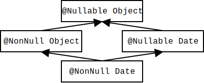
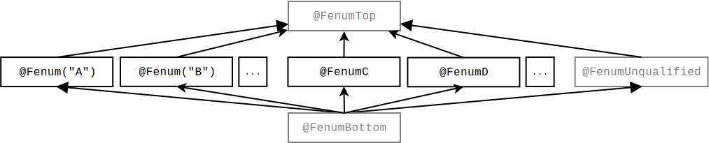
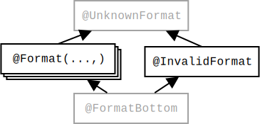
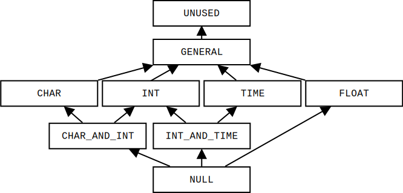
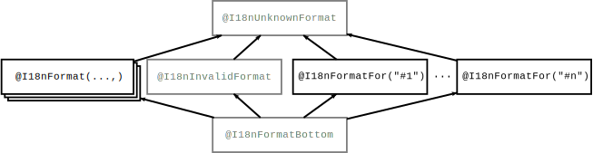
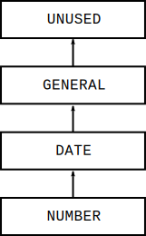
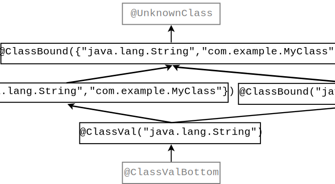

The Checker Framework Manual: |
For the impatient: Section 1.3 describes how to install and use pluggable type-checkers.
This manual is also available in PDF.
The Checker Framework enhances Java’s type system to make it more powerful and useful. This lets software developers detect and prevent errors in their Java programs.
A “checker” is a compile-time tool that warns you about certain errors or gives you a guarantee that those errors do not occur. The Checker Framework comes with checkers for specific types of errors:
These checkers are easy to use and are invoked as arguments to javac.
The Checker Framework also enables you to write new checkers of your own; see Chapters 28 and 35.
If you wish to get started using some particular type system from the list above, then the most effective way to read this manual is:
Java’s built-in type-checker finds and prevents many errors — but it doesn’t find and prevent enough errors. The Checker Framework lets you define new type systems and run them as a plug-in to the javac compiler. Your code stays completely backward-compatible: your code compiles with any Java compiler, it runs on any JVM, and your coworkers don’t have to use the enhanced type system if they don’t want to. You can check part of your program, or the whole thing. Type inference tools exist to help you annotate your code; see Section 33.
Most programmers will use type systems created by other people, such as those listed at the start of the introduction (Chapter 1). Some people, called “type system designers”, create new type systems (Chapter 35). The Checker Framework is useful both to programmers who wish to write error-free code, and to type system designers who wish to evaluate and deploy their type systems.
This document uses the terms “checker” and “type-checking compiler plugin” as synonyms.
This section describes how to install the Checker Framework.
Requirement: You must have a JDK (version 8 or later) installed.
The installation process has two required steps and one optional step.
Now you are ready to start using the checkers.
We recommend that you work through the Checker Framework tutorial, which demonstrates the Nullness, Regex, and Tainting Checkers.
Section 1.4 walks you through a simple example. More detailed instructions for using a checker appear in Chapter 2.
The Checker Framework is released on a monthly schedule. The minor version (the middle number in the version number) is incremented if there are any incompatibilities with the previous version, including in user-visible behavior or in methods that a checker implementation might call.
This section gives a very simple example of running the Checker Framework. There is also a tutorial that you can work along with.
Let’s consider this very simple Java class. The local variable ref’s type is annotated as @NonNull, indicating that ref must be a reference to a non-null object. Save the file as GetStarted.java.
import org.checkerframework.checker.nullness.qual.*;
public class GetStarted {
void sample() {
@NonNull Object ref = new Object();
}
}
If you run the Nullness Checker (Chapter 3), the compilation completes without any errors.
Now, introduce an error. Modify ref’s assignment to:
@NonNull Object ref = null;
If you run the Nullness Checker again, it emits the following error:
GetStarted.java:5: incompatible types.
found : @Nullable <nulltype>
required: @NonNull Object
@NonNull Object ref = null;
^
1 error
This is a trivially simple example. Even an unsound bug-finding tool like SpotBugs or Error Prone could have detected this bug. The Checker Framework’s analysis is more powerful than those tools and detects more code defects than they do.
Type qualifiers such as @NonNull are permitted anywhere that you can write a type, including generics and casts; see Section 2.1. Here are some examples:
@Interned String intern() { ... } // return value int compareTo(@NonNull String other) { ... } // parameter @NonNull List<@Interned String> messages; // non-null list of interned Strings
A pluggable type-checker enables you to detect certain bugs in your code, or to prove that they are not present. The verification happens at compile time.
Finding bugs, or verifying their absence, with a checker is a two-step process, whose steps are described in Sections 2.1 and 2.2.
This chapter is structured as follows:
Additional topics that apply to all checkers are covered later in the manual:
There is a tutorial that walks you through using the Checker Framework on the command line.
You may write a type annotation immediately before any use of a type, including in generics and casts. Because array levels are types and receivers have types, you can also write type annotations on them. Here are a few examples of type annotations:
@Interned String intern() { ... } // return value int compareTo(@NonNull String other) { ... } // parameter String toString(@Tainted MyClass this) { ... } // receiver ("this" parameter) @NonNull List<@Interned String> messages; // generics: non-null list of interned Strings @Interned String @NonNull [] messages; // arrays: non-null array of interned Strings myDate = (@Initialized Date) beingConstructed; // cast
You only need to write type annotations on method signatures, fields, and some type arguments. Most annotations within method bodies are inferred for you; for more details, see Section 31.7.
The Java Language Specification also defines declaration annotations, such as @Deprecated and @Override, which apply to a class, method, or field but do not apply to the method’s return type or the field’s type. They should be written on their own line in the source code, before the method’s signature.
To run a checker, run the compiler javac as usual, but either pass the -processor plugin_class command-line option, or use auto-discovery as described in Section 2.2.3. (If your project already uses auto-discovery for some annotation processor, such as AutoValue, then you should use auto-discovery.) Two concretes example of using -processor to run the Nullness Checker are
javac -processor nullness MyFile.java javac -processor org.checkerframework.checker.nullness.NullnessChecker MyFile.java
where javac is as specified in Section 37.5.
You can also run a checker from within your favorite IDE or build system. See Chapter 37 for details about build tools such as Ant (Section 37.3), Buck (Section 37.4), Gradle (Section 37.8), Maven (Section 37.12), and sbt (Section 37.14); IDEs such as Eclipse (Section 37.7), IntelliJ IDEA (Section 37.9), NetBeans (Section 37.13), and tIDE (Section 37.15); and about customizing other IDEs and build tools.
The checker is run on only the Java files that javac compiles. This includes all Java files specified on the command line and those created by another annotation processor. It may also include other of your Java files, if they are more recent than the corresponding .class file. Even when the checker does not analyze a class (say, the class was already compiled, or source code is not available), it does check the uses of those classes in the source code being compiled. Type-checking works modularly and intraprocedurally: when verifying a method, it examines only the signature (including annotations) of other methods, not their implementations. When analyzing a variable use, it relies on the type of the variable, not any dataflow outside the current method that produced the value.
After you compile your code while running a checker, the resulting .class and .jar files can be used for pluggable type-checking of client code.
If you compile code without the -processor command-line option, no checking of the type annotations is performed. Furthermore, only explicitly-written annotations are written to the .class file; defaulted annotations are not, and this will interfere with type-checking of clients that use your code. Therefore, to create .class files that will be distributed or compiled against, you should run the type-checkers for all the annotations that you have written.
When your code uses a library that is not currently being compiled, the Checker Framework looks up the library’s annotations in its class files or in a stub file.
Some projects are already distributed with type annotations by their maintainers, so you do not need to do anything special. An example is all the libraries in https://github.com/plume-lib/. Over time, this should become more common.
For some other libraries, the Checker Framework developers have provided an annotated version of the library, either as a stub file or as compiled class files. (If some library is not available in either of these forms, you can contribute by annotating it, which will help you and all other Checker Framework users; see Chapter 34.)
Some stub files are used automatically by a checker, without any action on your part. For others, you must pass the -Astubs=... command-line argument. As a special case, if an .astub file appears in checker/resources/, then pass the command-line option use -Astubs=checker.jar/stubfilename.astub. The “checker.jar” should be literal — don’t provide a path. This special syntax only works for “checker.jar”.
The annotated libraries that are provided as class files appear in the org.checkerframework.annotatedlib group in the Maven Central Repository. The annotated library has identical behavior to the upstream, unannotated version; the source code is identical other than added annotations. (Some of the annotated libraries are bcel, commons-csv, commons-io, guava, and java-getopt.)
To use an annotated library:
api group: 'org.apache.bcel', name: 'bcel', version: '6.3.1' api group: 'commons-io', name: 'commans-io', version: '2.8'
to
api group: 'org.checkerframework.annotatedlib', name: 'bcel', version: '6.3.1' api group: 'org.checkerframework.annotatedlib', name: 'commons-io', version: '2.8.0.1'
Usually use the same version number. (Sometimes you will use a slightly larger number, if the Checker Framework developers have improved the type annotations since the last release by the upstream maintainers.) If a newer version of the upstream library is available but that version is not available in org.checkerframework.annotatedlib, then open an issue requesting that the org.checkerframework.annotatedlib version be updated.
There is one special case. If an .astub file is shipped with the Checker Framework in checker/resources/, then you can use -Astubs=checker.jar/stubfilename.astub. The “checker.jar” should be literal — don’t provide a path. (This special syntax only works for “checker.jar”.)
You can pass command-line arguments to a checker via javac’s standard -A option (“A” stands for “annotation”). All of the distributed checkers support the following command-line options. Each checker may support additional command-line options; see the checker’s documentation.
To pass an option to only a particular checker, prefix the option with the canonical or simple name of a checker, followed by an underscore “_”. Such an option will apply only to a checker with that name or any subclass of that checker. For example, you can use
-ANullnessChecker_lint=redundantNullComparison
-Aorg.checkerframework.checker.guieffect.GuiEffectChecker_lint=debugSpew
to pass different lint options to the Nullness and GUI Effect Checkers. A downside is that, in this example, the Nullness Checker will issue a “The following options were not recognized by any processor” warning about the second option and the GUI Effect Checker will issue a “The following options were not recognized by any processor” warning about the first option.
Unsound checking: ignore some errors
More sound (strict) checking: enable errors that are disabled by default
Type-checking modes: enable/disable functionality
Partially-annotated libraries
Debugging
Compatibility options
‘FQN.canonical.Qualifier1:FQN.alias1.Qual1,FQN.alias2.Qual1;FQN.canonical.Qualifier2:FQN.alias1.Qual2‘.
This can only be used for annotations whose attributes have the same names as in the canonical annotation, e.g. this will not be usable to declare an alias ‘@Regex(index = 5)‘ for ‘@Regex(value = 5)‘. When in a Unix system, ‘;‘ needs to be escaped.
‘FQN.canonical.Qualifier1:FQN.alias1.Qual1,FQN.alias2.Qual1;FQN.canonical.Qualifier2:FQN.alias1.Qual2‘.
This can only be used for annotations without attributes, e.g. this will not be usable to declare an alias for ‘@EnsuresNonNull(...)‘. When in a Unix system, ‘;‘ needs to be escaped.
Some checkers support additional options, which are described in that checker’s manual section. For example, -Aquals tells the Subtyping Checker (see Chapter 28) and the Fenum Checker (see Chapter 9) which annotations to check.
Here are some standard javac command-line options that you may find useful. Many of them contain “processor” or “proc”, because in javac jargon, a checker is an “annotation processor”.
“Auto-discovery” makes the javac compiler always run an annotation processor, such as a checker plugin, without explicitly passing the -processor command-line option. This can make your command line shorter, and it ensures that your code is checked even if you forget the command-line option.
If the javac command line specifies any -processor command-line option, then auto-discovery is disabled. This means that if your project currently uses auto-discovery, you should use auto-discovery for the Checker Framework too. (Alternately, if you prefer to use a -processor command-line argument, you will need to specify all annotation processors, including ones that used to be auto-discovered.)
To enable auto-discovery, place a configuration file named META-INF/services/javax.annotation.processing.Processor in your classpath. The file contains the names of the checkers to be used, listed one per line. For instance, to run the Nullness Checker and the Interning Checker automatically, the configuration file should contain:
org.checkerframework.checker.nullness.NullnessChecker org.checkerframework.checker.interning.InterningChecker
You can disable this auto-discovery mechanism by passing the -proc:none command-line option to javac, which disables all annotation processing including all pluggable type-checking.
Ordinarily, javac’s -processor flag requires fully-qualified class names. When using the Checker Framework javac wrapper (Section 37.5), you may omit the package name and the Checker suffix. The following three commands are equivalent:
javac -processor org.checkerframework.checker.nullness.NullnessChecker MyFile.java javac -processor NullnessChecker MyFile.java javac -processor nullness MyFile.java
This feature also works when multiple checkers are specified. Their names are separated by commas, with no surrounding space. For example:
javac -processor NullnessChecker,RegexChecker MyFile.java javac -processor nullness,regex MyFile.java
This feature does not apply to javac @argfiles.
A checker guarantees two things: type annotations reflect facts about run-time values, and illegal operations are not performed.
For example, the Nullness Checker (Chapter 3) guarantees lack of null pointer exceptions (Java NullPointerException). More precisely, it guarantees that expressions whose type is annotated with @NonNull never evaluate to null, and it forbids other expressions from being dereferenced.
As another example, the Interning Checker (Chapter 6) guarantees that correct equality tests are performed. More precisely, it guarantees that every expression whose type is an @Interned type evaluates to an interned value, and it forbids == on other expressions.
The guarantee holds only if you run the checker on every part of your program and the checker issues no warnings anywhere in the code. You can also verify just part of your program.
There are some limitations to the guarantee.
In each of these cases, any use of the code is checked — for example, a call to a native method must be compatible with any annotations on the native method’s signature. However, the annotations on the un-checked code are trusted; there is no verification that the implementation of the native method satisfies the annotations.
In order to avoid a flood of unhelpful warnings, many of the checkers avoid issuing the same warning multiple times. For example, consider this code:
@Nullable Object x = ...; x.toString(); // warning x.toString(); // no warning
The second call to toString cannot possibly throw a null pointer warning — x is non-null if control flows to the second statement. In other cases, a checker avoids issuing later warnings with the same cause even when later code in a method might also fail. This does not affect the soundness guarantee, but a user may need to examine more warnings after fixing the first ones identified. (Often, a single fix corrects all the warnings.)
If you find that a checker fails to issue a warning that it should, then please report a bug (see Section 39.2).
Section 34.1 gives additional tips that are specific to annotating a third-party library.
Before you run a checker, annotate the code, based on its documentation. Then, run the checker to uncover bugs in the code or the documentation.
Don’t do the opposite, which is to run the checker and then add annotations according to the warnings issued. This approach is less systematic, so you may overlook some annotations. It often leads to confusion and poor results. It leads users to make changes not for any principled reason, but to “make the type-checker happy”, even when the changes are in conflict with the documentation or the code. Also see “Annotations are a specification”, below.
Annotating an entire existing program may seem like a daunting task. But, if you approach it systematically and do a little bit at a time, you will find that it is manageable.
Start small. Focus on one specific property that matters to you; in other words, run just one checker rather than multiple ones. You may choose a different checker for different programs. Focus on the most mission-critical or error-prone part of your code; don’t try to annotate your whole program at first.
It is easiest to add annotations if you know the code or the code contains documentation. While adding annotations, you will spend most of your time understanding the code, and less time actually writing annotations or running the checker.
Don’t annotate the whole program, but work module by module. Start annotating classes at the leaves of the call tree — that is, start with classes/packages that have few dependencies on other code. Annotate supertypes before you annotate classes that extend or implement them. The reason for this rule is that it is easiest to annotate a class if the code it depends on has already been annotated. Sections 32.4 and 32.5 give ways to skip checking of some files, directories, or packages. Section 2.4.6 gives advice about handling calls from annotated code into unannotated code.
When annotating, be systematic; we recommend annotating an entire class or module at a time (not just some of the methods) so that you don’t lose track of your work or redo work. For example, working class-by-class avoids confusion about whether an unannotated type use means you determined that the default is desirable, or it means you didn’t yet examine that type use.
Don’t overuse pluggable type-checking. If the regular Java type system can verify a property using Java subclasses, then that is a better choice than pluggable type-checking (see Section 38.1.2).
When you write annotations, you are writing a specification, and you should think about them that way. Start out by understanding the program so that you can write an accurate specification. Sections 2.4.3 and 2.4.4 give more tips about writing specifications.
For each class, read its Javadoc. For instance, if you are adding annotations for the Nullness Checker (Section 3), then you can search the documentation for “null” and then add @Nullable anywhere appropriate. Start by annotating signatures and fields, but not method bodies. The only reason to even read the method bodies yet is to determine signature annotations for undocumented methods — for example, if the method returns null, you know its return type should be annotated @Nullable, and a parameter that is compared against null may need to be annotated @Nullable.
The specification should state all facts that are relevant to callees. When checking a method, the checker uses only the specification, not the implementation, of other methods. (Equivalently, type-checking is “modular” or “intraprocedural”.) When analyzing a variable use, the checker relies on the type of the variable, not any dataflow outside the current method that produced the value.
After you have annotated all the signatures, run the checker. Then, fix bugs in code and add/modify annotations as necessary. Don’t get discouraged if you see many type-checker warnings at first. Often, adding just a few missing annotations will eliminate many warnings, and you’ll be surprised how fast the process goes overall (assuming that you understand the code, of course).
It is usually not a good idea to experiment with adding and removing annotations in order to understand their effect. It is better to reason about the desired design. However, to avoid having to manually examine all callees, a more automated approach is to save the checker output before changing an annotation, then compare it to the checker output after changing the annotation.
Chapter 34 tells you how to annotate libraries that your code uses. Section 2.4.5 and Chapter 32 tell you what to do when you are unable to eliminate checker warnings by adding annotations.
Avoid complex code, which is more error-prone. If you write your code to be simple and clear enough for the type-checker to verify, then it will also be easier for programmers to understand. When you verify your code, a side benefit is improving your code’s structure.
Your code should compile cleanly under the regular Java compiler. As a specific example, your code should not use raw types like List; use parameterized types like List<String> instead (Section 30.1.1). If you suppress Java compiler warnings, then the Checker Framework will issue more warnings, and its messages will be more confusing. (Also, if you are not willing to write code that type-checks in Java, then you might not be willing to use an even more powerful type system.)
Do not write unnecessary annotations.
// The below code increments variable i by adding 1 to it. i++;
As you become comfortable with pluggable type-checking, you will find redundant annotations to be distracting clutter, so avoid putting them in your code in the first place.
You should use annotations to specify normal behavior. The annotations indicate all the values that you want to flow to a reference — not every value that might possibly flow there if your program has a bug.
As an example, consider the Nullness Checker. Its goal is to guarantee that your program does not crash due to a null value.
This method crashes if null is passed to it:
/** @throws NullPointerException if arg is null */
void m1(Object arg) {
arg.toString();
...
}
Therefore, the type of arg should be @NonNull Object — you can write this as just Object, because @NonNull is the default. The Nullness Checker (Chapter 3) prevents null pointer exceptions by warning you whenever a client passes a value that might cause m1 to crash.
Here is another method:
/** @throws NullPointerException if arg is null */
void m2(Object arg) {
Objects.requireNonNull(arg);
...
}
Method m2 behaves just like m1 in that it throws NullPointerException if a client passes null. Therefore, their specifications should be identical (the formal parameter type is annotated with @NonNull), so the checker will issue the same warning if a client might pass null.
The same argument applies to any method that is guaranteed to throw an exception if it receives null as an argument. Examples include:
com.google.common.base.Preconditions.checkNotNull(Object) java.lang.Double.valueOf(String) java.lang.Objects.requireNonNull(Object) java.lang.String.contains(CharSequence) org.junit.Assert.assertNotNull(Object) org.junit.jupiter.api.Assert.assertNotNull(Object)
Their formal parameter type is annotated as @NonNull, because otherwise the program might crash. Adding a call to a method like requireNonNull never prevents a crash: your code still crashes, but with a slightly different stack trace. In order to prevent all exceptions in your program caused by null pointers, you need to prevent those thrown by methods including requireNonNull.
(One might argue that the formal parameter should be annotated as @Nullable because passing null has a well-defined semantics (throw an exception) and such an execution may be possible if your program has a bug. However, it is never the programmer’s intent for null to flow there. Preventing such bugs is the purpose of the Nullness Checker.)
A method like requireNonNull is useless for making your code correct, but it does have a benefit: its stack trace may help developers to track down the bug. (For users, the stack trace is scary, confusing, and usually non-actionable.) But if you are using the Checker Framework, you can prevent errors rather than needing extra help in debugging the ones that occur at run time.
Another example is the Optional Checker (Chapter 5) and the orElseThrow method. The goal of the Optional Checker is to ensure that the program does not crash due to use of a non-present Optional value. Therefore, the receiver of orElseThrow is annotated as @Present, and the Optional Checker issues a warning if the client calls orElseThrow on a @MaybePresent value.
You can make a checker ignore crashes in library code, such as assertNotNull(), that occur as a result of misuse by your code. This invalidates the checker’s guarantee that your program will not crash. (Programmers and users typically care about all crashes, no matter which method is at the top of the call stack when the exception is thrown.) The checker will still warn you about crashes in your own code.
As a special case, if you want the Nullness Checker to prevent most null pointer exceptions in your code, but to permit null pointer exceptions at nullness assertion methods, you can pass -Astubs=permit-nullness-assertion-exception.astub.
If a method can possibly throw an exception because its parameter is null, then that parameter’s type should be @NonNull, which guarantees that the type-checker will issue a warning for every client use that has the potential to cause an exception. Don’t write @Nullable on the parameter just because there exist some executions that don’t necessarily throw an exception.
An annotation indicates a guarantee that a client can depend upon. A subclass is not permitted to weaken the contract; for example, if a method accepts null as an argument, then every overriding definition must also accept null. A subclass is permitted to strengthen the contract; for example, if a method does not accept null as an argument, then an overriding definition is permitted to accept null.
As a bad example, consider an erroneous @Nullable annotation in com/google/common/collect/Multiset.java:
101 public interface Multiset<E> extends Collection<E> {
...
122 /**
123 * Adds a number of occurrences of an element to this multiset.
...
129 * @param element the element to add occurrences of; may be {@code null} only
130 * if explicitly allowed by the implementation
...
137 * @throws NullPointerException if {@code element} is null and this
138 * implementation does not permit null elements. Note that if {@code
139 * occurrences} is zero, the implementation may opt to return normally.
140 */
141 int add(@Nullable E element, int occurrences);
There exist implementations of Multiset that permit null elements, and implementations of Multiset that do not permit null elements. A client with a variable Multiset ms does not know which variety of Multiset ms refers to. However, the @Nullable annotation promises that ms.add(null, 1) is permissible. (Recall from Section 2.4.3 that annotations should indicate normal behavior.)
If parameter element on line 141 were to be annotated, the correct annotation would be @NonNull. Suppose a client has a reference to same Multiset ms. The only way the client can be sure not to throw an exception is to pass only non-null elements to ms.add(). A particular class that implements Multiset could declare add to take a @Nullable parameter. That still satisfies the original contract. It strengthens the contract by promising even more: a client with such a reference can pass any non-null value to add(), and may also pass null.
However, the best annotation for line 141 is no annotation at all. The reason is that each implementation of the Multiset interface should specify its own nullness properties when it specifies the type parameter for Multiset. For example, two clients could be written as
class MyNullPermittingMultiset implements Multiset<@Nullable Object> { ... }
class MyNullProhibitingMultiset implements Multiset<@NonNull Object> { ... }
or, more generally, as
class MyNullPermittingMultiset<E extends @Nullable Object> implements Multiset<E> { ... }
class MyNullProhibitingMultiset<E extends @NonNull Object> implements Multiset<E> { ... }
Then, the specification is more informative, and the Checker Framework is able to do more precise checking, than if line 141 has an annotation.
It is a pleasant feature of the Checker Framework that in many cases, no annotations at all are needed on type parameters such as E in MultiSet.
When you run a type-checker on your code, it is likely to issue warnings or errors. Don’t panic! If you have trouble understanding a Checker Framework warning message, you can search for its text in this manual. There are three general causes for the warnings:
Usually you need to improve the annotations in your source code. Sometimes you need to improve annotations in a library that your program uses (see Chapter 34).
If possible, rewrite your code to be simpler for the checker to analyze; this is likely to make it easier for people to understand, too. If that is not possible, suppress the warning (see Chapter 32); be sure to include a code comment explaining how you know the code is correct even though the type-checker cannot deduce that fact.
Do not add an if test that can never fail, just to suppress a warning. Adding a gratuitous if clutters the code and confuses readers. A reader should assume that every if condition can evaluate to true or false. There is one exception to this rule: an if test may have a condition that you think will never evaluate to true, if its body just throws a descriptive error message.
For each warning issued by the checker, you need to determine which of the above categories it falls into. Here is an effective methodology to do so. It relies mostly on manual code examination, but you may also find it useful to write test cases for your code or do other kinds of analysis, to verify your reasoning. (Also see Section 39.1.4 and Chapter 39, Troubleshooting. In particular, Section 39.1.4 explains this same methodology in different words.)
Write an explanation of why your code is correct and it never suffers the error at run time. In other words, this is an informal proof that the type-checker’s warning is incorrect. Write it in natural language, such as English.
Don’t skip any steps in your proof. (For example, don’t write an unsubstantiated claim such as “x is non-null here”; instead, give a justification.) Don’t let your reasoning rely on facts that you do not write down explicitly. For example, remember that calling a method might change the values of object fields; your proof might need to state that certain methods have no side effects.
If you cannot write a proof, then there is a bug in your code (you should fix the bug) or your code is too complex for you to understand (you should improve its documentation and/or design).
Here are some examples of the translation.
All of these are examples of correcting weaknesses in the annotations you wrote. The Checker Framework provides many other powerful annotations; you may be surprised how many proofs you can express in annotations. If you need to annotate a method that is defined in a library that your code uses, see Chapter 34.
Don’t omit any parts of your proof. When the Checker Framework analyzes a method, it examines only the signature/specification (not the implementation) of other methods.
If there are complex facts in your proof that cannot be expressed as annotations, then that is a weakness in the type-checker. For example, the Nullness Checker cannot express “in list lst, elements stored at even indices are always non-null, but elements stored at odd elements might be null.” In this case, you have two choices. First, you can suppress the warning (Chapter 32); be sure to write a comment explaining your reasoning for suppressing the warning. You may wish to submit a feature request (Section 39.2) asking for annotations that handle your use case. Second, you can rewrite the code to make the proof simpler; in the above example, it might be better to use a list of pairs rather than a heterogeneous list.
At this point, all the steps in your proof have been formalized as annotations. Re-run the checker and repeat the process for any new or remaining warnings.
If every step of your proof can be expressed in annotations, but the checker cannot make one of the deductions (it cannot follow one of the steps), then that is a weakness in the type-checker. First, double-check your reasoning. Then, suppress the warning, along with a comment explaining your reasoning (Chapter 32). The comment is an excerpt from your informal proof, and the proof guides you to the best place to suppress the warning. Please submit a bug report so that the checker can be improved in the future (Section 39.2).
Sometimes, you wish to type-check only part of your program. You might focus on the most mission-critical or error-prone part of your code. When you start to use a checker, you may not wish to annotate your entire program right away. You may not have enough knowledge to annotate poorly-documented libraries that your program uses. Or, the code you are annotating may call into unannotated libraries.
If annotated code uses unannotated code, then the checker may issue warnings. For example, the Nullness Checker (Chapter 3) will warn whenever an unannotated method result is used in a non-null context:
@NonNull myvar = unannotated_method(); // WARNING: unannotated_method may return null
If the call can return null, you should fix the bug in your program by removing the @NonNull annotation in your own program.
If the call never returns null, you have two choices: annotate the library or suppress warnings.
If the Nullness Checker issues no warnings for a given program, then running that program will never throw a null pointer exception. In other words, the Nullness Checker prevents all NullPointerExceptions. See Section 3.1 for more details about the guarantee and what is checked.
The most important annotations supported by the Nullness Checker are @NonNull and @Nullable. @NonNull is rarely written, because it is the default. All of the annotations are explained in Section 3.2.
To run the Nullness Checker, supply the -processor org.checkerframework.checker.nullness.NullnessChecker command-line option to javac. For examples, see Section 3.5.
The NullnessChecker is actually an ensemble of three pluggable type-checkers that work together: the Nullness Checker proper (which is the main focus of this chapter), the Initialization Checker (Section 3.8), and the Map Key Checker (Chapter 4). Their type hierarchies are completely independent, but they work together to provide precise nullness checking.
If the Nullness Checker type-checks your program without errors, then your program will not crash with a NullPointerException that is caused by misuse of null in checked code. Section 2.3 notes some limitations to guarantees made by the Checker Framework.
The checker issues a warning in these cases:
As a special case of an of @NonNull type becoming null, the checker also warns whenever a field of @NonNull type is not initialized in a constructor.
This example illustrates the programming errors that the checker detects:
@Nullable Object obj; // might be null @NonNull Object nnobj; // never null ... obj.toString() // checker warning: dereference might cause null pointer exception nnobj = obj; // checker warning: nnobj may become null if (nnobj == null) // checker warning: redundant test
Parameter passing and return values are checked analogously to assignments.
The Nullness Checker also checks the correctness, and correct use, of initialization (see Section 3.8) and of map key annotations (see Chapter 4).
The checker performs additional checks if certain -Alint command-line options are provided. (See Section 32.6 for more details about the -Alint command-line option.)
By default, the checker forbids calls to those methods, and also special-cases type-checking of calls to System.getProperty() and System.setProperties(). A call to one of these methods can return null in general, but by default the Nullness Checker treats it as returning non-null if the argument is one of the literal strings listed in the documentation of System.getProperties(). To make this behavior sound, the Nullness Checker forbids calls that might clear any built-in property, as described above.
The Nullness Checker uses three separate type hierarchies: one for nullness, one for initialization (Section 3.8), and one for map keys (Chapter 4) The Nullness Checker has four varieties of annotations: nullness type qualifiers, nullness method annotations, initialization type qualifiers, and map key type qualifiers.
The nullness hierarchy contains these qualifiers:
The @NonNull annotation is rarely written in a program, because it is the default (see Section 3.3.2).
The benefit of @MonotonicNonNull over @Nullable is that after a check of a @MonotonicNonNull field, all subsequent accesses within that method can be assumed to be @NonNull, even after arbitrary external method calls that have access to the given field. By contrast, for a @Nullable field, the Nullness Checker assumes that most method calls might set it to null. (Exceptions are calls to methods that are @SideEffectFree or that have an @EnsuresNonNull or @EnsuresNonNullIf annotation.)
A @MonotonicNonNull field may be initialized to null, but the field may not be assigned to null anywhere else in the program. If you supply the noInitForMonotonicNonNull lint flag (for example, supply -Alint=noInitForMonotonicNonNull on the command line), then @MonotonicNonNull fields are not allowed to have initializers at their declarations.
Use of @MonotonicNonNull on a static field is a code smell: it may indicate poor design. You should consider whether it is possible to make the field a member field that is set in the constructor.
In the type system, @MonotonicNonNull is a supertype of @NonNull and a subtype of @Nullable.
Figure 3.1 shows part of the type hierarchy for the Nullness type system. (The annotations exist only at compile time; at run time, Java has no multiple inheritance.)

Figure 3.1: Partial type hierarchy for the Nullness type system. Java’s Object is expressed as @Nullable Object. Programmers can omit most type qualifiers, because the default annotation (Section 3.3.2) is usually correct. The Nullness Checker verifies three type hierarchies: this one for nullness, one for initialization (Section 3.8), and one for map keys (Chapter 4).
The Nullness Checker supports several annotations that specify method behavior. These are declaration annotations, not type annotations: they apply to the method itself rather than to some particular type.
The Nullness Checker invokes an Initialization Checker, whose annotations indicate whether an object is fully initialized — that is, whether all of its fields have been assigned.
Use of these annotations can help you to type-check more code. Figure 3.5 shows its type hierarchy. For details, see Section 3.8.
indicates that a value is a key for a given map — that is, indicates whether map.containsKey(value) would evaluate to true.
This annotation is checked by a Map Key Checker (Chapter 4) that the Nullness Checker invokes. The @KeyFor annotation enables the Nullness Checker to treat calls to Map.get precisely rather than assuming it may always return null. In particular, a call mymap.get(mykey) returns a non-null value if two conditions are satisfied:
If either of these two conditions is violated, then mymap.get(mykey) has the possibility of returning null.
The command-line argument -AassumeKeyFor makes the Nullness Checker not run the Map Key Checker. The Nullness Checker will unsoundly assume that the argument to Map.get is a key for the receiver map. That is, the second condition above is always considered to be true.
The Nullness Checker adds implicit qualifiers, reducing the number of annotations that must appear in your code (see Section 31.4). For example, enum types are implicitly non-null, so you never need to write @NonNull MyEnumType.
If you want details about implicitly-added nullness qualifiers, see the implementation of NullnessAnnotatedTypeFactory.
Unannotated references are treated as if they had a default annotation. All types default to @NonNull, except that @Nullable is used for casts, locals, instanceof, and implicit bounds (see Section 31.5.3). A user can choose a different defaulting rule by writing a @DefaultQualifier annotation on a package, class, or method. In the example below, fields are defaulted to @Nullable instead of @NonNull.
@DefaultQualifier(value = Nullable.class, locations = TypeUseLocation.FIELD)
class MyClass {
Object nullableField = null;
@NonNull Object nonNullField = new Object();
}
The Nullness Checker supports a form of conditional nullness types, via the @EnsuresNonNullIf method annotations. The annotation on a method declares that some expressions are non-null, if the method returns true (false, respectively).
Consider java.lang.Class. Method Class.getComponentType() may return null, but it is specified to return a non-null value if Class.isArray() is true. You could declare this relationship in the following way (this particular example is already done for you in the annotated JDK that comes with the Checker Framework):
class Class<T> {
@EnsuresNonNullIf(expression="getComponentType()", result=true)
public native boolean isArray();
public native @Nullable Class<?> getComponentType();
}
A client that checks that a Class reference is indeed that of an array, can then de-reference the result of Class.getComponentType safely without any nullness check. The Checker Framework source code itself uses such a pattern:
if (clazz.isArray()) {
// no possible null dereference on the following line
TypeMirror componentType = typeFromClass(clazz.getComponentType());
...
}
Another example is Queue.peek and Queue.poll, which return non-null if isEmpty returns false.
The argument to @EnsuresNonNullIf is a Java expression, including method calls (as shown above), method formal parameters, fields, etc.; for details, see Section 31.8. More examples of the use of these annotations appear in the Javadoc for @EnsuresNonNullIf.
Java programs sometimes contain more complex nullness invariants. When these invariants are more complex than handled by the Nullness Checker, you will need to suppress a warning (see Section 3.4).
Suppose that you declare an array to contain non-null elements:
Object [] oa = new Object[10];
(recall that Object means the same thing as @NonNull Object). By default, the Nullness Checker unsoundly permits this code.
To make the Nullness Checker conservatively reject code that may leave a non-null value in an array, use the command-line option -Alint=soundArrayCreationNullness. The option is currently disabled because it makes the checker issue many false positive errors.
With the option enabled, you can write your code to create a nullable or lazy-nonnull array, initialize each component, and then assign the result to a non-null array:
@MonotonicNonNull Object [] temp = new @MonotonicNonNull Object[10];
for (int i = 0; i < temp.length; ++i) {
temp[i] = new Object();
}
@SuppressWarnings("nullness") // temp array is now fully initialized
@NonNull Object [] oa = temp;
Note that the checker is currently not powerful enough to ensure that each array component was initialized. Therefore, the last assignment needs to be trusted: that is, a programmer must verify that it is safe, then write a @SuppressWarnings annotation.
The nullness semantics of Collection.toArray(T[]) cannot be captured by just the nullness type system, though the Nullness Checker contains special-case code to type-check calls to toArray. Therefore, you will probably have to write @SuppressWarnings("nullness") on any overriding definitions of toArray.
The nullness type of the returned array depends on the size of the passed parameter. In particular, the returned array component is of type @NonNull if the following conditions hold:
Additionally, when you supply the -Alint=trustArrayLenZero command-line option, a call to Collection.toArray will be estimated to return an array with a non-null component type if the argument is a field access where the field declaration has a @ArrayLen(0) annotation. This trusts the @ArrayLen(0) annotation, but does not verify it. Run the Constant Value Checker (see Chapter 22) to verify that annotation.
Note: The nullness of the returned array doesn’t depend on the passed array nullness. This is a fact about Collection.toArray(T[]), not a limitation of this heuristic.
When you perform a run-time check for nullness, such as if (x != null) ..., then the Nullness Checker refines the type of x to @NonNull. The refinement lasts until the end of the scope of the test or until x may be side-effected. For more details, see Section 31.7.
It can be tedious to write annotations in your code. Tools exist that can automatically infer annotations and insert them in your source code. (This is different than type qualifier refinement for local variables (Section 31.7), which infers a more specific type for local variables and uses them during type-checking but does not insert them in your source code. Type qualifier refinement is always enabled, no matter how annotations on signatures got inserted in your source code.)
Your choice of tool depends on what default annotation (see Section 3.3.2) your code uses. You only need one of these tools.
When the Nullness Checker reports a warning, it’s best to change the code or its annotations, to eliminate the warning. Alternately, you can suppress the warning, which does not change the code but prevents the Nullness Checker from reporting this particular warning to you.
The Checker Framework supplies several ways to suppress warnings, most notably the @SuppressWarnings("nullness") annotation (see Chapter 32). An example use is
// might return null
@Nullable Object getObject(...) { ... }
void myMethod() {
@SuppressWarnings("nullness") // with argument x, getObject always returns a non-null value
@NonNull Object o2 = getObject(x);
The Nullness Checker supports an additional warning suppression string, nullness:generic.argument. Use of @SuppressWarnings("nullness:generic.argument") causes the Nullness Checker to suppress warnings related to misuse of generic type arguments. One use for this key is when a class is declared to take only @NonNull type arguments, but you want to instantiate the class with a @Nullable type argument, as in List<@Nullable Object>.
The Nullness Checker also permits you to use assertions or method calls to suppress warnings; see below.
Occasionally, it is inconvenient or verbose to use the @SuppressWarnings annotation. For example, Java does not permit annotations such as @SuppressWarnings to appear on statements, expressions, static initializers, etc. Here are three ways to suppress a warning in such cases:
The rest of this section discusses the castNonNull method. It is useful if you wish to suppress a warning within an expression.
The Nullness Checker considers both the return value, and also the argument, to be non-null after the castNonNull method call. The Nullness Checker issues no warnings in any of the following code:
// One way to use castNonNull as a cast: @NonNull String s = castNonNull(possiblyNull1); // Another way to use castNonNull as a cast: castNonNull(possiblyNull2).toString(); // It is possible, but not recommmended, to use castNonNull as a statement: // (It would be better to write an assert statement with @AssumeAssertion // in its message, instead.) castNonNull(possiblyNull3); possiblyNull3.toString();
The castNonNull method throws AssertionError if Java assertions are enabled and the argument is null. However, it is not intended for general defensive programming; see Section 32.2.1.
To use the castNonNull method, the checker-util.jar file must be on the classpath at run time.
The Nullness Checker introduces a new method, rather than re-using an existing method such as org.junit.Assert.assertNotNull(Object) or com.google.common.base.Preconditions.checkNotNull(Object). Those methods are commonly used for defensive programming, so it is impossible to know the programmer’s intent when writing them. Therefore, it is important to have a method call that is used only for warning suppression. See Section 32.2.1 for a discussion of the distinction between warning suppression and defensive programming.
For collection methods with Object formal parameter type, such as contains, indexOf, and remove, the annotated JDK forbids null as an argument.
The reason is that some implementations (like ConcurrentHashMap) throw NullPointerException if null is passed. It would be unsound to permit null, because it could lead to a false negative: the Checker Framework issuing no warning even though a NullPointerException can occur at run time.
However, many other common implementations permit such calls, so some users may wish to sacrifice soundness for a reduced number of false positive warnings. To permit null as an argument to these methods, pass the command-line argument -Astubs=collection-object-parameters-may-be-null.astub.
The JDK contains nullness annotations that preserve the Nullness Checker’s guarantee (see Section 3.1) that your program will not crash with a NullPointerException. In some cases, a formal parameter may be null in some circumstances, but must be non-null in other circumstances, and those circumstances are not expressible using the Nullness Checker’s annotations.
An example is restrictions on collection arguments (see Section 3.4.2).
Another example is this WeakReference constructor:
...
* @param q the queue with which the reference is to be registered,
* or {@code null} if registration is not required
*/
public WeakReference(@Nullable T referent, ReferenceQueue<? super T> q) {
...
For some calls, q must be non-null. Therefore, q is annotated as @NonNull (which is the default and need not be explicitly written).
These JDK annotations reflect a verification philosophy: a verification tool finds all possible errors, but it sometimes issues a false positive warning. An alternate philosophy is a bug-finding philosophy: permit all calls that might be correct at run time, but sometimes miss a real error. If you wish to use the Checker Framework with the bug-finding philosophy (though the Checker Framework is still much more thorough than other bug-finders), you can do so by passing the command-line argument -Astubs=sometimes-nullable.astub.
To try the Nullness Checker on a source file that uses the @NonNull qualifier, use the following command (where javac is the Checker Framework compiler that is distributed with the Checker Framework, see Section 37.5 for details):
javac -processor org.checkerframework.checker.nullness.NullnessChecker docs/examples/NullnessExample.java
Compilation will complete without warnings.
To see the checker warn about incorrect usage of annotations (and therefore the possibility of a null pointer exception at run time), use the following command:
javac -processor org.checkerframework.checker.nullness.NullnessChecker docs/examples/NullnessExampleWithWarnings.java
The compiler will issue two warnings regarding violation of the semantics of @NonNull.
Some libraries that are annotated with nullness qualifiers are:
The papers “Practical pluggable types for Java” [PAC+08] (ISSTA 2008, https://homes.cs.washington.edu/~mernst/pubs/pluggable-checkers-issta2008.pdf) and “Building and using pluggable type-checkers” [DDE+11] (ICSE 2011, https://homes.cs.washington.edu/~mernst/pubs/pluggable-checkers-icse2011.pdf) describe case studies in which the Nullness Checker found previously-unknown errors in real software.
Here are some tips about getting started using the Nullness Checker on a legacy codebase. For more generic advice (not specific to the Nullness Checker), see Section 2.4.2. Also see the Checker Framework tutorial, which includes an example of using the Nullness Checker.
Your goal is to add @Nullable annotations to the types of any variables that can be null. (The default is to assume that a variable is non-null unless it has a @Nullable annotation.) Then, you will run the Nullness Checker. Each of its errors indicates either a possible null pointer exception, or a wrong/missing annotation. When there are no more warnings from the checker, you are done!
We recommend that you start by searching the code for occurrences of null in the following locations; when you find one, write the corresponding annotation:
You should ignore all other occurrences of null within a method body. In particular, you rarely need to annotate local variables (except their type arguments or array element types).
Only after this step should you run the Nullness Checker. The reason is that it is quicker to search for places to change than to repeatedly run the checker and fix the errors it tells you about, one at a time.
Here are some other tips:
assert var != null : "@AssumeAssertion(nullness)";
The Checker Framework’s nullness annotations are similar to annotations used in other tools. You might prefer to use the Checker Framework because it has a more powerful analysis that can warn you about more null pointer errors in your code. Most of the other tools are bug-finding tools rather than verification tools, since they give up precision, soundness, or both in favor of being fast and easy to use. Also see Section 38.10.1 for a comparison to other tools.
If your code is already annotated with a different nullness annotation, the Checker Framework can type-check your code. It treats annotations from other tools as if you had written the corresponding annotation from the Nullness Checker, as described in Figures 3.2, 3.3, and 3.4. If the other annotation is a declaration annotation, it may be moved; see Section 38.6.8.
android.annotation.NonNull android.support.annotation.NonNull android.support.annotation.RecentlyNonNull androidx.annotation.NonNull androidx.annotation.RecentlyNonNull com.android.annotations.NonNull com.google.firebase.database.annotations.NotNull com.google.firebase.internal.NonNull com.mongodb.lang.NonNull com.sun.istack.NotNull com.sun.istack.internal.NotNull com.unboundid.util.NotNull edu.umd.cs.findbugs.annotations.NonNull io.micrometer.core.lang.NonNull io.micronaut.core.annotation.NonNull io.reactivex.annotations.NonNull io.reactivex.rxjava3.annotations.NonNull jakarta.annotation.Nonnull javax.annotation.Nonnull // The field might contain a null value until it is persisted. javax.validation.constraints.NotNull libcore.util.NonNull lombok.NonNull net.bytebuddy.agent.utility.nullability.NeverNull net.bytebuddy.utility.nullability.NeverNull org.antlr.v4.runtime.misc.NotNull org.checkerframework.checker.nullness.compatqual.NonNullDecl org.checkerframework.checker.nullness.compatqual.NonNullType org.codehaus.commons.nullanalysis.NotNull org.eclipse.jdt.annotation.NonNull org.eclipse.jgit.annotations.NonNull org.eclipse.lsp4j.jsonrpc.validation.NonNull org.jetbrains.annotations.NotNull org.jmlspecs.annotation.NonNull org.jspecify.annotations.NonNull org.jspecify.nullness.NonNull org.netbeans.api.annotations.common.NonNull org.springframework.lang.NonNull reactor.util.annotation.NonNull ⇒ org.checkerframework.checker.nullness.qual.NonNull
Figure 3.2: Correspondence between other nullness annotations and the Checker Framework’s NonNull annotation.
android.annotation.Nullable android.support.annotation.Nullable android.support.annotation.RecentlyNullable androidx.annotation.Nullable androidx.annotation.RecentlyNullable com.android.annotations.Nullable com.beust.jcommander.internal.Nullable com.google.api.server.spi.config.Nullable com.google.firebase.database.annotations.Nullable com.google.firebase.internal.Nullable com.google.gerrit.common.Nullable com.google.protobuf.Internal.ProtoMethodAcceptsNullParameter com.google.protobuf.Internal.ProtoMethodMayReturnNull com.mongodb.lang.Nullable com.sun.istack.Nullable com.sun.istack.internal.Nullable com.unboundid.util.Nullable edu.umd.cs.findbugs.annotations.CheckForNull edu.umd.cs.findbugs.annotations.Nullable edu.umd.cs.findbugs.annotations.PossiblyNull edu.umd.cs.findbugs.annotations.UnknownNullness io.micrometer.core.lang.Nullable io.micronaut.core.annotation.Nullable io.reactivex.annotations.Nullable io.reactivex.rxjava3.annotations.Nullable io.vertx.codegen.annotations.Nullable jakarta.annotation.Nullable javax.annotation.CheckForNull javax.annotation.Nullable junitparams.converters.Nullable libcore.util.Nullable net.bytebuddy.agent.utility.nullability.AlwaysNull net.bytebuddy.agent.utility.nullability.MaybeNull net.bytebuddy.agent.utility.nullability.UnknownNull net.bytebuddy.utility.nullability.AlwaysNull net.bytebuddy.utility.nullability.MaybeNull net.bytebuddy.utility.nullability.UnknownNull org.apache.avro.reflect.Nullable org.apache.cxf.jaxrs.ext.Nullable org.apache.shindig.common.Nullable org.checkerframework.checker.nullness.compatqual.NullableDecl org.checkerframework.checker.nullness.compatqual.NullableType org.codehaus.commons.nullanalysis.Nullable org.eclipse.jdt.annotation.Nullable org.eclipse.jgit.annotations.Nullable org.jetbrains.annotations.Nullable org.jetbrains.annotations.UnknownNullability org.jmlspecs.annotation.Nullable org.jspecify.annotations.Nullable org.jspecify.nullness.Nullable org.jspecify.nullness.NullnessUnspecified org.netbeans.api.annotations.common.CheckForNull org.netbeans.api.annotations.common.NullAllowed org.netbeans.api.annotations.common.NullUnknown org.springframework.lang.Nullable reactor.util.annotation.Nullable ⇒ org.checkerframework.checker.nullness.qual.Nullable
Figure 3.3: Correspondence between other nullness annotations and the Checker Framework’s Nullable annotation.
com.google.protobuf.Internal.ProtoPassThroughNullness ⇒ org.checkerframework.checker.nullness.qual.PolyNull
Figure 3.4: Correspondence between other nullness annotations and the Checker Framework’s PolyNull annotation.
The Checker Framework may issue more or fewer errors than another tool. This is expected, since each tool uses a different analysis. Remember that the Checker Framework aims at soundness: it aims to never miss a possible null dereference, while at the same time limiting false reports. Also, note SpotBugs’s non-standard meaning for @Nullable (Section 3.7.2).
Java permits you to import at most one annotation of a given name. For example, if you use both android.annotation.NonNull and lombok.NonNull in your source code, then you must write at least one of them in fully-qualified form, as @android.annotation.NonNull rather than as @NonNull.
Different tools are appropriate in different circumstances. Section 38.10.1 compares verification tools like the Checker Framework with bug detectors like SpotBugs and Error Prone. In brief, a bug detector is easier to use because it requires fewer annotations, but it misses lots of real bugs that a verifier finds. You should use whichever tool is appropriate for the importance of your code.
You may also choose to use multiple tools, especially since each tool focuses on different types of errors. If you know that you will eventually want to do verification for some particular task (say, nullness checking), there is little point using the nullness analysis of bug detector such as SpotBugs first. It is easier to go straight to using the Checker Framework.
If some other tool discovers a nullness error that the Checker Framework does not, please report it to us (see Section 39.2) so that we can enhance the Checker Framework. For example, SpotBugs might detect an error that the Nullness Checker does not, if you are using an unnannotated library (including an unannotated part of the JDK) and running the Checker Framework in an unsound mode (see Section 2.2.2).
FindBugs and SpotBugs have a non-standard definition of @Nullable. This treatment is not documented in its own Javadoc; it is different from the definition of @Nullable in every other tool for nullness analysis; it means the same thing as @NonNull when applied to a formal parameter; and it invariably surprises programmers. Thus, SpotBugs’s @Nullable is detrimental rather than useful as documentation. In practice, your best bet is to not rely on SpotBugs for nullness analysis, even if you find SpotBugs useful for other purposes.
You can skip the rest of this section unless you wish to learn more details.
SpotBugs suppresses all warnings at uses of a @Nullable variable. (You have to use @CheckForNull to indicate a nullable variable that SpotBugs should check.) For example:
// declare getObject() to possibly return null
@Nullable Object getObject() { ... }
void myMethod() {
@Nullable Object o = getObject();
// SpotBugs issues no warning about calling toString on a possibly-null reference!
o.toString();
}
The Checker Framework does not emulate this non-standard behavior of SpotBugs, even if the code uses FindBugs/SpotBugs annotations.
With SpotBugs, you annotate a declaration, which suppresses checking at all client uses, even the places that you want to check. It is better to suppress warnings at only the specific client uses where the value is known to be non-null; the Checker Framework supports this, if you write @SuppressWarnings at the client uses. The Checker Framework also supports suppressing checking at all client uses, by writing a @SuppressWarnings annotation at the declaration site. Thus, the Checker Framework supports both use cases, whereas SpotBugs supports only one and gives the programmer less flexibility.
In general, the Checker Framework will issue more warnings than SpotBugs, and some of them may be about real bugs in your program. See Section 3.4 for information about suppressing nullness warnings.
FindBugs and SpotBugs made a poor choice of names. The choice of names should make a clear distinction between annotations that specify whether a reference is null, and annotations that suppress false warnings. The choice of names should also have been consistent for other tools, and intuitively clear to programmers. The FindBugs/SpotBugs choices make the SpotBugs annotations less helpful to people, and much less useful for other tools.
Another problem is that the SpotBugs @Nullable annotation is a declaration annotation rather than a type annotation. This means that it cannot be written in important locations such as type arguments, and it is misleading when written on a field of array type or a method that returns an array.
Overall, it is best to stay away from the SpotBugs nullness annotations and analysis, and use a tool with a more principled design.
Many null pointer exceptions occur because the programmer forgets to check whether a reference is null before dereferencing it. Java 8’s Optional<T> class provides a partial solution: a programmer must call the get method to access the value, and the designers of Optional hope that the syntactic occurrence of the get method will remind programmers to first check that the value is present. This is still easy to forget, however.
The Checker Framework contains an Optional Checker (see Chapter 5) that guarantees that programmers use Optional correctly, such as calling isPresent before calling get.
There are some limitations to the utility of Optional, which might lead to you choose to use regular Java references rather than Optional. (For more details, see the article “Nothing is better than the Optional type”.)
The Nullness Checker does not suffer these limitations. Furthermore, it works with existing code and types, it ensures that you check for null wherever necessary, and it infers when the check for null is not necessary based on previous statements in the method.
Java’s Optional class provides utility routines to reduce clutter when using Optional. The Nullness Checker provides an Opt class that provides all the same methods, but written for regular possibly-null Java references. To use the Opt class, the checker-util.jar file must be on the classpath at run time.
The Initialization Checker determines whether an object is initialized or not. For any object that is not fully initialized, the Nullness Checker treats its fields as possibly-null — even fields annotated as @NonNull. (The Initialization Checker focuses on @NonNull fields, to detect null pointer exceptions when using them. It does not currently ensure that primitives or @Nullable fields are initialized. Use the Initialized Fields Checker (Chapter 25) to check initialization with respect to properties other than nullness.)
Every object’s fields start out as null. By the time the constructor finishes executing, the @NonNull fields have been set to a different value. Your code can suffer a NullPointerException when using a @NonNull field, if your code uses the field during initialization. The Nullness Checker prevents this problem by warning you anytime that you may be accessing an uninitialized field. This check is useful because it prevents errors in your code. However, the analysis can be confusing to understand. If you wish to disable the initialization checks, see Section 3.8.8.
An object is partially initialized from the time that its constructor starts until its constructor finishes. This is relevant to the Nullness Checker because while the constructor is executing — that is, before initialization completes — a @NonNull field may be observed to be null, until that field is set. In particular, the Nullness Checker issues a warning for code like this:
public class MyClass {
private @NonNull Object f;
public MyClass(int x) {
// Error because constructor contains no assignment to this.f.
// By the time the constructor exits, f must be initialized to a non-null value.
}
public MyClass(int x, int y) {
// Error because this.f is accessed before f is initialized.
// At the beginning of the constructor's execution, accessing this.f
// yields null, even though field f has a non-null type.
this.f.toString();
f = new Object();
}
public MyClass(int x, int y, int z) {
m();
f = new Object();
}
public void m() {
// Error because this.f is accessed before f is initialized,
// even though the access is not in a constructor.
// When m is called from the constructor, accessing f yields null,
// even though field f has a non-null type.
this.f.toString();
}
When a field f is declared with a @NonNull type, then code can depend on the fact that the field is not null. However, this guarantee does not hold for a partially-initialized object.
The Initialization Checker uses three annotations to indicate whether an object is initialized (all its @NonNull fields have been assigned), under initialization (its constructor is currently executing), or its initialization state is unknown.
These distinctions are mostly relevant within the constructor, or for references to this that escape the constructor (say, by being stored in a field or passed to a method before initialization is complete). Use of initialization annotations is rare in most code.
Figure 3.5: Partial type hierarchy for the Initialization type system. @UnknownInitialization and @UnderInitialization each take an optional parameter indicating how far initialization has proceeded, and the right side of the figure illustrates its type hierarchy in more detail.
The initialization hierarchy is shown in Figure 3.5. The initialization hierarchy contains these qualifiers:
@UnknownInitialization takes a parameter that is the class the object is definitely initialized up to. For instance, the type @UnknownInitialization(Foo.class) denotes an object in which every fields declared in Foo or its superclasses is initialized, but other fields might not be. Just @UnknownInitialization is equivalent to @UnknownInitialization(Object.class).
A partially-initialized object (this in a constructor) may be passed to a helper method or stored in a variable; if so, the method receiver, or the field, would have to be annotated as @UnknownInitialization or as @UnderInitialization.
If a reference has @UnknownInitialization or @UnderInitialization type, then all of its @NonNull fields are treated as @MonotonicNonNull: when read, they are treated as being @Nullable, but when written, they are treated as being @NonNull.
The initialization hierarchy is orthogonal to the nullness hierarchy. It is legal for a reference to be @NonNull @UnderInitialization, @Nullable @UnderInitialization, @NonNull @Initialized, or @Nullable @Initialized. The nullness hierarchy tells you about the reference itself: might the reference be null? The initialization hierarchy tells you about the @NonNull fields in the referred-to object: might those fields be temporarily null in contravention of their type annotation? Figure 3.6 contains some examples.
Declarations Expression Expression’s nullness type, or checker error class C { @NonNull Object f; @Nullable Object g; ... }@NonNull @Initialized C a; a @NonNull a.f @NonNull a.g @Nullable @NonNull @UnderInitialization C b; b @NonNull b.f @MonotonicNonNull b.g @Nullable @Nullable @Initialized C c; c @Nullable c.f error: deref of nullable c.g error: deref of nullable @Nullable @UnderInitialization C d; d @Nullable d.f error: deref of nullable d.g error: deref of nullable
Figure 3.6: Examples of the interaction between nullness and initialization. Declarations are shown at the left for reference, but the focus of the table is the expressions and their nullness type or error.
Within the constructor, this starts out with @UnderInitialization type. As soon as all of the @NonNull fields in class C have been initialized, then this is treated as @UnderInitialization(C). This means that this is still being initialized, but all initialization of C’s fields is complete, including all fields of supertypes. Eventually, when all constructors complete, the type is @Initialized.
The Initialization Checker issues an error if the constructor fails to initialize any @NonNull field. This ensures that the object is in a legal (initialized) state by the time that the constructor exits. This is different than Java’s test for definite assignment (see JLS ch.16), which does not apply to fields (except blank final ones, defined in JLS §4.12.4) because fields have a default value of null.
All @NonNull fields must either have a default in the field declaration, or be assigned in the constructor or in a helper method that the constructor calls. If your code initializes (some) fields in a helper method, you will need to annotate the helper method with an annotation such as @EnsuresNonNull({"field1", "field2"}) for all the fields that the helper method assigns.
The most common use for the @UnderInitialization annotation is for a helper routine that is called by constructor. For example:
class MyClass {
Object field1;
Object field2;
Object field3;
public MyClass(String arg1) {
this.field1 = arg1;
init_other_fields();
}
// A helper routine that initializes all the fields other than field1.
@EnsuresNonNull({"field2", "field3"})
private void init_other_fields(@UnderInitialization(Object.class) MyClass this) {
field2 = new Object();
field3 = new Object();
}
public MyClass(String arg1, String arg2, String arg3) {
this.field1 = arg1;
this.field2 = arg2;
this.field3 = arg3;
checkRep();
}
// Verify that the representation invariants are satisfied.
// Works as long as the MyClass fields are initialized, even if the receiver's
// class is a subclass of MyClass and not all of the subclass fields are initialized.
private void checkRep(@UnderInitialization(MyClass.class) MyClass this) {
...
}
}
At the end of the constructor, this is not fully initialized. Rather, it is @UnderInitialization(CurrentClass.class). The reason is that there might be subclasses with uninitialized fields. The following example illustrates this:
class A {
@NonNull String a;
public A() {
a = "";
// Now, all fields of A are initialized.
// However, if this constructor is invoked as part of 'new B()', then
// the fields of B are not yet initialized.
// If we would type 'this' as @Initialized, then the following call is valid:
doSomething();
}
void doSomething() {}
}
class B extends A {
@NonNull String b;
@Override
void doSomething() {
// Dereferencing 'b' is ok, because 'this' is @Initialized and 'b' @NonNull.
// However, when executing 'new B()', this line throws a null-pointer exception.
b.toString();
}
}
So far, we have discussed initialization as if it is an all-or-nothing property: an object is non-initialized until initialization completes, and then it is initialized. The full truth is a bit more complex: during the initialization process an object can be partially initialized, and as the object’s superclass constructors complete, its initialization status is updated. The Initialization Checker lets you express such properties when necessary.
Consider a simple example:
class A {
Object aField;
A() {
aField = new Object();
}
}
class B extends A {
Object bField;
B() {
super();
bField = new Object();
}
}
Consider what happens during execution of new B().
At any moment during initialization, the superclasses of a given class can be divided into those that have completed initialization and those that have not yet completed initialization. More precisely, at any moment there is a point in the class hierarchy such that all the classes above that point are fully initialized, and all those below it are not yet initialized. As initialization proceeds, this dividing line between the initialized and uninitialized classes moves down the type hierarchy.
The Nullness Checker lets you indicate where the dividing line is between the initialized and non-initialized classes. The @UnderInitialization(classliteral) indicates the first class that is known to be fully initialized. When you write @UnderInitialization(OtherClass.class) MyClass x;, that means that variable x is initialized for OtherClass and its superclasses, and x is (possibly) uninitialized for subclasses of OtherClass.
The example above lists 4 moments during construction. At those moments, the type of the object being constructed is:
Note that neither @UnderInitialization(A.class) A nor @UnderInitialization(A.class) B may be used where <@Initialized A> is required. Permitting that would be unsound. For example, consider this code, where all types are @NonNull because @NonNull is the default annotation:
class A {
Object aField;
A() {
aField = new Object();
}
Object get() {
return aField;
}
}
class B extends A {
Object bField;
B() {
super();
bField = new Object();
}
@Override
Object get() {
return bField;
}
}
Given these declarations:
@Initialized A w; @Initialized B x; @UnderInitialization(A.class) A y; @UnderInitialization(A.class) B z;
the expressions w.get() and x.get() evaluate to a non-null value, but y.get() and z.get() might evaluate to null. (y.get() might evaluate to null because the run-time type of y might be B. That is, y and z might refer to the same value, just as w and x might refer to the same value.)
Consider the following incorrect program.
class A {
Object aField;
A() {
aField = new Object();
process(5); // illegal call
}
public void process(int arg) { ... }
}
The call to process() is not legal. process() is declared to be called on a fully-initialized receiver, which is the default if you do not write a different initialization annotation. At the call to process(), all the fields of A have been set, but this is not fully initialized because fields in subclasses of A have not yet been set. The type of this is @UnderInitialization(A.class), meaning that this is partially-initialized, with the A part of initialization done but the initialization of subclasses not yet complete.
The Initialization Checker output indicates this problem:
Client.java:7: error: [method.invocation.invalid] call to process(int) not allowed on the given receiver.
process(5); // illegal call
^
found : @UnderInitialization(A.class) A
required: @Initialized A
Here is a subclass and client code that crashes with a NullPointerException.
class B extends A {
List<Integer> processed;
B() {
super();
processed = new ArrayList<Integer>();
}
@Override
public void process(int arg) {
super();
processed.add(arg);
}
}
class Client {
public static void main(String[] args) {
new B();
}
}
You can correct the problem in multiple ways.
One solution is to not call methods that can be overridden from the constructor: move the call to process() to after the constructor has completed.
Another solution is to change the declaration of process():
public void process(@UnderInitialization(A.class) A this, int arg) { ... }
If you choose this solution, you will need to rewrite the definition of B.process() so that it is consistent with the declared receiver type.
A non-solution is to prevent subclasses from overriding process() by using final on the method. This doesn’t work because even if process() is not overridden, it might call other methods that are overridden.
As final classes cannot have subclasses, they can be handled more flexibly: once all fields of the final class have been initialized, this is fully initialized.
There is one final aspect of the initialization type system to be considered: the rules governing reading and writing to objects that are currently under initialization (both reading from fields of objects under initialization, as well as writing objects under initialization to fields). By default, only fully-initialized objects can be stored in a field of another object. If this was the only option, then it would not be possible to create circular data structures (such as a doubly-linked list) where fields have a @NonNull type. However, the annotation @NotOnlyInitialized can be used to indicate that a field can store objects that are currently under initialization. In this case, the rules for reading and writing to that field become a little bit more interesting, to soundly support circular structures.
The rules for reading from a @NotOnlyInitialized field are summarized in Figure 3.7. Essentially, nothing is known about the initialization status of the value returned unless the receiver was @Initialized.
x.f f is @NonNull f is @Nullable x is @Initialized @Initialized @NonNull @Initialized @Nullable x is @UnderInitialization @UnknownInitialization @Nullable @UnknownInitialization @Nullable x is @UnknownInitialization @UnknownInitialization @Nullable @UnknownInitialization @Nullable
Figure 3.7: Initialization rules for reading a @NotOnlyInitialized field f.
Similarly, Figure 3.8 shows under which conditions an assignment x.f = y is allowed for a @NotOnlyInitialized field f. If the receiver x is @UnderInitialization, then any y can be of any initialization state. If y is known to be fully initialized, then any receiver is allowed. All other assignments are disallowed.
x.f = y y is @Initialized y is @UnderInitialization y is @UnknownInitialization x is @Initialized yes no no x is @UnderInitialization yes yes yes x is @UnknownInitialization yes no no
Figure 3.8: Rules for deciding when an assignment x.f = y is allowed for a @NotOnlyInitialized field f.
These rules allow for the safe initialization of circular structures. For instance, consider a doubly linked list:
class List<T> {
@NotOnlyInitialized
Node<T> sentinel;
public List() {
this.sentinel = new Node<>(this);
}
void insert(@Nullable T data) {
this.sentinel.insertAfter(data);
}
public static void main() {
List<Integer> l = new List<>();
l.insert(1);
l.insert(2);
}
}
class Node<T> {
@NotOnlyInitialized
Node<T> prev;
@NotOnlyInitialized
Node<T> next;
@NotOnlyInitialized
List parent;
@Nullable
T data;
// for sentinel construction
Node(@UnderInitialization List parent) {
this.parent = parent;
this.prev = this;
this.next = this;
}
// for data node construction
Node(Node<T> prev, Node<T> next, @Nullable T data) {
this.parent = prev.parent;
this.prev = prev;
this.next = next;
this.data = data;
}
void insertAfter(@Nullable T data) {
Node<T> n = new Node<>(this, this.next, data);
this.next.prev = n;
this.next = n;
}
}
Like any warning, “error: the constructor does not initialize fields: …” indicates that either your annotations are incorrect or your code is buggy. You can fix either the annotations or the code.
Do not initialize the field to an arbitrary non-null value just to eliminate the warning. Doing so degrades your code: it introduces a value that will confuse other programmers, and it converts a clear NullPointerException into a more obscure error.
If your code calls an instance method from a constructor, you may see a message such as the following:
MyFile.java:123: error: call to initHelper() not allowed on the given receiver.
initHelper();
^
found : @UnderInitialization(com.google.Bar.class) @NonNull MyClass
required: @Initialized @NonNull MyClass
The problem is that the current object (this) is under initialization, but the receiver formal parameter (Section 38.6.1) of method initHelper() is implicitly annotated as @Initialized. If initHelper() doesn’t depend on its receiver being initialized — that is, it’s OK to call x.initHelper even if x is not initialized — then you can indicate that by using @UnderInitialization or @UnknownInitialization.
class MyClass {
void initHelper(@UnknownInitialization MyClass this, String param1) { ... }
}
You are likely to want to annotate initHelper() with @EnsuresNonNull as well; see Section 3.2.2.
You may get the “call to … is not allowed on the given receiver” error even if your constructor has already initialized all the fields. For this code:
public class MyClass {
@NonNull Object field;
public MyClass() {
field = new Object();
helperMethod();
}
private void helperMethod() {
}
}
the Nullness Checker issues the following warning:
MyClass.java:7: error: call to helperMethod() not allowed on the given receiver.
helperMethod();
^
found : @UnderInitialization(MyClass.class) @NonNull MyClass
required: @Initialized @NonNull MyClass
1 error
The reason is that even though the object under construction has had all the fields declared in MyClass initialized, there might be a subclass of MyClass. Thus, the receiver of helperMethod should be declared as @UnderInitialization(MyClass.class), which says that initialization has completed for all the MyClass fields but may not have been completed overall. If helperMethod had been a public method that could also be called after initialization was actually complete, then the receiver should have type @UnknownInitialization, which is the supertype of @UnknownInitialization and @UnderInitialization.
To suppress most warnings related to partially-initialized values, use the warning suppression string “initialization”. You can write @SuppressWarnings("initialization") on a field, constructor, or class, or pass the command-line argument -AsuppressWarnings=initialization when running the Nullness Checker. (For more about suppressing warnings, see Chapter 32.) You will no longer get a guarantee of no null pointer exceptions, but you can still use the Nullness Checker to find most of the null pointer problems in your code.
This suppresses warnings that are specific to the Initialization Checker, but does not suppress warnings issued by the Checker Framework itself, such as about assignments or method overriding.
It is not possible to completely disable initialization checking while retaining nullness checking. That is because of an implementation detail of the Nullness and Initialization Checkers: they are actually the same checker, rather than being two separate checkers that are aggregated together.
A method with a non-initialized receiver may assume that a few fields (but not all of them) are non-null, and it sometimes sets some more fields to non-null values. To express these concepts, use the @RequiresNonNull, @EnsuresNonNull, and @EnsuresNonNullIf method annotations; see Section 3.2.2.
The type system enforced by the Initialization Checker is based on “Freedom Before Commitment” [SM11]. Our implementation changes its initialization modifiers (“committed”, “free”, and “unclassified”) to “initialized”, “unknown initialization”, and “under initialization”. Our implementation also has several enhancements. For example, it supports partial initialization (the argument to the @UnknownInitialization and @UnderInitialization annotations). The benefit (in terms of reduced false positive initialization warnings) from supporting partial initialization is greater than the benefit from adopting the Freedom Before Commitment system.
The Map Key Checker tracks which values are keys for which maps. If variable v has type @KeyFor("m")..., then the value of v is a key in Map m. That is, the expression m.containsKey(v) evaluates to true.
Section 3.2.4 describes how @KeyFor annotations enable the Nullness Checker (Chapter 3) to treat calls to Map.get more precisely by refining its result to @NonNull in some cases.
You will not typically run the Map Key Checker. It is automatically run by other checkers, in particular the Nullness Checker.
You can unsoundly suppress warnings related to map keys with @SuppressWarnings("keyfor"), or everywhere by using command-line option -AsuppressWarnings=keyfor; see Chapter 32.
The command-line argument -AassumeKeyFor makes the Map Key Checker unsoundly assume that the argument to Map.get is a key for the receiver map. This is like declaring the Map.get method as V get(Object key) rather than @Nullable V get(Object key). (Just changing the JDK declaration would not work, however, because the Map Key Checker has special-case logic for Map.get. This is different than suppressing warnings, because it changes a method’s return type. This is not the same as assuming that the return value is @NonNull, because the map’s value type might be @Nullable, as in Map<String, @Nullable Integer>.
These qualifiers are part of the Map Key type system:
The following method annotations can be used to establish a method postcondition that ensures that a certain expression is a key for a map:
Figure 4.1: The subtyping relationship of the Map Key Checker’s qualifiers. @KeyFor(A) is a supertype of @KeyFor(B) if and only if A is a subset of B. Qualifiers in gray are used internally by the type system but should never be written by a programmer.
The qualifier for the type of the null literal is @UnknownKeyFor. If null were @KeyForBottom, that would mean that null is guaranteed to be a key for every map (which is not necessarily true).
Lower bounds are defaulted to @UnknownKeyFor. However, in java.* packages, the default for lower bounds is @KeyForBottom.
It is challenging to choose a default for lower bounds of type variables and wildcards.
Here is a comparison of two choices for lower bounds:
| @KeyForBottom default | @UnknownKeyFor default (current choice) |
| class MyClass1<@UnknownKeyFor T> { | class MyClass1<T> { |
| T var = null; // OK | T var = null; // OK |
| class MyClass2<T> { | |
| @UnknownKeyFor T var = null; // OK | |
| class MyClass3<T> { | |
| T var = null; // ERROR | |
| class MySet1<T> implements Set<T> { } | |
| MySet1<@KeyFor("m") String> s1; // ERROR | |
| class Set<E> { } | class Set<@KeyForBottom E> { } |
| class MySet2<T> implements Set<T> { } | class MySet2<@KeyForBottom T> implements Set<T> { } |
| MySet2<@KeyFor("m") String> s2; // OK | MySet2<@KeyFor("m") String> s2; // OK |
If lower bounds are defaulted to @KeyForBottom (which is not currently the case), then whenever null is assigned to a variable whose type is a type variable, programmers must write an @UnknownKeyFor annotation on either the type variable declaration or on variable declarations, as shown in MyClass1 and MyClass2. A disadvantage of this default is that the Map Key checker may issue warnings in code that has nothing to do with map keys, and in which no map key annotations are used.
If lower bounds are defaulted to @UnknownKeyFor (which is currently the case), then whenever a client might use a @KeyFor type argument, programmers must write a @KeyForBottom annotation on the type parameter, as in MySet2 (and Set).
Under the current defaulting (lower bounds default to @UnknownKeyFor), suppose you write this code:
public class Graph<N> {
Map<N, Integer> nodes = new HashMap<>();
}
class Client {
@Nullable Graph<@KeyFor("g.nodes") String> g;
}
The Nullness Checker issues this error message:
Graph.java:14: error: [type.argument.type.incompatible] incompatible types in type argument.
@Nullable Graph<@KeyFor("g.nodes") String> g;
^
found : @KeyFor("this.g.nodes") String
required: [extends @UnknownKeyFor Object super @UnknownKeyFor null]
Note that the upper and lower bounds are both @UnknownKeyFor. You can make the code type-check by writing a lower bound, which is written before the type variable name (Section 30.1.2):
public class Graph<@KeyForBottom N> {
...
The Map Key Checker keeps track of which variables reference keys to which maps. A variable annotated with @KeyFor(mapSet) can only contain a value that is a key for all the maps in mapSet. For example:
Map<String,Date> m, n;
@KeyFor("m") String km;
@KeyFor("n") String kn;
@KeyFor({"m", "n"}) String kmn;
km = kmn; // OK - a key for maps m and n is also a key for map m
km = kn; // error: a key for map n is not necessarily a key for map m
As with any annotation, use of the @KeyFor annotation may force you to slightly refactor your code. For example, this would be illegal:
Map<String,Object> m;
Collection<@KeyFor("m") String> coll;
coll.add(x); // error: element type is @KeyFor("m") String, but x does not have that type
m.put(x, ...);
The example type-checks if you reorder the two calls:
Map<String,Object> m;
Collection<@KeyFor("m") String> coll;
m.put(x, ...); // after this statement, x has type @KeyFor("m") String
coll.add(x); // OK
Within a method body, you usually do not have to write @KeyFor explicitly (except sometimes on type arguments), because the checker infers it based on usage patterns. When the Map Key Checker encounters a run-time check for map keys, such as “if (m.containsKey(k)) ...”, then the Map Key Checker refines the type of k to @KeyFor("m") within the scope of the test (or until k is side-effected within that scope). The Map Key Checker also infers @KeyFor annotations based on iteration over a map’s key set or calls to put or containsKey. For more details about type refinement, see Section 31.7.
Suppose we have these declarations:
Map<String,Date> m = new Map<>();
String k = "key";
@KeyFor("m") String km;
Ordinarily, the following assignment does not type-check:
km = k; // Error since k is not known to be a key for map m.
The following examples show cases where the Map Key Checker infers a @KeyFor annotation for variable k based on usage patterns, enabling the km = k assignment to type-check.
m.put(k, ...);
// At this point, the type of k is refined to @KeyFor("m") String.
km = k; // OK
if (m.containsKey(k)) {
// At this point, the type of k is refined to @KeyFor("m") String.
km = k; // OK
...
} else {
km = k; // Error since k is not known to be a key for map m.
...
}
The following example shows a case where the Map Key Checker resets its assumption about the type of a field used as a key because that field may have been side-effected.
class MyClass {
private Map<String,Object> m;
private String k; // The type of k defaults to @UnknownKeyFor String
private @KeyFor("m") String km;
public void myMethod() {
if (m.containsKey(k)) {
km = k; // OK: the type of k is refined to @KeyFor("m") String
sideEffectFreeMethod();
km = k; // OK: the type of k is not affected by the method call
// and remains @KeyFor("m") String
otherMethod();
km = k; // error: At this point, the type of k is once again
// @UnknownKeyFor String, because otherMethod might have
// side-effected k such that it is no longer a key for map m.
}
}
@SideEffectFree
private void sideEffectFreeMethod() { ... }
private void otherMethod() { ... }
}
Java 8 introduced the Optional class, a container that is either empty or contains a non-null value.
Using Optional is intended to help programmers remember to check whether data is present or not. However, Optional itself is prone to misuse. The article Nothing is better than the Optional type gives reasons to use regular nullable references rather than Optional. However, if you do use Optional, then the Optional Checker will help you avoid Optional’s pitfalls.
Stuart Marks gave 7 rules to avoid problems with Optional:
Rule #1 is guaranteed by the Nullness Checker (Chapter 3). Rules #2–#7 are guaranteed by the Optional Checker, described in this chapter. (Exception: Rule #5 is not yet implemented and will be checked by the Optional Checker in the future.)
Use of the Optional Checker guarantees that your program will not suffer a NullPointerException nor a NoSuchElementException when calling methods on an expression of Optional type.
javac -processor optional MyFile.java ... javac -processor org.checkerframework.checker.optional.OptionalChecker MyFile.java ...
These qualifiers make up the Optional type system:
The subtyping hierarchy of the Optional Checker’s qualifiers is shown in Figure 5.1.
Figure 5.1: The subtyping relationship of the Optional Checker’s qualifiers.
The Optional Checker guarantees that your code will not throw an exception due to use of an absent Optional where a present Optional is needed. More specifically, the Optional Checker will issue a warning if you call get or orElseThrow on a @MaybePresent Optional receiver, because each of these methods throws an exception if the receiver is an absent Optional.
The Optional Checker does not check nullness properties, such as requiring that the argument to of is non-null or guaranteeing that the result of get is non-null. To obtain such a guarantee, run both the Optional Checker and the Nullness Checker (Chapter 3).
As with any checker, the guarantee is subject to certain limitations (see Section 2.3).
If the Interning Checker issues no errors for a given program, then all reference equality tests (i.e., all uses of “==”) are proper; that is, == is not misused where equals() should have been used instead.
Interning is a design pattern in which the same object is used whenever two different objects would be considered equal. Interning is also known as canonicalization or hash-consing, and it is related to the flyweight design pattern. Interning has two benefits: it can save memory, and it can speed up testing for equality by permitting use of ==.
The Interning Checker prevents two types of problems in your code. First, it prevents using == on non-interned values, which can result in subtle bugs. For example:
Integer x = new Integer(22); Integer y = new Integer(22); System.out.println(x == y); // prints false!
Second, the Interning Checker helps to prevent performance problems that result from failure to use interning. (See Section 2.3 for caveats to the checker’s guarantees.)
Interning is such an important design pattern that Java builds it in for these types: String, Boolean, Byte, Character, Integer, Short. Every string literal in the program is guaranteed to be interned (JLS §3.10.5), and the String.intern() method performs interning for strings that are computed at run time. The valueOf methods in wrapper classes always (Boolean, Byte) or sometimes (Character, Integer, Short) return an interned result (JLS §5.1.7). Users can also write their own interning methods for other types.
It is a proper optimization to use ==, rather than equals(), whenever the comparison is guaranteed to produce the same result — that is, whenever the comparison is never provided with two different objects for which equals() would return true. Here are three reasons that this property could hold:
To eliminate Interning Checker errors, you will need to annotate the declarations of any expression used as an argument to ==. Thus, the Interning Checker could also have been called the Reference Equality Checker.
To run the Interning Checker, supply the -processor org.checkerframework.checker.interning.InterningChecker command-line option to javac. For examples, see Section 6.5.
These qualifiers are part of the Interning type system:
Two ways to satisfy this annotation are: (1) neither this class nor any of its superclasses overrides the equals method, or (2) this class defines equals with body return this == o;.
Figure 6.1: Type hierarchy for the Interning type system.
In order to perform checking, you must annotate your code with the @Interned type annotation. A type annotated with @Interned contains the canonical representation of an object:
String s1 = ...; // type is (uninterned) "String" @Interned String s2 = ...; // type is "@Interned String"
The Interning Checker ensures that only interned values can be assigned to s2.
An interned annotation on a class declaration indicates that all objects of a type are interned except for newly created objects. That means that all uses of such types are @Interned by default and the type @UnknownInterned MyClass is an invalid type.
An exception is constructor results. Constructor results and this within the body of the constructor are @UnknownInterned by default. Although @UnknownInterned InternClass is not a legal type, no “type.invalid” error is issued at constructor declarations. Instead, an “interned.object.creation” error is issued at the invocation of the constructor. The user should inspect this location and suppress the warning if the newly created object is interned.
For example:
@Interned class InternedClass {
@UnknownInterned InternedClass() {
// error, "this" is @UnknownInterned.
@Interned InternedClass that = this;
}
@SuppressWarnings("intern") // Only creation of an InternedClass object.
static final InternedClass ONE = new InternedClass();
}
Some interned classes use an intern() method to look up the interned version of the object. These methods must be annotated with the declaration annotation @InternMethod. This allows the checker to verify that a newly created object is immediately interned and therefore not issue an interned object creation error.
new InternedClass().intern() // no error
Because an intern method is expected to be called on uninterned objects, the type of this in intern is implicitly @UnknownInterned. This will cause an error if this is used someplace where an interned object is expected. Some of these warnings will be false positives that should be suppressed by the user.
@InternMethod
public InternedClass intern() {
// Type of "this" inside an @InternMethod is @UnknownInterned
@Interned InternedClass that = this; // error
if (!pool.contains(this)) {
@SuppressWarnings("interning:assignment.type.incompatible")
@Interned InternedClass internedThis = this;
pool.add(internedThis);
}
return pool.get(this);
}
Some interned classes do not use an intern method to ensure that every object of that class is interned. For these classes, the user will have to manually inspect every constructor invocation and suppress the “interned.object.creation” error.
If every invocation of a constructor is guaranteed to be interned, then the user should annotate the constructor result with @Interned and suppress a warning at the constructor.
@Interned class AnotherInternedClass {
// manually verified that all constructor invocations used such that all
// new objects are interned
@SuppressWarnings("super.invocation.invalid")
@Interned AnotherInternedClass() {}
}
The Interning Checker adds qualifiers to unannotated types, reducing the number of annotations that must appear in your code (see Section 31.4).
For a complete description of all defaulting rules for interning qualifiers, see the Javadoc for InterningAnnotatedTypeFactory.
The @InternedDistinct annotation represents values that are not equals() to any other value. Suppose expression e has type @InternedDistinct. Then e.equals(x) == (e == x). Therefore, it is legal to use == whenever at least one of the operands has type @InternedDistinct.
@InternedDistinct is stronger (more restrictive) than @Interned. For example, consider these variables:
@Interned String i = "22";
String s = new Integer(22).toString();
The variable i is not @InternedDistinct because i.equals(s) is true.
@InternedDistinct is not as restrictive as stating that all objects of a given Java type are interned.
The @InternedDistinct annotation is rarely used, because it arises from coding paradigms that are tricky to reason about. One use is on static fields that hold canonical values of a type. Given this declaration:
class MyType {
final static @InternedDistinct MyType SPECIAL = new MyType(...);
...
}
it would be legal to write myValue == MyType.SPECIAL rather than myValue.equals(MyType.SPECIAL).
The @InternedDistinct is trusted (not verified), because it would be too complex to analyze the equals() method to ensure that no other value is equals() to a @InternedDistinct value. You will need to manually verify that it is only written in locations where its contract is satisfied. For example, here is one set of guidelines that you could check manually:
Objects of an @Interned type may be safely compared using the “==” operator.
The checker issues an error in two cases:
This example shows both sorts of problems:
Date date;
@Interned Date idate;
@InternedDistinct Date ddate;
...
if (date == idate) ... // error: reference equality test is unsafe
idate = date; // error: idate's referent might no longer be interned
ddate = idate; // error: idate's referent might be equals() to some other value
The Interning Checker’s warnings look like
MyFile.java:716: error: [interning:not.interned] attempting to use a non-@Interned comparison operand
if (date == idate)
^
To resolve a not.interned error, you should change the argument that is passed to ==, or use .equals() instead of ==, or suppress the warning.
The checker also issues a warning when .equals is used where == could be safely used. You can disable this behavior via the javac -Alint=-dotequals command-line option.
For a complete description of all checks performed by the checker, see the Javadoc for InterningVisitor.
To restrict which types the checker should type-check, pass a canonical name (fully-qualified name) using the -Acheckclass option. For example, to find only the interning errors related to uses of String, you can pass -Acheckclass=java.lang.String. The Interning Checker always checks all subclasses and superclasses of the given class.
The Interning Checker conservatively assumes that the Character, Integer, and Short valueOf methods return a non-interned value. In fact, these methods sometimes return an interned value and sometimes a non-interned value, depending on the run-time argument (JLS §5.1.7). If you know that the run-time argument to valueOf implies that the result is interned, then you will need to suppress an error. (The Interning Checker should make use of the Value Checker to estimate the upper and lower bounds on char, int, and short values so that it can more precisely determine whether the result of a given valueOf call is interned.)
To try the Interning Checker on a source file that uses the @Interned qualifier, use the following command:
javac -processor org.checkerframework.checker.interning.InterningChecker docs/examples/InterningExample.java
Compilation will complete without errors or warnings.
To see the checker warn about incorrect usage of annotations, use the following command:
javac -processor org.checkerframework.checker.interning.InterningChecker docs/examples/InterningExampleWithWarnings.java
The compiler will issue an error regarding violation of the semantics of @Interned.
The Daikon invariant detector (http://plse.cs.washington.edu/daikon/) is also annotated with @Interned. From directory java/, run make check-interning.
The paper “Building and using pluggable type-checkers” [DDE+11] (ICSE 2011, https://homes.cs.washington.edu/~mernst/pubs/pluggable-checkers-icse2011.pdf) describes case studies in which the Interning Checker found previously-unknown errors in real software.
The Checker Framework’s interning annotations are similar to annotations used elsewhere.
If your code is already annotated with a different interning annotation, the Checker Framework can type-check your code. It treats annotations from other tools as if you had written the corresponding annotation from the Interning Checker, as described in Figure 6.2. If the other annotation is a declaration annotation, it may be moved; see Section 38.6.8.
com.sun.istack.internal.Interned ⇒ org.checkerframework.checker.interning.qual.Interned
Figure 6.2: Correspondence between other interning annotations and the Checker Framework’s annotations.
The Called Methods Checker tracks the names of methods that have definitely been called on an object. This checker is useful for checking any property of the form “call method A before method B”. For the purpose of this checker, a method has “definitely been called” if it is invoked: a method that might never return or that might throw an exception has definitely been called on every path after the call, including exceptional paths. The checker also assumes that the program is free of null-pointer dereferences. You can verify that all pointer dereferences are safe by running the Nullness Checker (Section 3).
The Called Methods Checker provides built-in support for one such property: that clients of the builder pattern for object construction always provide all required arguments before calling build(). The builder pattern is a flexible and readable way to construct objects, but it is error-prone. Failing to provide a required argument causes a run-time error that manifests during testing or in the field, instead of at compile time as for regular Java constructors. The Called Methods Checker verifies at compile time that your code correctly uses the builder pattern, never omitting a required argument. The Called Methods Checker has built-in support for Lombok (see the caveats about Lombok in Section 7.2) and AutoValue.
You can verify other builders, or verify other properties of the form “foo() must be called before bar()”, by writing method specifications. Section 7.5 describes another example related to a security property.
If the checker issues no warnings, then you have a guarantee that your code supplies all the required information to the builder. The checker might yield a false positive warning when your code is too tricky for it to verify. Please submit an issue if you discover this.
javac -processor calledmethods MyFile.java ... javac -processor org.checkerframework.checker.calledmethods.CalledMethodsChecker MyFile.java ...
The Called Methods Checker supports the following optional command-line arguments:
The Called Methods Checker supports projects that use Lombok via the io.freefair.lombok Gradle plugin automatically. However, note that the checker’s error messages refer to Lombok’s output, which is a variant of your source code that appears in a delombok directory. To fix issues, you should edit your original source code, not the files in the checker’s error messages.
If you use Lombok with a build system other than Gradle, you must configure it to do two tasks. If either of these is not done, the checker will not issue any errors on Lombok code.
The Called Methods Checker reads method specifications (contracts) that state what a method requires when it is called. It warns if method arguments do not satisfy the method’s specification.
If you use AutoValue or Lombok, most specifications are automatically inferred by the Called Methods Checker, from field annotations such as @Nullable and field types such as Optional. Section 7.4 gives defaulting rules for Lombok and AutoValue.
Figure 7.1: The type hierarchy for the Called Methods type system, for an object with two methods: a() and b(). Types displayed in gray should rarely be written by the programmer.
In some cases, you may need to specify your code. You do so by writing one of the following type annotations (Figure 7.1):
Suppose that the method build is annotated as
class MyObjectBuilder {
MyObject build(@CalledMethods({"setX", "setY"}) MyObjectBuilder this) { ... }
}
Then the receiver for any call to build() must have had setX() and setY() called on it.
A typical case for Lombok users for manually writing this annotation is when performing extra builder input validation. Performing validation can be done through subclassing generated builders and overriding the generated build() method as follows.
class MyObjectSubBuilder extends MyObjectBuilder {
@Override
MyObject build(@CalledMethods({"setX", "setY"}) MyObjectSubBuilder this) {
MyObject o = super.build();
if ((o.getX() == null) != (o.getY() == null)) {
throw new IllegalArgumentException("Nullness for x and y should be equal");
}
return o;
}
}
For example, the annotation @CalledMethodsPredicate("x && y || z") on a type represents objects such that either both the x() and y() methods have been called on the object, or the z() method has been called on the object.
A note on the not operator (!): the annotation @CalledMethodsPredicate("!m") means “it is not true m was definitely called”; equivalently “there is some path on which m was not called”. The annotation @CalledMethodsPredicate("!m") does not mean “m was not called”.
The Called Methods Checker does not have a way of expressing that a method must never be called. You can do unsound bug-finding for such a property by using the ! operator. The Called Methods Checker will detect if the method was always called, but will silently approve the code if the method is called on some but not all paths.
For Lombok users it is important to (manually) add @This to any custom method that calls any other generated builder method. For instance, in the following example, it is important to annotate setXMod42() with @This, since the added method calls setX() (which returns the current builder instance).
class MyObjectBuilder {
@This
MyObjectBuilder setXMod42(int x) {
return setX(x % 42);
}
}
There are also method annotations:
For example, this specification:
@EnsuresCalledMethods(value = "#1", methods = {"x", "y"})
void m(Param p) { ... }
guarantees that p.x() and p.y() will always be called before m returns. The body of m must satisfy that property, and clients of m can depend on the property.
Sometimes, you need to provide information to enable the Called Methods Checker to verify the property. Consider this example:
@EnsuresCalledMethods(value="#1", methods="close")
public void closeSocket(Socket sock) throws IOException {
sock.close();
m();
}
If m() might have side-effects (i.e., it is not annotated as @SideEffectFree or @Pure), then the Called Methods Checker issues an error because it cannot make any assumptions about the call to m(), and therefore assumes the worst: that all information it knows about in-scope variables (including that close() was called on sock) is stale and must be discarded. There are two possible fixes:
For example, this specification:
@EnsuresCalledMethodsIf(expression = "#1", methods = {"x", "y"}, result=true)
boolean m(Param p) { ... }
guarantees that p.x() and p.y() will always be called if m returns true. The body of m must satisfy that property, and clients of m can depend on the property.
This section explains how the Called Methods Checker infers types for code that uses the Lombok and AutoValue frameworks. Most readers can skip these details.
You can disable the builder framework support by specifying them in a
comma-separated lowercase list to the command-line flag
disableBuilderFrameworkSupports. For example, to disable both Lombok
and AutoValue support, use:
-ACalledMethodsChecker_disableBuilderFrameworkSupports=autovalue,lombok
The Called Methods Checker automatically assumes default annotations for code that uses builders generated by Lombok and AutoValue. There are three places annotations are usually assumed:
If your program directly defines any of these methods (for example, by adding your own setters to a Lombok builder), you may need to write the annotations manually.
Minor notes/caveats on these rules:
The Called Methods Checker can be used to verify any property of the form “always call A before B”, even if the property is unrelated to builders.
For example, consider the AWS EC2 describeImages API, which clients use during the process of initializing a new cloud instance. CVE-2018-15869 describes how an improperly-configured request to this API can make the requesting client vulnerable to a “machine-image sniping” attack that would allow a malicious third-party to control the operating system image used to initialize the machine. To prevent this attack, clients must specify some trusted source for the image by calling the withOwners or withImageIds methods on the request prior to sending it to AWS. Using a stub file for the describeImages API (DescribeImages.astub), the Called Methods Checker can prove that a client is not vulnerable to such an attack.
To improve precision, you can specify the -ACalledMethodsChecker_useValueChecker command-line option, which instructs the checker to treat provably-safe calls to the withFilters method of a DescribeImagesRequest as equivalent to the withOwners or withImageIds methods.
The paper “Verifying Object Construction” [KRS+20] (ICSE 2020, https://homes.cs.washington.edu/~mernst/pubs/object-construction-icse2020-abstract.html) gives more information about the Called Methods Checker, such as theoretical underpinnings and results of experiments. (The paper uses an earlier name, “Object Construction Checker”.)
The Resource Leak Checker guarantees that the program fulfills every object’s must-call obligations before the object is de-allocated.
A resource leak occurs when a program does not explicitly dispose of some finite underlying resource, such as a socket, file descriptor, or database connection. To dispose of the resource, the program should call some method on an object. (De-allocating or garbage-collecting the object is not sufficient.) For example, the program must call close() on every object that implements the interface java.io.Closeable.
The Resource Leak Checker can check any property of the form “the programmer must call each method in a set of methods M at least once on object O before O is de-allocated”. For resource leaks, by default M is the set containing close() and O is any object that implements the interface java.io.Closeable. You can extend this guarantee to other types and methods by writing @MustCall or @InheritableMustCall annotations, as described in Section 27.1.
The Resource Leak Checker works in three stages:
The paper “Lightweight and Modular Resource Leak Verification” [KSSE21] (ESEC/FSE 2021, https://homes.cs.washington.edu/~mernst/pubs/resource-leak-esecfse2021-abstract.html) gives more details about the Resource Leak Checker.
Run one of these lines:
javac -processor resourceleak MyFile.java ... javac -processor org.checkerframework.checker.resourceleak.ResourceLeakChecker MyFile.java ...
The Resource Leak Checker supports all the command-line arguments listed in Section 7.1 for the Called Methods Checker, plus two others:
If you are running the Resource Leak Checker, then there is no need to run the Must Call Checker (Chapter 27), because the Resource Leak Checker does so automatically.
The Resource Leak Checker relies on the type qualifiers of two other checkers: the Must Call Checker (Section 27.1) and the Called Methods Checker (Section 7.3). You might need to write qualifiers from either type hierarchy. The most common annotations from these checkers that you might need to write are:
The Resource Leak Checker supports annotations that express aliasing patterns related to resource leaks:
The Resource Leak Checker also supports an annotation to permit re-assigning fields or re-opening resources:
Consider the following example of safe use of a Socket, in which the comments indicate the inferred Must Call and Called Methods type qualifiers for s:
{
Socket s = null;
// 1. @MustCall({}) @CalledMethodsBottom
try {
s = new Socket(myHost, myPort);
// 2. @MustCall("close") @CalledMethods({})
} catch (Exception e) {
// do nothing
} finally {
if (s != null) {
s.close();
// 3. @MustCall("close") @CalledMethods("close")
} else {
// do nothing
// 4. @MustCall("close") @CalledMethodsBottom
}
// 5. @MustCall("close") @CalledMethods("close")
}
// 6. @MustCall("close") @CalledMethods("close")
}
At point 1, s’s type qualifiers are the type qualifiers of null: null has no must-call obligations (@MustCall({})), and methods cannot be called on it (@CalledMethodsBottom).
At point 2, s is a new Socket object, which has a must-call obligation (@MustCall("close")) and has had no methods called on it (@CalledMethods({})).
At point 3, close() has definitely been called on s, so s’s Called Methods type is updated. Note that the Must Call type does not change.
At point 4, s is definitely null and its type is adjusted accordingly.
At point 5, s’s type is the least upper bound of the types at points 3 and 4.
At point 6, s goes out of scope. The Resource Leak Checker reports a required.method.not.called error if the Must Call set contains any element that the Called Methods set does not.
Resource leak checking is complicated by aliasing. Multiple expressions may evaluate to the same Java object, but each object only needs to be closed once. (Section 8.5 describes a related situation called “resource aliasing”, when multiple Java objects refer to the same underlying resource.)
For example, consider the following code that safely closes a Socket:
void example(String myHost, int myPort) {
Socket s = new Socket(myHost, myPort);
closeSocket(s);
}
void closeSocket(@Owning @MustCall("close") Socket t) {
t.close();
}
There are two aliases for a socket object: s in example() and t in closeSocket(). Ordinarily, the Resource Leak Checker requires that close() is called on every expression of type Socket, but that is not necessary here. The Resource Leak Checker should not warn when s goes out of scope in example(), because closeSocket() takes ownership of the socket — that is, closeSocket() takes responsibility for closing it. The @Owning annotation on t’s declaration expresses this fact; it tells the Resource Leak Checker that t is the reference that must be closed, and its alias s need not be closed.
Constructor returns are always @Owning. Method returns default to @Owning, and parameters and fields default to @NotOwning. This treatment of parameter and return types ensures sound handling of unannotated third-party libraries: any object returned from such a library will be tracked by default, and the checker never assumes that passing an object to an unannotated library will satisfy its obligations.
@Owning and @NotOwning always transfer must-call obligations: must-call obligations are conserved (i.e., neither created nor destroyed) by ownership annotations. Writing @Owning or @NotOwning can never make the checker unsound: a real warning can never be hidden by them. As with any annotation, incorrect or missing annotations can lead to false positive warnings.
Unannotated fields are treated as non-owning.
For final, non-static owning fields, the Resource Leak Checker enforces the “resource acquisition is initialization (RAII)” programming idiom. Some destructor-like method d() must satisfy the field’s must-call obligation (and this fact must be expressed via a @EnsuresCalledMethods annotation on d()), and the enclosing class must have a @MustCall("d") obligation to ensure the destructor is called. In addition to the @EnsuresCalledMethods annotation, which guarantees that the field(s) it references have their must-call obligations satisfied on non-exceptional paths, the Resource Leak Checker requires those fields to have their must-call obligations satisfied on all paths in (only) the destructor, and will issue a destructor.exceptional.postcondition error if they are not satisfied. Resolve this error by ensuring that the required methods are called on all exceptional paths.
Non-final, non-static owning fields usually require one or more @CreatesMustCallFor annotations when they might be re-assigned. See Section 8.6 for more details on how to annotate a non-final, non-static owning field.
An assignment to a static owning field does not satisfy a must-call obligation; for example,
static @Owning PrintWriter debugLog = new PrintWriter("debug.log");
The Resource Leak Checker issues a warning about every assignment of an object with a must-call annotation into a static owning field, indicating that the obligation of the field’s content might not be satisfied. When those fields are used throughout execution, until the program exits, there is no good place to dispose of them, so these warnings might not be useful. The -ApermitStaticOwning command-line argument suppresses warnings related to static owning fields. This can help in checking legacy code. It permits only a small number of resource retained throughout execution, related to the number of such fields and assignments to them.
A resource alias set is a set of Java objects that correspond to the same underlying system resource. Calling a must-call method on any member of a resource-alias set fulfills that obligation for all members of the set. Members of the set may have different Java types.
Programmers most often encounter resource aliasing when using wrapper types. For example, the Java BufferedOutputStream wrapper adds buffering to a delegate stream. The wrapper’s close() method invokes close() on the delegate. Calling close() on either object has the same effect: it closes the underlying resource.
A resource aliasing relationship is expressed in source code via a pair of @MustCallAlias annotations: one on a parameter of a method or constructor, and another on its return type. For example, the annotated JDK contains this constructor of BufferedOutputStream:
@MustCallAlias BufferedOutputStream(@MustCallAlias OutputStream out);
When a pair of @MustCallAlias annotations is written on a method or constructor m’s return type and its parameter p, the Resource Leak Checker requires one of the following:
Consider a class that has must-call obligations; that is, the class declaration is annotated with @MustCall(...). Every constructor implicitly creates obligations for the newly-created object. Non-constructor methods may also create obligations when re-assigning non-final owning fields or allocating new system-level resources.
A post-condition annotation, @CreatesMustCallFor, indicates for which expression an obligation is created. If you write @CreatesMustCallFor(T) on a method N that overrides a method M, then M must also be annotated as @CreatesMustCallFor(T). (M may also have other @CreatesMustCallFor annotations that N does not.)
@CreatesMustCallFor allows the Resource Leak Checker to verify uses of non-final fields that contain a resource, even if they are re-assigned. Consider the following example:
@MustCall("close") // default qualifier for uses of SocketContainer
class SocketContainer {
private @Owning Socket sock;
public SocketContainer() { sock = ...; }
void close() { sock.close() };
@CreatesMustCallFor("this")
void reconnect() {
if (!sock.isClosed()) {
sock.close();
}
sock = ...;
}
}
In the lifetime of a SocketContainer object, sock might be re-assigned arbitrarily many times: once at each call to reconnect(). This code is safe, however: reconnect() ensures that sock is closed before re-assigning it.
Sections 8.6.1 and 8.6.2 explain how the Resource Leak Checker verifies uses and declarations of methods annotated with @CreatesMustCallFor.
At a call site to a method annotated as @CreatesMustCallFor(expr), the Resource Leak Checker:
Treating the obligation before the call as satisfied is sound: the checker creates a new obligation for calls to @CreatesMustCallFor methods, and the Must Call Checker (Chapter 27) ensures the @MustCall type for the target expression will have a superset of any methods present before the call. Intuitively, calling an @CreatesMustCallFor method “resets” the obligations of the target expression, so whether they were satisfied before the call or not is irrelevant.
If an @CreatesMustCallFor method n is invoked within a method m that has an @CreatesMustCallFor annotation, and the @CreatesMustCallFor annotations on n and m have the same target expression—imposing the obligation produced by calling n on the caller of m—then the newly-created obligation is treated as satisfied immediately at the call-site of n in the body of m (because it is imposed at call-sites of m instead).
Any method that re-assigns a non-final, owning field of some object obj must be annotated @CreatesMustCallFor("obj"). Other methods may also be annotated with @CreatesMustCallFor.
The Resource Leak Checker enforces two rules to ensure that re-assignments to non-final, owning fields (like sock in method reconnect above) are sound:
The first rule ensures that close() is called after the last call to reconnect(), and the second rule ensures that reconnect() safely closes sock before re-assigning it. Because the Called Methods Checker treats calls to an @CreatesMustCallFor method like reconnect() as if the call might cause arbitrary side-effects, after such a call the only method known to have been definitely called is the @CreatesMustCallFor method: previous called methods (including close()) do not appear in the @CalledMethods type qualifier.
The Resource Leak Checker checks that an element’s must-call obligations are fulfilled when that element may go out of scope: at the end of its lexical scope or when control may be transferred to the end of its lexical scope, such as via a break or continue statement or via throwing an exception. As an example of an exception, consider the following method:
void foo() {
Socket s = ...;
bar();
s.close();
}
If bar is declared to throw an exception, the Resource Leak Checker warns that a Socket may be leaked. If bar throws an exception, the only reference to s is lost, which could lead to a resource leak.
The Resource Leak Checker ignores control flow due to some exceptions.
The Resource Leak Checker warns about re-assignments to owning fields, because the value that was overwritten might not have had its obligations satisfied. Such a warning is not necessary on the first assignment to a field, since the field had no content before the assignment. Sometimes, the Resource Leak Checker is unable to determine that an assignment is the first one, so it conservatively assumes the assignment is a re-assignment and issues an error.
One way to prevent this false positive warning is to declare the field as final.
Alternately, to suppress all warnings related to field assignments in the constructor and in initializer blocks, pass the -ApermitInitializationLeak command-line argument. This makes the checker unsound: the Resource Leak Checker will not warn if the constructor and initializers set a field more than once. The amount of leakage is limited to how many times the field is set.
The Fake Enum Checker, or Fenum Checker, enables you to define a type alias or typedef, in which two different sets of values have the same representation (the same Java type) but are not allowed to be used interchangeably. It is also possible to create a typedef using the Subtyping Checker (Chapter 28), and that approach is sometimes more appropriate.
One common use for the Fake Enum Checker is the fake enumeration pattern (Section 9.6). For example, consider this code adapted from Android’s IntDef documentation:
@NavigationMode int NAVIGATION_MODE_STANDARD = 0; @NavigationMode int NAVIGATION_MODE_LIST = 1; @NavigationMode int NAVIGATION_MODE_TABS = 2; @NavigationMode int getNavigationMode(); void setNavigationMode(@NavigationMode int mode);
The Fake Enum Checker can issue a compile-time warning if the programmer ever tries to call setNavigationMode with an int that is not a @NavigationMode int.
The Fake Enum Checker gives the same safety guarantees as a true enumeration type or typedef, but retaining backward-compatibility with interfaces that use existing Java types. You can apply fenum annotations to any Java type, including all primitive types and also reference types. Thus, you could use it (for example) to represent floating-point values between 0 and 1, or Strings with some particular characteristic. (Note that the Fake Enum Checker does not let you create a shorter alias for a long type name, as a real typedef would if Java supported it.)
As explained in Section 9.1, you can either define your own fenum annotations, such as @NavigationMode above, or you can use the @Fenum type qualifier with a string argument. Figure 9.1 shows part of the type hierarchy for the Fenum type system.

Figure 9.1: Partial type hierarchy for the Fenum type system. There are two forms of fake enumeration annotations — above, illustrated by @Fenum("A") and @FenumC. See Section 9.1 for descriptions of how to introduce both types of fenums. The type qualifiers in gray (@FenumTop, @FenumUnqualified, and @FenumBottom) should never be written in source code; they are used internally by the type system. @FenumUnqualified is the default qualifier for unannotated types, except for upper bounds which default to @FenumTop.
The Fake Enum Checker supports two ways to introduce a new fake enum (fenum):
package myPackage.qual; import java.lang.annotation.Documented; import java.lang.annotation.ElementType; import java.lang.annotation.Retention; import java.lang.annotation.RetentionPolicy; import java.lang.annotation.Target; import org.checkerframework.checker.fenum.qual.FenumTop; import org.checkerframework.framework.qual.SubtypeOf; @Documented @Retention(RetentionPolicy.RUNTIME) @Target({ElementType.TYPE_USE, ElementType.TYPE_PARAMETER}) @SubtypeOf(FenumTop.class) public @interface MyFenum {}
You only need to adapt the italicized package, annotation, and file names in the example.
Note that all custom annotations must have the @Target({ElementType.TYPE_USE}) meta-annotation. See section 35.5.1.
The first approach allows you to define a short, meaningful name suitable for your project, whereas the second approach allows quick prototyping.
The Fenum Checker ensures that unrelated types are not mixed. All types with a particular fenum annotation, or @Fenum(...) with a particular String argument, are disjoint from all unannotated types and from all types with a different fenum annotation or String argument.
The checker ensures that only compatible fenum types are used in comparisons and arithmetic operations (if applicable to the annotated type).
It is the programmer’s responsibility to ensure that fields with a fenum type are properly initialized before use. Otherwise, one might observe a null reference or zero value in the field of a fenum type. (The Nullness Checker (Chapter 3) can prevent failure to initialize a reference variable.)
The Fenum Checker can be invoked by running the following commands.
javac -classpath /full/path/to/myProject/bin:/full/path/to/myLibrary/bin \ -processor org.checkerframework.checker.fenum.FenumChecker \ -Aquals=myPackage.qual.MyFenum MyFile.java ...
The annotations listed in -Aquals must be accessible to the compiler during compilation. Before you run the Fenum Checker with javac, they must be compiled and on the same path (the classpath or processorpath) as the Checker Framework. It is not sufficient to supply their source files on the command line.
You can also provide the fully-qualified paths to a set of directories that contain the annotations through the -AqualDirs option, using a colon-no-space-separated notation. For example, if the Checker Framework is on the classpath rather than the processorpath:
javac -classpath /full/path/to/myProject/bin:/full/path/to/myLibrary/bin \ -processor org.checkerframework.checker.fenum.FenumChecker \ -AqualDirs=/full/path/to/myProject/bin:/full/path/to/myLibrary/bin MyFile.java ...
Note that in these two examples, the compiled class file of the myPackage.qual.MyFenum annotation must exist in either the myProject/bin directory or the myLibrary/bin directory. The following placement of the class file will work with the above commands:
.../myProject/bin/myPackage/qual/MyFenum.class
The two options can be used at the same time to provide groups of annotations from directories, and individually named annotations.
javac -processor org.checkerframework.checker.fenum.FenumChecker MyFile.java ...
For an example of running the Fake Enum Checker on Android code, see https://github.com/karlicoss/checker-fenum-android-demo.
One example of when you need to suppress warnings is when you initialize the fenum constants to literal values. To remove this warning message, add a @SuppressWarnings annotation to either the field or class declaration, for example:
@SuppressWarnings("fenum:assignment.type.incompatible") // initialization of fake enums
class MyConsts {
public static final @Fenum("A") int ACONST1 = 1;
public static final @Fenum("A") int ACONST2 = 2;
}
The following example introduces two fenums in class TestStatic and then performs a few typical operations.
@SuppressWarnings("fenum:assignment.type.incompatible") // initialization of fake enums
public class TestStatic {
public static final @Fenum("A") int ACONST1 = 1;
public static final @Fenum("A") int ACONST2 = 2;
public static final @Fenum("B") int BCONST1 = 4;
public static final @Fenum("B") int BCONST2 = 5;
}
class FenumUser {
@Fenum("A") int state1 = TestStatic.ACONST1; // ok
@Fenum("B") int state2 = TestStatic.ACONST1; // Incompatible fenums forbidden!
void fenumArg(@Fenum("A") int p) {}
void fenumTest() {
state1 = 4; // Direct use of value forbidden!
state1 = TestStatic.BCONST1; // Incompatible fenums forbidden!
state1 = TestStatic.ACONST2; // ok
fenumArg(5); // Direct use of value forbidden!
fenumArg(TestStatic.BCONST1); // Incompatible fenums forbidden!
fenumArg(TestStatic.ACONST1); // ok
}
}
Also, see the example project in the docs/examples/fenum-extension directory.
The paper “Building and using pluggable type-checkers” [DDE+11] (ICSE 2011, https://homes.cs.washington.edu/~mernst/pubs/pluggable-checkers-icse2011.pdf) describes case studies of the Fake Enum Checker.
Java’s enum keyword lets you define an enumeration type: a finite set of distinct values that are related to one another but are disjoint from all other types, including other enumerations. Before enums were added to Java, there were two ways to encode an enumeration, both of which are error-prone:
Sometimes you need to use the fake enum pattern, rather than a real enum or the typesafe enum pattern. One reason is backward-compatibility. A public API that predates Java’s enum keyword may use int constants; it cannot be changed, because doing so would break existing clients. For example, Java’s JDK still uses int constants in the AWT and Swing frameworks, and Android also uses int constants rather than Java enums. Another reason is performance, especially in environments with limited resources. Use of an int instead of an object can reduce code size, memory requirements, and run time.
In cases when code has to use the fake enum pattern, the Fake Enum Checker, or Fenum Checker, gives the same safety guarantees as a true enumeration type. The developer can introduce new types that are distinct from all values of the base type and from all other fake enums. Fenums can be introduced for primitive types as well as for reference types.
The Tainting Checker prevents certain kinds of trust errors. A tainted, or untrusted, value is one that comes from an arbitrary, possibly malicious source, such as user input or unvalidated data. In certain parts of your application, using a tainted value can compromise the application’s integrity, causing it to crash, corrupt data, leak private data, etc.
For example, a user-supplied pointer, handle, or map key should be validated before being dereferenced. As another example, a user-supplied string should not be concatenated into a SQL query, lest the program be subject to a SQL injection attack. A location in your program where malicious data could do damage is called a sensitive sink.
A program must “sanitize” or “untaint” an untrusted value before using it at a sensitive sink. There are two general ways to untaint a value: by checking that it is innocuous/legal (e.g., it contains no characters that can be interpreted as SQL commands when pasted into a string context), or by transforming the value to be legal (e.g., quoting all the characters that can be interpreted as SQL commands). A correct program must use one of these two techniques so that tainted values never flow to a sensitive sink. The Tainting Checker ensures that your program does so.
If the Tainting Checker issues no warning for a given program, then no tainted value ever flows to a sensitive sink. However, your program is not necessarily free from all trust errors. As a simple example, you might have forgotten to annotate a sensitive sink as requiring an untainted type, or you might have forgotten to annotate untrusted data as having a tainted type.
To run the Tainting Checker, supply the -processor TaintingChecker or -processor org.checkerframework.checker.tainting.TaintingChecker command-line option to javac.
The Tainting type system uses the following annotations:
Most programs are designed with a boundary that surrounds sensitive computations, separating them from untrusted values. Outside this boundary, the program may manipulate malicious values, but no malicious values ever pass the boundary to be operated upon by sensitive computations.
In some programs, the area outside the boundary is very small: values are sanitized as soon as they are received from an external source. In other programs, the area inside the boundary is very small: values are sanitized only immediately before being used at a sensitive sink. Either approach can work, so long as every possibly-tainted value is sanitized before it reaches a sensitive sink.
Once you determine the boundary, annotating your program is easy: put @Tainted outside the boundary, @Untainted inside, and @SuppressWarnings("tainting") at the validation or sanitization routines that are used at the boundary.
The Tainting Checker’s standard default qualifier is @Tainted (see Section 31.5 for overriding this default). This is the safest default, and the one that should be used for all code outside the boundary (for example, code that reads user input). You can set the default qualifier to @Untainted in code that may contain sensitive sinks.
The Tainting Checker does not know the intended semantics of your program, so it cannot warn you if you mis-annotate a sensitive sink as taking @Tainted data, or if you mis-annotate external data as @Untainted. So long as you correctly annotate the sensitive sinks and the places that untrusted data is read, the Tainting Checker will ensure that all your other annotations are correct and that no undesired information flows exist.
As an example, suppose that you wish to prevent SQL injection attacks. You would start by annotating the Statement class to indicate that the execute operations may only operate on untainted queries (Chapter 34 describes how to annotate external libraries):
public boolean execute(@Untainted String sql) throws SQLException; public boolean executeUpdate(@Untainted String sql) throws SQLException;
The @Tainted and @Untainted annotations have only minimal built-in semantics. In fact, the Tainting Checker provides only a small amount of functionality beyond the Subtyping Checker (Chapter 28). This lack of hard-coded behavior has two consequences. The first consequence is that the annotations can serve many different purposes, such as:
The second consequence is that the Tainting Checker is not useful unless you annotate the appropriate sources, sinks, and untainting/sanitization routines.
If you want more specialized semantics, or you want to annotate multiple types of tainting (for example, HTML and SQL) in a single program, then you can copy the definition of the Tainting Checker to create a new annotation and checker with a more specific name and semantics. You will change the copy to rename the annotations, and you will annotate libraries and/or your code to identify sources, sinks, and validation/sanitization routines. See Chapter 35 for more details.
Misuse of polymorphism can lead to unsoundness with the Tainting Checker and other similar information flow checkers. To understand the potential problem, consider the append function in java.lang.StringBuffer:
public StringBuffer append(StringBuffer this, String toAppend);
Given these declarations:
@Tainted StringBuffer tsb; @Tainted String ts; @Untainted StringBuffer usb; @Untainted String us;
both of these invocations should be legal:
tsb.append(ts); usb.append(us);
That suggests that perhaps the function should be annotated as polymorphic:
// UNSOUND annotation -- do not do this! public @PolyTainted StringBuffer append(@PolyTainted StringBuffer this, @PolyTainted String toAppend);
The problem with the above annotation is that it permits the undesirable invocation:
usb.append(ts); // illegal invocation
This invocation is permitted because, in the expression, all @PolyTainted annotations on formal parameters are instantiated to @Tainted, the top annotation, and each argument is a subtype of the corresponding formal parameter.
Beware this problem both in code you write, and also in annotated libraries (such as stub files). The correct way to annotate this class is to add a class qualifier parameter; see Section 30.3.
(Side note: if append were purely functional (had no side effects and returned a new StringBuffer) the method call would be acceptable, because the return type is instantiated to @Tainted StringBuffer for the expression usb.append(ts). However, the append method works via side-effect, and only returns a reference to the buffer as a convenience for writing “fluent” client code.)
The Lock Checker prevents certain concurrency errors by enforcing a locking discipline. A locking discipline indicates which locks must be held when a given operation occurs. You express the locking discipline by declaring a variable’s type to have the qualifier @GuardedBy("lockexpr"). This indicates that the variable’s value may be dereferenced only if the given lock is held.
To run the Lock Checker, supply the -processor org.checkerframework.checker.lock.LockChecker command-line option to javac. The -AconcurrentSemantics command-line option is always enabled for the Lock Checker (see Section 38.4.6).
The Lock Checker gives the following guarantee. Suppose that expression e has type @GuardedBy({"x", "y.z"}). Then the value computed for e is only dereferenced by a thread when the thread holds locks x and y.z. Dereferencing a value is reading or writing one of its fields. The guarantee about e’s value holds not only if the expression e is dereferenced directly, but also if the value was first copied into a variable, returned as the result of a method call, etc. Copying a reference is always permitted by the Lock Checker, regardless of which locks are held.
A lock is held if it has been acquired but not yet released. Java has two types of locks. A monitor lock is acquired upon entry to a synchronized method or block, and is released on exit from that method or block. An explicit lock is acquired by a method call such as Lock.lock(), and is released by another method call such as Lock.unlock(). The Lock Checker enforces that any expression whose type implements Lock is used as an explicit lock, and all other expressions are used as monitor locks.
Ensuring that your program obeys its locking discipline is an easy and effective way to eliminate a common and important class of errors. If the Lock Checker issues no warnings, then your program obeys its locking discipline. However, your program might still have other types of concurrency errors. For example, you might have specified an inadequate locking discipline because you forgot some @GuardedBy annotations. Your program might release and re-acquire the lock, when correctness requires it to hold it throughout a computation. And, there are other concurrency errors that cannot, or should not, be solved with locks.
This section describes the lock annotations you can write on types and methods.
The @GuardedBy annotation can list multiple expressions, as in @GuardedBy({"expr1", "expr2"}), in which case the dereference is permitted only if the thread holds all the locks.
Section 31.8 explains which expressions the Lock Checker is able to analyze as lock expressions. These include <self>, the value of the annotated reference (non-primitive) variable. For example, @GuardedBy("<self>") Object o indicates that the value referenced by o is guarded by the intrinsic (monitor) lock of the value referenced by o.
@GuardedBy({}), which means the value is always allowed to be dereferenced, is the default type qualifier that is used for all locations where the programmer does not write an explicit locking type qualifier (except all CLIMB-to-top locations other than upper bounds and exception parameters — see Section 31.5.3). (Section 11.5.4 discusses this choice.) It is also the conservative default type qualifier for method parameters in unannotated libraries (see Chapter 34).
Any value can be assigned to a variable of type @GuardedByUnknown. In particular, if it is written on a formal parameter, then any value, including one whose locks are not currently held, may be passed as an argument.
@GuardedByUnknown is the conservative default type qualifier for method receivers in unannotated libraries (see Chapter 34).
Figure 11.1: The subtyping relationship of the Lock Checker’s qualifiers. @GuardedBy({}) is the default type qualifier for unannotated types (except all CLIMB-to-top locations other than upper bounds and exception parameters — see Section 31.5.3).
Figure 11.1 shows the type hierarchy of these qualifiers. All @GuardedBy annotations are incomparable: if exprSet1 ≠ exprSet2, then @GuardedBy(exprSet1) and @GuardedBy(exprSet2) are siblings in the type hierarchy. You might expect that @GuardedBy({"x", "y"}) T is a subtype of @GuardedBy({"x"}) T. The first type requires two locks to be held, and the second requires only one lock to be held and so could be used in any situation where both locks are held. The type system conservatively prohibits this in order to prevent type-checking loopholes that would result from aliasing and side effects — that is, from having two mutable references, of different types, to the same data. See Section 11.4.2 for an example of a problem that would occur if this rule were relaxed.
As with other qualifier-polymorphism annotations (Section 30.2), the index argument indicates when two values are guarded by the same (unknown) set of locks.
@GuardSatisfied is only allowed in method signatures: on formal parameters (including the receiver) and return types. It may not be written on fields. Also, it is a limitation of the current design that @GuardSatisfied may not be written on array elements or on local variables.
A return type can only be annotated with @GuardSatisfied(index), not @GuardSatisfied.
See Section 11.4.6 for an example of a use of @GuardSatisfied.
The Lock Checker supports several annotations that specify method behavior. These are declaration annotations, not type annotations: they apply to the method itself rather than to some particular type.
Since @SideEffectFree implies @LockingFree, if both are applicable then you only need to write @SideEffectFree.
This is the default for methods being type-checked that have no @LockingFree, @MayReleaseLocks, @SideEffectFree, or @Pure annotation.
In addition to the standard subtyping rules enforcing the subtyping relationship described in Figure 11.1, the Lock Checker enforces the following additional rules.
The overall rules for polymorphic qualifiers are given in Section 30.2.
Here are additional constraints for (pseudo-)assignments:
If a formal parameter type is annotated with @GuardSatisfied without an index, then that formal parameter type is unrelated to every other type in the @GuardedBy hierarchy, including other occurrences of @GuardSatisfied without an index.
@GuardSatisfied may not be used on formal parameters, receivers, or return types of a method annotated with @MayReleaseLocks.
Primitive types, boxed primitive types (such as java.lang.Integer), and type java.lang.String are annotated with @GuardedBy({}). It is an error for the programmer to annotate any of these types with an annotation from the @GuardedBy type hierarchy, including @GuardedBy({}).
@MayReleaseLocks @ReleasesNoLocks @LockingFree @SideEffectFree @Pure
The Lock Checker guarantees that a value that was computed from an expression of @GuardedBy type is dereferenced only when the current thread holds all the expressions in the @GuardedBy annotation.
The following example demonstrates the basic type-checking rules.
class MyClass {
final ReentrantLock lock; // Initialized in the constructor
@GuardedBy("lock") Object x = new Object();
@GuardedBy("lock") Object y = x; // OK, since dereferences of y will require "lock" to be held.
@GuardedBy({}) Object z = x; // ILLEGAL since dereferences of z don't require "lock" to be held.
@GuardedBy("lock") Object myMethod() { // myMethod is implicitly annotated with @ReleasesNoLocks.
return x; // OK because the return type is annotated with @GuardedBy("lock")
}
[...]
void exampleMethod() {
x.toString(); // ILLEGAL because the lock is not known to be held
y.toString(); // ILLEGAL because the lock is not known to be held
myMethod().toString(); // ILLEGAL because the lock is not known to be held
lock.lock();
x.toString(); // OK: the lock is known to be held
y.toString(); // OK: the lock is known to be held, and toString() is annotated with @SideEffectFree.
myMethod().toString(); // OK: the lock is known to be held, since myMethod
// is implicitly annotated with @ReleasesNoLocks.
}
}
Note that the expression new Object() is inferred to have type @GuardedBy("lock") because it is immediately assigned to a newly-declared variable having type annotation @GuardedBy("lock"). You could explicitly write new @GuardedBy("lock") Object() but it is not required.
The following example demonstrates that using <self> as a lock expression allows a guarded value to be dereferenced even when the original variable name the value was originally assigned to falls out of scope.
class MyClass {
private final @GuardedBy("<self>") Object x = new Object();
void method() {
x.toString(); // ILLEGAL because x is not known to be held.
synchronized(x) {
x.toString(); // OK: x is known to be held.
}
}
public @GuardedBy("<self>") Object get_x() {
return x; // OK, since the return type is @GuardedBy("<self>").
}
}
class MyOtherClass {
void method() {
MyClass m = new MyClass();
final @GuardedBy("<self>") Object o = m.get_x();
o.toString(); // ILLEGAL because o is not known to be held.
synchronized(o) {
o.toString(); // OK: o is known to be held.
}
}
}
@GuardedBy(exprSet)
The following example demonstrates the reason the Lock Checker enforces the following rule: if exprSet1 ≠ exprSet2, then @GuardedBy(exprSet1) and @GuardedBy(exprSet2) are siblings in the type hierarchy.
class MyClass {
final Object lockA = new Object();
final Object lockB = new Object();
@GuardedBy("lockA") Object x = new Object();
@GuardedBy({"lockA", "lockB"}) Object y = new Object();
void myMethod() {
y = x; // ILLEGAL; if legal, later statement x.toString() would cause trouble
synchronized(lockA) {
x.toString(); // dereferences y's value without holding lock lockB
}
}
}
If the Lock Checker permitted the assignment y = x;, then the undesired dereference would be possible.
The following example shows the interaction between @GuardedBy and @Holding:
void helper1(@GuardedBy("myLock") Object a) {
a.toString(); // ILLEGAL: the lock is not held
synchronized(myLock) {
a.toString(); // OK: the lock is held
}
}
@Holding("myLock")
void helper2(@GuardedBy("myLock") Object b) {
b.toString(); // OK: the lock is held
}
void helper3(@GuardedBy("myLock") Object d) {
d.toString(); // ILLEGAL: the lock is not held
}
void myMethod2(@GuardedBy("myLock") Object e) {
helper1(e); // OK to pass to another routine without holding the lock
// (but helper1's body has an error)
e.toString(); // ILLEGAL: the lock is not held
synchronized (myLock) {
helper2(e); // OK: the lock is held
helper3(e); // OK, but helper3's body has an error
}
}
@EnsuresLockHeld and @EnsuresLockHeldIf are primarily intended for annotating JDK locking methods, as in:
package java.util.concurrent.locks;
class ReentrantLock {
@EnsuresLockHeld("this")
public void lock();
@EnsuresLockHeldIf(expression="this", result=true)
public boolean tryLock();
...
}
They can also be used to annotate user methods, particularly for higher-level lock constructs such as a Monitor, as in this simplified example:
public class Monitor {
private final ReentrantLock lock; // Initialized in the constructor
...
@EnsuresLockHeld("lock")
public void enter() {
lock.lock();
}
...
}
@LockingFree is useful when a method does not make any use of synchronization or locks but causes other side effects (hence @SideEffectFree is not appropriate). @SideEffectFree implies @LockingFree, therefore if both are applicable, you should only write @SideEffectFree. @ReleasesNoLocks has a weaker guarantee than @LockingFree, and @MayReleaseLocks provides no guarantees.
private Object myField;
private final ReentrantLock lock; // Initialized in the constructor
private @GuardedBy("lock") Object x; // Initialized in the constructor
[...]
// This method does not use locks or synchronization, but it cannot
// be annotated as @SideEffectFree since it alters myField.
@LockingFree
void myMethod() {
myField = new Object();
}
@SideEffectFree
int mySideEffectFreeMethod() {
return 0;
}
@MayReleaseLocks
void myUnlockingMethod() {
lock.unlock();
}
@ReleasesNoLocks
void myLockingMethod() {
lock.lock();
}
@MayReleaseLocks
void clientMethod() {
if (lock.tryLock()) {
x.toString(); // OK: the lock is held
myMethod();
x.toString(); // OK: the lock is still held since myMethod is locking-free
mySideEffectFreeMethod();
x.toString(); // OK: the lock is still held since mySideEffectFreeMethod is side-effect-free
myUnlockingMethod();
x.toString(); // ILLEGAL: myUnlockingMethod may have released a lock
}
if (lock.tryLock()) {
x.toString(); // OK: the lock is held
myLockingMethod();
x.toString(); // OK: the lock is held
}
if (lock.isHeldByCurrentThread()) {
x.toString(); // OK: the lock is known to be held
}
}
The polymorphic @GuardSatisfied type annotation allows a method body to dereference the method’s formal parameters even if the @GuardedBy annotations on the actual parameters are unknown at the method declaration site.
The declaration of StringBuffer.append(String str) is annotated as:
@LockingFree
public @GuardSatisfied(1) StringBuffer append(@GuardSatisfied(1) StringBuffer this,
@GuardSatisfied(2) String str)
The method manipulates the values of its arguments, so all their locks must be held. However, the declaration does not know what those are and they might not even be in scope at the declaration. Therefore, the declaration cannot use @GuardedBy and must use @GuardSatisfied. The arguments to @GuardSatisfied indicate that the receiver and result (which are the same value) are guarded by the same (unknown, possibly empty) set of locks, and the str parameter may be guarded by a different set of locks.
The @LockingFree annotation indicates that this method makes no use of locks or synchronization.
Given these annotations on append, the following code type-checks:
final ReentrantLock lock1, lock2; // Initialized in the constructor
@GuardedBy("lock1") StringBuffer filename;
@GuardedBy("lock2") StringBuffer extension;
...
lock1.lock();
lock2.lock();
filename = filename.append(extension);
This section gives some details that are helpful for understanding how Java locking and the Lock Checker works.
The paper “Locking discipline inference and checking” [ELM+16] (ICSE 2016, https://homes.cs.washington.edu/~mernst/pubs/locking-inference-checking-icse2016-abstract.html) gives additional details.
Java provides two types of locking: monitor locks and explicit locks.
You should not mix the two varieties of locking, and the Lock Checker enforces this. To prevent an object from being used both as a monitor and an explicit lock, the Lock Checker issues a warning if a synchronized(E) block’s expression E has a type that implements Lock.
Whereas Java locking is defined in terms of values, Java programs are written in terms of expressions. We say that a lock expression is held if the value to which the expression currently evaluates is held.
The Lock Checker conservatively estimates the expressions that are held at each point in a program. The Lock Checker does not track aliasing (different expressions that evaluate to the same value); it only considers the exact expression used to acquire a lock to be held. After any statement that might side-effect a held expression or a lock expression, the Lock Checker conservatively considers the expression to be no longer held.
Section 31.8 explains which Java expressions the Lock Checker is able to analyze as lock expressions.
The @LockHeld and @LockPossiblyHeld type qualifiers are used internally by the Lock Checker and should never be written by the programmer. If you see a warning mentioning @LockHeld or @LockPossiblyHeld, please contact the Checker Framework developers as it is likely to indicate a bug in the Checker Framework.
When you perform a run-time check for locking, such as if (explicitLock.isHeldByCurrentThread()){...} or if (Thread.holdsLock(monitorLock)){...}, then the Lock Checker considers the lock expression to be held within the scope of the test. For more details, see Section 31.7.
The default qualifier for unannotated types is @GuardedBy({}). This default forces you to write explicit @GuardSatisfied in method signatures in the common case that clients ensure that all locks are held.
It might seem that @GuardSatisfied would be a better default for method signatures, but such a default would require even more annotations. The reason is that @GuardSatisfied cannot be used on fields. If @GuardedBy({}) is the default for fields but @GuardSatisfied is the default for parameters and return types, then getters, setters, and many other types of methods do not type-check without explicit lock qualifiers.
A programmer might choose to use the @Holding method annotation in two different ways: to specify correctness constraints for a synchronization protocol, or to summarize intended usage. Both of these approaches are useful, and the Lock Checker supports both.
@Holding can specify a synchronization protocol that is not expressible as locks over the parameters to a method. For example, a global lock or a lock on a different object might need to be held. By requiring locks to be held, you can create protocol primitives without giving up the benefits of the annotations and checking of them.
@Holding can be a method summary that simplifies reasoning. In this case, the @Holding doesn’t necessarily introduce a new correctness constraint; the program might be correct even if the lock were not already acquired.
Rather, here @Holding expresses a fact about execution: when execution reaches this point, the following locks are known to be already held. This fact enables people and tools to reason intra- rather than inter-procedurally.
In Java, it is always legal to re-acquire a lock that is already held, and the re-acquisition always works. Thus, whenever you write
@Holding("myLock")
void myMethod() {
...
}
it would be equivalent, from the point of view of which locks are held during the body, to write
void myMethod() {
synchronized (myLock) { // no-op: re-acquire a lock that is already held
...
}
}
It is better to write a @Holding annotation rather than writing the extra synchronized block. Here are reasons:
The Checker Framework’s lock annotations are similar to annotations used elsewhere.
If your code is already annotated with a different lock annotation, the Checker Framework can type-check your code. It treats annotations from other tools as if you had written the corresponding annotation from the Lock Checker, as described in Figure 11.2. If the other annotation is a declaration annotation, it may be moved; see Section 38.6.8.
net.jcip.annotations.GuardedBy javax.annotation.concurrent.GuardedBy ⇒ org.checkerframework.checker.lock.qual.GuardedBy (for fields) or …Holding (for methods)
Figure 11.2: Correspondence between other lock annotations and the Checker Framework’s annotations.
The book Java Concurrency in Practice [GPB+06] defines a @GuardedBy annotation that is the inspiration for ours. The book’s @GuardedBy serves two related but distinct purposes:
The Lock Checker renames the method annotation to @Holding, and it generalizes the @GuardedBy annotation into a type annotation that can apply not just to a field but to an arbitrary type (including the type of a parameter, return value, local variable, generic type parameter, etc.). Another important distinction is that the Lock Checker’s annotations express and enforce a locking discipline over values, just like the JLS expresses Java’s locking semantics; by contrast, JCIP’s annotations express a locking discipline that protects variable names and does not prevent race conditions. This makes the annotations more expressive and also more amenable to automated checking. It also accommodates the distinct meanings of the two annotations, and resolves ambiguity when @GuardedBy is written in a location that might apply to either the method or the return type.
(The JCIP book gives some rationales for reusing the annotation name for two purposes. One rationale is that there are fewer annotations to learn. Another rationale is that both variables and methods are “members” that can be “accessed” and @GuardedBy creates preconditions for doing so. Variables can be accessed by reading or writing them (putfield, getfield), and methods can be accessed by calling them (invokevirtual, invokeinterface). This informal intuition is inappropriate for a tool that requires precise semantics.)
The Lock Checker validates some uses of locks, but not all. It would be possible to enrich it with additional annotations. This would increase the programmer annotation burden, but would provide additional guarantees.
Lock ordering: Specify that one lock must be acquired before or after another, or specify a global ordering for all locks. This would prevent deadlock.
Not-holding: Specify that a method must not be called if any of the listed locks are held.
These features are supported by Clang’s thread-safety analysis.
The Index Checker warns about potentially out-of-bounds accesses to sequence data structures, such as arrays and strings.
The Index Checker prevents IndexOutOfBoundsExceptions that result from an index expression that might be negative or might be equal to or larger than the sequence’s length. It also prevents NegativeArraySizeExceptions that result from a negative array dimension in an array creation expression. (A caveat: the Index Checker does not check for arithmetic overflow. If an expression overflows, the Index Checker might fail to warn about a possible exception. This is unlikely to be a problem in practice unless you have an array whose length is Integer.MAX_VALUE.)
The programmer can write annotations that indicate which expressions are indices for which sequences. The Index Checker prohibits any operation that may violate these properties, and the Index Checker takes advantage of these properties when verifying indexing operations. Typically, a programmer writes few annotations, because the Index Checker infers properties of indexes from the code around them. For example, it will infer that x is positive within the then block of an if (x > 0) statement. The programmer does need to write field types and method pre-conditions or post-conditions. For instance, if a method’s formal parameter is used as an index for myArray, the programmer might need to write an @IndexFor("myArray") annotation on the formal parameter’s types.
The Index Checker checks fixed-size data structures, whose size is never changed after creation. A fixed-size data structure has no add or remove operation. Examples are strings and arrays, and you can add support for other fixed-size data structures (see Section 12.9).
To run the Index Checker, run either of these commands:
javac -processor index MyJavaFile.java javac -processor org.checkerframework.checker.index.IndexChecker MyJavaFile.java
Recall that in Java, type annotations are written before the type; in particular, array annotations appear immediately before “[]”. Here is how to declare a length-9 array of positive integers:
@Positive int @ArrayLen(9) []
Multi-dimensional arrays are similar. Here is how to declare a length-2 array of length-4 arrays:
String @ArrayLen(2) [] @ArrayLen(4) []
The paper “Lightweight Verification of Array Indexing” (ISSTA 2018, https://homes.cs.washington.edu/~mernst/pubs/array-indexing-issta2018-abstract.html) gives more details about the Index Checker. “Enforcing correct array indexes with a type system” [San16] (FSE 2016) describes an earlier version.
Internally, the Index Checker computes information about integers that might be indices:
and about sequence lengths:
The Index Checker checks of all these properties at once, but this manual discusses each type system in a different section. There are some annotations that are shorthand for writing multiple annotations, each from a different type system:
class String {
char charAt(@IndexFor("this") index) { ... }
}
More generally, a variable declared as @IndexFor("someArray") int i has type @IndexFor("someArray") int and its run-time value is guaranteed to be non-negative and less than the length of someArray. You could also express this as @NonNegative @LTLengthOf("someArray") int i, but @IndexFor("someArray") int i is more concise.
For example, the Arrays.fill method is declared as
class Arrays {
void fill(Object[] a, @IndexFor("#1") int fromIndex, @IndexOrHigh("#1") int toIndex, Object val)
}
The Index Checker issues an error when a sequence is indexed by an integer that might be negative. The Lower Bound Checker uses a type system (Figure 12.1) with the following qualifiers:
Figure 12.1: The two type hierarchies for integer types used by the Index Checker. On the left is a type system for lower bounds. On the right is a type system for upper bounds. Qualifiers written in gray should never be written in source code; they are used internally by the type system.
In the Upper Bound type system, subtyping rules depend on both the array name ("myArray", in the figure) and on the offset (which is 0, the default, in the figure). Another qualifier is @UpperBoundLiteral, whose subtyping relationships depend on its argument and on offsets for other qualifiers.
The Index Checker issues an error when a sequence index might be too high. To do this, it maintains information about which expressions are safe indices for which sequences. The length of a sequence is arr.length for arrays and str.length() for strings. It uses a type system (Figure 12.1) with the following qualifiers:
It issues an error when a sequence arr is indexed by an integer that is not of type @LTLengthOf("arr") or @LTOMLengthOf("arr").
@LTLengthOf takes an optional offset element, meaning that the annotated expression plus the offset is less than the length of the given sequence. For example, suppose expression e has type @LTLengthOf(value = {"a", "b"}, offset = {"-1", "x"}). Then e - 1 is less than a.length, and e + x is less than b.length. This helps to make the checker more precise. Programmers rarely need to write the offset element.
@LTEqLengthOf({"a"}) = @LTLengthOf(value={"a"}, offset=-1), and
@LTEqLengthOf(value={"a"}, offset=x) = @LTLengthOf(value={"a"},
offset=x-1) for any x.
This type exists to allow the checker to infer the safety of loops of the form:
for (int i = 0; i < array.length - 1; ++i) {
arr[i] = arr[i+1];
}
This annotation should rarely (if ever) be written by the programmer; usually @LTLengthOf(String[] names) should be written instead. @LTOMLengthOf({"a", "b"}) is a subtype of both @LTOMLengthOf("a") and @LTOMLengthOf("b"). (“LTOM” stands for “Less Than One Minus”, because another way of saying “at least 2 less than a.length” is “less than a.length-1”.)
@LTOMLengthOf({"a"}) = @LTLengthOf(value={"a"}, offset=1), and
@LTOMLengthOf(value={"a"}, offset=x) = @LTLengthOf(value={"a"},
offset=x+1) for any x.
The following method annotations can be used to establish a method postcondition that ensures that a certain expression is a valid index for a sequence:
There is one declaration annotation that indicates the relationship between two sequences:
For example, to indicate that shorter is a subsequence of longer:
int start; int end; int[] shorter; @HasSubsequence(value="shorter", from="this.start", to="this.end") int[] longer;
Thus, a valid index into shorter is also a valid index (between start and end-1 inclusive) into longer. More generally, if x is @IndexFor("shorter") in the example above, then start + x is @IndexFor("longer"). If y is @IndexFor("longer") and @LessThan("end"), then y - start is @IndexFor("shorter"). Finally, end - start is @IndexOrHigh("shorter").
This annotation is in part checked and in part trusted. When an array is assigned to longer, three facts are checked: that start is non-negative, that start is less than or equal to end, and that end is less than or equal to the length of longer. This ensures that the indices are valid. The programmer must manually verify that the value of shorter equals the subsequence that they describe.
The Index Checker estimates, for each sequence expression, how long its value might be at run time by computing a minimum length that the sequence is guaranteed to have. This enables the Index Checker to verify indices that are compile-time constants. For example, this code:
String getThirdElement(String[] arr) {
return arr[2];
}
is legal if arr has at least three elements, which can be indicated in this way:
String getThirdElement(String @MinLen(3) [] arr) {
return arr[2];
}
When the index is not a compile-time constant, as in arr[i], then the Index Checker depends not on a @MinLen annotation but on i being annotated as @LTLengthOf("arr").
The MinLen type qualifier is implemented in practice by the Constant Value Checker, using @ArrayLenRange annotations (see Chapter 22). This means that errors related to the minimum lengths of arrays must be suppressed using the "value" argument to @SuppressWarnings. @ArrayLenRange and @ArrayLen annotations can also be used to establish the minimum length of a sequence, if a more precise estimate of length is known. For example, if arr is known to have exactly three elements:
String getThirdElement(String @ArrayLen(3) [] arr) {
return arr[2];
}
The following type qualifiers (from Chapter 22) can establish the minimum length of a sequence:
Figure 12.2: The type hierarchy for arrays of equal length ("a" and "b" are assumed to be in-scope sequences). Qualifiers written in gray should never be written in source code; they are used internally by the type system.
The following method annotation can be used to establish a method postcondition that ensures that a certain sequence has a minimum length:
The Index Checker determines whether two or more sequences have the same length. This enables it to verify that all the indexing operations are safe in code like the following:
boolean lessThan(double[] arr1, double @SameLen("#1") [] arr2) {
for (int i = 0; i < arr1.length; i++) {
if (arr1[i] < arr2[i]) {
return true;
} else if (arr1[i] > arr2[i]) {
return false;
}
}
return false;
}
When needed, you can specify which sequences have the same length using the following type qualifiers (Figure 12.2):
The JDK’s Arrays.binarySearch method returns either where the value was found, or a negative value indicating where the value could be inserted. The Search Index Checker represents this concept.
Figure 12.3: The type hierarchy for the Index Checker’s internal type system that captures information about the results of calls to Arrays.binarySearch.
The Search Index Checker’s type hierarchy (Figure 12.3) has four type qualifiers:
~) to an expression of this type produces an expression
of type @IndexOrHigh.
The methods String.indexOf and String.lastIndexOf return an index of a given substring within a given string, or -1 if no such substring exists. The index i returned from receiver.indexOf(substring) satisfies the following property, which is stated here in three equivalent ways:
i == -1 || ( i >= 0 && i <= receiver.length() - substring.length() ) i == -1 || ( @NonNegative && @LTLengthOf(value="receiver", offset="substring.length()-1") ) @SubstringIndexFor(value="receiver", offset="substring.length()-1")
The return type of methods String.indexOf and String.lastIndexOf has the annotation @SubstringIndexFor(value="this", offset="#1.length()-1")). This allows writing code such as the following with no warnings from the Index Checker:
public static String removeSubstring(String original, String removed) {
int i = original.indexOf(removed);
if (i != -1) {
return original.substring(0, i) + original.substring(i + removed.length());
}
return original;
}
Figure 12.4: The type hierarchy for the Substring Index Checker, which captures information about the results of calls to String.indexOf and String.lastIndexOf.
The @SubstringIndexFor annotation is implemented in a Substring Index Checker that runs together with the Index Checker and has its own type hierarchy (Figure 12.4) with three type qualifiers:
No other annotation supported by the Index Checker precisely represents the possible return values of methods String.indexOf and String.lastIndexOf. The reason is the methods’ special cases for empty strings and for failed matches.
Consider the result i of receiver.indexOf(substring):
The last annotation in the list above, @LTLengthOf(value = "receiver", offset = "substring.length()-1"), is the correct and precise upper bound for all values of i except -1. The offset expresses the fact that we can add substring.length() to this index and still get a valid index for receiver. That is useful for type-checking code that adds the length of the substring to the found index, in order to obtain the rest of the string. However, the upper bound applies only after the index is explicitly checked not to be -1:
int i = receiver.indexOf(substring);
// i is @GTENegativeOne and @LTEqLengthOf("receiver")
// i is not @LTLengthOf(value = "receiver", offset = "substring.length()-1")
if (i != -1) {
// i is @NonNegative and @LTLengthOf(value = "receiver", offset = "substring.length()-1")
int j = i + substring.length();
// j is @IndexOrHigh("receiver")
return receiver.substring(j); // this call is safe
}
The property of the result of indexOf cannot be expressed by any combination of lower-bound (Section 12.2) and upper-bound (Section 12.3) annotations, because the upper-bound annotations apply independently of the lower-bound annotations, but in this case, the upper bound i <= receiver.length() - substring.length() holds only if i >= 0. Therefore, to express this property and make the example type-check without false positives, a new annotation such as @SubstringIndexFor(value = "receiver", offset = "substring.length()-1") is necessary.
The Index Checker estimates which expression’s values are less than other expressions’ values.
The Index Checker has built-in support for Strings and arrays. You can add support for additional fixed-size data structures by writing annotations. This allows the Index Checker to typecheck the data structure’s implementation and to typecheck uses of the class.
This section gives an example: a fixed-length collection.
/** ArrayWrapper is a fixed-size generic collection. */
public class ArrayWrapper<T> {
private final Object @SameLen("this") [] delegate;
@SuppressWarnings("index") // constructor creates object of size @SameLen(this) by definition
ArrayWrapper(@NonNegative int size) {
delegate = new Object[size];
}
public @LengthOf("this") int size() {
return delegate.length;
}
public void set(@IndexFor("this") int index, T obj) {
delegate[index] = obj;
}
@SuppressWarnings("unchecked") // required for normal Java compilation due to unchecked cast
public T get(@IndexFor("this") int index) {
return (T) delegate[index];
}
}
The Index Checker treats methods annotated with @LengthOf("this") as the length of a sequence like arr.length for arrays and str.length() for strings.
With these annotations, client code like the following typechecks with no warnings:
public static void clearIndex1(ArrayWrapper<? extends Object> a, @IndexFor("#1") int i) {
a.set(i, null);
}
public static void clearIndex2(ArrayWrapper<? extends Object> a, int i) {
if (0 <= i && i < a.size()) {
a.set(i, null);
}
}
The Regex Checker prevents, at compile-time, use of syntactically invalid regular expressions and access of invalid capturing groups.
A regular expression, or regex, is a pattern for matching certain strings of text. In Java, a programmer writes a regular expression as a string. The syntax of regular expressions is complex, so it is easy to make a mistake. It is also easy to accidentally use a regex feature from another language that is not supported by Java (see section “Comparison to Perl 5” in the Pattern Javadoc). These problems cause run-time errors.
Regular expressions in Java also have capturing groups, which are delimited by parentheses and allow for extraction from text. If a programmer uses an incorrect index (larger than the number of capturing groups), an IndexOutOfBoundsException is thrown.
The Regex Checker warns about these problems at compile time, guaranteeing that your program does not crash due to incorrect use of regular expressions.
For further details, including case studies, see the paper “A type system for regular expressions” [SDE12] (FTfJP 2012, https://homes.cs.washington.edu/~mernst/pubs/regex-types-ftfjp2012-abstract.html).
To run the Regex Checker, supply the -processor org.checkerframework.checker.regex.RegexChecker command-line option to javac.
These qualifiers make up the Regex type system:
The subtyping hierarchy of the Regex Checker’s qualifiers is shown in Figure 13.1.
Figure 13.1: The subtyping relationship of the Regex Checker’s qualifiers. The type qualifiers are applicable to CharSequence and its subtypes. Because the parameter to a @Regex qualifier is at least the number of capturing groups in a regular expression, a @Regex qualifier with more capturing groups is a subtype of a @Regex qualifier with fewer capturing groups. Qualifiers in gray are used internally by the type system but should never be written by a programmer.
The Regex Checker adds implicit qualifiers, reducing the number of annotations that must appear in your code (see Section 31.4). If a String literal is a valid regex, the checker implicitly adds the @Regex qualifier with the argument set to the correct number of capturing groups. The Regex Checker allows the null literal to be assigned to any type qualified with the Regex qualifier.
The Regex Checker validates that a legal capturing group number is passed to Matcher’s group, start and end methods. To do this, the type of Matcher must be qualified with a @Regex annotation with the number of capturing groups in the regular expression. This is handled implicitly by the Regex Checker for local variables (see Section 31.7), but you may need to add @Regex annotations with a capturing group count to Pattern and Matcher fields and parameters.
public @Regex String parenthesize(@Regex String regex) { return "(" + regex + ")"; // Even though the parentheses are not @Regex Strings, // the whole expression is a @Regex String }
Figure 13.2: An example of the Regex Checker’s support for concatenation of non-regular-expression Strings to produce valid regular expression Strings.
In general, concatenating a non-regular-expression String with any other string yields a non-regular-expression String. The Regex Checker can sometimes determine that concatenation of non-regular-expression Strings will produce valid regular expression Strings. For an example see Figure 13.2.
Sometimes, the Regex Checker cannot infer whether a particular expression is a regular expression — and sometimes your code cannot either! In these cases, you can use the isRegex method to perform such a test, and other helper methods to provide useful error messages. A common use is for user-provided regular expressions (such as ones passed on the command-line). Figure 13.3 gives an example of the intended use of the RegexUtil methods.
An additional version of each of these methods is also provided that takes an additional group count parameter. The RegexUtil.isRegex method verifies that the argument has at least the given number of groups. The RegexUtil.regexError and RegexUtil.regexException methods return a String error message and PatternSyntaxException, respectively, detailing why the given String is not a syntactically valid regular expression with at least the given number of capturing groups.
If you detect that a String is not a valid regular expression but would like to report the error higher up the call stack (potentially where you can provide a more detailed error message) you can throw a RegexUtil.CheckedPatternSyntaxException. This exception is functionally the same as a PatternSyntaxException except it is checked to guarantee that the error will be handled up the call stack. For more details, see the Javadoc for RegexUtil.CheckedPatternSyntaxException.
To use the RegexUtil class, the checker-util.jar file must be on the classpath at run time.
String regex = getRegexFromUser(); if (! RegexUtil.isRegex(regex)) { throw new RuntimeException("Error parsing regex " + regex, RegexUtil.regexException(regex)); } Pattern p = Pattern.compile(regex);
Figure 13.3: Example use of RegexUtil methods.
If you are positive that a particular string that is being used as a regular expression is syntactically valid, but the Regex Checker cannot conclude this and issues a warning about possible use of an invalid regular expression, then you can use the RegexUtil.asRegex method to suppress the warning.
You can think of this method as a cast: it returns its argument unchanged, but with the type @Regex String if it is a valid regular expression. It throws an error if its argument is not a valid regular expression, but you should only use it when you are sure it will not throw an error.
There is an additional RegexUtil.asRegex method that takes a capturing group parameter. This method works the same as described above, but returns a @Regex String with the parameter on the annotation set to the value of the capturing group parameter passed to the method.
The use case shown in Figure 13.3 should support most cases so the asRegex method should be used rarely.
The Format String Checker prevents use of incorrect format strings in format methods such as System.out.printf and String.format.
The Format String Checker warns you if you write an invalid format string, and it warns you if the other arguments are not consistent with the format string (in number of arguments or in their types). Here are examples of errors that the Format String Checker detects at compile time. Section 14.3 provides more details.
String.format("%y", 7); // error: invalid format string
String.format("%d", "a string"); // error: invalid argument type for %d
String.format("%d %s", 7); // error: missing argument for %s
String.format("%d", 7, 3); // warning: unused argument 3
String.format("{0}", 7); // warning: unused argument 7, because {0} is wrong syntax
To run the Format String Checker, supply the -processor org.checkerframework.checker.formatter.FormatterChecker command-line option to javac.
The paper “A type system for format strings” [WKSE14] (ISSTA 2014, https://homes.cs.washington.edu/~mernst/pubs/format-string-issta2014-abstract.html) gives more details about the Format String Checker and the Internationalization Format String Checker (Chapter 15);
Printf-style formatting takes as an argument a format string and a list of arguments. It produces a new string in which each format specifier has been replaced by the corresponding argument. The format specifier determines how the format argument is converted to a string. A format specifier is introduced by a % character. For example, String.format("The %s is %d.","answer",42) yields "The answer is 42.". "The %s is %d." is the format string, "%s" and "%d" are the format specifiers; "answer" and 42 are format arguments.
The @Format qualifier on a string type indicates a valid format string. A programmer rarely writes the @Format annotation, as it is inferred for string literals. A programmer may need to write it on fields and on method signatures.
The @Format qualifier is parameterized with a list of conversion categories that impose restrictions on the format arguments. Conversion categories are explained in more detail in Section 14.2.1. The type qualifier for "%d %f" is for example @Format({INT, FLOAT}).
Consider the below printFloatAndInt method. Its parameter must be a format string that can be used in a format method, where the first format argument is “float-like” and the second format argument is “integer-like”. The type of its parameter, @Format({FLOAT, INT}) String, expresses that contract.
void printFloatAndInt(@Format({FLOAT, INT}) String fs) {
System.out.printf(fs, 3.1415, 42);
}
printFloatAndInt("Float %f, Number %d"); // OK
printFloatAndInt("Float %f"); // error

Figure 14.1: The Format String Checker type qualifier hierarchy. The type qualifiers are applicable to CharSequence and its subtypes. The figure does not show the subtyping rules among different @Format(...) qualifiers; see Section 14.2.2.
Figure 14.1 shows all the type qualifiers. The annotations other than @Format are only used internally and cannot be written in your code. @InvalidFormat indicates an invalid format string — that is, a string that cannot be used as a format string. For example, the type of "%y" is @InvalidFormat String. @FormatBottom is the type of the null literal. @UnknownFormat is the default that is applied to strings that are not literals and on which the user has not written a @Format annotation.
There is also a @FormatMethod annotation; see Section 14.5.
Given a format specifier, only certain format arguments are compatible with it, depending on its “conversion” — its last, or last two, characters. For example, in the format specifier "%d", the conversion d restricts the corresponding format argument to be “integer-like”:
String.format("%d", 5); // OK
String.format("%d", "hello"); // error
Many conversions enforce the same restrictions. A set of restrictions is represented as a conversion category. The “integer like” restriction is for example the conversion category INT. The following conversion categories are defined in the ConversionCategory enumeration:
All conversion categories accept null. Furthermore, null is always a legal argument array, because it is treated as supplying null to each format specifer. For example, String.format("%d %f %s", (Object[]) null) evaluates to "null null null".
The same format argument may serve as a replacement for multiple format specifiers. Until now, we have assumed that the format specifiers simply consume format arguments left to right. But there are two other ways for a format specifier to select a format argument:
In the following example, the format argument must be compatible with both conversion categories, and can therefore be neither a Character nor a long.
format("Char %1$c, Int %1$d", (int)42); // OK
format("Char %1$c, Int %1$d", new Character(42)); // error
format("Char %1$c, Int %1$d", (long)42); // error
Only three additional conversion categories are needed represent all possible intersections of previously-mentioned conversion categories:
All other intersections lead to already existing conversion categories. For example, GENERAL ∩ CHAR = CHAR and UNUSED ∩ GENERAL = GENERAL.
Figure 14.2 summarizes the subset relationship among all conversion categories.

Figure 14.2: The subset relationship among conversion categories.
Here are the subtyping rules among different @Format qualifiers. It is legal to:
The following example shows the subtyping rules in action:
@Format({FLOAT, INT}) String f;
f = "%f %d"; // OK
f = "%s %d"; // OK, %s is weaker than %f
f = "%f"; // warning: last argument is ignored
f = "%f %d %s"; // error: too many arguments
f = "%d %d"; // error: %d is not weaker than %f
String.format(f, 0.8, 42);
If the Format String Checker issues no errors, it provides the following guarantees:
Following are examples for every guarantee:
String.format("%d", 42); // OK
String.format(Locale.GERMAN, "%d", 42); // OK
String.format(new Object()); // error (1a)
String.format("%y"); // error (1a)
String.format("%2$s", "unused", "used"); // warning (1b)
String.format("%1$d %1$f", 5.5); // error (1c)
String.format("%1$d %1$f %d", null, 6); // error (1c)
String.format("%s"); // error (2a)
String.format("%s", "used", "ignored"); // warning (2b)
String.format("%c",4.2); // error (2c)
String.format("%c", (String)null); // error (2c)
String.format("%1$d %1$f", new Object[]{1}); // warning (3)
String.format("%s", new Object[]{"hello"}); // warning (3)
There are three cases in which the Format String Checker may issue a warning or error, even though the code cannot fail at run time. (These are in addition to the general conservatism of a type system: code may be correct because of application invariants that are not captured by the type system.) In each of these cases, you can rewrite the code, or you can manually check it and write a @SuppressWarnings annotation if you can reason that the code is correct.
Case 1(b): Unused format arguments. It is legal to provide more arguments than are required by the format string; Java ignores the extras. However, this is an uncommon case. In practice, a mismatch between the number of format specifiers and the number of format arguments is usually an error.
Case 1(c): Format arguments that can only be null. It is legal to write a format string that permits only null arguments and throws an exception for any other argument. An example is String.format("%1$d %1$f", null). The Format String Checker forbids such a format string. If you should ever need such a format string, simply replace the problematic format specifier with "null". For example, you would replace the call above by String.format("null null").
Case 3: Array format arguments. The Format String Checker performs no analysis of arrays, only of varargs invocations. It is better style to use varargs when possible.
The Format String Checker helps prevent bugs by detecting, at compile time, which invocations of format methods will fail. While the Format String Checker finds most of these invocations, there are cases in which a format method call will fail even though the Format String Checker issued neither errors nor warnings. These cases are:
The following examples illustrate these limitations:
class A {
public String toString() {
throw new Error();
}
}
class B implements Formattable {
public void formatTo(Formatter fmt, int f,
int width, int precision) {
throw new Error();
}
}
// The checker issues no errors or warnings for the
// following illegal invocations of format methods.
String.format(null); // NullPointerException (1)
String.format("%s", new A()); // Error (2)
String.format("%s", new B()); // Error (3)
String.format("%c", (int)-1); // IllegalFormatCodePointException (4)
The Format String Checker adds implicit qualifiers, reducing the number of annotations that must appear in your code (see Section 31.4). The checker implicitly adds the @Format qualifier with the appropriate conversion categories to any String literal that is a valid format string.
Your project may contain methods that forward their arguments to a format method. Consider for example the following log method:
@FormatMethod
void log(String format, Object... args) {
if (enabled) {
logfile.print(indent_str);
logfile.printf(format , args);
}
}
You should annotate such a method with the @FormatMethod annotation, which indicates that the String argument is a format string for the remaining arguments.
The Format String Checker automatically determines whether each String literal is a valid format string or not. When a string is computed or is obtained from an external resource, then the string must be trusted or tested.
One way to test a string is to call the FormatUtil.asFormat method to check whether the format string is valid and its format specifiers match certain conversion categories. If this is not the case, asFormat raises an exception. Your code should catch this exception and handle it gracefully.
The following code examples may fail at run time, and therefore they do not type check. The type-checking errors are indicated by comments.
Scanner s = new Scanner(System.in); String fs = s.next(); System.out.printf(fs, "hello", 1337); // error: fs is not known to be a format string
Scanner s = new Scanner(System.in);
@Format({GENERAL, INT}) String fs = s.next(); // error: fs is not known to have the given type
System.out.printf(fs, "hello", 1337); // OK
The following variant does not throw a run-time error, and therefore passes the type-checker:
Scanner s = new Scanner(System.in);
String format = s.next()
try {
format = FormatUtil.asFormat(format, GENERAL, INT);
} catch (IllegalFormatException e) {
// Replace this by your own error handling.
System.err.println("The user entered the following invalid format string: " + format);
System.exit(2);
}
// fs is now known to be of type: @Format({GENERAL, INT}) String
System.out.printf(format, "hello", 1337);
To use the FormatUtil class, the checker-util.jar file must be on the classpath at run time.
The Internationalization Format String Checker, or I18n Format String Checker, prevents use of incorrect i18n format strings.
If the I18n Format String Checker issues no warnings or errors, then MessageFormat.format will raise no error at run time. “I18n” is short for “internationalization” because there are 18 characters between the “i” and the “n”.
Here are the examples of errors that the I18n Format Checker detects at compile time.
// Warning: the second argument is missing.
MessageFormat.format("{0} {1}", 3.1415);
// String argument cannot be formatted as Time type.
MessageFormat.format("{0, time}", "my string");
// Invalid format string: unknown format type: thyme.
MessageFormat.format("{0, thyme}", new Date());
// Invalid format string: missing the right brace.
MessageFormat.format("{0", new Date());
// Invalid format string: the argument index is not an integer.
MessageFormat.format("{0.2, time}", new Date());
// Invalid format string: "#.#.#" subformat is invalid.
MessageFormat.format("{0, number, #.#.#}", 3.1415);
For instructions on how to run the Internationalization Format String Checker, see Section 15.6.
The Internationalization Checker or I18n Checker (Chapter 16.2) has a different purpose. It verifies that your code is properly internationalized: any user-visible text should be obtained from a localization resource and all keys exist in that resource.
The paper “A type system for format strings” [WKSE14] (ISSTA 2014, https://homes.cs.washington.edu/~mernst/pubs/format-string-issta2014-abstract.html) gives more details about the Internationalization Format String Checker and the Format String Checker (Chapter 14);

Figure 15.1: The Internationalization Format String Checker type qualifier hierarchy. The type qualifiers are applicable to CharSequence and its subtypes. The figure does not show the subtyping rules among different @I18nFormat(...) qualifiers; see Section 15.2. All @I18nFormatFor annotations are unrelated by subtyping, unless they are identical. The qualifiers in gray are used internally by the checker and should never be written by a programmer.
The MessageFormat documentation specifies the syntax of the i18n format string.
These are the qualifiers that make up the I18n Format String type system. Figure 15.1 shows their subtyping relationships.
static void method(@I18nFormatFor("#2") String format, Object... args) {
// the body may use the parameters like this:
MessageFormat.format(format, args);
}
method("{0, number} {1}", 3.1415, "A string"); // OK
// error: The string "hello" cannot be formatted as a Number.
method("{0, number} {1}", "hello", "goodbye");
In a message string, the optional second element within the curly braces is called a format type and must be one of number, date, time, and choice. These four format types correspond to different conversion categories. date and time correspond to DATE in the conversion categories figure. choice corresponds to NUMBER. The format type restricts what arguments are legal. For example, a date argument is not compatible with the number format type, i.e., MessageFormat.format("{0, number}", new Date()) will throw an exception.
The I18n Checker represents the possible arguments via conversion categories. A conversion category defines a set of restrictions or a subtyping rule.
Figure 15.2 summarizes the subset relationship among all conversion categories.

Figure 15.2: The subset relationship among i18n conversion categories.
Here are the subtyping rules among different @I18nFormat qualifiers. It is legal to:
The following example shows the subtyping rules in action:
@I18nFormat({NUMBER, DATE}) String f;
f = "{0, number, #.#} {1, date}"; // OK
f = "{0, number} {1}"; // OK, GENERAL is weaker (less restrictive) than DATE
f = "{0} {1, date}"; // OK, GENERAL is weaker (less restrictive) than NUMBER
f = "{0, number}"; // warning: last argument is ignored
f = "{0}"; // warning: last argument is ignored
f = "{0, number} {1, number}"; // error: NUMBER is stronger (more restrictive) than DATE
f = "{0} {1} {2}"; // error: too many arguments
The conversion categories are:
The Internationalization Format String Checker checks calls to the i18n formatting method MessageFormat.format and guarantees the following:
MessageFormat.format("{0, number} {1, number}", 3.14); // Output: 3.14 {1}
MessageFormat.format("{0, number}", 1, new Date());
MessageFormat.format("{0, number} {0, number}", 3.14, 3.14);
This does not cause an error at run time, but it often indicates a programmer mistake. If it is intentional, then you should suppress the warning (see Chapter 32).
MessageFormat.format("{0, number} {1}", array);
The checker cannot verify whether the format string is valid, so the checker conservatively issues a warning. This is a limitation of the Internationalization Format String Checker.
MessageFormat.format("{0, time", new Date());
MessageFormat.format("{0.2, time}", new Date());
MessageFormat.format("{-1, time}", new Date());
MessageFormat.format("{0, foo}", 3.14);
MessageFormat.format("{0, choice}", 3.14);
MessageFormat.format("{0, time, number}", 3.14);
MessageFormat.format("{0, number, #.#.#}", 3.14)
MessageFormat.format("{0, number}", new Date());
The Checker also detects illegal assignments: assigning a non-format-string or an incompatible format string to a variable declared as containing a specific type of format string. For example,
@I18nFormat({GENERAL, NUMBER}) String format;
// OK.
format = "{0} {1, number}";
// OK, GENERAL is weaker (less restrictive) than NUMBER.
format = "{0} {1}";
// OK, it is legal to have fewer arguments than required (less restrictive).
// But the warning will be issued instead.
format = "{0}";
// Error, the format string is stronger (more restrictive) than the specifiers.
format = "{0} {1} {2}";
// Error, the format string is more restrictive. NUMBER is a subtype of GENERAL.
format = "{0, number} {1, number}";
A programmer rarely writes an i18n format string literally. (The examples in this chapter show that for simplicity.) Rather, the i18n format strings are read from a resource file. The program chooses a resource file at run time depending on the locale (for example, different resource files for English and Spanish users).
For example, suppose that the resource1.properties file contains
key1 = The number is {0, number}.
Then code such as the following:
String formatPattern = ResourceBundle.getBundle("resource1").getString("key1");
System.out.println(MessageFormat.format(formatPattern, 2.2361));
will output “The number is 2.2361.” A different resource file would contain key1 = El número es {0, number}.
When you run the I18n Format String Checker, you need to indicate which resource file it should check. If you change the resource file or use a different resource file, you should re-run the checker to ensure that you did not make an error. The I18n Format String Checker supports two types of resource files: ResourceBundles and property files. The example above shows use of resource bundles. For more about checking property files, see Chapter 16.
The checker can be invoked by running one of the following commands (with the whole command on one line).
javac -processor org.checkerframework.checker.i18nformatter.I18nFormatterChecker -Abundlenames=MyResource MyFile.java
javac -processor org.checkerframework.checker.i18nformatter.I18nFormatterChecker -Apropfiles=MyResource.properties MyFile.java
javac -processor org.checkerframework.checker.i18nformatter.I18nFormatterChecker MyFile.java
In the case that the checker cannot infer the i18n format type of a string, you can use the I18nFormatUtil.hasFormat method to define the type of the string in the scope of a conditional statement.
For an example, see Section 15.8.
To use the I18nFormatUtil class, the checker-util.jar file must be on the classpath at run time.
// suppose the bundle "MyResource" contains: key1={0, number} {1, date}
String value = ResourceBundle.getBundle("MyResource").getString("key1");
MessageFormat.format(value, 3.14, new Date()); // OK
// error: incompatible types in argument; found String, expected number
MessageFormat.format(value, "Text", new Date());
void test1(String format) {
if (I18nFormatUtil.hasFormat(format, I18nConversionCategory.GENERAL,
I18nConversionCategory.NUMBER)) {
MessageFormat.format(format, "Hello", 3.14); // OK
// error: incompatible types in argument; found String, expected number
MessageFormat.format(format, "Hello", "Bye");
// error: missing arguments; expected 2 but 1 given
MessageFormat.format(format, "Bye");
// error: too many arguments; expected 2 but 3 given
MessageFormat.format(format, "A String", 3.14, 3.14);
}
}
static void method(@I18nFormatFor("#2") String f, Object... args) {...}
// OK, MessageFormat.format(...) would return "3.14 Hello greater than one"
method("{0, number} {1} {2, choice,0#zero|1#one|1<greater than one}",
3.14, "Hello", 100);
// error: incompatible types in argument; found String, expected number
method("{0, number} {1}", "Bye", "Bye");
@I18nFormat({I18nConversionCategory.DATE}) String;
s1 = "{0}";
s1 = "{0, number}"; // error: incompatible types in assignment
The Property File Checker ensures that a property file or resource bundle (both of which act like maps from keys to values) is only accessed with valid keys. Accesses without a valid key either return null or a default value, which can lead to a NullPointerException or hard-to-trace behavior. The Property File Checker (Section 16.1) ensures that the used keys are found in the corresponding property file or resource bundle.
We also provide two specialized checkers. An Internationalization Checker (Section 16.2) verifies that code is properly internationalized. A Compiler Message Key Checker (Section 16.3) verifies that compiler message keys used in the Checker Framework are declared in a property file. This is an example of a simple specialization of the property file checker, and the Checker Framework source code shows how it is used.
It is easy to customize the property key checker for other related purposes. Take a look at the source code of the Compiler Message Key Checker and adapt it for your purposes.
The general Property File Checker ensures that a resource key is located in a specified property file or resource bundle.
The annotation @PropertyKey indicates that the qualified CharSequence is a valid key found in the property file or resource bundle. You do not need to annotate String literals. The checker looks up every String literal in the specified property file or resource bundle, and adds annotations as appropriate.
If you pass a CharSequence (including String) variable to be eventually used as a key, you also need to annotate all these variables with @PropertyKey.
The checker can be invoked by running the following command:
javac -processor org.checkerframework.checker.propkey.PropertyKeyChecker
-Abundlenames=MyResource MyFile.java ...
You must specify the resources, which map keys to strings. The checker supports two types of resource: resource bundles and property files. You can specify one or both of the following two command-line options:
resource_name is the name of the resource to be used with ResourceBundle.getBundle(). The checker uses the default Locale and ClassLoader in the compilation system. (For a tutorial about ResourceBundles, see https://docs.oracle.com/javase/tutorial/i18n/resbundle/concept.html.) Multiple resource bundle names are separated by colons ’:’.
prop_file is the name of a properties file that maps keys to values. The file format is described in the Javadoc for Properties.load(). Multiple files are separated by Java’s File.pathSeparator (semicolon “;” on Windows, colon “:” on Linux and Mac).
The Internationalization Checker, or I18n Checker, verifies that your code is properly internationalized. Internationalization is the process of designing software so that it can be adapted to different languages and locales without needing to change the code. Localization is the process of adapting internationalized software to specific languages and locales.
Internationalization is sometimes called i18n, because the word starts with “i”, ends with “n”, and has 18 characters in between. Localization is similarly sometimes abbreviated as l10n.
The checker focuses on one aspect of internationalization: user-visible text should be presented in the user’s own language, such as English, French, or German. This is achieved by looking up keys in a localization resource, which maps keys to user-visible text. For instance, one version of a resource might map "CANCEL_STRING" to "Cancel", and another version of the same resource might map "CANCEL_STRING" to "Abbrechen".
There are other aspects to localization, such as formatting of dates (3/5 vs. 5/3 for March 5), that the checker does not check.
The Internationalization Checker verifies these two properties:
If you use the Internationalization Checker, you may want to also use the Internationalization Format String Checker, or I18n Format String Checker (Chapter 15). It verifies that internationalization format strings are well-formed and used with arguments of the proper type, so that MessageFormat.format does not fail at run time.
The Internationalization Checker supports two annotations:
You may need to add the @Localized annotation to more methods in the JDK or other libraries, or in your own code.
The Internationalization Checker can be invoked by running the following command:
javac -processor org.checkerframework.checker.i18n.I18nChecker -Abundlenames=MyResource MyFile.java ...
You must specify the localization resource, which maps keys to user-visible text. Like the general Property Key Checker, the Internationalization Checker supports two types of localization resource: ResourceBundles using the -Abundlenames=resource_name option or property files using the -Apropfiles=prop_file option.
The Checker Framework uses compiler message keys to output error messages. These keys are substituted by localized strings for user-visible error messages. Using keys instead of the localized strings in the source code enables easier testing, as the expected message keys can stay unchanged while the localized strings can still be modified. We use the Compiler Message Key Checker to ensure that all internal keys are correctly localized. Instead of using the Property File Checker, we use a specialized checker, giving us more precise documentation of the intended use of Strings.
The single annotation used by this checker is @CompilerMessageKey. The Checker Framework is completely annotated; for example, class org.checkerframework.framework.source.Result uses @CompilerMessageKey in methods failure and warning. For most users of the Checker Framework there will be no need to annotate any Strings, as the checker looks up all String literals and adds annotations as appropriate.
The Compiler Message Key Checker can be invoked by running the following command:
javac -processor org.checkerframework.checker.compilermsgs.CompilerMessagesChecker
-Apropfiles=messages.properties MyFile.java ...
You must specify the resource, which maps compiler message keys to user-visible text. The checker supports the same options as the general property key checker. Within the Checker Framework we only use property files, so the -Apropfiles=prop_file option should be used.
The Signature String Checker, or Signature Checker for short, verifies that string representations of types and signatures are used correctly.
Java defines multiple different string representations for types (see Section 17.1), and it is easy to misuse them or to miss bugs during testing. Using the wrong string format leads to a run-time exception or an incorrect result. This is a particular problem for fully qualified and binary names, which are nearly the same — they differ only for nested classes and arrays.
The paper “Building and using pluggable type-checkers” [DDE+11] (ICSE 2011, https://homes.cs.washington.edu/~mernst/pubs/pluggable-checkers-icse2011.pdf) describes case studies of the Signature String Checker.
Java defines six formats for the string representation of a type. There is an annotation for each of these representations. Figure 17.1 shows how they are related; examples appear in a table below.
Figure 17.1: Partial type hierarchy for the Signature type system, showing string representations of a Java type. The type qualifiers are applicable to CharSequence and its subtypes. Programmers usually only need to write the boldfaced qualifiers; other qualifiers are included to improve the internal handling of String literals.
Other type qualifiers are the intersection of two or more qualifiers listed above; for example, a @BinaryNameWithoutPackage is a string that is a valid internal form and a valid binary name. A programmer should never or rarely use these qualifiers, and you can ignore them as implementation details of the Signature Checker, though you might occasionally see them in an error message. These qualifiers exist to give literals sufficiently precise types that they can be used in any appropriate context.
Java also defines other string formats for a type, notably qualified names (JLS §6.2). The Signature Checker does not include annotations for these.
Here are examples of the supported formats:
| fully qualified name | Class.getName | field descriptor | binary name | internal form | Class.getSimpleName |
| int | int | I | n/a for primitive type | n/a for primitive type | int |
| int[][] | [[I | [[I | n/a for array type | n/a for array type | int[][] |
| MyClass | MyClass | LMyClass; | MyClass | MyClass | MyClass |
| MyClass[] | [LMyClass; | [LMyClass; | n/a for array type | n/a for array type | MyClass[] |
| n/a for anonymous class | MyClass$22 | LMyClass$22; | MyClass$22 | MyClass$22 | (empty string) |
| n/a for array of anon. class | [LMyClass$22; | [LMyClass$22; | n/a for array type | n/a for array type | [] |
| java.lang.Integer | java.lang.Integer | Ljava/lang/Integer; | java.lang.Integer | java/lang/Integer | Integer |
| java.lang.Integer[] | [Ljava.lang.Integer; | [Ljava/lang/Integer; | n/a for array type | n/a for array type | Integer[] |
| pkg.Outer.Inner | pkg.Outer$Inner | Lpkg/Outer$Inner; | pkg.Outer$Inner | pkg/Outer$Inner | Inner |
| pkg.Outer.Inner[] | [Lpkg.Outer$Inner; | [Lpkg/Outer$Inner; | n/a for array type | n/a for array type | Inner[] |
| n/a for anonymous class | pkg.Outer$22 | Lpkg/Outer$22; | pkg.Outer$22 | pkg/Outer$22 | (empty string) |
| n/a for array of anon. class | [Lpkg.Outer$22; | [Lpkg/Outer$22; | n/a for array type | n/a for array type | [] |
Java defines one format for the string representation of a method signature:
Object mymethod(int i, double d, Thread t)is
(IDLjava/lang/Thread;)Ljava/lang/Object;
Certain methods in the JDK, such as Class.forName, are annotated indicating the type they require. The Signature Checker ensures that clients call them with the proper arguments. The Signature Checker does not reason about string operations such as concatenation, substring, parsing, etc.
To run the Signature Checker, supply the -processor org.checkerframework.checker.signature.SignatureChecker command-line option to javac.
One of the most prevalent GUI-related bugs is invalid UI update or invalid thread access: accessing the UI directly from a background thread.
Most GUI frameworks (including Android, AWT, Swing, and SWT) create a single distinguished thread — the UI event thread — that handles all GUI events and updates. To keep the interface responsive, any expensive computation should be offloaded to background threads (also called worker threads). If a background thread accesses a UI element such as a JPanel (by calling a JPanel method or reading/writing a field of JPanel), the GUI framework raises an exception that terminates the program. To fix the bug, the background thread should send a request to the UI thread to perform the access on its behalf.
It is difficult for a programmer to remember which methods may be called on which thread(s). The GUI Effect Checker solves this problem. The programmer annotates each method to indicate whether:
The GUI Effect Checker verifies these effects and statically enforces that UI methods are only called from the correct thread. A method with the safe effect is prohibited from calling a method with the UI effect.
For example, the effect system can reason about when method calls must be dispatched to the UI thread via a message such as Display.syncExec.
@SafeEffect
public void calledFromBackgroundThreads(JLabel l) {
l.setText("Foo"); // Error: calling a @UIEffect method from a @SafeEffect method
Display.syncExec(new Runnable {
@UIEffect // inferred by default
public void run() {
l.setText("Bar"); // OK: accessing JLabel from code run on the UI thread
}
});
}
The GUI Effect Checker’s annotations fall into three categories:
There are two primary GUI effect annotations:
@SafeEffect is a sub-effect of @UIEffect, in that it is always safe to call a @SafeEffect method anywhere it is permitted to call a @UIEffect method. We write this relationship as
The GUI Effect Checker ensures that only the UI thread accesses UI objects. This prevents GUI errors such as invalid UI update and invalid thread access.
The GUI Effect Checker issues errors in the following cases:
Additionally, if a method implements or overrides a method in two supertypes (two interfaces, or an interface and parent class), and those supertypes give different effects for the methods, the GUI Effect Checker issues a warning (not an error).
The GUI Effect Checker can be invoked by running the following command:
javac -processor org.checkerframework.checker.guieffect.GuiEffectChecker MyFile.java ...
The default method annotation is @SafeEffect, since most code in most programs is not related to the UI. This also means that typically, code that is unrelated to the UI need not be annotated at all.
The GUI Effect Checker provides three primary ways to change the default method effect for a class or package:
There is one other place where the default annotation is not automatically @SafeEffect: anonymous inner classes. Since anonymous inner classes exist primarily for brevity, it would be unfortunate to spoil that brevity with extra annotations. By default, an anonymous inner class method that overrides or implements a method of the parent type inherits that method’s effect. For example, an anonymous inner class implementing an interface with method @UIEffect void m() need not explicitly annotate its implementation of m(); the implementation will inherit the parent’s effect. Methods of the anonymous inner class that are not inherited from a parent type follow the standard defaulting rules.
Sometimes a type is reused for both UI-specific and background-thread work. A good example is the Runnable interface, which is used both for creating new background threads (in which case the run() method must have the @SafeEffect) and for sending code to the UI thread to execute (in which case the run() method may have the @UIEffect). But the declaration of Runnable.run() may have only one effect annotation in the source code. How do we reconcile these conflicting use cases?
Effect-polymorphism permits a type to be used for both UI and non-UI purposes. It is similar to Java’s generics in that you define, then use, the effect-polymorphic type. Recall that to define a generic type, you write a type parameter such as <T> and use it in the body of the type definition; for example, class List<T> { ... T get() {...} ... }. To instantiate a generic type, you write its name along with a type argument; for example, List<Date> myDates;.
To declare that a class is effect-polymorphic, annotate its definition with @PolyUIType. To use the effect variable in the class body, annotate a method with @PolyUIEffect. It is an error to use @PolyUIEffect in a class that is not effect-polymorphic.
Consider the following example:
@PolyUIType
public interface Runnable {
@PolyUIEffect
void run();
}
This declares that class Runnable is parameterized over one generic effect, and that when Runnable is instantiated, the effect argument will be used as the effect for the run method.
To instantiate an effect-polymorphic type, write one of these three type qualifiers before a use of the type:
As an example:
@AlwaysSafe Runnable s = ...; s.run(); // s.run() is @SafeEffect @PolyUI Runnable p = ...; p.run(); // p.run() is @PolyUIEffect (context-dependent) @UI Runnable u = ...; u.run(); // u.run() is @UIEffect
It is an error to apply an effect instantiation qualifier to a type that is not effect-polymorphic.
Note that no annotation is required on the anonymous class declaration itself (e.g. new Runnable(){...} does not require a type use annotation, although the variable, field, or argument it ends up being assigned to might). Instead, the GUI Effect Checker will infer the effect qualifier based on the method being called from within the members of that specific anonymous class.
Sometimes you may wish to subclass a specific instantiation of an effect-polymorphic type, just as you may extend List<String>.
To do this, simply place the effect instantiation qualifier by the name of the type you are defining, e.g.:
@UI
public class UIRunnable extends Runnable {...}
@AlwaysSafe
public class SafeRunnable extends Runnable {...}
The GUI Effect Checker will automatically apply the qualifier to all classes and interfaces the class being defined extends or implements. (This means you cannot write a class that is a subtype of a @AlwaysSafe Foo and a @UI Bar, but this has not been a problem in our experience.)
With three effect annotations, we must extend the static sub-effecting relationship:
This is the correct sub-effecting relation because it is always safe to call a @SafeEffect method (whether from an effect-polymorphic method or a UI method), and a @UIEffect method may safely call any other method.
This induces a subtyping hierarchy on type qualifiers:
This is sound because a method instantiated according to any qualifier will always be safe to call in place of a method instantiated according to one of its super-qualifiers. This allows clients to pass “safer” instances of some object type to a given method.
Sometimes it is useful to have @PolyUI parameters on a method. As a trivial example, this permits us to specify an identity method that works for both @UI Runnable and @AlwaysSafe Runnable:
public @PolyUI Runnable id(@PolyUI Runnable r) {
return r;
}
This use of @PolyUI will be handled as is standard for polymorphic qualifiers in the Checker Framework (see Section 30.2).
@PolyUIEffect methods should generally not use @PolyUI arguments: it is permitted by the framework, but its interaction with inheritance is subtle, and may not behave as you would hope.
The shortest explanation is this: @PolyUI arguments may only be overridden by @PolyUI arguments, even though the implicitly @PolyUI receiver may be overridden with a @AlwaysSafe receiver.
As noted earlier (Section 30.1.6), Java’s generics are invariant — A<X> is a subtype of B<Y> only if X is identical to Y. Class-level use of @PolyUI behaves slightly differently. Marking a type declaration @PolyUIType is conceptually equivalent to parameterizing the type by some E extends Effect. But in this view, Runnable<SafeEffect> (really @AlwaysSafe Runnable) would be considered a subtype of Runnable<UIEffect> (really @UI Runnable), as explained earlier in this section. Java’s generics do not permit this, which is called covariant subtyping in the effect parameter. Permitting it for all generics leads to problems where a type system can miss errors. Java solves this by making all generics invariant, which rejects more programs than strictly necessary, but leads to an easy-to-explain limitation. For this checker, covariant subtyping of effect parameters is very important: being able to pass an @AlwaysSafe Runnable in place of a @UI Runnable is extremely useful. Since we need to allow some cases for flexibility, but need to reject other cases to avoid missing errors, the distinction is a bit more subtle for this checker.
Consider this small example (warning: the following is rejected by the GUI Effect Checker):
@PolyUIType
public interface Dispatcher {
@PolyUIEffect
void dispatch(@PolyUI Runnable toRun);
}
@SafeType
public class SafeDispatcher implements Dispatcher {
@Override
public void dispatch(@AlwaysSafe Runnable toRun) {
runOnBackgroundThread(toRun);
}
}
This may initially seem like harmless code to write, which simply specializes the implicit effect parameter from Dispatcher in the SafeDispatcher implementation. However, the way method effect polymorphism is implemented is by implicitly making the receiver of a @PolyUIEffect method — the object on which the method is invoked — @PolyUI. So if the definitions above were permitted, the following client code would be possible:
@AlwaysSafe SafeDispatcher s = ...; @UI Runnable uitask = ...; s.dispatch(uitask);
At the call to dispatch, the Checker Framework is free to consider s as its supertype, @UI SafeDispatcher. This permits the framework to choose the same qualifier for both the (implicit) receiver use of @PolyUI and the toRun argument to Dispatcher.dispatch, passing the checker. But this code would then pass a UI-thread-only task to a method which should only accept background thread tasks — exactly what the checker should prevent!
To resolve this, the GUI Effect Checker rejects the definitions above, specifically the @AlwaysSafe on SafeDispatcher.dispatch’s parameter, which would need to remain @PolyUI.
A subtlety of the code above is that the receiver for SafeDispatcher.dispatch is also overridden, switching from a @PolyUI receiver to a @Safe receiver. That change is permissible. But when that is done, the polymorphic arguments may no longer be interchangeable with the receiver.
The ECOOP 2013 paper “JavaUI: Effects for controlling UI object access” [GDEG13] (ECOOP 2013, https://homes.cs.washington.edu/~mernst/pubs/gui-thread-ecoop2013-abstract.html) includes some case studies on the checker’s efficacy, including descriptions of the relatively few false warnings we encountered. It also contains a more formal description of the effect system.
For many applications, it is important to use the correct units of measurement for primitive types. For example, NASA’s Mars Climate Orbiter (cost: $327 million) was lost because of a discrepancy between use of the metric unit Newtons and the imperial measure Pound-force.
The Units Checker ensures consistent usage of units. For example, consider the following code:
@m int meters = 5 * UnitsTools.m; @s int secs = 2 * UnitsTools.s; @mPERs int speed = meters / secs;
Due to the annotations @m and @s, the variables meters and secs are guaranteed to contain only values with meters and seconds as units of measurement. The assignment of an unqualified value to meters, as in meters = 99, will be flagged as an error by the Units Checker. Utility class UnitsTools provides constants that you can multiply with unqualified integer are multiplied to get values of the corresponding unit; for example, meters = 99 * UnitsTools.m is legal, or just meters = 99 * m if the file contains import static org.checkerframework.checker.units.util.UnitsTools.*;. To use the UnitsTools class, the checker-util.jar file must be on the classpath at run time.
The division meters/secs takes the types of the two operands into account and determines that the result is of type meters per second, signified by the @mPERs qualifier. We provide an extensible framework to define the result of operations on units.
The checker currently supports three varieties of units annotations: kind annotations (@Length, @Mass, …), the SI units (@m, @kg, …), and polymorphic annotations (@PolyUnit).
Kind annotations can be used to declare what the expected unit of measurement is, without fixing the particular unit used. For example, one could write a method taking a @Length value, without specifying whether it will take meters or kilometers. The following kind annotations are defined:
For each kind of unit, the corresponding SI unit of measurement is defined:
You may specify SI unit prefixes, using enumeration Prefix. The basic SI units (@s, @m, @g, @A, @K, @mol, @cd) take an optional Prefix enum as argument. For example, to use nanoseconds as unit, you could use @s(Prefix.nano) as a unit type. You can sometimes use a different annotation instead of a prefix; for example, @mm is equivalent to @m(Prefix.milli).
Class UnitsTools contains a constant for each SI unit. To create a value of the particular unit, multiply an unqualified value with one of these constants. By using static imports, this allows very natural notation; for example, after statically importing UnitsTools.m, the expression 5 * m represents five meters. As all these unit constants are public, static, and final with value one, the compiler will optimize away these multiplications. To use the UnitsTools class, the checker-util.jar file must be on the classpath at run time.
The polymorphic annotation @PolyUnit enables you to write a method that takes an argument of any unit type and returns a result of that same type. For more about polymorphic qualifiers, see Section 30.2. For an example of its use, see the @PolyUnit Javadoc.
You can create new kind annotations and unit annotations that are specific to the particular needs of your project. An easy way to do this is by copying and adapting an existing annotation. (In addition, search for all uses of the annotation’s name throughout the Units Checker implementation, to find other code to adapt; read on for details.)
Here is an example of a new unit annotation.
@Documented
@Retention(RetentionPolicy.RUNTIME)
@Target({ElementType.TYPE_USE, ElementType.TYPE_PARAMETER})
@SubtypeOf({Time.class})
@UnitsMultiple(quantity=s.class, prefix=Prefix.nano)
public @interface ns {}
The @SubtypeOf meta-annotation specifies that this annotation introduces an additional unit of time. The @UnitsMultiple meta-annotation specifies that this annotation should be a nano multiple of the basic unit @s: @ns and @s(Prefix.nano) behave equivalently and interchangeably. Most annotation definitions do not have a @UnitsMultiple meta-annotation.
Note that all custom annotations must have the @Target(ElementType.TYPE_USE) meta-annotation. See section 35.5.1.
To take full advantage of the additional unit qualifier, you need to do two additional steps. (1) Provide constants that convert from unqualified types to types that use the new unit. See class UnitsTools for examples (you will need to suppress a checker warning in just those few locations). (2) Put the new unit in relation to existing units. Provide an implementation of the UnitsRelations interface as a meta-annotation to one of the units.
See demonstration docs/examples/units-extension/ for an example extension that defines Hertz (hz) as scalar per second, and defines an implementation of UnitsRelations to enforce it.
The Units Checker ensures that unrelated types are not mixed.
All types with a particular unit annotation are disjoint from all unannotated types, from all types with a different unit annotation, and from all types with the same unit annotation but a different prefix.
Subtyping between the units and the unit kinds is taken into account, as is the @UnitsMultiple meta-annotation.
Multiplying a scalar with a unit type results in the same unit type.
The division of a unit type by the same unit type results in the unqualified type.
Multiplying or dividing different unit types, for which no unit relation is known to the system, will result in a MixedUnits type, which is separate from all other units. If you encounter a MixedUnits annotation in an error message, ensure that your operations are performed on correct units or refine your UnitsRelations implementation.
The Units Checker does not change units based on multiplication; for example, if variable mass has the type @kg double, then mass * 1000 has that same type rather than the type @g double. (The Units Checker has no way of knowing whether you intended a conversion, or you were computing the mass of 1000 items. You need to make all conversions explicit in your code, and it’s good style to minimize the number of conversions.)
The Units Checker can be invoked by running the following commands.
javac -processor org.checkerframework.checker.units.UnitsChecker MyFile.java ...
javac -classpath /full/path/to/myProject/bin:/full/path/to/myLibrary/bin \ -processor org.checkerframework.checker.units.UnitsChecker \ -Aunits=myPackage.qual.MyUnit,myPackage.qual.MyOtherUnit MyFile.java ...
The annotations listed in -Aunits must be accessible to the compiler during compilation. Before you run the Units Checker with javac, they must be compiled and on the same path (the classpath or processorpath) as the Checker Framework. It is not sufficient to supply their source files on the command line.
javac -classpath /full/path/to/myProject/bin:/full/path/to/myLibrary/bin \ -processor org.checkerframework.checker.units.UnitsChecker \ -AunitsDirs=/full/path/to/myProject/bin:/full/path/to/myLibrary/bin MyFile.java ...
Note that in these two examples, the compiled class file of the myPackage.qual.MyUnit and myPackage.qual.MyOtherUnit annotations must exist in either the myProject/bin directory or the myLibrary/bin directory. The following placement of the class files will work with the above commands:
.../myProject/bin/myPackage/qual/MyUnit.class .../myProject/bin/myPackage/qual/MyOtherUnit.class
The two options can be used at the same time to provide groups of annotations from directories, and individually named annotations.
Also, see the example project in the docs/examples/units-extension directory.
One example of when you need to suppress warnings is when you initialize a variable with a unit type by a literal value. To remove this warning message, it is best to introduce a constant that represents the unit and to add a @SuppressWarnings annotation to that constant. For examples, see class UnitsTools.
The Signedness Checker guarantees that signed and unsigned integral values are not mixed together in a computation. In addition, it prohibits meaningless operations, such as division on an unsigned value.
Recall that a computer represents a number as a sequence of bits. Signedness indicates how to interpret the most significant bit. For example, the bits 10000010 ordinarily represent the value -126, but when interpreted as unsigned, those bits represent the value 130. The bits 01111110 represent the value 126 in signed and in unsigned interpretation. The range of signed byte values is -128 to 127. The range of unsigned byte values is 0 to 255.
Signedness is only applicable to the integral types byte, short, int, and long and their boxed variants Byte, Short, Integer, and Long. char and Character are always unsigned. Floating-point types float, double, Float, and Double are always signed.
Signedness is primarily about how the bits of the representation are interpreted, not about the values that it can represent. An unsigned value is always non-negative, but just because a variable’s value is non-negative does not mean that it should be marked as @Unsigned. If variable v will be compared to a signed value, or used in arithmetic operations with a signed value, then v should have signed type. To indicate the range of possible values for a variable, use the @NonNegative annotation of the Index Checker (see Chapter 12) or the @IntRange annotation of the Constant Value Checker (see Chapter 22).
Additional details appear in the paper “Preventing signedness errors in numerical computations in Java” [Mac16] (FSE 2016).
To run the Signedness Checker, run javac with -processor org.checkerframework.checker.signedness.SignednessChecker.
The Signedness Checker uses type annotations to indicate the signedness that the programmer intends an expression to have.
Figure 20.1: The type qualifier hierarchy of the signedness annotations. Qualifiers in gray are used internally by the type system but should never be written by a programmer.
These are the qualifiers in the signedness type system:
The only type qualifier that the programmer should need to write is @Unsigned. When a programmer leaves an expression unannotated, the Signedness Checker treats it in one of the following ways:
The Signedness Checker prohibits the following uses of operators:
>>) with an @Unsigned left operand.
>>>) with a @Signed left operand.
<<).There are some special cases where these operations are permitted; see Section 20.2.2.
Like every type-checker built with the Checker Framework, the Signedness Checker ensures that assignments and pseudo-assignments have consistent types. For example, it is not permitted to assign a @Signed expression to an @Unsigned variable or vice versa.
The Signedness Checker prevents misuse of unsigned values in Java code. Most Java operations interpret operands as signed. If applied to unsigned values, those operations would produce unexpected, incorrect results.
Consider the following Java code:
public class SignednessManualExample {
int s1 = -2;
int s2 = -1;
@Unsigned int u1 = 2147483646; // unsigned: 2^32 - 2, signed: -2
@Unsigned int u2 = 2147483647; // unsigned: 2^32 - 1, signed: -1
void m() {
int w = s1 / s2; // OK: result is 2, which is correct for -2 / -1
int x = u1 / u2; // ERROR: result is 2, which is incorrect for (2^32 - 2) / (2^32 - 1)
}
int s3 = -1;
int s4 = 5;
@Unsigned int u3 = 2147483647; // unsigned: 2^32 - 1, signed: -1
@Unsigned int u4 = 5;
void m2() {
int y = s3 % s4; // OK: result is -1, which is correct for -1 % 5
int z = u3 % u4; // ERROR: result is -1, which is incorrect for (2^32 - 1) % 5 = 2
}
}
These examples illustrate why division and modulus with an unsigned operand are illegal. Other uses of operators are prohibited for similar reasons.
As exceptions to the rules given above, the Signedness Checker permits certain right shifts which are immediately followed by a cast or masking operation.
For example, right shift by 8 then mask by 0xFF evaluates to the same value
whether the argument is interpreted as signed or unsigned. Thus, the
Signedness Checker permits both ((myInt >> 8) & 0xFF) and
((myInt >>> 8) & 0xFF), regardless of the qualifier on the type of
myInt.
Likewise, right shift by 8 then cast to byte evaluates to the
same value whether the argument is interpreted as signed or unsigned, so
the Signedness Checker permits both (byte) (myInt >> 8) and
(byte) (myInt >>> 8), regardless of the type of myInt.
Class SignednessUtil provides static utility methods for working with unsigned values. They are properly annotated with @Unsigned where appropriate, so using them may reduce the number of annotations that you need to write. To use the SignednessUtil class, the checker-util.jar file must be on the classpath at run time.
Class SignednessUtilExtra contains more utility methods that reference packages not included in Android. This class is not included in checker-util.jar, so you may want to copy the methods to your code.
Local type refinement/inference (Section 31.7) may be surprising for the Signedness type system. Ordinarily, an expression with unsigned type may not participate in a division, as shown in Sections 20.2 and 20.2.1. However, if a constant is assigned to a variable that was declared with @Unsigned type, then — just like the constant — the variable may be treated as either signed or unsigned, due to local type refinement (Section 31.7). For example, it can participate in division.
void useLocalVariables() {
int s1 = -2;
int s2 = -1;
@Unsigned int u1 = 2147483646; // unsigned: 2^32 - 2, signed: -2
@Unsigned int u2 = 2147483647; // unsigned: 2^32 - 1, signed: -1
int w = s1 / s2; // OK: result is 2, which is correct for -2 / -1
int x = u1 / u2; // OK; computation over constants, interpreted as signed; result is signed
}
To prevent local type refinement, use a cast:
@Unsigned int u1 = (@Unsigned int) 2147483646;
Note that type-checking produces a different result for int x = u1 / u2; here than in the similar example in Section 20.2.1. In Section 20.2.1, the method is reading fields, and all it knows is the declared type of the field. In 20.4, the method is reading a local variable, and dataflow (that is, flow-sensitive type refinement) refines the types of local variables.
When calling a method with formal parameters annotated as @PolySigned, all arguments for @PolySigned formal parameters must have comparable types. (One way to do this is for all types to be the same.) This is different than the usual rules for polymorphic qualifiers. If you violate this rule, then the Signedness Checker’s error messages can be obscure, because they are about @SignednessBottom. You can fix the signedness error messages by casting the arguments.
The Checker Framework’s signedness annotations are similar to annotations used elsewhere.
If your code is already annotated with a different annotation, the Checker Framework can type-check your code. It treats annotations from other tools as if you had written the corresponding annotation from the Signedness Checker, as described in Figure 20.2.
jdk.jfr.Unsigned ⇒ org.checkerframework.checker.signedness.qual.Unsigned
Figure 20.2: Correspondence between other signedness annotations and the Checker Framework’s annotations.
The Purity Checker identifies methods that have no side effects, that return the same value each time they are called on the same argument, or both.
Purity analysis aids type refinement (Section 31.7).
All checkers utilize purity annotations on called methods. You do not need to run the Purity Checker directly. However you may run just the Purity Checker by supplying the following command-line options to javac: -processor org.checkerframework.framework.util.PurityChecker.
The Checker Framework can infer purity annotations. If you supply the command-line option -AsuggestPureMethods, then the Checker Framework will suggest methods that can be marked as @SideEffectFree, @Deterministic, or @Pure. In addition, such suggestions are output by -Ainfer and when using whole-program inference.
By default, purity annotations are trusted. Purity annotations on called methods affect type-checking of client code. However, you can make a mistake by writing @SideEffectFree on the declaration of a method that is not actually side-effect-free or by writing @Deterministic on the declaration of a method that is not actually deterministic.
To enable checking of the annotations, supply the command-line option -AcheckPurityAnnotations. It is not enabled by default because of a high false positive rate. In the future, after a new purity-checking analysis is implemented, the Checker Framework will default to checking purity annotations.
If a method in a superclass has a purity annotation, then every overriding definition must also have that purity annotation (or a stronger one).
Here is an example error if this requirement is violated:
MyClass.java:1465: error: int hashCode() in MyClass cannot override int hashCode(Object this) in java.lang.Object;
attempting to use an incompatible purity declaration
public int hashCode() {
^
found : []
required: [SIDE_EFFECT_FREE, DETERMINISTIC]
The reason for the error is that the Object class is annotated as:
class Object {
...
@Pure int hashCode() { ... }
}
(where @Pure means both @SideEffectFree and @Deterministic). Every overriding definition, including those in your program, must use be at least as strong a specification. For hashCode, every overriding definition must be annotated as @Pure.
You can fix the definition by adding @Pure to your method definition. Alternately, you can suppress the warning. You can suppress each such warning individually using @SuppressWarnings("purity.invalid.overriding"), or you can use the -AsuppressWarnings=purity.invalid.overriding command-line argument to suppress all such warnings. In the future, the Checker Framework will support inheriting annotations from superclass definitions.
The command-line options -AassumeSideEffectFree, -AassumeDeterministic, -AassumePure make the Checker Framework unsoundly assume that every called method is side-effect-free, is deterministic, or is both, respectively. This can make flow-sensitive type refinement much more effective, since method calls will not cause the analysis to discard information that it has learned. However, this option can mask real errors. It is most appropriate when you are starting out annotating a project, or if you are using the Checker Framework to find some bugs but not to give a guarantee that no more errors exist of the given type.
The Constant Value Checker is a constant propagation analysis: for each variable, it determines whether that variable’s value can be known at compile time.
There are two ways to run the Constant Value Checker.
The Constant Value Checker uses type annotations to indicate the value of an expression (Section 22.1.1), and it uses method annotations to indicate methods that the Constant Value Checker can execute at compile time (Section 22.2.2).
Typically, the programmer does not write any type annotations. Rather, the type annotations are inferred by the Constant Value Checker. The programmer is also permitted to write type annotations. This is only necessary in locations where the Constant Value Checker does not infer annotations: on fields and method signatures.
The main type annotations are @BoolVal, @IntVal, @IntRange, @DoubleVal, @StringVal, @MatchesRegex, @DoesNotMatchRegex, and @EnumVal. Additional type annotations for arrays and strings are @ArrayLen, @ArrayLenRange, and @MinLen. A polymorphic qualifier (@PolyValue) is also supported (see Section 30.2). In addition, there are separate checkers for @ClassVal and @MethodVal annotations (see Section 24.2).
Each *Val type annotation takes as an argument a set of values, and its meaning is that at run time, the expression evaluates to one of the values. For example, an expression of type @StringVal("a", "b") evaluates to one of the values "a", "b", or null. The set is limited to 10 entries; if a variable could be more than 10 different values, the Constant Value Checker gives up and its type becomes @IntRange for integral types, @ArrayLenRange for array types, @MatchesRegex, @DoesNotMatchRegex, @ArrayLen, or @ArrayLenRange for String, and @UnknownVal for all other types. The @ArrayLen annotation means that at run time, the expression evaluates to an array or a string whose length is one of the annotation’s arguments.
In the case of too many strings in @StringVal, the values are forgotten and just the lengths are used in @ArrayLen. If this would result in too many lengths, only the minimum and maximum lengths are used in @ArrayLenRange, giving a range of possible lengths of the string.
The @StringVal, @MatchesRegex, and @DoesNotMatchRegex annotations may be applied to char arrays. Although byte arrays are often converted to/from strings, these annotations may not be applied to them. This is because the conversion depends on the platform’s character set.
The @MatchesRegex and @DoesNotMatchRegex annotations use the standard Java regular expression syntax. @MatchesRegex(A) is only a subtype of @MatchesRegex(B) if the set of regular expressions A is a subset of the set of regular expressions B. An @StringVal annotation is a subtype of an @MatchesRegex annotation if each string matches at least one of the regular expressions. @DoesNotMatchRegex(A) is only a subtype of @MatchesRegex(B) if the set of regular expressions A is a superset of the set of regular expressions B. Matching is done via the java.lang.String#matches method, which matches against the entire string (it does not look for a matching substring).
The @EnumVal annotation’s argument is the names of the enum constants that the type might evaluate to. (Java syntax does not allow the enum constants themselves to be arguments.) @EnumVal is treated identically to @StringVal by the checker internally, so @StringVal may appear in error messages related to enums.
@IntRange takes two arguments — a lower bound and an upper bound. Its meaning is that at run time, the expression evaluates to a value between the bounds (inclusive). For example, an expression of type @IntRange(from=0, to=255) evaluates to 0, 1, 2, …, 254, or 255. An @IntVal and @IntRange annotation that represent the same set of values are semantically identical and interchangeable: they have exactly the same meaning, and using either one has the same effect. @ArrayLenRange has the same relationship to @ArrayLen that @IntRange has to @IntVal. The @MinLen annotation is an alias for @ArrayLenRange (meaning that every @MinLen annotation is automatically converted to an @ArrayLenRange annotation) that only takes one argument, which is the lower bound of the range. The upper bound of the range is the maximum integer value.
Figure 22.1 shows the subtyping relationship among the type annotations. For two annotations of the same type, subtypes have a smaller set of possible values, as also shown in the figure. Because int can be casted to double, an @IntVal annotation is a subtype of a @DoubleVal annotation with the same values.
Figure 22.1: At the top, the type qualifier hierarchy of the Constant Value Checker annotations. The first four qualifiers are applicable to primitives and their wrappers; the next to Strings (it can also be written as @EnumVal for enumeration constants), and the final two to arrays. Qualifiers in gray are used internally by the type system but should never be written by a programmer. At the bottom are examples of additional subtyping relationships that depend on the annotations’ arguments.
Figure 22.2 illustrates how the Constant Value Checker infers type annotations (using flow-sensitive type qualifier refinement, Section 31.7).
public void flowSensitivityExample(boolean b) { int i = 1; // i has type: @IntVal({1}) int if (b) { i = 2; // i now has type: @IntVal({2}) int } // i now has type: @IntVal({1,2}) int i = i + 1; // i now has type: @IntVal({2,3}) int }
Figure 22.2: The Constant Value Checker infers different types for a variable on different lines of the program.
The Checker Framework’s constant value annotations are similar to annotations used elsewhere.
If your code is already annotated with a different constant value or range annotation, the Checker Framework can type-check your code. It treats annotations from other tools as if you had written the corresponding annotation from the Constant Value Checker, as described in Figure 22.3. If the other annotation is a declaration annotation, it may be moved; see Section 38.6.8.
android.support.annotation.IntRange ⇒ org.checkerframework.checker.common.value.qual.IntRange
Figure 22.3: Correspondence between other constant value and range annotations and the Checker Framework’s annotations.
The Constant Value Checker trusts the @Positive, @NonNegative, and @GTENegativeOne annotations. If your code contains any of these annotations, then in order to guarantee soundness, you must run the Index Checker whenever you run the Constant Value Checker.
Whenever all the operands of an expression are compile-time constants (that is, their types have constant-value type annotations), the Constant Value Checker attempts to execute the expression. This is independent of any optimizations performed by the compiler and does not affect the code that is generated.
The Constant Value Checker statically executes (at compile time) operators that do not throw exceptions (e.g., +, -, <<, !=).
The Constant Value Checker statically executes (at compile time) methods annotated with @StaticallyExecutable.
@StaticallyExecutable @Pure public static int myAdd(int a, int b) { return a + b; } public void bar() { int a = 5; // a has type: @IntVal({5}) int int b = 4; // b has type: @IntVal({4}) int int c = myAdd(a, b); // c has type: @IntVal({9}) int }
Figure 22.4: The @StaticallyExecutable annotation enables constant propagation through method calls.
The static execution feature has some requirements:
This means that @StaticallyExecutable is not applicable to user-written instance methods. It is only applicable to instance methods whose receiver is a compile-time constant, such as a primitive wrapper or an array.
To use @StaticallyExecutable on methods in your own code, you should first compile the code without the Constant Value Checker and then add the location of the resulting .class files to the classpath or processorpath, whichever is appropriate. For example, the command-line arguments to the Checker Framework might include:
-processor org.checkerframework.common.value.ValueChecker -classpath $CLASSPATH:MY_PROJECT/build/
or
-processor org.checkerframework.common.value.ValueChecker
-processorpath ${CHECKERFRAMEWORK}/checker/build/libs/checker-3.6.1-SNAPSHOT.jar:MY_PROJECT/build/
If the option -AreportEvalWarns options is used, the Constant Value Checker issues a warning if it cannot load and run, at compile time, a method marked as @StaticallyExecutable. If it issues such a warning, then the return value of the method will be @UnknownVal instead of being able to be resolved to a specific value annotation. Some examples of these:
The checker could not find the class specified for resolving a @StaticallyExecutable method. Typically this means that the path that contains the Checker Framework (the classpath or the processorpath) lacks the given classfile.
The checker could not find the method foo(int) specified for resolving a @StaticallyExecutable method, but could find the class. This is usually due to providing an outdated version of the classfile that does not contain the method that was annotated as @StaticallyExecutable.
An exception was thrown when trying to statically execute (at compile time) the method. In this case it was a divide-by-zero exception. If the arguments to the method each only had one value in their annotations then this exception will always occur when the program is actually run as well. If there are multiple possible values then the exception might not be thrown on every execution, depending on the run-time values.
There are some other situations in which the Constant Value Checker produces a warning message:
The Constant Value Checker only tracks up to 10 possible values for an expression. If you write an annotation with more values than will be tracked, the annotation is replaced with @IntRange, @ArrayLen, @ArrayLenRange, or @UnknownVal.
The Constant Value Checker takes Java’s overflow rules into account when computing the possible values of expressions. The -AignoreRangeOverflow command-line option makes it ignore the possibility of overflow for range annotations @IntRange and @ArrayLenRange. Figure 22.5 gives an example of behavior with and without the -AignoreRangeOverflow command-line option.
... if (i > 5) { // i now has type: @IntRange(from=5, to=Integer.MAX_VALUE) i = i + 1; // If i started out as Integer.MAX_VALUE, then i is now Integer.MIN_VALUE. // i's type is now @IntRange(from=Integer.MIN_VALUE, to=Integer.MAX_VALUE). // When ignoring overflow, i's type is now @IntRange(from=6, to=Integer.MAX_VALUE). }
Figure 22.5: With the -AignoreRangeOverflow command-line option, the Constant Value Checker ignores overflow for range types, which gives smaller ranges to range types.
As with any unsound behavior in the Checker Framework, this option reduces the number of warnings and errors produced, and may reduce the number of @IntRange qualifiers that you need to write in the source code. However, it is possible that at run time, an expression might evaluate to a value that is not in its @IntRange qualifier. You should either accept that possibility, or verify the lack of overflow using some other tool or manual analysis.
By default, the Constant Value Checker is sound with respect to string concatenation and nullness. It assumes that, in a string concatenation, every non-primitive argument might be null, except for String literals and compile-time constants. It ignores Nullness Checker annotations. (This behavior is conservative but sound.)
Consider a variable declared as @StringVal("a", "b") String x;. At run time, x evaluates to one of the values "a", "b", or null. Therefore, the type of “x + "c"” is @StringVal("ac", "bc", "nullc") String.
The -AnonNullStringsConcatenation command-line option makes the Constant Value Checker unsoundly assume that no arguments in a string concatenation are null. With the command-line argument, the type of “x + "c"” is @StringVal("ac", "bc") String.
The Returns Receiver Checker enables documenting and checking that a method returns its receiver (i.e., the this parameter).
There are two ways to run the Returns Receiver Checker.
If the code being checked does not use fluent APIs, you can pass the -AdisableReturnsReceiver command-line option. This disables the Returns Receiver Checker and makes the other checker run faster.
The qualifier @This on the return type of a method indicates that the method returns its receiver. Methods that return their receiver are common in so-called “fluent” APIs. Here is an example:
class MyBuilder {
@This MyBuilder setName(String name) {
this.name = name;
return this;
}
}
An @This annotation can only be written on a return type, a receiver type, or in a downcast.
As is standard, the Returns Receiver Checker has a top qualifier, @UnknownThis, and a bottom qualifier, @BottomThis. Programmers rarely need to write these annotations.
Here are additional details. @This is a polymorphic qualifier rather than a regular type qualifier (see Section 30.2). Conceptually, a receiver type always has an @This qualifier. When a method return type also has an @This qualifier, the presence of the polymorphic annotation on both the method’s return and receiver type forces their type qualifiers to be equal. Hence, the method will only pass the type checker if it returns its receiver argument, achieving the desired checking.
@AutoValue abstract class Animal { abstract String name(); abstract int numberOfLegs(); static Builder builder() { return new AutoValue_Animal.Builder(); } @AutoValue.Builder abstract static class Builder { abstract Builder setName(String value); // @This is automatically added here abstract Builder setNumberOfLegs(int value); // @This is automatically added here abstract Animal build(); } }
Figure 23.1: User-written code that uses the @AutoValue.Builder annotation. Given this code, (1) AutoValue automatically generates a concrete subclass of Animal.Builder, see Figure 23.2, and (2) the Returns Receiver Checker automatically adds @This annotations on setters in both user-written and automatically-generated code.
class AutoValue_Animal { static final class Builder extends Animal.Builder { private String name; private Integer numberOfLegs; @This Animal.Builder setName(String name) { this.name = name; return this; } @This Animal.Builder setNumberOfLegs(int numberOfLegs) { this.numberOfLegs = numberOfLegs; return this; } @Override Animal build() { return new AutoValue_Animal(this.name, this.numberOfLegs); } } }
Figure 23.2: Code generated by AutoValue for the example of Figure 23.1, including the @This annotations added by the Returns Receiver Checker.
The AutoValue and Lombok projects both support automatic generation of builder classes, which enable flexible object construction. For code using these two frameworks, the Returns Receiver Checker automatically adds @This annotations to setter methods in builder classes. All the @This annotations in Figures 23.1 and 23.2 are automatically added by the Returns Receiver Checker.
A call to Method.invoke might reflectively invoke any method. That method might place requirements on its formal parameters, and it might return any value. To reflect these facts, the annotated JDK contains conservative annotations for Method.invoke. These conservative library annotations often cause a checker to issue false positive warnings when type-checking code that uses reflection.
If you supply the -AresolveReflection command-line option, the Checker Framework attempts to resolve reflection. At each call to Method.invoke or Constructor.newInstance, the Checker Framework first soundly estimates which methods might be invoked at run time. When type-checking the call, the Checker Framework uses the library annotations for the possibly-invoked methods, rather than the imprecise one for Method.invoke.
If the estimate of invoked methods is small, the checker issues fewer false positive warnings. If the estimate of invoked methods is large, these types may be no better than the conservative library annotations.
Reflection resolution is disabled by default, because it increases the time to type-check a program. You should enable reflection resolution with the -AresolveReflection command-line option if, for some call site of Method.invoke or Constructor.newInstance in your program:
Reflection resolution does not change your source code or generated code. In particular, it does not replace the Method.invoke or Constructor.newInstance calls.
The command-line option -AresolveReflection=debug outputs verbose information about the reflection resolution process, which may be useful for debugging.
Section 24.1 gives an example of reflection resolution. Then, Section 24.2 describes the MethodVal and ClassVal Checkers, which reflection resolution uses internally. The paper “Static analysis of implicit control flow: Resolving Java reflection and Android intents” [BJM+15] (ASE 2015, https://homes.cs.washington.edu/~mernst/pubs/implicit-control-flow-ase2015-abstract.html) gives further details.
Consider the following example, in which the Nullness Checker employs reflection resolution to avoid issuing a false positive warning.
public class LocationInfo {
@NonNull Location getCurrentLocation() { ... }
}
public class Example {
LocationInfo privateLocation = ... ;
String getCurrentCity() throws Exception {
Method getCurrentLocationObj = LocationInfo.class.getMethod("getCurrentLocation");
Location currentLocation = (Location) getCurrentLocationObj.invoke(privateLocation);
return currentLocation.nameOfCity();
}
}
When reflection resolution is not enabled, the Nullness Checker uses conservative annotations on the Method.invoke method signature:
@Nullable Object invoke(@NonNull Object recv, @NonNull Object ... args)
This causes the Nullness Checker to issue the following warning even though currentLocation cannot be null.
error: [dereference.of.nullable] dereference of possibly-null reference currentLocation
return currentLocation.nameOfCity();
^
1 error
When reflection resolution is enabled, the MethodVal Checker infers that the @MethodVal annotation for getCurrentLocationObj is:
@MethodVal(className="LocationInfo", methodName="getCurrentLocation", params=0)
Based on this @MethodVal annotation, the reflection resolver determines that the reflective method call represents a call to getCurrentLocation in class LocationInfo. The reflection resolver uses this information to provide the following precise procedure summary to the Nullness Checker, for this call site only:
@NonNull Object invoke(@NonNull Object recv, @Nullable Object ... args)
Using this more precise signature, the Nullness Checker does not issue the false positive warning shown above.
The implementation of reflection resolution internally uses the ClassVal Checker (Section 24.2.1) and the MethodVal Checker (Section 24.2.2). They are similar to the Constant Value Checker (Section 22) in that their annotations estimate the run-time value of an expression.
In some cases, you may need to write annotations such as @ClassVal, @MethodVal, @StringVal, and @ArrayLen to aid in reflection resolution. Often, though, these annotations can be inferred (Section 24.2.3).
The ClassVal Checker defines the following annotations:
If multiple arguments are given, then the expression’s run-time value is known to be in that set.
Each argument is a “fully-qualified binary name” (@FqBinaryName): a primitive or binary name (JLS §13.1), possibly followed by array brackets.
If multiple arguments are given, then the run-time value is equal to or a subclass of some class in that set.
Each argument is a “fully-qualified binary name” (@FqBinaryName): a primitive or binary name (JLS §13.1), possibly followed by array brackets.

Figure 24.1: Partial type hierarchy for the ClassVal type system. The type qualifiers in gray (@UnknownClass and @ClassValBottom) should never be written in source code; they are used internally by the type system.
Figure 24.1 shows part of the type hierarchy of the ClassVal type system. @ClassVal(A) is a subtype of @ClassVal(B) if A is a subset of B. @ClassBound(A) is a subtype of @ClassBound(B) if A is a subset of B. @ClassVal(A) is a subtype of @ClassBound(B) if A is a subset of B.
The MethodVal Checker defines the following annotations:
Consider the following example:
@MethodVal(className={"java.util.HashMap", "java.util.HashMap"},
methodName={"containsKey", "containsValue"},
params={1, 1})
This @MethodVal annotation indicates that the Method is either HashMap.containsKey with 1 formal parameter or HashMap.containsValue with 1 formal parameter.
The @MethodVal type qualifier indicates the number of parameters that the method takes, but not their type. This means that the Checker Framework’s reflection resolution cannot distinguish among overloaded methods.
Figure 24.2: Partial type hierarchy for the MethodVal type system. The type qualifiers in gray (@UnknownMethod and @MethodValBottom) should never be written in source code; they are used internally by the type system.
Figure 24.2 shows part of the type hierarchy of the MethodVal type system. @MethodVal(classname=CA, methodname=MA, params=PA) is a subtype of @MethodVal(classname=CB, methodname=MB, params=PB) if
| ∀ indexes i ∃ an index j: CA[i] = CB[j], MA[i] = MA[j], and PA[i] = PB[j] |
where CA, MA, and PA are lists of equal size and CB, MB, and PB are lists of equal size.
The developer rarely has to write @ClassVal or @MethodVal annotations, because the Checker Framework infers them according to Figure 24.3. Most readers can skip this section, which explains the inference rules.
The ClassVal Checker infers the exact class name (@ClassVal) for a Class literal (C.class), and for a static method call (e.g., Class.forName(arg), ClassLoader.loadClass(arg), ...) if the argument is a statically computable expression. In contrast, it infers an upper bound (@ClassBound) for instance method calls (e.g., obj.getClass()).
The MethodVal Checker infers @MethodVal annotations for Method and Constructor types that have been created using a method call to Java’s Reflection API:
Note that an exact class name is necessary to precisely resolve reflectively-invoked constructors since a constructor in a subclass does not override a constructor in its superclass. This means that the MethodVal Checker does not infer a @MethodVal annotation for Class.getConstructor if the type of that class is @ClassBound. In contrast, either an exact class name or a bound is adequate to resolve reflectively-invoked methods because of the subtyping rules for overridden methods.
The Initialized Fields Checker warns if a constructor does not initialize a field.
An example invocation is
javac -processor org.checkerframework.common.initializedfields.InitializedFieldsChecker MyFile.java
If you run it together with other checkers, then it issues warnings only if the default value assigned by Java (0, false, or null) is not consistent with the field’s annotation, for the other checkers. An example invocation is
javac -processor ValueChecker,InitializedFieldsChecker MyFile.java
Without the Initialized Fields Checker, every type system is unsound with respect to fields that are never set. (Exception: The Nullness Checker (Chapter 3) is sound. Also, a type system is sound if every annotation is consistent with 0, false, and null.) Consider the following code:
import org.checkerframework.checker.index.qual.Positive;
class MyClass {
@Positive int x;
MyClass() {
// empty body
}
@Positive int getX() {
return x;
}
}
Method getX is incorrect because it returns 0, which is not positive. However, the code type-checks because there is never an assignment to x whose right-hand side is not positive. If you run the Index Checker together with the Initialized Fields Checker, then the code correctly does not type-check.
Even with the Initialized Fields Checker, every type system (except the Nullness Checker, Chapter 3) is unsound with respect to partially-initialized fields. Consider the following code:
import org.checkerframework.checker.index.qual.Positive;
class MyClass {
@Positive int x;
MyClass() {
foo(this);
x = 1;
}
@Positive int foo() {
// ... use x, expecting it to be positive ...
}
}
Within method foo, x can have the value 0 even though the type of x is @Positive int.
As an example, consider the following code:
import org.checkerframework.checker.index.qual.Positive;
class MyClass {
@Positive int x;
@Positive int y;
int z;
// Warning: field y is not initialized
MyClass() {
x = 1;
}
}
When run by itself, the Initialized Fields Checker warns that fields y and field z are not set.
When run together with the Index Checker, the Initialized Fields Checker warns that field y is not set. It does not warn about field z, because its default value (0) is consistent with its annotations.
The Initialized Fields type system uses the following type annotations:
Figure 25.1: The type qualifier hierarchy of the Initialized Fields Checker. @InitializedFieldsBottom is rarely written by a programmer.
Figure 25.1 shows the subtyping relationships among the type qualifiers.
There is also a method declaration annotation:
The Initialized Fields Checker is a lightweight version of the Initialization Checker (Section 3.8). Here is a comparison between them.
| Initialization Checker | Initialized Fields Checker | |
| superclasses | tracks initialization of supertype fields | checks one class at a time |
| partial initialization | changes the types of fields that are not initialized | unsound treatment of partially-initialized objects (*) |
| type systems | works only with the Nullness Checker (**) | works for any type system |
| disabling | always runs with the Nullness Checker | can be enabled/disabled per run |
* See Section 25.2 for an example.
** The Initialization Checker could be made to work with any type system, but
doing so would require changing the implementation of both the type system and
the Initialization Checker.
The Aliasing Checker identifies expressions that definitely have no aliases.
Two expressions are aliased when they have the same non-primitive value; that is, they are references to the identical Java object in the heap. Another way of saying this is that two expressions, exprA and exprB, are aliases of each other when exprA == exprB at the same program point.
Assigning to a variable or field typically creates an alias. For example, after the statement a = b;, the variables a and b are aliased.
Knowing that an expression is not aliased permits more accurate reasoning about how side effects modify the expression’s value.
To run the Aliasing Checker, supply the -processor org.checkerframework.common.aliasing.AliasingChecker command-line option to javac. However, a user rarely runs the Aliasing Checker directly. This type system is mainly intended to be used together with other type systems. For example, the SPARTA information flow type-checker (Section 29.20) uses the Aliasing Checker to improve its type refinement — if an expression has no aliases, a more refined type can often be inferred, otherwise the type-checker makes conservative assumptions.
Figure 26.1: Type hierarchy for the Aliasing type system. These qualifiers are applicable to any reference (non-primitive) type.
There are two possible types for an expression:
The @Unique annotation is only allowed at local variables, method parameters, constructor results, and method returns. A constructor’s result should be annotated with @Unique only if the constructor’s body does not creates an alias to the constructed object.
There are also two annotations, which are currently trusted instead of verified, that can be used on formal parameters (including the receiver parameter, this):
This section lists the expressions that create aliases. These are also called “leaking contexts”.
@Unique Object u = ...; Object o = u; // (not.unique) type-checking error!
If this example type-checked, then u and o would be aliased. For this example to type-check, either the @Unique annotation on the type of u, or the o = u; assignment, must be removed.
Here is an example for argument-passing:
void mightDoAnything(Object o) { ... }
@Unique Object u = ...;
mightDoAnything(u); // type-checking error, because the callee may create an alias of the passed argument
Passing a non-aliased reference to a method does not necessarily create an alias. However, the body of the method might create an alias or leak the reference. Thus, the Aliasing Checker always treats a method call as creating aliases for each argument unless the corresponding formal parameter is marked as @@NonLeaked or @@LeakedToResult.
Here is an example for a return statement:
Object id(@Unique Object p) {
return p; // (not.unique) type-checking error!
}
If this code type-checked, then it would be possible for clients to write code like this:
@Unique Object u = ...; Object o = id(u);
after which there is an alias to u even though it is declared as @Unique.
However, it is permitted to write
Object id(@LeakedToResult Object p) {
return p;
}
after which the following code type-checks:
@Unique Object u = ...; id(u); // method call result is not used Object o1 = ...; Object o2 = id(o1); // argument is not @Unique
void aliasInCatchBlock() {
@Unique Exception uex = new Exception();
try {
throw uex; // (not.unique) type-checking error!
} catch (Exception ex) {
// uex and ex refer to the same object here.
}
}
Array initializers assign the elements in the initializers to corresponding indexes in the array, therefore expressions in an array initializer are leaked.
void aliasInArrayInitializer() {
@Unique Object o = new Object();
Object[] ar = new Object[] { o }; // (not.unique) type-checking error!
// The expressions o and ar[0] are now aliased.
}
The @Unique qualifier may not be written on locations such as fields, array elements, and type parameters.
As an example of why @Unique may not be written on a field’s type, consider the following code:
class MyClass {
@Unique Object field;
void makesAlias() {
MyClass myClass2 = this;
// this.field is now an alias of myClass2.field
}
}
That code must not type-check, because field is declared as @Unique but has an alias. The Aliasing Checker solves the problem by forbidding the @Unique qualifier on subcomponents of a structure, such as fields. Other solutions might be possible; they would be more complicated but would permit more code to type-check.
@Unique may not be written on a type parameter for similar reasons. The assignment
List<@Unique Object> l1 = ...; List<@Unique Object> l2 = l1;
must be forbidden because it would alias l1.get(0) with l2.get(0) even though both have type @Unique. The Aliasing Checker forbids this code by rejecting the type List<@Unique Object>.
Type refinement enables a type checker to treat an expression as a subtype of its declared type. For example, even if you declare a local variable as @MaybeAliased (or don’t write anything, since @MaybeAliased is the default), sometimes the Aliasing Checker can determine that it is actually @Unique. For more details, see Section 31.7.
The Aliasing Checker treats type refinement in the usual way, except that at (pseudo-)assignments the right-hand-side (RHS) may lose its type refinement, before the left-hand-side (LHS) is type-refined. The RHS always loses its type refinement (it is widened to @MaybeAliased, and its declared type must have been @MaybeAliased) except in the following cases:
A consequence of the above rules is that most method calls are treated conservatively. If a variable with declared type @MaybeAliased has been refined to @Unique and is used as an argument of a method call, it usually loses its @Unique refined type.
Figure 26.2 gives an example of the Aliasing Checker’s type refinement rules.
// Annotations on the StringBuffer class, used in the examples below. // class StringBuffer { // @Unique StringBuffer(); // StringBuffer append(@LeakedToResult StringBuffer this, @NonLeaked String s); // } void foo() { StringBuffer sb = new StringBuffer(); // sb is refined to @Unique. StringBuffer sb2 = sb; // sb loses its refinement. // Both sb and sb2 have aliases and because of that have type @MaybeAliased. } void bar() { StringBuffer sb = new StringBuffer(); // sb is refined to @Unique. sb.append("someString"); // sb stays @Unique, as no aliases are created. StringBuffer sb2 = sb.append("someString"); // sb is leaked and becomes @MaybeAliased. // Both sb and sb2 have aliases and because of that have type @MaybeAliased. }
Figure 26.2: Example of the Aliasing Checker’s type refinement rules.
The Must Call Checker conservatively over-approximates the set of methods that an object should call before it is de-allocated. The checker does not enforce any rules other than subtyping; in particular, it does not enforce that the methods are called before objects are de-allocated. The Must Call Checker is intended to be run as a subchecker of another checker. The primary client of the Must Call Checker is the Resource Leak Checker (Section 8), which enforces that every method in a must-call obligation for an expression is called before that expression is de-allocated.
For example, consider a java.io.OutputStream. This OutputStream might have an obligation to call the close() method, to release an underlying file resource. The type of this OutputStream is @MustCall({"close"}). Or, the OutputStream might not have such an obligation, if the underlying resource is a byte array. The type of this OutputStream is @MustCall({}). For an arbitrary OutputStream, the Must Call Checker over-approximates the methods that it should call by assigning it the type @MustCall({"close"}) OutputStream, which can be read as “an OutputStream that might need to call close() (but no other methods) before it is de-allocated”.
If you are running the Resource Leak Checker (Chapter 8), then there is no need to run the Must Call Checker, because the Resource Leak Checker does so automatically. Running both may lead to warning suppressions for the Must Call Checker not working.
The Must Call Checker supports these type qualifiers:
Figure 27.1: Part of the Must Call Checker’s type qualifier hierarchy. The full hierarchy contains one @MustCall annotation for every combination of methods. Qualifiers in gray are used internally by the type system but should never be written by a programmer.
Here are some facts about the type qualifier hierarchy, which is shown in Figure 27.1. Any expression of type @MustCall({}) Object also has type @MustCall({"foo"}) Object. The type @MustCall({"foo"}) Object contains objects that need to call foo and objects that need to call nothing, but the type does not contain an object that needs to call bar (or both foo and bar). @MustCall({"foo", "bar"}) Object represents all objects that need to call foo, bar, both, or neither; it cannot not represent an object that needs to call some other method.
As explained in Section 31.3, a type annotation on a type declaration means that every use of the type has that annotation by default. If a class A’s declaration has a @MustCall annotation, then A’s subclasses usually should too. To do so, a programmer can either write a @MustCall annotation on every subclass, or can write @InheritableMustCall on only A, which will cause the checker to treat every subclass as if it has an identical @MustCall annotation. The latter is the preferred style.
For example, given the following class annotation:
package java.net;
import org.checkerframework.checker.mustcall.qual.InheritableMustCall;
@InheritableMustCall({"close"}) class Socket { }
any use of Socket or a subclass of Socket defaults to @MustCall({"close"}) Socket.
The @InheritableMustCall annotation is necessary because type annotations cannot be made inheritable. @InheritableMustCall is a declaration annotation.
The Must Call Checker interacts with the @Owning and @NotOwning annotations of the Resource Leak Checker (Section 8). In particular, any location that the Resource Leak Checker would consider “non-owning” (e.g., unannotated parameters, @NotOwning returns, etc.) is treated as @MustCall() by the Must Call Checker. This can lead to surprising results when running the Must Call Checker alone (which is not recommended). For example, consider the following program:
@MustCall({"toString"}) String foo(@MustCall({"hashCode"}) String arg) {
return arg;
}
The Must Call Checker will not issue a warning about this code, because arg is non-owning (and therefore treated as @MustCall()).
The Must Call Checker is unsound with respect to reflection: it assumes that objects instantiated reflectively do not have must-call obligations (i.e., that their type is @MustCall({}). If the checker is run with -AresolveReflection, then this assumption applies only to types that cannot be resolved.
In an unannotated program, there may be mismatches between defaulted type qualifiers that lead to type-checking errors. That is, the defaulted annotations at two different locations may be different and in conflict. A specific example is in code that contains a mix of explicit upper bounds with an extends clause and implicit upper bounds without an extends clause.
For example, consider the following example (from plume-util) of an interface with explicit upper bounds and a client with implicit upper bounds:
interface Partition<ELEMENT extends @Nullable Object, CLASS extends @Nullable Object> {}
class MultiRandSelector<T> {
private Partition<T, T> eq;
}
The code contains no @MustCall annotations. Running the Must Call Checker on this code produces an error at each use of T in MultiRandSelector:
error: [type.argument] incompatible type argument for type parameter ELEMENT of Partitioner.
private Partitioner<T, T> eq;
^
found : T extends @MustCallUnknown Object
required: @MustCall Object
error: [type.argument] incompatible type argument for type parameter CLASS of Partitioner.
private Partitioner<T, T> eq;
^
found : T extends @MustCallUnknown Object
required: @MustCall Object
The defaulted Must Call annotations differ. Partitioner has an explicit bound, which uses the usual default of @MustCall({}). MultiRandSelector has an implicit bound, which defaults to top (that is, @MustCallUnknown), as explained in Section 31.5.3.
In many cases, including this one, you can eliminate the false positive warning without writing any @MustCall annotations. You can either:
The Subtyping Checker enforces only subtyping rules. It operates over annotations specified by a user on the command line. Thus, users can create a simple type-checker without writing any code beyond definitions of the type qualifier annotations.
The Subtyping Checker can accommodate all of the type system enhancements that can be declaratively specified (see Chapter 35). This includes type introduction rules via the @QualifierForLiterals meta-annotation, and other features such as type refinement (Section 31.7) and qualifier polymorphism (Section 30.2).
The Subtyping Checker is also useful to type system designers who wish to experiment with a checker before writing code; the Subtyping Checker demonstrates the functionality that a checker inherits from the Checker Framework.
If you need typestate analysis, then you can extend a typestate checker. For more details (including a definition of “typestate”), see Chapter 29.30. See Section 38.7.1 for a simpler alternative.
For type systems that require special checks (e.g., warning about dereferences of possibly-null values), you will need to write code and extend the framework as discussed in Chapter 35.
The Subtyping Checker is used in the same way as other checkers (using the -processor org.checkerframework.common.subtyping.SubtypingChecker option; see Chapter 2), except that it requires an additional annotation processor argument via the standard “-A” switch. You must provide one or both of the two following command-line arguments:
javac -classpath /full/path/to/myProject/bin:/full/path/to/myLibrary/bin \ -processor org.checkerframework.common.subtyping.SubtypingChecker \ -Aquals=myPackage.qual.MyQual,myPackage.qual.OtherQual MyFile.java ...
javac -classpath /full/path/to/myProject/bin:/full/path/to/myLibrary/bin \ -processor org.checkerframework.common.subtyping.SubtypingChecker \ -AqualDirs=/full/path/to/myProject/bin:/full/path/to/myLibrary/bin MyFile.java
If the Checker Framework is on the processorpath, place the annotations on the processorpath instead of on the classpath.
The annotations listed in -Aquals or -AqualDirs must be accessible to the compiler during compilation. Before you run the Subtyping Checker with javac, they must be compiled and on the same path (the classpath or processorpath) as the Checker Framework. It is not sufficient to supply their source files on the command line.
When suppressing a warning issued by the Subtyping Checker, as the “checker name” you may use the unqualified, uncapitalized name of any of the annotations passed to -Aquals. (See Section 32.1.1 for details about the @SuppressWarnings syntax.) As a matter of style, you should choose one of the annotations as the “checker name” part of the @SuppressWarnings string and use it consistently; this avoids confusion and makes it easier to search for uses.
Consider a hypothetical Encrypted type qualifier, which denotes that the representation of an object (such as a String, CharSequence, or byte[]) is encrypted. To use the Subtyping Checker for the Encrypted type system, follow three steps.
(This example also appears in the Checker Framework Tutorial, in more detail.)
package myPackage.qual;
import org.checkerframework.framework.qual.DefaultFor;
import org.checkerframework.framework.qual.SubtypeOf;
import java.lang.annotation.ElementType;
import java.lang.annotation.Target;
/**
* Denotes that the representation of an object is encrypted.
*/
@SubtypeOf(PossiblyUnencrypted.class)
@DefaultFor({TypeUseLocation.LOWER_BOUND})
@Target({ElementType.TYPE_USE, ElementType.TYPE_PARAMETER})
public @interface Encrypted {}
package myPackage.qual;
import org.checkerframework.framework.qual.DefaultQualifierInHierarchy;
import org.checkerframework.framework.qual.SubtypeOf;
import java.lang.annotation.ElementType;
import java.lang.annotation.Target;
/**
* Denotes that the representation of an object might not be encrypted.
*/
@DefaultQualifierInHierarchy
@SubtypeOf({})
@Target({ElementType.TYPE_USE, ElementType.TYPE_PARAMETER})
public @interface PossiblyUnencrypted {}
Note that all custom annotations must have the @Target(ElementType.TYPE_USE) meta-annotation. See Section 35.5.1.
Don’t forget to compile these classes:
$ javac myPackage/qual/Encrypted.java myPackage/qual/PossiblyUnencrypted.java
The resulting .class files should either be on the same path (the classpath or processor path) as the Checker Framework.
import myPackage.qual.Encrypted;
...
public @Encrypted String encrypt(String text) {
// ...
}
// Only send encrypted data!
public void sendOverInternet(@Encrypted String msg) {
// ...
}
void sendText() {
// ...
@Encrypted String ciphertext = encrypt(plaintext);
sendOverInternet(ciphertext);
// ...
}
void sendPassword() {
String password = getUserPassword();
sendOverInternet(password);
}
You may also need to add @SuppressWarnings annotations to the encrypt and decrypt methods. Analyzing them is beyond the capability of any realistic type system.
javac -processorpath myqualpath -processor org.checkerframework.common.subtyping.SubtypingChecker -Aquals=myPackage.qual.Encrypted,myPackage.qual.PossiblyUnencrypted YourProgram.java YourProgram.java:42: incompatible types. found : @myPackage.qual.PossiblyUnencrypted java.lang.String required: @myPackage.qual.Encrypted java.lang.String sendOverInternet(password); ^
javac -classpath /full/path/to/myProject/bin:/full/path/to/myLibrary/bin \ -processor org.checkerframework.common.subtyping.SubtypingChecker \ -AqualDirs=/full/path/to/myProject/bin:/full/path/to/myLibrary/bin YourProgram.java
Note that in these two examples, the compiled class file of the myPackage.qual.Encrypted and myPackage.qual.PossiblyUnencrypted annotations must exist in either the myProject/bin directory or the myLibrary/bin directory. The following placement of the class files will work with the above commands:
.../myProject/bin/myPackage/qual/Encrypted.class .../myProject/bin/myPackage/qual/PossiblyUnencrypted.class
Also, see the example project in the docs/examples/subtyping-extension directory.
A type alias or typedef is a type that shares the same representation as another type but is conceptually distinct from it. For example, some strings in your program may be street addresses; others may be passwords; and so on. You wish to indicate, for each string, which one it is, and to avoid mixing up the different types of strings. Likewise, you could distinguish integers that are offsets from those that are absolute values.
Creating a new type makes your code easier to understand by conveying the intended use of each variable. It also prevents errors that come from using the wrong type or from mixing incompatible types in an operation.
If you want to create a type alias or typedef, you have multiple options: a regular Java subtype, the Units Checker (Chapter 19), the Fake Enum Checker (Chapter 9), or the Subtyping Checker.
A Java subtype is easy to create and does not require a tool such as the Checker Framework; for instance, you would declare class Address extends String. There are a number of limitations to this “pseudo-typedef”, however [Goe06]. Primitive types and final types (including String) cannot be extended. Equality and identity tests can return incorrect results when a wrapper object is used. Existing return types in code would need to be changed, which is easy with an annotation but disruptive to change the Java type. Therefore, it is best to avoid the pseudo-typedef antipattern.
The Units Checker (Chapter 19) is useful for the particular case of units of measurement, such as kilometers verses miles.
The Fake Enum Checker (Chapter 9) builds in a set of assumptions. If those fit your use case, then it’s easiest to use the Fake Enum Checker (though you can achieve them using the Subtyping Checker). The Fake Enum Checker forbids mixing of fenums of different types, or fenums and unannotated types. For instance, binary operations other than string concatenations are forbidden, such as NORTH+1, NORTH+MONDAY, and NORTH==MONDAY. However, NORTH+SOUTH is permitted.
By default, the Subtyping Checker does not forbid any operations.
If you choose to use the Subtyping Checker, then you have an additional design choice to make about the type system. In the general case, your type system will look something like Figure 28.1.
References whose type is @MyType are known to store only values from your new type. There is no such guarantee for @MyTypeUnknown and @NotMyType, but those types mean different things. An expression of type @NotMyType is guaranteed never to evaluate to a value of your new type. An expression of type @MyTypeUnknown may evaluate to any value — including values of your new type and values not of your new type. (@MyTypeBottom is the type of null and is also used for dead code and erroneous situations; it can be ignored for this discussion.)
A key choice for the type system designer is which type is the default. That is, if a programmer does not write @MyType on a given type use, should that type use be interpreted as @MyTypeUnknown or as @NotMyType?
A downside of the stronger guarantee that comes from using @NotMyType as the default is the need to write additional annotations. For example, if @NotMyType is the default, this code does not typecheck:
void method(Object o) { ... }
<U> void use(List<U> list) {
method(list.get(0));
}
Because (implicit) upper bounds are interpreted as the top type (see Section 30.1.2), this is interpreted as
void method(@NotMyType Object o) { ... }
<@U extends @MyTypeUnknown Object> void use(List<U> list) {
// type error: list.get(0) has type @MyTypeUnknown, method expects @NotMyType
method(list.get(0));
}
To make the code type-check, it is necessary to write an explicit annotation, either to restrict use’s argument or to expand method’s parameter type.
The Checker Framework has been used to build other checkers that are not distributed together with the framework. This chapter gives an incomplete list of them. (If you know of others, or if you want this chapter to reference your checker, please send us a link and a short description.) Many of the publications in Section 39.7 provide implementations, which are not necessarily listed here yet.
These tools are externally-maintained, so if you have problems or questions, you should contact their maintainers rather than the Checker Framework maintainers.
This list is in reverse chronological order; newer tools appear first and older ones appear last.
The Determinism Checker ensures that a program is deterministic across executions. A determinismic program is easier to test, and it is easier to debug (such as comparing executions).
The Determinism Checker focuses on sequential programs. It detects determinism due to the iteration order of a hash table (or on any other property of hash codes), default formatting (such as Java’s Object.toString(), which includes a memory address), random, date-and-time functions, and accessing system properties such as the file system or environment variables.
The paper “Verifying determinism in sequential programs” [MWME21] describes the Determinism Checker.
Interval analysis estimates the run-time values of numerical expressions in the source code by computing a lower bound and an upper bound. The Constant Value Inference project is a whole-program inference approach for integral range analysis (interval analysis).
The thesis “Interval Type Inference: Improvements and Evaluations” [Wan21] describes Constant Value Inference.
The Crypto Checker can help you find whether there are any weak or unsupported crypto algorithms and the unsupported algorithm providers being used in your program. If the Crypto Checker issues no warnings for a given program, then you have a guarantee that your program at runtime will never have these issues. This is similar to the earlier AWS Crypto Policy Compliance Checker (Section 29.4).
The paper “Ensuring correct cryptographic algorithm and provider usage at compile time” [XCD21] (FTFjP 2021) and the thesis “Light-weight verification of cryptographic API usage” [Xin20] describe the Crypto Checker.
The AWS crypto policy compliance checker checks that no weak cipher algorithms are used with the Java crypto API.
The paper “Continuous Compliance” [KSTE20] (ASE 2020) describes several custom Checker Framework checkers in the context of a compliance regime at Amazon Web Services.
The AWS KMS compliance checker extends the Constant Value Checker (see Chapter 22) to enforce that calls to Amazon Web Services’ Key Management System only request 256-bit (or longer) data keys. This checker can be used to help enforce a compliance requirement (such as from SOC or PCI-DSS) that customer data is always encrypted with 256-bit keys.
The KMS compliance checker is available in Maven Central. To use it in build.gradle, add the following dependency:
compile group: 'software.amazon.checkerframework', name: 'aws-kms-compliance-checker', version: '1.0.2'
Other build systems are similar.
The paper “Continuous Compliance” [KSTE20] (ASE 2020) describes several custom Checker Framework checkers in the context of a compliance regime at Amazon Web Services.
The PUnits system can check the correctness of a program or annotate a program with units of measurement. It is described in the paper “Precise inference of expressive units of measurement types” (OOPSLA 2020) [XLD20].
JaTyC, Java Typestate Checker, ensures that methods are called in the correct order. The sequences of method calls allowed are specified in a protocol file which is associated with a Java class by adding a @Typestate annotation to the class. It is described in “Behavioural Types for Memory and Method Safety in a Core Object-Oriented Language” [BFG+20], and the implementation is an extension of Mungo (https://www.dcs.gla.ac.uk/research/mungo/index.html).
NullAway is a fast type-checker for only nullness properties. It is built on top of Error Prone and the Checker Framework’s Dataflow Framework. See Section 38.10.3 for a comparison between NullAway and the Nullness Checker. NullAway is described in the paper “NullAway: Practical type-based null safety for Java” [BCS19].
The Nullness Rawness Checker is a variant of the Nullness Checker that uses a different type system for initialization. It was distributed with the Checker Framework through release 2.9.0 (dated 3 July 2019). If you wish to use it, install Checker Framework version 2.9.0.
The paper “Inference of field initialization” [SE11] describes inference for the Rawness Initialization Checker.
The Rx Thread & Effect Checker enforces UI Thread safety properties for stream-based Android applications. The paper “Safe Stream-Based Programming with Refinement Types” [SCSC18] describes the Rx Thread & Effect Checker.
Practical Immutability For Classes And Objects (PICO) is a type system that supports class level and object level immutability based on Checker Framework. The implementation is available at https://github.com/opprop/immutability, and a docker image is available at https://hub.docker.com/repository/docker/lnsun/pico.
The theses “Context Sensitive Typechecking And Inference: Ownership And Immutability” [Ta18] and “An Immutability Type System for Classes and Objects: Improvements, Experiments, and Comparisons” [Sun21] describe PICO.
The InputStream.read() and Reader.read() methods read a byte (or character) from a stream. The methods return an int, using -1 to indicate the end of the stream. It is an error to cast the value to a byte (or character) without first checking the value against -1. This is rule CERT-FIO08-J. The Read Checker and/or Cast Checker enforces it.
The paper “Don’t miss the end: Preventing unsafe end-of-file comparisons” [CD18] and the thesis “Pluggable Properties for Program Understanding: Ontic Type Checking and Inference” [Che18] describes the Read Checker.
The Ontology type system groups related types into coarser concepts. For example, the SEQUENCE concept includes Java’s Array, List, and their subtypes. Other examples are VELOCITY and FORCE.
The thesis “Pluggable Properties for Program Understanding: Ontic Type Checking and Inference” [Che18] describes the Ontic type system.
Glacier enforces transitive class immutability in Java. According to its webpage:
Glacier is described by the paper “Glacier: Transitive class immutability for Java” (ICSE 2017) [CNA+17] and the PhD thesis “User-Centered Design of Principled Programming Languages” [Cob20].
jOOQ is a database API that lets you build typesafe SQL queries. jOOQ version 3.0.9 and later ships with a SQL checker that provides even more safety: it ensures that you don’t use SQL features that are not supported by your database implementation. You can learn about the SQL checker at https://blog.jooq.org/jsr-308-and-the-checker-framework-add-even-more-typesafety-to-jooq-3-9/.
Javari [TE05], IGJ [ZPA+07], and OIGJ [ZPL+10] are type systems that enforce immutability constraints. Type-checkers for all three type systems were distributed with the Checker Framework through release 1.9.13 (dated 1 April 2016). If you wish to use them, install Checker Framework version 1.9.13.
They were removed from the main distribution on June 1, 2016 because the implementations were not being maintained as the Checker Framework evolved. The type systems are valuable, and some people found the type-checkers useful. However, we wanted to focus on distributing checkers that are currently being maintained.
IGJ and OIGJ are described in the papers “Object and reference immutability using Java generics” [ZPA+07] (ESEC/FSE 2007) and “Ownership and immutability in generic Java” [ZPL+10] (OOPSLA 2010). The Javari type system is described in “Javari: Adding reference immutability to Java” [TE05] (OOPSLA 2005); for inference, see “Inference of reference immutability” [QTE08] (ECOOP 2008) and “Parameter reference immutability: Formal definition, inference tool, and comparison” [AQKE09] (J.ASE 2009). The paper “Practical pluggable types for Java” [PAC+08] (ISSTA 2008) describes case studies in which the Javari and IGJ Checkers found previously-unknown errors in real software.
JCrypt is a static program analysis which transforms a Java program into an equivalent one, so that it performs computation over encrypted data and preserves data confidentiality. It is described in the paper “JCrypt: Towards computation over encrypted data” [DMD16a].
DroidInfer determines the Android library sources (e.g., location access, phone state) and sinks (e.g., Internet access) used by a program, and determines whether there is impermissible information flow between them. It is described in the paper “Scalable and Precise Taint Analysis for Android” (ISSTA 2015) [HDMD15].
Error Prone is a linter or bug detector for Java. It reports violations of style rules. It is built on top of the Checker Framework’s Dataflow Framework. See Section 38.10.1 for a comparison between Error Prone and the Nullness Checker.
SPARTA is a security toolset aimed at preventing malware from appearing in an app store. SPARTA provides an information-flow type-checker that is customized to Android but can also be applied to other domains. The paper “Collaborative verification of information flow for a high-assurance app store” [EJM+14] (CCS 2014) describes the SPARTA toolset and information flow type-checker.
SFlow is a context-sensitive type system for secure information flow. It contains two variants, SFlow/Integrity and SFlow/Confidentiality. SFlowInfer is its worst-case-cubic inference analysis.
The paper “Type-based taint analysis for Java web applications” (FASE 2014) and the thesis “An Inference And Checking Framework For Context-Sensitive Pluggable Types” (PhD thesis, 2014) describe SFlow and SFlowInfer.
CheckLT uses taint tracking to detect illegal information flows, such as unsanitized data that could result in a SQL injection attack.
EnerJ is an extension to Java that exposes hardware faults in a safe, principled manner to save energy with only slight sacrifices to the quality of service. More details appear in the paper “EnerJ: Approximate Data Types for Safe and General Low-Power Computation” [SDF+11] (PLDI 2011).
A checker and inference tool for ReIm [HMDE12, Hua14], an immutability type system, is available at http://www.cs.rpi.edu/~huangw5/cf-inference/.
The “SFlow × ReIm” system combines information flow and reference immutability. It is described in the paper “Composing polymorphic information flow systems with reference immutability” [MH13].
A checker for Generic Universe Types [DEM11], a lightweight ownership type system, is available from https://ece.uwaterloo.ca/~wdietl/ownership/ and https://github.com/opprop/universe.
The paper “Tunable static inference for Generic Universe Types” [DEM11] (ECOOP 2011) describes inference for the Generic Universe Types type system. Another implementation of Universe Types and ownership types is described in “Inference and checking of object ownership” [HDME12] (ECOOP 2012).
A checker for Safety-Critical Java (SCJ, JSR 302) [TPV10, TPNV11] is available at https://sss.cs.purdue.edu/projects/oscj/checker/checker.html. Developer resources are available at the project page https://code.google.com/archive/p/scj-jsr302/.
Loci is a checker for thread locality. For more details, see the paper “Loci: Simple thread-locality for Java” [WPM+09] (ECOOP 2009) and the thesis “The Design, Implementation and Evaluation of a Pluggable Type Checker for Thread-Locality in Java” [She11].
A checker for units and dimensions is available at https://www.lexspoon.org/expannots/.
Unlike the Units Checker that is distributed with the Checker Framework (see Section 19), this checker includes dynamic checks and permits annotation arguments that are Java expressions. This added flexibility, however, requires that you use a special version both of the Checker Framework and of the javac compiler.
In a regular type system, a variable has the same type throughout its scope. In a typestate system, a variable’s type can change as operations are performed on it.
The most common example of typestate is for a File object. Assume a file can be in two states, @Open and @Closed. Calling the close() method changes the file’s state. Any subsequent attempt to read, write, or close the file will lead to a run-time error. It would be better for the type system to warn about such problems, or guarantee their absence, at compile time.
Accumulation analysis (Chapter 36) is a special case of typestate analysis. One instantiation of it is the Called Methods Checker (Chapter 7), which can check any property of the form “call method A before method B”. It also ensures that builders are used correctly.
JaTyC (Section 29.7) is a Java typestate checker.
The Checker Framework’s flow-sensitive type refinement (Section 31.7) implements a form of typestate analysis. For example, after code that tests a variable against null, the Nullness Checker (Chapter 3) treats the variable’s type as @NonNull T, for some T.
For many type systems, flow-sensitive type refinement is sufficient. But sometimes, you need full typestate analysis. This section compares the two. (Unused variables (Section 31.10) also have similarities with typestate analysis and can occasionally substitute for it. For brevity, this discussion omits them.)
A typestate analysis is easier for a user to create or extend. Flow-sensitive type refinement is built into the Checker Framework and is optionally extended by each checker. Modifying the rules requires writing Java code in your checker. By contrast, it is possible to write a simple typestate checker declaratively, by writing annotations on the methods (such as close()) that change a reference’s typestate.
A typestate analysis can change a reference’s type to something that is not consistent with its original definition. For example, suppose that a programmer decides that the @Open and @Closed qualifiers are incomparable — neither is a subtype of the other. A typestate analysis can specify that the close() operation converts an @Open File into a @Closed File. By contrast, flow-sensitive type refinement can only give a new type that is a subtype of the declared type — for flow-sensitive type refinement to be effective, @Closed would need to be a child of @Open in the qualifier hierarchy (and close() would need to be treated specially by the checker).
Section 30.1 describes support for Java generics (also known as “parametric polymorphism”). Section 30.2 describes polymorphism over type qualifiers for methods. Section 30.3 describes polymorphism over type qualifiers for classes.
The Checker Framework fully supports type-qualified Java generic types and methods (also known as “parametric polymorphism”). When instantiating a generic type, clients supply the qualifier along with the type argument, as in List<@NonNull String>. When using a type variable T within the implementation of a generic type, typically no type qualifier is written (see Section 30.1.3); rather, the instantiation of the type parameter is restricted (see Section 30.1.2).
Before running any pluggable type-checker, we recommend that you eliminate raw types from your code (e.g., your code should use List<...> as opposed to List). Your code should compile without warnings when using the standard Java compiler and the -Xlint:unchecked -Xlint:rawtypes command-line options. Using generics helps prevent type errors just as using a pluggable type-checker does, and makes the Checker Framework’s warnings easier to understand.
If your code uses raw types, then the Checker Framework will do its best to infer the Java type arguments and the type qualifiers. By default these inferred types are ignored in subtyping checks. If you supply the command-line option -AignoreRawTypeArguments=false you will see errors from raw types.
When you define a generic class in Java, the extends clause
of the generic type parameter (known as the “upper bound”) requires that
the corresponding type argument must be a subtype of the bound.
For example, given the definition
class G<T extends Number> {...},
the upper bound is Number
and a client can instantiate it as G<Number> or G<Integer>
but not G<Date>.
You can write a type qualifier on the extends clause to make the upper bound a qualified type. For example, you can declare that a generic list class can hold only non-null values:
class MyList<T extends @NonNull Object> {...}
MyList<@NonNull String> m1; // OK
MyList<@Nullable String> m2; // error
That is, in the above example, all arguments that replace T in MyList<T> must be subtypes of @NonNull Object.
Conceptually, each generic type parameter has two bounds — a lower bound and an upper bound — and at instantiation, the type argument must be within the bounds. Java only allows you to specify the upper bound; the lower bound is implicitly the bottom type void. The Checker Framework gives you more power: you can specify both an upper and lower bound for type parameters. Write the upper bound on the extends clause, and write the lower bound on the type variable.
class MyList<@LowerBound T extends @UpperBound Object> { ... }
You may omit either the upper or the lower bound, and the Checker Framework will use a default.
For a discussion of wildcards, see Section 30.1.4.
For a concrete example, consider the type system of the Regex Checker (see Figure 13.1) in which @Regex(0) :> @Regex(1) :> @Regex(2) :> @Regex(3) :> ….
class MyRegexes<@Regex(5) T extends @Regex(1) String> { ... }
MyRegexes<@Regex(0) String> mu; // error - @Regex(0) is not a subtype of @Regex(1)
MyRegexes<@Regex(1) String> m1; // OK
MyRegexes<@Regex(3) String> m3; // OK
MyRegexes<@Regex(5) String> m5; // OK
MyRegexes<@Regex(6) String> m6; // error - @Regex(6) is not a supertype of @Regex(5)
The above declaration states that the upper bound of the type variable is @Regex(1) String and the lower bound is @Regex(5) void. That is, arguments that replace T in MyList<T> must be subtypes of @Regex(1) String and supertypes of @Regex(5) void. Since void cannot be used to instantiate a generic class, MyList may be instantiated with @Regex(1) String through @Regex(5) String.
To specify an exact bound, place the same annotation on both bounds. For example:
class MyListOfNonNulls<@NonNull T extends @NonNull Object> { ... }
class MyListOfNullables<@Nullable T extends @Nullable Object> { ... }
MyListOfNonNulls<@NonNull Number> v1; // OK
MyListOfNonNulls<@Nullable Number> v2; // error
MyListOfNullables<@NonNull Number> v4; // error
MyListOfNullables<@Nullable Number> v3; // OK
It is an error if the lower bound is not a subtype of the upper bound.
class MyClass<@Nullable T extends @NonNull Object> // error: @Nullable is not a subtype of @NonNull
A generic type parameter or wildcard is written as class MyClass<@LowerBound T extends @UpperBound JavaUpperBound> or as MyClass<@UpperBound ? super @LowerBound JavaLowerBound>, where “@LowerBound” and “@UpperBound” are type qualifiers.
For lower bounds: If no type annotation is written in front of ?, then the lower bound defaults to @BottomType void.
For upper bounds:
The upper-bound rules mean that even though in Java the following two declarations are equivalent:
class MyClass<T> class MyClass<T extends Object>
they specify different type qualifiers on the upper bound, if the type system’s default annotation is not its top annotation.
The Nullness type system is an example.
class MyClass<T> == class MyClass<T extends @Nullable Object> class MyClass<T extends Object> == class MyClass<T extends @NonNull Object>
The rationale for this choice is:
Here are some style guidelines:
For further discussion, see Section 38.7.2.
A type annotation on a use of a generic type variable overrides/ignores any type qualifier (in the same type hierarchy) on the corresponding actual type argument. For example, suppose that T is a formal type parameter. Then using @Nullable T within the scope of T applies the type qualifier @Nullable to the (unqualified) Java type of T. This feature is sometimes useful, but more often the implementation of a generic type just uses the type variable T, whose instantiation is restricted (see Section 30.1.2).
Here is an example of applying a type annotation to a generic type variable:
class MyClass2<T> {
...
@Nullable T myField = null;
...
}
The type annotation does not restrict how MyClass2 may be instantiated. In other words, both MyClass2<@NonNull String> and MyClass2<@Nullable String> are legal, and in both cases @Nullable T means @Nullable String. In MyClass2<@Interned String>, @Nullable T means @Nullable @Interned String.
Defaulting never affects a use of a type variable, even if the type variable use has no explicit annotation. Defaulting helps to choose a single type qualifier for a concrete Java class or interface. By contrast, a type variable use represents a set of possible types.
At an instantiation of a generic type, a Java wildcard indicates that some constraints are known on the type argument, but the type argument is not known exactly. For example, you can indicate that the type parameter for variable ls is some unknown subtype of CharSequence:
List<? extends CharSequence> ls; ls = new ArrayList<String>(); // OK ls = new ArrayList<Integer>(); // error: Integer is not a subtype of CharSequence
For more details about wildcards, see the Java tutorial on wildcards or JLS §4.5.1.
You can write a type annotation on the bound of a wildcard:
List<? extends @NonNull CharSequence> ls; ls = new ArrayList<@NonNull String>(); // OK ls = new ArrayList<@Nullable String>(); // error: @Nullable is not a subtype of @NonNull
Conceptually, every wildcard has two bounds — an upper bound and a lower bound. Java only permits you to write one bound. You can specify the upper bound with <? extends SomeType>, in which case the lower bound is implicitly the bottom type void. You can specify the lower bound (with <? super OtherType>), in which case the upper bound is implicitly the top type Object. The Checker Framework is more flexible: it lets you similarly write annotations on both the upper and lower bound.
To annotate the implicit bound, write the type annotation before the ?. For example:
List<@LowerBound ? extends @UpperBound CharSequence> lo; List<@UpperBound ? super @NonNull Number> ls;
For an unbounded wildcard (<?>, with neither bound specified), the annotation in front of a wildcard applies to both bounds. The following three declarations are equivalent (except that you cannot write the bottom type void; note that Void does not denote the bottom type):
List<@NonNull ?> lnn; List<@NonNull ? extends @NonNull Object> lnn; List<@NonNull ? super @NonNull void> lnn;
Note that the annotation in front of a type parameter always applies to its lower bound, because type parameters can only be written with extends and never super.
The defaulting rules for wildcards also differ from those of type parameters (see Section 31.5.5).
Recall that @Nullable X is a supertype of @NonNull X, for any X. Most of the following types mean different things:
class MyList1<@Nullable T> { ... }
class MyList1a<@Nullable T extends @Nullable Object> { ... } // same as MyList1
class MyList2<@NonNull T extends @NonNull Object> { ... }
class MyList2a<T extends @NonNull Object> { ... } // same as MyList2
class MyList3<T extends @Nullable Object> { ... }
MyList1 and MyList1a must be instantiated with a nullable type. The implementation of MyList1 must be able to consume (store) a null value and produce (retrieve) a null value.
MyList2 and MyList2a must be instantiated with non-null type. The implementation of MyList2 has to account for only non-null values — it does not have to account for consuming or producing null.
MyList3 may be instantiated either way: with a nullable type or a non-null type. The implementation of MyList3 must consider that it may be instantiated either way — flexible enough to support either instantiation, yet rigorous enough to impose the correct constraints of the specific instantiation. It must also itself comply with the constraints of the potential instantiations.
One way to express the difference among MyList1, MyList2, and MyList3 is by comparing what expressions are legal in the implementation of the list — that is, what expressions may appear in the ellipsis in the declarations above, such as inside a method’s body. Suppose each class has, in the ellipsis, these declarations:
T t;
@Nullable T nble; // Section "Type annotations on a use of a generic type variable", below,
@NonNull T nn; // further explains the meaning of "@Nullable T" and "@NonNull T".
void add(T arg) {}
T get(int i) {}
Then the following expressions would be legal, inside a given implementation — that is, also within the ellipses. (Compilable source code appears as file checker-framework/checker/tests/nullness/generics/GenericsExample.java.)
| MyList1 | MyList2 | MyList3 | |
| t = null; | OK | error | error |
| t = nble; | OK | error | error |
| nble = null; | OK | OK | OK |
| nn = null; | error | error | error |
| t = this.get(0); | OK | OK | OK |
| nble = this.get(0); | OK | OK | OK |
| nn = this.get(0); | error | OK | error |
| this.add(t); | OK | OK | OK |
| this.add(nble); | OK | error | error |
| this.add(nn); | OK | OK | OK |
The differences are more significant when the qualifier hierarchy is more complicated than just @Nullable and @NonNull.
Java types are invariant in their type parameter. This means that A<X> is a subtype of B<Y> only if X is identical to Y. For example, ArrayList<Number> is a subtype of List<Number>, but neither ArrayList<Integer> nor List<Integer> is a subtype of List<Number>. (If they were, there would be a loophole in the Java type system.) For the same reason, type parameter annotations are treated invariantly. For example, List<@Nullable String> is not a subtype of List<String>.
When a type parameter is used in a read-only way — that is, when clients read values of that type from the class but never pass values of that type to the class — then it is safe for the type to be covariant in the type parameter. Use the @Covariant annotation to indicate this. When a type parameter is covariant, two instantiations of the class with different type arguments have the same subtyping relationship as the type arguments do.
For example, consider Iterator. A client can read elements but not write them, so Iterator<@Nullable String> can be a subtype of Iterator<String> without introducing a hole in the type system. Therefore, its type parameter is annotated with @Covariant. The first type parameter of Map.Entry is also covariant. Another example would be the type parameter of a hypothetical class ImmutableList.
The @Covariant annotation is trusted but not checked. If you incorrectly specify as covariant a type parameter that can be written (say, the class supports a set operation or some other mutation on an object of that type), then you have created an unsoundness in the type system. For example, it would be incorrect to annotate the type parameter of ListIterator as covariant, because ListIterator supports a set operation.
Sometimes method type argument inference does not interact well with type qualifiers. In such situations, you might need to provide explicit method type arguments, for which the syntax is as follows:
Collections.<@MyTypeAnnotation Object>sort(l, c);
This uses Java’s existing syntax for specifying a method call’s type arguments.
Many type systems have a *Bottom type that is used only for the null value, dead code, and some erroneous situations. A programmer should rarely write the bottom type.
One use is on a lower bound, to indicate that any type qualifier is permitted. A lower-bounded wildcard indicates that a consumer method can accept a collection containing any Java type above some Java type, and you can add the bottom type qualifier as well:
public static void addNumbers(List<? super @SignednessBottom Integer> list) { ... }
Type qualifier polymorphism permits a single method to have multiple different qualified type signatures.
Here is where a polymorphic qualifier (e.g., @PolyNull) can be used:
Section 35.5.2 explains how to define a polymorphic qualifier.
A method whose signature has a polymorphic qualifier (such as @PolyNull) conceptually has multiple versions, somewhat like the generics feature of Java or a template in C++. In each version, each instance of the polymorphic qualifier has been replaced by the same other qualifier from the hierarchy.
The method body must type-check with all signatures. A method call is type-correct if it type-checks under any one of the signatures. If a call matches multiple signatures, then the compiler uses the most specific matching signature for the purpose of type-checking. This is the same as Java’s rule for resolving overloaded methods.
As an example of the use of @PolyNull, method Class.cast returns null if and only if its argument is null:
@PolyNull T cast(@PolyNull Object obj) { ... }
This is like writing:
@NonNull T cast( @NonNull Object obj) { ... }
@Nullable T cast(@Nullable Object obj) { ... }
except that the latter is not legal Java, since it defines two methods with the same Java signature.
As another example, consider
// Returns null if either argument is null. @PolyNull T max(@PolyNull T x, @PolyNull T y);
which is like writing
@NonNull T max( @NonNull T x, @NonNull T y); @Nullable T max(@Nullable T x, @Nullable T y);
At a call site, the most specific applicable signature is selected.
Another way of thinking about which one of the two max variants is selected is that the nullness annotations of (the declared types of) both arguments are unified to a type that is a supertype of both, also known as the least upper bound or lub. If both arguments are @NonNull, their unification (lub) is @NonNull, and the method return type is @NonNull. But if even one of the arguments is @Nullable, then the unification (lub) is @Nullable, and so is the return type.
Qualifier polymorphism has the same purpose and plays the same role as Java’s generics. You use them for the similar reasons, such as:
If a method is written using Java generics, it usually does not need qualifier polymorphism. If you can use Java’s generics, then that is often better. On the other hand, if you have legacy code that is not written generically, and you cannot change it to use generics, then you can use qualifier polymorphism to achieve a similar effect, with respect to type qualifiers only. The Java compiler still treats the base Java types non-generically.
In some cases, you don’t need qualifier polymorphism because subtyping already provides the needed functionality. String is a supertype of @Interned String, so a method toUpperCase that is declared to take a String parameter can also be called on an @Interned String argument.
Usually, it does not make sense to write only a single instance of a polymorphic qualifier in a method definition: if you write one instance of (say) @PolyNull, then you should use at least two. The main benefit of polymorphic qualifiers comes when one is used multiple times in a method, since then each instance turns into the same type qualifier. (Section 30.2.4 describes some exceptions to this rule: times when it makes sense to write a single polymorphic qualifier in a signature.)
Most frequently, the polymorphic qualifier appears on at least one formal parameter and also on the return type.
It can also be useful to have polymorphic qualifiers on (only) multiple formal parameters, especially if the method side-effects one of its arguments. For example, consider
void moveBetweenStacks(Stack<@PolyNull Object> s1, Stack<@PolyNull Object> s2) {
s1.push(s2.pop());
}
In this particular example, it would be cleaner to rewrite your code to use Java generics, if you can do so:
<T> void moveBetweenStacks(Stack<T> s1, Stack<T> s2) {
s1.push(s2.pop());
}
As explained in Section 30.2.3, you will usually use a polymorphic qualifier multiple times in a signature. This section describes situations when it makes sense to write just one polymorphic qualifier in a method signature. Some of these situations can be avoided by writing a generic method, but in legacy code it may not be possible for you to change a method to be generic.
It is unusual, but permitted, to write just one polymorphic qualifier, on a return type.
This is just like it is unusual, but permitted, to write just one occurrence of a generic type parameter, on a return type. An example of such a method is Collections.emptyList().
It can make sense to use a polymorphic qualifier just once, on an array or generic element type.
For example, consider a routine that returns the index, in an array, of a given element:
public static int indexOf(@PolyNull Object[] a, @Nullable Object elt) { ... }
If @PolyNull were replaced with either @Nullable or @NonNull, then one of these safe client calls would be rejected:
@Nullable Object[] a1; @NonNull Object[] a2; indexOf(a1, someObject); indexOf(a2, someObject);
Of course, it would be better style to use a generic method, as in either of these signatures:
public static <T extends @Nullable Object> int indexOf(T[] a, @Nullable Object elt) { ... }
public static <T extends @Nullable Object> int indexOf(T[] a, T elt) { ... }
Another example is a method that writes bytes to a file. It accepts an array of signed or unsigned bytes, and it behaves identically for both:
void write(@PolySigned byte[] b) { ... }
These examples use arrays, but there are similar examples that use collections.
There is no point to writing just one polymorphic qualifier in a method signature, as the main type qualifier on a formal parameter type. Consider this signature:
void m(@PolyNull Object obj)
which expands to
void m(@NonNull Object obj) void m(@Nullable Object obj)
This is no different (in terms of which calls to the method will type-check) than writing just
void m(@Nullable Object obj)
However, it does make sense to write a single polymorphic qualifier within a formal parameter type, as in
void m2a(List<@PolyNull MySubClass> strings)
which is similar to
void m2b(List<? extends @Nullable MySubClass> strings)
Method m2b() can be called on (for example) List<@Nullable MySubClass> and List<@NonNull MySubClass>, which are not legal arguments to method m2a().
Class qualifier parameters permit you to supply a type qualifier (only, without a Java basetype) to any class (generic or not).
When a generic class represents a collection, a user can write a type qualifier on the type argument, as in List<@Tainted Character> versus List<@Untainted Character>. When a non-generic class represents a collection with a hard-coded type (as StringBuffer hard-codes Character), you can use a class qualifier parameter to distinguish StringBuffers that contain different types of characters.
To add a qualifier parameter to a class, annotate its declaration with @HasQualifierParameter and write the class of the top qualifier as its element.
@HasQualifierParameter(Tainted.class)
class StringBuffer { ... }
A qualifier on a use of StringBuffer is treated as
appearing both on the StringBuffer and on its conceptual type argument. That
is:
@Tainted StringBuffer ≈ @Tainted Collection<@Tainted Character>
@Untainted StringBuffer ≈ @Untainted Collection<@Untainted Character>
If two types have different qualifier arguments, they have no subtyping relationship. (This is “invariant subtyping”, also used by Java for generic classes.) In particular, @Untainted StringBuffer is not a subtype of @Tainted StringBuffer; an attempt to cast between them, in either direction, will yield an invariant.cast.unsafe error.
If a subclass extends a @HasQualifierParameter class (or implements a @HasQualifierParameter interface), then the subclass must also be marked @HasQualifierParameter.
Within a class with a qualifier parameter, the default qualifier for uses of that class is the polymorphic qualifier.
Qualifier polymorphism changes the rules for instantiating polymorphic qualifiers (Section 30.2). If the receiver type has a qualifier parameter and is annotated with a polymorphic qualifier, then at a call site all polymorphic annotations are instantiated to the same qualifier as the type of the receiver expression of the method call. Otherwise, use the rules of Section 30.2
For example, consider
@HasQualifierParameter(Tainted.class)
class Buffer {
void append(@PolyTainted Buffer this, @PolyTainted String s) { ... }
}
Because @PolyTainted applies to a type (Buffer) with a qualifier parameter, all uses of @PolyTainted are instantiated to the qualifiers on the type of the receiver expression at call sites to append. For example,
@Untainted Buffer untaintedBuffer = ...; @Tainted String taintedString = ...; untaintedBuffer.append(taintedString); // error: (argument.type.incompatible)
The above append call is illegal because the @PolyTainted is instantiated to @Untainted and the type of the argument is @Tainted which is a supertype of @Untainted. If the type of untaintedBuffer were @Tainted then the call would be legal.
To express that the type of a field should have the same qualifier as the class qualifier parameter, annotate the field type with the polymorphic qualifier for the type system.
@HasQualifierParameter(Tainted.class)
class Buffer {
@PolyTainted String field;
}
At a field access where the declared type of the field has a polymorphic qualifier, that polymorphic qualifier is instantiated to the qualifier on the type of the receiver of the field access (or in the case of type variables, the qualifier on the upper bound). That is, the qualifier on myBuffer.field is that same as that on myBuffer.
Local variables default to the top type (see Section 31.5.3). Type refinement determines if a variable can be treated as a suitable subtype, and annotations on local variables are rarely needed as a result. However, since qualifier parameters add invariant subtyping, type refinement is no longer valid. For example, suppose in the following code that StringBuffer is annotated with @HasQualifierParameter(Tainted.class).
void method(@Untainted StringBuffer buffer) {
StringBuffer local = buffer;
executeSql(local.toString());
}
void executeSql(@Untainted String code) {
// ...
}
Normally, the framework would determine that local has type @Untainted StringBuffer and the call to executeSql would be valid. However, since by default local has type @Tainted StringBuffer, and @Untainted StringBuffer is not a subtype, no type refinement would be performed, leading to an error. Fixing this would require manually annotating local as an @Untainted StringBuffer, increasing the annotation burden on programmers.
For this reason, local variables with types that have a qualifier parameter use different defaulting rules. When a local variable has an initializer, the type of that initializer is used as the default type of that variable if no other annotations are written. For example, in the above code, the type of local would be @Untainted StringBuffer. This eliminates the need for type refinement.
If many classes in a project should have @HasQualifierParameter, it’s possible to enable it on all classes in a package by default. Writing @HasQualifierParameter on a package is equivalent to writing @HasQualifierParameter on each class in that package and all subpackages with the same arguments.
For example, writing this annotation enables @HasQualifierParameter for all classes in mypackage.
@HasQualifierParameter(Tainted.class) package mypackage;
When using @HasQualifierParameter on a package, it’s possible to disable it for a specific class using @NoQualifierParameter. Writing this on a class indicates it has no class qualifier parameter and @HasQualifierParameter will not be enabled by default. Like @HasQualifierParameter, it takes one or more top annotations. It is illegal to explicitly write both @HasQualifierParameter and @NoQualifierParameter on the same class for the same hierarchy.
Types with qualifier parameters are only allowed as type arguments to type parameters whose upper bound have a qualifier parameter. If they were allowed for as type arguments for any type parameter, then unsound casts would be permitted. For example:
@HasQualifierParameter(Tainted.class)
interface Buffer {
void append(@PolyTainted String s);
}
public class ClassQPTypeVarTest {
<T> @Tainted T cast(T param) {
return param;
}
void bug(@Untainted Buffer b, @Tainted String s) {
cast(b).append(s); // error
}
}
This chapter describes features that are automatically supported by every checker written with the Checker Framework. You may wish to skim or skip this chapter on first reading. After you have used a checker for a little while and want to be able to express more sophisticated and useful types, or to understand more about how the Checker Framework works, you can return to it.
Java’s type system is unsound with respect to arrays. That is, the Java type-checker approves code that is unsafe and will cause a run-time crash. Technically, the problem is that Java has “covariant array types”, such as treating String[] as a subtype of Object[]. Consider the following example:
String[] strings = new String[] {"hello"};
Object[] objects = strings;
objects[0] = new Object();
String myString = strs[0];
The above code puts an Object in the array strings and thence in myString, even though myString = new Object() should be, and is, rejected by the Java type system. Java prevents corruption of the JVM by doing a costly run-time check at every array assignment; nonetheless, it is undesirable to learn about a type error only via a run-time crash rather than at compile time.
When you pass the -AinvariantArrays command-line option, the Checker Framework is stricter than Java, in the sense that it treats arrays invariantly rather than covariantly. This means that a type system built upon the Checker Framework is sound: you get a compile-time guarantee without the need for any run-time checks. But it also means that the Checker Framework rejects code that is similar to what Java unsoundly accepts. The guarantee and the compile-time checks are about your extended type system. The Checker Framework does not reject the example code above, which contains no type annotations.
Java’s covariant array typing is sound if the array is used in a read-only fashion: that is, if the array’s elements are accessed but the array is not modified. However, facts about read-only usage are not built into any of the type-checkers. Therefore, when using type systems along with -AinvariantArrays, you will need to suppress any warnings that are false positives because the array is treated in a read-only way.
When you write an expression, the Checker Framework gives it the most precise possible type, depending on the particular expression or value. For example, when using the Regex Checker (Chapter 13), the string "hello" is given type @Regex String because it is a legal regular expression (whether it is meant to be used as one or not) and the string "(foo" is given the type @RegexBottom String because it is not a legal regular expression.
Array constructors work differently. When you create an array with the array constructor syntax, such as the right-hand side of this assignment:
String[] myStrings = {"hello"};
then the expression does not get the most precise possible type, because doing so could cause inconvenience. Rather, its type is determined by the context in which it is used: the left-hand side if it is in an assignment, the declared formal parameter type if it is in a method call, etc.
In particular, if the expression {"hello"} were given the type
@Regex String[], then the assignment would be illegal! But the Checker
Framework gives the type String[] based on the assignment context, so the code
type-checks.
If you prefer a specific type for a constructed array, you can indicate
that either in the context (change the declaration of myStrings) or in a
new construct (change the expression to new @Regex String[] {"hello"}).
The examples in this section use the type qualifier hierarchy @A :> @B :> @C.
A qualifier on a use of a certain type must be a subtype or equal to the upper bound for that type. The upper bound of qualifiers used on a given type is specified by annotating the type declaration with some qualifier — that is, by writing an annotation on a class declaration.
@C class MyClass {}
This means that @B MyClass is an invalid type. (Annotations on class declarations may also specify default annotations for uses of the type; see Section 31.5.1)
If it is not possible to annotate the class’s definition (e.g., for primitives and some library classes), the type-system designer can specify an upper bound by using the meta-annotation @UpperBoundFor.
If no annotation is present on a type declaration and if no @UpperBoundFor mentions the type, then the bound is top. This can be changed by overriding AnnotatedTypeFactory#getTypeDeclarationBounds.
There are two exceptions.
Due to existing type rules, an expression of type @A MyClass can only be used in limited ways.
These operations might refine its type. If a user wishes to annotate a method that does type refinement, its formal parameter must be of illegal type @A MyClass, which requires a warning suppression.
If the framework were to forbid expressions and local variables from having types inconsistent with the class annotation, then important APIs and common coding paradigms would no longer type-check.
Consider the annotation
@NonNull class Optional { ... }
and the client code
Map<String, Optional> m;
String key = ...;
Optional value = m.get(key);
if (value != null) {
...
}
The type of m.get(key) is @Nullable Optional, which is an illegal type. However, this is a very common paradigm. Programmers should not need to rewrite the code to test m.containsKey(key) nor suppress a warning in this safe code.
A checker sometimes treats a type as having a slightly different qualifier than what is written on the type — especially if the programmer wrote no qualifier at all. Most readers can skip this section on first reading, because you will probably find the system simply “does what you mean”, without forcing you to write too many qualifiers in your program. particular, programmers rarely write qualifiers in method bodies (except on type arguments and array component types).
The following steps determine the effective qualifier on a type — the qualifier that the checkers treat as being present.
An unannotated Java type is treated as if it had a default annotation. Both the type system designer and an end-user programmer can control the defaulting. Defaulting never applies to uses of type variables, even if they do not have an explicit type annotation. Most of this section is about defaults for source code that is read by the compiler. When the compiler reads a .class file, different defaulting rules apply. See Section 31.5.6 for these rules.
There are several defaulting mechanisms, for convenience and flexibility. When determining the default qualifier for a use of an unannotated type, MyClass, the following rules are used in order, until one applies.
If the unannotated type is the type of a local variable, then the first 5 rules are skipped and only rules 6 and 7 apply. If rule 6 applies, it makes the type of local variables top so they can be refined.
The type declaration annotation @DefaultQualifierForUse indicates that the specified qualifier should be added to all unannotated uses of the type.
For example:
@DefaultQualifierForUse(B.class)
class MyClass {}
This means any unannotated use of MyClass is treated as @B MyClass by the checker. (Except for locals, which can be refined.)
Similarly, the meta-annotation @DefaultFor can be used to specify defaults for uses of types, using the types element, or type kinds, using the typeKinds elements.
Interaction between qualifier bounds and DefaultQualifierForUse:
@DefaultQualifierForUse(C.class)
@C class MyClass {}
@NoDefaultQualifierForUse
@C class MyClass {}
This means that unannotated uses of MyClass are defaulted normally.
The end-user programmer specifies a default qualifier by writing the @DefaultQualifier(ClassName, [locations]) annotation on a package, class, method, or variable declaration. The argument to @DefaultQualifier is the Class name of an annotation. The optional second argument indicates where the default applies. If the second argument is omitted, the specified annotation is the default in all locations. See the Javadoc of DefaultQualifier for details.
For example, using the Nullness type system (Chapter 3):
import org.checkerframework.framework.qual.DefaultQualifier;
import org.checkerframework.checker.nullness.qual.NonNull;
@DefaultQualifier(NonNull.class)
class MyClass {
public boolean compile(File myFile) { // myFile has type "@NonNull File"
if (!myFile.exists()) // no warning: myFile is non-null
...
@Nullable File srcPath = ...; // must annotate to specify "@Nullable File"
if (srcPath.exists()) // warning: srcPath might be null
...
}
@DefaultQualifier(Tainted.class)
public boolean isJavaFile(File myfile) { // myFile has type "@Tainted File"
...
}
}
You may write multiple @DefaultQualifier annotations at a single location.
If @DefaultQualifier[s] is placed on a package (via the package-info.java file), then it applies to the given package and all subpackages.
Each type system defines a default qualifier (see Section 35.5.4). For example, the default qualifier for the Nullness Checker is @NonNull. When a user writes an unqualified type such as Date, the Nullness Checker interprets it as @NonNull Date.
The type system applies that default qualifier to most but not all type uses. In particular, unless otherwise stated, every type system uses the CLIMB-to-top rule. This rule states that the top qualifier in the hierarchy is the default for the CLIMB locations: Casts, Locals, and (some) Implicit Bounds. For example, when the user writes an unqualified type such as Date in such a location, the Nullness Checker interprets it as @Nullable Date (because @Nullable is the top qualifier in the hierarchy, see Figure 3.1). (Casts are treated a bit specially; see below.)
The CLIMB-to-top rule is used only for unannotated source code that is being processed by a checker. For unannotated libraries (code read by the compiler in .class or .jar form), see Section 31.5.6.
The rest of this section explains the rationale and implementation of CLIMB-to-top.
Here is the rationale for CLIMB-to-top:
Variables defaulted to top include local variables, resource variables in the try-with-resources construct, variables in for statements, and catch arguments (known as exception parameters in the Java Language Specification).
Exception parameters default to the top type because they might catch an exception thrown anywhere in the program.
An alternate design for exception parameters would be to default exception parameters some other type T (instead of the top type); then the Checker Framework would need to issue a warning at every throw statement whose argument might not be a subtype of T. A checker can implement this alternate design by overriding a few methods. The alternative is not appropriate for all type systems. The alternative is unsound for deep type systems because the JDK’s annotations are trusted rather than checked. A deep type system is one where the type of a field can determine the type of its containing instance, such as tainting, Example: a user passes a secret regex to the JDK, and the JDK throws a format exception that includes the regex. This could be caught by a catch clause in the program whose exception parameter is not annotated as secret. As another example, the user passes a secret integer and the JDK throws a DivideByZeroException that reveals the value.
Suppose a user declares a class as class C<T> { ... }. The Checker Framework assumes that the user intended to allow any instantiation of the class. The Checker Framework interprets the declaration as class C<T extends @Nullable Object> { ... } rather than as class C<T extends @NonNull Object> { ... }. The latter would forbid instantiations such as C<@Nullable String>, or would require rewriting of code. On the other hand, if a user writes an explicit bound such as class C<T extends D> { ... }, then the user intends some restriction on instantiation and can write a qualifier on the upper bound as desired.
This rule means that the upper bound of class C<T> is defaulted differently than the upper bound of class C<T extends Object>. This is a bit unfortunate, but it is the least bad option. The more confusing alternative would be for “Object” to be defaulted differently in class C<T extends Object> and in an instantiation C<Object>, and for the upper bounds to be defaulted differently in class C<T extends Object> and class C<T extends Date>.
A @DefaultQualifier that specifies a CLIMB-to-top location takes precedence over the CLIMB-to-top rule.
Here is how the Nullness Checker overrides part of the CLIMB-to-top rule:
@DefaultQualifierInHierarchy
@DefaultFor({ TypeUseLocation.EXCEPTION_PARAMETER })
public @interface NonNull {}
public @interface Nullable {}
As mentioned above, the exception parameters are always non-null, so @DefaultFor({ TypeUseLocation.EXCEPTION_PARAMETER }) on @NonNull overrides the CLIMB-to-top rule.
When overriding a method, programmers must fully specify types in the overriding method, which duplicates information on the overridden method. By contrast, declaration annotations that are meta-annotated with @InheritedAnnotation are inherited by overriding methods.
An example for type annotations is that when defining an equals() method, programmers must write the type annotation @Nullable:
public boolean equals(@Nullable Object obj) {
...
}
An alternate design would be for every annotation on a superclass member to to be automatically inherited by subclasses that override it.
The alternate design would reduce annotation effort.
The alternate design would reduce program comprehensibility. Currently, a user can determine the annotation on a parameter or return value by looking at a single file. If annotations could be inherited from supertypes, then a user would have to examine all supertypes, and do computations over them, to understand the meaning of an unannotated type in a given file. For declaration annotations, no computation is necessary; that is why they may be inherited. Computation is necessary for type annotations because different annotations might be inherited from a supertype and an interface, or from two interfaces. For return types, the inherited type should be the least upper bound of all annotations on overridden implementations in supertypes. For method parameters, the inherited type should be the greatest lower bound of all annotations on overridden implementations in supertypes. In each case, the Checker Framework would need to issue an error if no such annotations existed.
Because a program is read more often than it is edited/annotated, the Checker Framework does not currently support the alternate design. In the future, this feature may be added.
If a wildcard is unbounded and has no annotation (e.g. List<?>), the annotations on the wildcard’s bounds are copied from the type parameter to which the wildcard is an argument.
For example, the two wildcards in the declarations below are equivalent.
class MyList<@Nullable T extends @Nullable Object> {}
MyList<?> listOfNullables;
MyList<@Nullable ? extends @Nullable Object> listOfNullables;
The Checker Framework copies these annotations because wildcards must be within the bounds of their corresponding type parameter. By contrast, if the bounds of a wildcard were defaulted differently from the bounds of its corresponding type parameter, then there would be many false positive type.argument.type.incompatible warnings.
Here is another example of two equivalent wildcard declarations:
class MyList<@Regex(5) T extends @Regex(1) Object> {}
MyList<?> listOfRegexes;
MyList<@Regex(5) ? extends @Regex(1) Object> listOfRegexes;
Note, this copying of annotations for a wildcard’s bounds applies only to unbounded wildcards. The two wildcards in the following example are equivalent.
class MyList<@NonNull T extends @Nullable Object> {}
MyList<? extends Object> listOfNonNulls;
MyList<@NonNull ? extends @NonNull Object> listOfNonNulls2;
Note, the upper bound of the wildcard ? extends Object is defaulted to @NonNull using the CLIMB-to-top rule (see Section 31.5.3). Also note that the MyList class declaration could have been more succinctly written as: class MyList<T extends @Nullable Object> where the lower bound is implicitly the bottom annotation: @NonNull.
(Note: Currently, the conservative library defaults presented in this section are off by default and can be turned on by supplying the -AuseConservativeDefaultsForUncheckedCode=bytecode command-line option. In a future release, they will be turned on by default and it will be possible to turn them off by supplying a -AuseConservativeDefaultsForUncheckedCode=-bytecode command-line option.)
The defaulting rules presented so far apply to source code that is read by the compiler. When the compiler reads a .class file, different defaulting rules apply.
If the checker was run during the compiler execution that created the .class file, then there is no need for defaults: the .class file has an explicit qualifier at each type use. (Furthermore, unless warnings were suppressed, those qualifiers are guaranteed to be correct.) When you are performing pluggable type-checking, it is best to ensure that the compiler only reads such .class files. Section 34.4 discusses how to create annotated libraries.
If the checker was not run during the compiler execution that created the .class file, then the .class file contains only the type qualifiers that the programmer wrote explicitly. (Furthermore, there is no guarantee that these qualifiers are correct, since they have not been checked.) In this case, each checker decides what qualifier to use for the locations where the programmer did not write an annotation. Unless otherwise noted, the choice is:
These choices are conservative. They are likely to cause many false-positive type-checking errors, which will help you to know which library methods need annotations. You can then write those library annotations (see Chapter 34) or alternately suppress the warnings (see Chapter 32).
For example, an unannotated method
String concatenate(String p1, String p2)
in a classfile would be interpreted as
@Top String concatenate(@Bottom String p1, @Bottom String p2)
There is no single possible default that is sound for fields. In the rare circumstance that there is a mutable public field in an unannotated library, the Checker Framework may fail to warn about code that can misbehave at run time.
An annotation on the “return type” of a constructor declaration indicates what the constructor creates. For example,
@B class MyClass {
@C MyClass() {}
}
means that invoking that constructor creates a @C MyClass.
The Checker Framework cannot verify that the constructor really creates such an object, because the Checker Framework does not know the type-system-specific semantics of the @C annotation. Therefore, if the constructor result type is different than the top annotation in the hierarchy, the Checker Framework will issue a warning. The programmer should check the annotation manually, then suppress the warning.
If a constructor declaration is unannotated, it defaults to the same type as that of its enclosing class (rather than the default qualifier in the hierarchy). For example, the Tainting Checker (Chapter 10) has @Tainted as its default qualifier. Consider the following class:
@Untainted class MyClass {
MyClass() {}
}
The constructor declaration is equivalent to @Untainted MyClass() {}.
The Checker Framework produces the same error messages for explicitly-written and defaulted annotations.
The type of a method call expression x.myMethod(y, z) is determined by the return type of the declaration of myMethod. There is no way to write an annotation on the call to change its type. However, it is possible to write a cast: (@Anno SomeType) x.myMethod(y, z). The Checker Framework will issue a warning that it cannot verify that the downcast is correct. The programmer should manually determine that the annotation is correct and then suppress the warning.
A constructor invocation new MyClass() is also a call, so its semantics are similar. The type of the expression is determined by the annotation on the result type of the constructor declaration. It is possible to write a cast (@Anno MyClass) new MyClass(). The syntax new @Anno MyClass() is shorthand for the cast. For either syntax, the Checker Framework will issue a warning that it cannot verify that the cast is correct. The programmer may suppress the warning if the code is correct.
A checker can sometimes deduce that an expression’s type is more specific than — that is, a subtype of — its declared or defaulted (Section 31.5). This is called “flow-sensitive type refinement” or “local type inference”.
Due to local type refinement, a programmer typically does not write any qualifiers on local variables within a method body (except on type arguments and array component types). However, the programmer must write type annotations for method signatures (arguments and return values) and fields, unless the default annotations are correct. Local type refinement does not change the source code; it re-runs every time you run a checker.
Here is an example for the Nullness Checker (Chapter 3). myVar is declared as @Nullable String, but it is treated as @NonNull String within the body of the if test.
@Nullable String myVar;
... // myVar has type @Nullable String here.
myVar.hashCode(); // warning: possible dereference of null.
...
if (myVar != null) {
... // myVar has type @NonNull String here.
myVar.hashCode(); // no warning.
}
Here is another example. Note that the same expression may yield a warning or not depending on its context (that is, depending on the current type refinement).
@Nullable String myVar; ... // myVar has type @Nullable String myVar = "hello"; ... // myVar has type @NonNull String myVar.hashCode(); // no warning ... myVar = myMap.get(someKey); ... // myVar has type @Nullable String myVar.hashCode(); // warning: posible dereference of null
Type refinement applies to every checker, including new checkers that you write. Here is an example for the Regex Checker (Chapter 13):
void m2(@Unannotated String s) {
s = RegexUtil.asRegex(s, 2); // asRegex throws an exception if its argument is not
// a regex with the given number of capturing groups
... // s now has type "@Regex(2) String"
}
The checker treats a variable or expression as a subtype of its declared type:
The checker never treats a variable as a supertype of its declared type. For example, an expression with declared type @NonNull type is never treated as possibly-null, and such an assignment is always illegal.
The functionality has a variety of names: type refinement, flow-sensitive type qualifier inference, local type inference, and sometimes just “flow”.
You generally do not need to annotate the top-level type of a local variable. You do need to annotate its type arguments or array element types. (Type refinement does not change them, because doing so would not produce a subtype, as explained in see Section 30.1.6 and Section 31.1.) Type refinement works within a method, so you still need to annotate method signatures (parameter and return type) and field types.
If you find examples where you think a value should be inferred to have (or not have) a given annotation, but the checker does not do so, please submit a bug report (see Section 39.2) that includes a small piece of Java code that reproduces the problem.
Type refinement infers the type of fields in some restricted cases:
public final String protocol = "https";
Such an inferred type may leak to the public interface of the class. If you wish to override such behavior, you can explicitly insert the desired annotation, e.g.,
public final @Nullable String protocol = "https";
class DBObject {
@Nullable Date updatedAt;
void m() {
// updatedAt is @Nullable, so warning about .getTime()
... updatedAt.getTime() ... // warning about possible NullPointerException
if (updatedAt == null) {
updatedAt = new Date();
}
// updatedAt is now @NonNull, so .getTime() call is OK
... updatedAt.getTime() ...
}
}
A method call may invalidate inferences about field types; see Section 31.7.5.
Some type systems support a run-time test that the Checker Framework can use to refine types within the scope of a conditional such as if, after an assert statement, etc.
Whether a type system supports such a run-time test depends on whether the type system is computing properties of data itself, or properties of provenance (the source of the data). An example of a property about data is whether a string is a regular expression. An example of a property about provenance is units of measure: there is no way to look at the representation of a number and determine whether it is intended to represent kilometers or miles.
Type systems that support a run-time test are:
Type systems that do not currently support a run-time test, but could do so with some additional implementation work, are
Type systems that cannot support a run-time test are:
Calling a method typically causes the checker to discard its knowledge of the refined type, because the method might assign a field. The @SideEffectFree annotation indicates that the method has no side effects, so calling it does not invalidate any dataflow facts.
Calling a method twice might have different results, so facts known about one call cannot be relied upon at another call. The @Deterministic annotation indicates that the method returns the same result every time it is called on the same arguments.
@Pure means both @SideEffectFree and @Deterministic. The @TerminatesExecution annotation indicates that a given method never returns. This can enable the type refinement to be more precise.
Chapter 21 gives more information about these annotations. This section explains how to use them to improve type refinement.
Consider the following declarations and uses:
@Nullable Object myField;
int computeValue() { ... }
void m() {
...
if (myField != null) {
// The type of myField is now "@NonNull Object".
int result = computeValue();
// The type of myField is now "@Nullable Object",
// because computeValue might have set myField to null.
myField.toString(); // Warning: possible null pointer exception.
}
}
There are three ways to express that computeValue does not set myField to null, and thus to prevent the Nullness Checker from issuing a warning about the call myField.toString().
@SideEffectFree
int computeValue() { ... }
The Nullness Checker issues no warnings, because it can reason that the second occurrence of myField has the same (non-null) value as the one in the test.
@MonotonicNonNull Object myField;
@EnsuresNonNull("myField")
int computeValue() { ... }
If computeValue maintains myField as a non-null value, even if it might have other side effects and even if other methods might set myField to null, declare it as
@RequiresNonNull("myField")
@EnsuresNonNull("myField")
int computeValue() { ... }
There are two other ways to suppress the warning:
Consider the following declaration and uses:
@Nullable Object getField(Object arg) { ... }
void m() {
...
if (x.getField(y) != null) {
x.getField(y).toString(); // warning: possible null pointer exception
}
}
The Nullness Checker issues a warning regarding the toString() call, because its receiver x.getField(y) might be null, according to the @Nullable return type in the declaration of getField. The Nullness Checker cannot assume that getField returns non-null on the second call, just based on the fact that it returned non-null on the first call.
To indicate that a method returns the same value each time it is called on the same arguments, use the @Deterministic annotation. Actually, it is necessary to use @Pure which means both @Deterministic and @SideEffectFree, because otherwise the first call might change a value that the method depends on.
If you change the declaration of getField to
@Pure
@Nullable Object getField(Object arg) { ... }
then the Nullness Checker issues no warnings. Because getField is @SideEffectFree, the values of x and y are the same at both invocations. Because getField is @Deterministic, the two invocations of x.getField(y) have the same value. Therefore, x.getField(y) is non-null within the then branch of the if statement.
If your code contains an assert statement, then your code could behave in two different ways at run time, depending on whether assertions are enabled or disabled via the -ea or -da command-line options to java.
By default, the Checker Framework outputs warnings about any error that could happen at run time, whether assertions are enabled or disabled.
If you supply the -AassumeAssertionsAreEnabled command-line option, then the Checker Framework assumes assertions are enabled. If you supply the -AassumeAssertionsAreDisabled command-line option, then the Checker Framework assumes assertions are disabled. You may not supply both command-line options. It is uncommon to supply either one.
These command-line arguments have no effect on processing of assert statements whose message contains the text @AssumeAssertion; see Section 32.2.
Sometimes, it is necessary to write a Java expression as the argument to an annotation. The annotations that take a Java expression as an argument include:
The set of permitted expressions is a subset of all Java expressions, with a few extensions. The extensions are formal parameters like #1 and (for some type systems) <self>.
The formal parameter syntax #1 is less natural in source code than writing the formal parameter name. This syntax is necessary for separate compilation, because no formal parameter name information is available in a .class file. Suppose an annotated method m has already been compiled into a .class file, perhaps by a compilation that did not use the Checker Framework. When a client of m is later compiled, it cannot interpret a formal parameter name, but it can interpret a number.
Within a method body, you may use the formal parameter name. The formal parameter name never works within a method signature or for a contract (pre- or post-condition) annotation; in those locations, an identifier is interpreted as a field name (not a formal parameter).
Currently, the Checker Framework cannot prove all contracts about method calls, so you may need to suppress some warnings.
One unusual feature of the Checker Framework’s Java expressions is that a method call is allowed to have side effects. Other tools forbid methods with side effects (and doing so is necessary if a specification is going to be checked at run time via assertions). The Checker Framework enables you to state more facts. For example, consider the annotation on java.io.BufferedReader.ready():
@EnsuresNonNullIf(expression="readLine()", result=true)
@Pure public boolean ready() throws IOException { ... }
This states that if readLine() is called immediately after ready() returns true, then readLine() returns a non-null value.
Limitations: It is not possible to write a quantification over all array components (e.g., to express that all array elements are non-null). There is no such Java expression, but it would be useful when writing specifications.
Sometimes a field declared in a superclass has a more precise type in a subclass. To express this fact, write @FieldInvariant on the subclass. It specifies the field’s type in the class on which this annotation is written. The field must be declared in a superclass and must be final.
For example,
class Person {
final @Nullable String nickname;
public Person(@Nullable String nickname) {
this.nickname = nickname;
}
}
// A rapper always has a nickname.
@FieldInvariant(qualifier = NonNull.class, field = "nickname")
class Rapper extends Person {
public Rapper(String nickname) {
super(nickname);
}
void method() {
... nickname.length() ... // legal, nickname is non-null in this class.
}
}
A field invariant annotation can refer to more than one field. For example, @FieldInvariant(qualifier = NonNull.class, field = {fieldA, fieldB}) means that fieldA and fieldB are both non-null in the class upon which the annotation is written. A field invariant annotation can also apply different qualifiers to different fields. For example, @FieldInvariant(qualifier = {NonNull.class, Untainted.class}, field = {fieldA, fieldB}) means that fieldA is non-null and fieldB is untainted.
This annotation is inherited: if a superclass is annotated with @FieldInvariant, its subclasses have the same annotation. If a subclass has its own @FieldInvariant, then it must include the fields in the superclass annotation and those fields’ annotations must be a subtype (or equal) to the annotations for those fields in the superclass @FieldInvariant.
Currently, the @FieldInvariant annotation is trusted rather than checked. In other words, the @FieldInvariant annotation introduces a loophole in the type system, which requires verification by other means such as manual examination.
In an inheritance hierarchy, subclasses often introduce new methods and fields. For example, a Marsupial (and its subclasses such as Kangaroo) might have a variable pouchSize indicating the size of the animal’s pouch. The field does not exist in superclasses such as Mammal and Animal, so Java issues a compile-time error if a program tries to access myMammal.pouchSize.
If you cannot use subtypes in your program, you can enforce similar requirements using type qualifiers. For fields, use the @Unused annotation (Section 31.10.1), which enforces that a field or method may only be accessed from a receiver expression with a given annotation (or one of its subtypes). For methods, annotate the receiver parameter this; then a method call type-checks only if the actual receiver is of the specified type.
Also see the discussion of typestate checkers, in Chapter 29.30.
A Java subtype can have more fields than its supertype. For example:
class Animal {}
class Mammal extends Animal { ... }
class Marsupial extends Mammal {
int pouchSize; // pouch capacity, in cubic centimeters
...
}
You can simulate the same effect for type qualifiers: the @Unused annotation on a field declares that the field may not be accessed via a receiver of the given qualified type (or any supertype). For example:
class Animal {
@Unused(when=Mammal.class)
int pouchSize; // pouch capacity, in cubic centimeters
...
}
@interface Mammal {}
@interface Marsupial {}
@Marsupial Animal joey = ...;
... joey.pouchSize ... // OK
@Mammal Animal mae = ...;
... mae.pouchSize ... // compile-time error
The above class declaration is like writing
class @Mammal-Animal { ... }
class @Marsupial-Animal {
int pouchSize; // pouch capacity, in cubic centimeters
...
}
When the Checker Framework reports a warning, it’s best to fix the underlying problem, by changing the code or its annotations. For each warning, follow the methodology in Section 2.4.5 to correct the underlying problem.
This section describes what to do if the methodology of Section 2.4.5 indicates that you need to suppress the warning. You won’t change your code, but you will prevent the Checker Framework from reporting this particular warning to you. (Changing the code to fix a bug is another way to prevent the Checker Framework from issuing a warning, but it is not what this chapter is about.)
You may wish to suppress checker warnings because of unannotated libraries or un-annotated portions of your own code, because of application invariants that are beyond the capabilities of the type system, because of checker limitations, because you are interested in only some of the guarantees provided by a checker, or for other reasons. Suppressing a warning is similar to writing a cast in a Java program: the programmer knows more about the type than the type system does and uses the warning suppression or cast to convey that information to the type system.
You can suppress a warning message in a single variable initializer, method, or class by using the following mechanisms:
You can suppress warnings throughout the codebase by using the following mechanisms:
Some type checkers can suppress warnings via
The rest of this chapter explains these mechanisms in turn.
You can use the -AwarnUnneededSuppressions command-line option to issue a warning if a @SuppressWarnings did not suppress any warnings issued by the current checker.
You can suppress specific errors and warnings by use of the @SuppressWarnings annotation, for example @SuppressWarnings("interning") or @SuppressWarnings("nullness"). Section 32.1.1 explains the syntax of the argument string.
A @SuppressWarnings annotation may be placed on program declarations such as a local variable declaration, a method, or a class. It suppresses all warnings within that program element. Section 32.1.2 discusses where the annotation may be written in source code.
Section 32.1.3 gives best practices for writing @SuppressWarnings annotations.
The @SuppressWarnings annotation takes a string argument, in one of the following forms: "checkername:messagekey", "checkername", or "messagekey".
The argument checkername is the checker name, without “Checker”. It is lower case by default, though a checker can choose a different casing. For example, if you invoke a checker as javac -processor MyNiftyChecker ..., then you would suppress its error messages with @SuppressWarnings("mynifty"). (An exception is the Subtyping Checker, for which you use the annotation name; see Section 28.1.) Sometimes, a checker honors multiple checkername arguments; use the -AshowSuppressWarningsStrings command-line option to see them.
The argument messagekey is the message key for the error. Each warning message from the compiler gives the most specific suppression string that can be used to suppress that warning. An example is “dereference.of.nullable” in
MyFile.java:107: error: [dereference.of.nullable] dereference of possibly-null reference myList
myList.add(elt);
^
You are allowed to use any substring of a message key, so long as the substring extends at each end to a period or an end of the key. For example, to suppress a warning with message key "assignment.type.incompatible", you could use @SuppressWarnings("assignment"), @SuppressWarnings("assignment.type"), @SuppressWarnings("type.incompatible"), or other variants. We recommend using the longest possible message key; a short message might suppress more warnings than you expect.
The checkername "allcheckers" means all checkers. Using this is not recommended, except for messages common to all checkers such as purity-related messages when using -AcheckPurityAnnotations. If you use "allcheckers", you run some checker that does not issue any warnings, and you suply the -AwarnUnneededSuppressions command-line argument, then the Checker Framework will issue an unneeded.suppression warning.
The special messagekey “all” means to suppress all warnings.
If the checkername part is omitted, the @SuppressWarnings applies to all checkers. If the messagekey part is omitted, the @SuppressWarnings applies to all messages (it suppresses all warnings from the given checker).
With the -ArequirePrefixInWarningSuppressions command-line option, the Checker Framework only suppresses warnings when the string is in the "checkername" or "checkername:messagekey" format, as in @SuppressWarnings("nullness") or @SuppressWarnings("nullness:assignment.type.incompatible"). For example, @SuppressWarnings("assignment.type.incompatible") and @SuppressWarnings("all") have no effect (they are ignored) when -ArequirePrefixInWarningSuppressions is used. You can use @SuppressWarnings("allcheckers") to suppress all Checker Framework warnings.
@SuppressWarnings is a declaration annotation, so it may be placed on program declarations such as a local variable declaration, a method, or a class.
@SuppressWarnings cannot be used on statements, expressions, or types. To work around this, you can
Always write a @SuppressWarnings annotation on the smallest possible scope. To reduce the scope of a @SuppressWarnings annotation, it is sometimes desirable to refactor the code. You might extract an expression into a local variable, so that warnings can be suppressed just for that local variable’s initializer expression. Likewise, you might extract some code into a separate method, so that warnings can be suppressed just for its body. Or, you can use @AssumeAssertion on an assert statement; see Section 32.2.
As an example, consider suppressing a warning at an assignment that you know is safe. Here is an example that uses the Tainting Checker (Section 10). Assume that expr has compile-time (declared) type @Tainted String, but you know that the run-time value of expr is untainted.
@SuppressWarnings("tainting:cast.unsafe") // expr is untainted because ... [explanation goes here]
@Untainted String myvar = expr;
Java does not permit annotations (such as @SuppressWarnings) on assignments (or on other statements or expressions), so it would have been illegal to write
@Untainted String myvar;
...
@SuppressWarnings("tainting:cast.unsafe") // expr is untainted because ...
myvar = expr;
Prefer @SuppressWarnings on a local variable declaration to one on a method, and prefer one on a method to one on a class. @SuppressWarnings on a local variable declaration applies only to the declaration (including its initializer if any), not to all uses of the variable.
You may be able to suppress a warning about a use of an expression by writing @AssumeAssertion for the expression, before the use. See Section 32.2.
Another way to reduce the scope of a @SuppressWarnings is to extract the expression into a new local variable and place a @SuppressWarnings annotation on the variable declaration. See Section 32.1.2.
It is best to use the most specific possible message key to suppress just a specific error that you know to be a false positive. The checker outputs this message key when it issues an error. If you use a broader @SuppressWarnings annotation, then it may mask other errors that you needed to know about.
Any of the following would have suppressed the warning in Section 32.1.2:
@SuppressWarnings("tainting") // suppresses all tainting-related warnings
@SuppressWarnings("cast") // suppresses warnings from all checkers about casts
@SuppressWarnings("unsafe") // suppresses warnings from all checkers about unsafe code
@SuppressWarnings("cast.unsafe") // suppresses warnings from all checkers about unsafe casts
@SuppressWarnings("tainting:cast") // suppresses tainting warnings about casts
@SuppressWarnings("tainting:unsafe") // suppresses tainting warnings about unsafe code
@SuppressWarnings("tainting:cast.unsafe") // suppresses tainting warnings about unsafe casts
The last one is the most specific, and therefore is the best style.
A @SuppressWarnings annotation asserts that the programmer knows that the code is actually correct or safe (that is, no undesired behavior will occur), even though the type system is unable to prove that the code is correct or safe.
Whenever you write a @SuppressWarnings annotation, you should also write, typically on the same line, a code comment explaining why the code is actually correct. In some cases you might also justify why the code cannot be rewritten in a simpler way that would be amenable to type-checking. Also make it clear what error is being suppressed. (This is particularly important when the @SuppressWarnings is on a method declaration and the suppressed warning might be anywhere in the method body.)
This documentation will help you and others to understand the reason for the @SuppressWarnings annotation. It will also help you audit your code to verify all the warning suppressions. (The code is correct only if the checker issues no warnings and each @SuppressWarnings is correct.)
A suppression message like “a.f is not null” is not useful. The fact that you are suppressing the warning means that you believe that a.f is not null. The message should explain why you believe that; for example, “a.f was checked above and no subsequent side effect can affect it”.
Here are some terse examples from libraries in plume-lib:
@SuppressWarnings("cast") // cast is redundant (except when checking nullness)
@SuppressWarnings("interning") // FbType.FREE is interned but is not annotated
@SuppressWarnings("interning") // equality testing optimization
@SuppressWarnings("nullness") // used portion of array is non-null
@SuppressWarnings("nullness") // oi.factory is a static method, so null first argument is OK
@SuppressWarnings("purity") // side effect to local state of type BitSet
A particularly good (and concise) justification is to reference an issue in the issue tracker, as in these two from Daikon:
@SuppressWarnings("flowexpr.parse.error") // https://tinyurl.com/cfissue/862
@SuppressWarnings("keyfor") // https://tinyurl.com/cfissue/877
Please report false positive warnings, then reference them in your warning suppressions. This permits the Checker Framework maintainers to know about the problem, it helps them with prioritization (by knowing how often in your codebase a particular issue arises), and it enables you to know when an issue has been fixed (though the -AwarnUnneededSuppressions command-line option also serves the latter purpose).
Sometimes, it is too disruptive to refactor your code to create a location where @SuppressWarnings can be written. You can instead suppress a warning by writing an assertion whose message contains the string @AssumeAssertion(checkername).
For example, in this code:
while (c != Object.class) {
...
c = c.getSuperclass();
assert c != null
: "@AssumeAssertion(nullness): c was not Object, so its superclass is not null";
}
the Nullness Checker assumes that c is non-null from the assert statement forward (including on the next iteration through the loop).
The assert expression must be an expression that would affect flow-sensitive type refinement (Section 31.7), if the expression appeared in a conditional test. Each type system has its own rules about what type refinement it performs.
The value in parentheses is a checker name (typically lowercase), exactly as in the @SuppressWarnings annotation (Section 32.1.1). Any subcheckers will also assume that the assertion is true (e.g., the Map Key Checker will assume that the assertion in the example above cannot fail, when it runs as a subchecker of the Nullness Checker).
The same good practices apply as for @SuppressWarnings annotations, such as writing a comment justifying why the assumption is safe (Section 32.1.3).
The -AassumeAssertionsAreEnabled and -AassumeAssertionsAreDisabled command-line options (Section 31.7.6) do not affect processing of assert statements that have @AssumeAssertion in their message. Writing @AssumeAssertion means that the assertion would succeed if it were executed, and the Checker Framework makes use of that information regardless of the -AassumeAssertionsAreEnabled and -AassumeAssertionsAreDisabled command-line options.
This section explains the distinction between two different uses for assertions: debugging a program (also known as defensive programming) versus specifying a program. The examples use nullness annotations, but the concepts apply to any checker.
The purpose of assertions is to aid debugging by throwing an exception when a program does not work correctly. Sometimes, programmers use assertions for a different purpose: documenting how the program works. By default, the Checker Framework assumes that each assertion is used for its primary purpose of debugging: the assertion might fail at run time, and the programmer wishes to be informed at compile time about such possible run-time errors.
Suppose that a programmer encounters a failing test, adds an assertion to aid debugging, and fixes the test. The programmer leaves the assertion in the program if the programmer is worried that the program might fail in a similar way in the future. The Checker Framework should not assume that the assertion succeeds — doing so would defeat the very purpose of the Checker Framework, which is to detect errors at compile time and prevent them from occurring at run time.
A non-standard use for annotations is to document facts that a programmer has independently verified to be true. The Checker Framework can leverage these assertions in order to avoid issuing false positive warnings. The programmer marks such assertions with the @AssumeAssertion string in the assert message (see Section 32.2). Only do so if you are sure that the assertion always succeeds at run time.
Methods such as Objects.requireNonNull, JUnit’s Assert.assertNotNull, and Guava’s verifyNotNull and checkNotNull are similar to assertions. Just as for assertions, their intended use is as debugging aids, they might fail at run time, and the Checker Framework warns if that might happen. Some programmers may use assert methods as documentation of facts that the programmer has verified in some other manner. If you know that a particular codebase always uses an assertion method not for defensive programming but to indicate facts that are guaranteed to be true (that is, these assertions cannot fail at run time), then there are two approaches to avoid false positive warnings: write specifications or suppress warnings; see below for an explanation of each approach.
The method NullnessUtil.castNonNull is not an assertion method. It is a warning suppression method.
Note that some libraries have an imprecise/incorrect specification of their assertion methods. For example, Guava’s Verify.verifyNotNull is imprecisely/incorrectly specified to have a @Nullable formal parameter. In a correct execution, null never flows there, so its type can and should be annotated as @NonNull. That annotation allows the Nullness Checker to warn about programs that crash due to passing null to verifyNotNull. (A comment in Guava’s Preconditions.java agrees with this reasoning: “the first parameter to checkNotNull should be annotated to require it to be non-null.” The comment goes on to say “I had hoped to take a principled stand on this” (that, is, write the annotation @NonNull), but Guava annotates it as @Nullable to accommodate misuses within the Google codebase.)
By default, the Checker Framework uses Guava’s annotations as written. If you wish to take the principled stand in order to prevent all NullPointerExceptions, you can use a different version of Guava with a small change to your build file. Where the build file refers to Maven Central’s guava artifact, change the group name from “com.google.guava” to “org.checkerframework.annotatedlib”. (The code is identical; the only difference is annotations.)
Suppose you are annotating a codebase that already contains precondition checks, such as:
public String myGet(String key, String def) {
checkNotNull(key, "key"); // NOI18N
...
}
Because key is non-null in every correct execution, its type should be @NonNull in myGet’s signature. (@NonNull is the default, so in this case there is nothing to write.) The checker will not issue a warning about the checkNotNull call, but will issue a warning at incorrect calls to myGet.
This section explains how to suppress warnings at all uses of an assertion method. As with any warning suppression, you will compromise the checker’s guarantee that your code is correct and will not fail at run time.
As a special case, if you want the Nullness Checker to prevent most null pointer exceptions in your code, but to permit null pointer exceptions at nullness assertion methods, you can pass -Astubs=permit-nullness-assertion-exception.astub.
Supplying the -AsuppressWarnings command-line option is equivalent to writing a @SuppressWarnings annotation on every class that the compiler type-checks. The argument to -AsuppressWarnings is a comma-separated list of warning suppression strings, as in -AsuppressWarnings=purity,uninitialized.
When possible, it is better to write a @SuppressWarnings annotation with a smaller scope, rather than using the -AsuppressWarnings command-line option.
You can suppress all errors and warnings at all uses of a given class, or suppress all errors and warnings except those at uses of a given class. (The class itself is still type-checked, unless you also use the -AskipDefs or -AonlyDefs command-line option, see 32.5). You can also use these options to affect entire packages or directories/folders.
Set the -AskipUses command-line option to a regular expression that matches fully-qualified class names (not file names) for which warnings and errors should be suppressed. Or, set the -AonlyUses command-line option to a regular expression that matches fully-qualified class names (not file names) for which warnings and errors should be emitted; warnings about uses of all other classes will be suppressed.
For example, suppose that you use
“-AskipUses=^java\.” on the command line
(with appropriate quoting) when invoking
javac. Then the checkers will suppress all warnings related to
classes whose fully-qualified name starts with java., such
as all warnings relating to invalid arguments and all warnings relating to
incorrect use of the return value.
To suppress all errors and warnings related to multiple classes, you can use
the regular expression alternative operator “|”, as in
“-AskipUses="java\.lang\.|java\.util\."” to suppress
all warnings related to uses of classes that belong to the java.lang or
java.util packages. (Depending on your shell or other tool, you
might need to change or remove the quoting.)
You can supply both -AskipUses and -AonlyUses, in which case the -AskipUses argument takes precedence, and -AonlyUses does further filtering but does not add anything that -AskipUses removed.
Warning: Use the -AonlyUses command-line option with care, because it can have unexpected results. For example, if the given regular expression does not match classes in the JDK, then the Checker Framework will suppress every warning that involves a JDK class such as Object or String. The meaning of -AonlyUses may be refined in the future. Oftentimes -AskipUses is more useful.
You can suppress all errors and warnings in the definition of a given class, or suppress all errors and warnings except those in the definition of a given class. (Uses of the class are still type-checked, unless you also use the -AskipUses or -AonlyUses command-line option, see 32.4.) You can also use these options to affect entire packages or directories/folders.
Set the -AskipDefs command-line option to a regular expression that matches fully-qualified class names (not file names) in whose definition warnings and errors should be suppressed. Or, set the -AonlyDefs command-line option to a regular expression that matches fully-qualified class names (not file names) whose definitions should be type-checked. (This is somewhat similar to NullAway’s -XepOpt:NullAway:AnnotatedPackages command-line argument.)
For example, if you use
“-AskipDefs=^mypackage\.” on the command line
(with appropriate quoting) when invoking
javac, then the definitions of
classes whose fully-qualified name starts with mypackage.
will not be checked.
If you supply both -AskipDefs and -AonlyDefs, then -AskipDefs takes precedence.
Another way not to type-check a file is not to pass it on the compiler command-line: the Checker Framework type-checks only files that are passed to the compiler on the command line, and does not type-check any file that is not passed to the compiler. The -AskipDefs and -AonlyDefs command-line options are intended for situations in which the build system is hard to understand or change. In such a situation, a programmer may find it easier to supply an extra command-line argument, than to change the set of files that is compiled.
A common scenario for using the arguments is when you are starting out by type-checking only part of a legacy codebase. After you have verified the most important parts, you can incrementally check more classes until you are type-checking the whole thing.
The -Alint option enables or disables optional checks, analogously to javac’s -Xlint option. Each of the distributed checkers supports at least the following lint options (and possibly more, see the checker’s documentation):
To activate a lint option, write -Alint= followed by a comma-delimited list of check names. If the option is preceded by a hyphen (-), the warning is disabled. For example, to disable all lint options except redundant casts, you can pass -Alint=-all,cast:redundant on the command line.
Only the last -Alint option is used; all previous -Alint options are silently ignored. In particular, this means that -Alint=all -Alint=cast:redundant is not equivalent to -Alint=-all,cast:redundant.
To prevent a checker from issuing a warning at calls to a specific method, you can change the annotations on that method by writing a stub file (see Section 34.5).
Stub files are usually used to provide correct specifications for unspecified code.
Stub files can also be used to provide incorrect specifications, for the purpose of suppressing warnings. For example, suppose that you are running the Nullness Checker to prevent null pointer exceptions. Further suppose that for some reason you do not care if method Objects.requireNonNull crashes with a NullPointerException. You can supply a stub file containing:
package java.util;
class Objects {
@EnsuresNonNull("#1")
public static <T> @NonNull T requireNonNull(@Nullable T obj);
}
This particular stub file already exists. If you want the Nullness Checker to prevent most null pointer exceptions in your code, but to permit null pointer exceptions at nullness assertion methods, you can pass -Astubs=permit-nullness-assertion-exception.astub.
You can compile parts of your code without use of the -processor switch to javac. No checking is done during such compilations, so no warnings are issued related to pluggable type-checking.
You can direct your build system to avoid compiling certain parts of your code. For example, the -Dmaven.test.skip=true command-line argument tells Maven not to compile (or run) the tests.
Finally, some checkers have special rules. For example, the Nullness checker (Chapter 3) uses the special castNonNull method to suppress warnings (Section 3.4.1). This manual also explains special mechanisms for suppressing warnings issued by the Fenum Checker (Section 9.4) and the Units Checker (Section 19.5).
This chapter is about tools that infer annotations for your program’s method signatures and fields, before you run a type-checker. To learn about local type inference within a method body, see Section 31.7.
A typical workflow (Section 2.4) is for a programmer to first write annotations on method signatures and fields, then run a type-checker. Type inference performs the first step automatically for you. This saves time for programmers who would otherwise have to understand the code, then write annotations manually.
Type inference outputs type qualifiers that are consistent with your program’s source code. Your program still might not type-check if your program contains a bug or contains tricky code that is beyond the capabilities of the type checker.
The qualifiers are output into an annotation file. They can be viewed and adjusted by the programmer, can be used by tools such as the type-checker, and can be inserted into the source code or the class file.
Inserting the inferred annotations into the program source code creates documentation in the form of type qualifiers, which can aid programmer understanding and may make type-checking warnings more comprehensible. Storing annotations in side-files is more desirable if the program’s source code cannot be modified for some reason, if the typechecking is "one-off" (typechecking will be done once and its results will be evaluated, but it will not be done repeatedly), or if the set of annotations is extremely voluminous and would clutter the code.
Type inference is most effective when you run it on a program rather than on a library — unless you also run it on an extensive test suite for the library. See Section 33.6 for an explanation.
Type inference is costly: it takes several times longer than type-checking does. However, it only needs to be run once, after which you can use and possibly modify the results.
This section lists tools that take a program and output a set of annotations for it. It first lists tools that work only for a single type system (but may do a more accurate job for that type system) then lists general tools that work for any type system.
Except for one of the nullness inference tools, all these type inference tools are static analyses. They analyze your program’s source code, but they do not run your program.
Whole-program inference infers types for fields, method parameters, and method return types that do not have a user-written qualifier (for the given type system). The inferred type qualifiers are output into annotation files. The inferred type is the most specific type that is compatible with all the uses in the program. For example, the inferred type for a field is the least upper bound of the types of all the expressions that are assigned into the field.
There are three scripts that you can use to run whole-program inference. Each has advantages and disadvantages, discussed below:
These type inference scripts appear in the checker/bin/ directory. The remainder of this chapter describes them (Sections 33.3–33.5), then concludes with discussion that applies to all of them.
A typical invocation of wpi.sh is
wpi.sh -- --checker nullness
The result is a set of log files placed in the dljc-out/ folder of the target project. The results of type-checking with each candidate set of annotations will be concatenated into the file dljc-out/wpi-stdout.log; the final results (i.e., those obtained using the most precise, consistent set of annotations) will appear at the end of this file. The inferred annotations appear in .ajava files in a temporary directory whose name appears in the dlcj-out/wpi-stdout.log file; you can find their location by examining the -Ajava argument to the last javac command that was run. The annotation files generated in each round of inference appear in directories labeled iteration0, iteration1, etc.
The wpi.sh script is most useful when analyzing projects that follow the standard conventions of their build system for single-module projects. When analyzing a project that requires non-standard build system commands, use the -c and -b options to override the defaults used by wpi.sh. For example, suppose that you wanted to use wpi.sh to infer annotations for the Resource Leak Checker on Apache Zookeeper’s zookeeper-server module only. Without wpi.sh, one might use the following command: mvn -B --projects zookeeper-server --also-make install -DskipTests. To use this command via wpi.sh, use the following: sh wpi.sh -b "-B --projects zookeeper-server --also-make" -c "install -DskipTests" -- --checker resourceleak.
The full syntax for invoking wpi.sh is
wpi.sh [-d PROJECTDIR] [-t TIMEOUT] [-c COMPILATION_TARGET] [-b EXTRA_BUILD_ARGS] [-g GRADLECACHEDIR] -- [DLJC-ARGS]
Arguments in square brackets are optional. Here is an explanation of the arguments:
The documentation of do-like-javac describes the other commands that its WPI tool supports. Notably, to pass checker-specific arguments to invocations of javac, use the --extraJavacArgs argument to dljc. For example, to use the -AignoreRangeOverflow option for the Constant Value Checker (Chapter 22) when running inference, you would add --extraJavacArgs=’-AignoreRangeOverflow’ anywhere after the -- argument to wpi.sh.
You may need to wait a few minutes for the command to complete.
The requirements to run wpi.sh and wpi-many.sh are the same:
JAVA_HOME,
JAVA8_HOME, JAVA11_HOME, JAVA17_HOME, or JAVA20_HOME
environment variables must be set.
JAVA_HOME environment variable must point to a
Java 8, 11, 17, or 20 JDK.
JAVA8_HOME environment variable must point to a Java 8 JDK.
JAVA11_HOME environment variable must point to a Java 11 JDK.
JAVA17_HOME environment variable must point to a Java 17 JDK.
JAVA20_HOME environment variable must point to a Java 20 JDK.
DLJC environment variable must point to a copy of the dljc script
from do-like-javac. (If this variable is not
set, the WPI scripts will download this dependency automatically.)
Python2.7 modules: subprocess32.
The requirements to run wpi.sh and wpi-many.sh are the same. See Section 33.3.1 for the list of requirements.
To run an experiment on many projects:
Log files are copied into a results directory. For a failed run, the log file indicates the reason that WPI could not be run to completion on the project. For a successful run, the log file indicates whether the project was verified (i.e., no errors were reported), or whether the checker issued warnings (which might be true positive or false positive warnings).
A typical invocation is
wpi-many.sh -o outdir -i /path/to/repo.list -t 7200 -- --checker optional
The wpi-many.sh script takes the following command-line arguments. The -o and -i arguments are mandatory. An invocation should also include -- [DLJC-ARGS] at the end; DLJC-ARGS is documented in Section 33.3.
To use this version of whole-program inference, make sure that insert-annotations-to-source, from the Annotation File Utilities project, is on your path (for example, its directory is in the $PATH environment variable). Then, run the script checker-framework/checker/bin/infer-and-annotate.sh. Its command-line arguments are:
For example, to add annotations to the plume-lib project:
git clone https://github.com/mernst/plume-lib.git
cd plume-lib
make jar
$CHECKERFRAMEWORK/checker/bin/infer-and-annotate.sh \
"LockChecker,NullnessChecker" java/plume.jar:java/lib/junit-4.12.jar:$JAVA_HOME/lib/tools.jar \
`find java/src/plume/ -name "*.java"`
# View the results
git diff
You may need to wait a few minutes for the command to complete. You can ignore warnings that the command outputs while it tries different annotations in your code.
It is recommended that you run infer-and-annotate.sh on a copy of your code, so that you can see what changes it made and so that it does not change your only copy. One way to do this is to work in a clone of your repository that has no uncommitted changes.
Type inference outputs the most specific type qualifiers that are consistent with all the source code it is given. (Section 33.6.1 explains when type inference ignores some code.) This may be different than the specification the programmer had in mind when writing tho code. If the program uses a method or field in a limited way, then the inferred annotations will be legal for the program as currently written but may not be as general as possible and may not accommodate future program changes.
Here are some examples:
If the program contains erroneous calls, the inferred annotations may reflect those errors. Suppose you intend method m3 to be called with non-null arguments, but your program contains an error and one of the calls to m3 passes null as the argument. Then the tool will infer that m3’s parameter has @Nullable type.
If you run whole-program inference on a library that contains mutually recursive routines, and there are no non-recursive calls to the routines, then whole-program inference may run a long time and eventually produce incorrect results. In this case, write type annotations on the formal parameters of one of the routines.
Whole-program inference is a “forward analysis”. It determines a method parameter’s type annotation based on what arguments are passed to the method but not on how the parameter is used within the method body. It determines a method’s return type based on code in the method body but not on uses of the method return value in client code.
Whole-program inference ignores code within the scope of a @SuppressWarnings annotation with an appropriate key (Section 32.1). In particular, uses within the scope do not contribute to the inferred type, and declarations within the scope are not changed. You should remove @SuppressWarnings annotations from the class declaration of any class you wish to infer types for.
As noted above, whole-program inference generalizes from invocations of methods and assignments to fields. If a field is set via reflection (such as via injection), there are no explicit assignments to it for type inference to generalize from, and type inference will produce an inaccurate result. There are two ways to make whole-program inference ignore such a field. (1) You probably have an annotation such as @Inject or @Option that indicates such fields. Meta-annotate the declaration of the Inject or Option annotation with @IgnoreInWholeProgramInference. (2) Annotate the field to be ignored with @IgnoreInWholeProgramInference.
Whole-program inference, for a type-checker other than the Nullness Checker, ignores assignments and pseudo-assignments where the right-hand-side is the null literal.
With any type inference tool, it is a good idea to manually examine the results. This can help you find bugs in your code or places where type inference inferred an overly-precise result. You can correct the inferred results manually, or you can add tests that pass additional values and then re-run inference.
When arguments or assignments are literals, whole-program inference commonly infers overly precise type annotations, such as @Interned and @Regex annotations when the analyzed code only uses a constant string.
When an annotation is inferred for a use of a type variable, you may wish to move the annotation to the corresponding upper bounds of the type variable declaration.
This section explains how the wpi.sh and infer-and-annotate.sh scripts work. If you merely want to run the scripts and you are not encountering trouble, you can skip this section.
Each script repeatedly runs the checker with an -Ainfer= command-line option to infer types for fields and method signatures. The output of this step is a .jaif (for infer-and-annotate.sh) or .ajava (for wpi.sh) file that records the inferred types. Each script adds the inferred annotation to the next run, so that the checker takes them into account (and checks them). wpi.sh does this by updating the set of .ajava files that are passed to the checker via the -Aajava command-line argument; infer-and-annotate.sh inserts the inferred annotations in the program using the Annotation File Utilities.
On each iteration through the process, there may be new annotations in the .jaif or .ajava files, and some type-checking errors may be eliminated (though others might be introduced). The process halts when there are no more changes to the inference results, that is, the .jaif or .ajava files are unchanged between two runs.
When the type-checker is run on the program with the final annotations inserted, there might still be errors. This may be because the tool did not infer enough annotations, or because your program cannot typecheck (either because contains a defect, or because it contains subtle code that is beyond the capabilities of the type system). However, each of the inferred annotations is sound, and this reduces your manual effort in annotating the program.
The iterative process is required because type-checking is modular: it processes each class and each method only once, independently. Modularity enables you to run type-checking on only part of your program, and it makes type-checking fast. However, it has some disadvantages:
There exist monolithic whole-program analyses that run without requiring any annotations in the source code. An advantage of such a tool is that the programmer never needs to write any type annotations.
Running a whole-program inference tool, then running a type-checker, has some benefits:
When your code uses a library that is not currently being compiled, the Checker Framework looks up the library’s annotations in its class files. Section 2.2.1 tells you how to find and use a version of a library that contains type annotations.
If your code uses a library that does not contain type annotations, then the type-checker has no way to know the library’s behavior. The type-checker makes conservative assumptions about unannotated bytecode. (See Section 31.5.6 for details, an example, and how to override this conservative behavior.) These conservative library annotations invariably lead to checker warnings.
This chapter describes how to eliminate the warnings by adding annotations to the library. (Alternately, the -AskipUses or -AonlyUses command-line option can suppress all warnings related to an unannotated library, or to part of your codebase; see Sections 32.4–32.5.)
You can write annotations for a library, and make them known to a checker, in two ways.
When checking a client of the library, put the annotated library’s .jar file on the classpath, as explained in Section 2.2.1.
With this compilation approach, the syntax of the library annotations is validated ahead of time. Thus, this compilation approach is less error-prone, and the type-checker runs faster. You get correctness guarantees about the library in addition to your code.
For instructions, see Section 34.2.
Then, when check a client of the library, supply the “stub file” textually to the Checker Framework.
This approach does not require you to compile the library source code. A stub file is applicable to multiple versions of a library, so the stub file does not need to be updated when a new version of the library is released, unless the API has changed (such as defining a new class or method).
For instructions, see Section 34.5.
If you annotate a new library (either in its source code or in a stub file), please inform the Checker Framework developers so that your annotated library can be advertised to users of the Checker Framework. Sharing your annotations is useful even if the library is only partially annotated. However, as noted in Sections 2.4.2 and 34.1.4, you should annotate an entire class at a time. You may find type inference tools (Chapter 33) helpful when getting started, but you should always examine their results.
Section 2.4 gives general tips for writing annotations. This section gives tips that are specific to annotating a third-party library.
If you annotate a library that you maintain, you can refactor it to improve its design.
When you annotate a library that you do not maintain, you should only add annotations and, when necessary, documentation of those annotations. You can place the documentation in a Java comment (// or /*...*/) or in a @CFComment annotation.
Do not change the library’s code, which will change its behavior and make the annotated version inconsistent with the unannotated version. (Sometimes it is acceptable to make a refactoring, such as extracting an expression into a new local variable in order to annotate its type or suppress a warning. Perform refactoring only when you cannot use @AssumeAssertion.)
Do not change publicly-visible documentation, such as Javadoc comments. That also makes the annotated version inconsistent with the unannotated version.
Do not change formatting and whitespace.
Any of these changes would increase the difference between upstream (the original version) and your annotated version. Unnecessary differences make it harder for others to understand what you have done, and they make it harder to pull changes from upstream into the annotated library.
Publicly-visible annotations (including those on public method formal parameters and return types) should be based on the documentation, typically the method’s Javadoc. In other words, your annotations should re-state facts that are in the Javadoc documentation.
Do not add requirements or guarantees beyond what the library author has already committed to. If a project’s Javadoc says nothing about nullness, then you should not assume that the specification forbids or permits null. (If the project’s Javadoc explicitly mentions null everywhere it is permitted, then you can assume it is forbidden elsewhere, where the author omitted those statements.)
If a fact is not mentioned in the documentation, then it is usually an implementation detail. Clients should not depend on implementation details, which are prone to change without notice. (In some cases, you can infer some facts from the implementation, such as that null is permitted for a method’s parameter or return type if the implementation explicitly passes null to the method or the method implementation returns null.)
If there is a fact that you think should be in the library’s documentation but was unintentionally omitted by its authors, then please submit a bug report asking them to update the documentation to reflect this fact. After they do, you can also express the fact as an annotation.
While annotating the library, you may discover bugs or missing/wrong documentation. If you have a documentation improvement or a bug fix, then open a pull request against the upstream version of the library. This will benefit all users of the library. And, once the documentation is updated, you will be able to add annotations that are consistent with the documentation.
If you do not annotate all the files in the library, then use @AnnotatedFor to indicate what files you have annotated.
Whenever you annotate any part of a file, fully annotate the file! That is, write annotations for all the methods and fields, based on their documentation. Here are reasons for this rule:
Ideally, after you annotate a file, you should type-check the file to verify the correctness and completeness of your annotations.
An alternative is to only annotate method signatures. The alternative is quicker but more error-prone. There is no difference from the point of view of clients, who can only see annotations on public methods and fields. When you compile the library, the type-checker will probably issue warnings; you can supply -Awarns so that the compiler will still produce .class files.
This section describes how to create an annotated library.
Clone its repository from https://github.com/typetools/, and tweak its buildfile to run an additional checker.
Fork the project. (First, verify that its license permits forking.)
Add a line in its main README to indicate that this is an annotated version of the library. That line should also indicate how to obtain the corresponding upstream version (typically a git tag corresponding to a release), so that others can see exactly what edits you have made.
Adjust the library’s build process, such as an Ant, Gradle, or Maven buildfile (for guidance, see Chapter 37). Every time the build system runs the compiler, it should:
You are not adding new build targets, but modifying existing targets. The reason to run every type-checker is to verify the annotations you wrote, and to use appropriate defaults for all unannotated type uses.
When you annotate a file, annotate the whole thing, not just a few of its methods. Add an @AnnotatedFor({"checkername"}) annotation to each class declaration, or augment an existing @AnnotatedFor annotation.
Because of the changes that you made in step 1, this will run pluggable type-checkers. If there are any compiler warnings, fix them and re-compile.
Now you have a .jar file that you can use while type-checking and at run time.
If the library maintainers do not accept the annotations, then periodically, such as when a new version of the library is released, pull changes from upstream (the library’s main version control system) into your fork, add annotations to any newly-added methods in classes that are annotated with @AnnotatedFor, rebuild to create an updated .jar file, and inform the Checker Framework developers by opening an issue or issuing a pull request.
When you create a new checker, you need to also supply annotations for parts of the JDK. You can do so either as stub files or in a copy of the JDK source code, as described in Section 35.10. Section 39.2.1 tells how to improve JDK annotations for an existing type system.
If you completely annotate a library, then you can compile it using a pluggable type-checker. You get a guarantee that the library contains no errors (that is, it is consistent with the specifications you wrote).
The rest of this section tells you how to compile a library if you partially annotate it: that is, you write annotations for some of its classes but not others. (There is another type of partial annotation, which is when you annotate method signatures but do not type-check the bodies. See Section 34.1.)
Here are two concerns you may have when partially annotating a library:
When compiling a library that is not fully annotated, use command-line argument -AuseConservativeDefaultsForUncheckedCode=source,bytecode. This causes the checker to behave normally for classes with a relevant @AnnotatedFor annotation. For classes without @AnnotatedFor, the checker uses conservative defaults (see Section 31.5.6) for any type use with no explicit user-written annotation, and the checker issues no warnings.
The @AnnotatedFor annotation, written on a class, indicates that the class has been annotated for certain type systems. For example, @AnnotatedFor({"nullness", "regex"}) means that the programmer has written annotations for the Nullness and Regular Expression type systems. If one of those two type-checkers is run, the -AuseConservativeDefaultsForUncheckedCode=source,bytecode command-line argument has no effect and this class is treated normally: unannotated types are defaulted using normal source-code defaults and type-checking warnings are issued. @AnnotatedFor’s arguments are any string that may be passed to the -processor command-line argument: the fully-qualified class name for the checker, or a shorthand for built-in checkers (see Section 2.2.4). The argument to @AnnotatedFor is not an annotation name, but a checker name. Writing @AnnotatedFor on a class doesn’t necessarily mean that you wrote any annotations, but that you examined the source code and verified that all appropriate annotations are present.
Whenever you compile a class using the Checker Framework, including when using the -AuseConservativeDefaultsForUncheckedCode=source,bytecode command-line argument, the resulting .class files are fully-annotated; each type use in the .class file has an explicit type qualifier for any checker that is run.
You use a “stub file” to write annotations for a library, when you cannot edit and recompile the library. A checker uses the annotated signatures at compile time, instead of or in addition to annotations that appear in the library’s .class files.
A stub file cannot override the types of a package-private class, method, or field.
A stub class is Java source code that is allowed to omit certain parts, such as method bodies. Section 34.5.4 describes the stub file format.
Section 34.3 explains how you should choose between creating stub classes or creating an annotated library. Section 34.5.5 describes how to create stub classes. Section 34.5.1 describes how to use stub classes. These sections illustrate stub classes via the example of creating a @Interned-annotated version of java.lang.String. You don’t need to repeat these steps to handle java.lang.String for the Interning Checker, but you might do something similar for a different class and/or checker.
There are two types of annotation files, which are files containing annotations that can be read by the Checker Framework. This section describes stub files, which are used by programmers and type system designers. Section 34.6 dscribes ajava files, which are used by tools, such as type inference.
The -Astubs argument causes the Checker Framework to read annotations from annotated stub classes in preference to the unannotated original library classes. For example:
javac -processor org.checkerframework.checker.interning.InterningChecker \
-Astubs=path/to/String.astub:stubs MyFile.java MyOtherFile.java ...
Each stub path entry is a stub file (ending with .astub), directory, or .jar file; specifying a directory or .jar file is equivalent to specifying every file in it whose name ends with .astub. The stub path entries are delimited by File.pathSeparator (‘:’ for Linux and Mac, ‘;’ for Windows).
A checker automatically reads some of its own stub files, even without a -Astubs command-line argument; see Section 35.10.
User-supplied stub files override a checker’s built-in stub files and the annotated JDK.
There are three possible sources of information for a given element: source files, stub files, and bytecode files. Usually source files take precedence over the other two, and stub files take precedence over bytecode. In other words:
If a method appears in more than one stub file (or twice in the same stub file), then, for each type hierarchy, the last annotation read is used.
The annotated JDK is read as a stub file. You can override JDK annotations by providing your own stub file. If your stub file contains a JDK method m, then no type annotations from the JDK’s m are used. If the JDK’s m contains a declaration annotation @D, it is used unless your stub file contains a different @D annotation for m.
The command-line option -AmergeStubsWithSource tells the checker to use both source files and stub files. The checker permits only values that are permitted by both the source and stub annotations. (This is called the greatest lower bound, or GLB, of the types.)
As an example of GLB, suppose the source annotation says the value is in the range [1..20] and the stub file says the value is in the range [11..30]. Since both sources of information are trusted, the value must be in the range [11..20]. Equivalently, the GLB of @IntRange(from=1, to=20) and @IntRange(from=11, to=30) is @IntRange(from=11, to=20). As another example, the GLB of @KeyFor({"map1", "map2"}) and @KeyFor({"map2", "map3"}) is @KeyFor({"map1", "map2", "map3"}) since the value is known to be a key for all three maps.
Sometimes, a method’s return type is different in a subclass than in a superclass, even though the subclass inherits (does not define) the method. An example, SecureRandom.nextInt(), is shown below.
To express that method m has a different type in subclass Sub than where m is defined, write a “fake override”: write the method in class Sub in a stub file. The Checker Framework will use that type for m at calls where the receiver’s declared type is Sub or lower.
In a fake override of m, the formal parameter Java types of the method must be identical to those where m is defined, but you can change its annotations. (The return type and the receiver type can be different.) If a fake override has no annotations on a given type use, that type use is defaulted according to the usual defaulting rules.
This feature currently only works for return types. That is, a fake override changes the return type at certain calls, but formal parameter type annotations on fake overrides have no effect. Type annotations on fake overrides of fields also have no effect. Fake overrides will be able to change formal parameter and field type annotations in a future release of the Checker Framework.
As an example, consider a type system that tracks whether a value is cryptographically secure. @Secure is a subtype of @Insecure. Although SecureRandom does not override Random.nextInt (it overrides the source of randomness instead), you are allowed to write the following stub file:
package java.util;
class Random {
@Insecure int nextInt();
}
package java.security;
class SecureRandom extends Random {
@Secure int nextInt();
}
Client code behaves as follows:
Random r = ...; SecureRandom sr = ...; @Secure int i1 = r.nextInt(); // error @Secure int i2 = sr.nextInt(); // OK
Every Java file is a valid stub file. However, you can omit information that is not relevant to pluggable type-checking; this makes the stub file smaller and easier for people to read and write. Also note that the stub file’s extension must be .astub, not .java.
As an illustration, a stub file for the Interning type system (Chapter 6) could be:
import org.checkerframework.checker.interning.qual.Interned;
package java.lang;
@Interned class Class<T> {}
class String {
@Interned String intern();
}
The stub file format is allowed to differ from Java source code in the following ways:
Every Java file is a stub file. If you have access to the Java file, copy file A.java to A.astub. You can add annotations to the signatures, leaving the method bodies unchanged. The stub file parser silently ignores any annotations that it cannot resolve to a type, so don’t forget the import statement.
Optionally (but highly recommended!), run the type-checker to verify that your annotations are correct. When you run the type-checker on your annotations, there should not be any stub file that also contains annotations for the class. In particular, if you are type-checking the JDK itself, then you should use the -Aignorejdkastub command-line option.
This approach retains the original documentation and source code, making it easier for a programmer to double-check the annotations. It also enables creation of diffs, easing the process of upgrading when a library adds new methods. And, the annotations are in a format that the library maintainers can even incorporate.
The downside of this approach is that the stub files are larger. This can slow down the Checker Framework, because it parses the stub files each time it runs.
Alternatively, you can minimize source files to make them more suitable as stub files. Use the JavaStubifier to convert, in-place, all .java files in given directories into minimal stub files.
mkdir project-stubs
cp -R project/src project-stubs
java -cp $CHECKERFRAMEWORK/checker/dist/checker.jar org.checkerframework.framework.stub.JavaStubifier project-stubs
find project-stubs -type f -name "*.java" -exec rename 's/.java$/.astub/' {} \;
Supply it a list of directories to process. Replacement happens in-place, so make sure to process a copy of your sources.
You can now provide project-stubs as a stub directory using -Astubs=project-stubs as an additional command-line option.
If you wish to use a single stub file, rather than a stub directory, you can concatenate all the minimized .java files into a single .astub file:
find project-stubs/ -name "*.java" -type f | xargs cat > project.astub
If you are writing stub files but are not writing a checker, you can place the stub files anywhere that is convenient. However, please consider providing your stub files to the checker author, so that other users can also benefit from the stub files you wrote.
Stub files distributed with a checker appear in the same directory as the checker implementation (the *Checker.java file, see Section 35.2). For example, in the Checker Framework they appear in files such as
checker/src/main/java/org/checkerframework/checker/regex/apache-xerces.astub checker/src/main/java/org/checkerframework/checker/signature/javaparser.astub
If you are distributing stub files with a checker implementation, you must configure your build system to copy the stub files into the distributed jar for your checker. Here are instructions if you are using the Checker Framework Gradle plugin:
sourceSets {
main {
resources {
srcDirs += ['src/main/java']
}
}
}
In either case, recall that a @StubFiles annotation on the checker class lists stub files that are always used. For stub files whose use is optional (for example, because the behavior is unsound, or unsound except in certain circumstances), users must supply the -Astubs=... command-line option.
If a stub file contains annotations that are used by the framework rather than by any specific checker (such as purity annotations), and you wish to distribute it with the Checker Framework, put the stub file in directory checker/resources/. You can also do this if the stub file has annotations for multiple checkers. To use a stub file in directory checker/resources/, users must supply the -Astubs=checker.jar/stub-file-name.astub command-line option.
By default, the stub parser silently ignores annotations on unknown classes and methods. The stub parser also silently ignores unknown annotations, so don’t forget to import any annotations. Some command-line options make the stub parser issue more warnings:
Finally, use command-line option -AstubDebug to output debugging messages while parsing stub files, including about unknown classes, methods, and annotations. This overrides the @NoAnnotationFileParserWarning annotation.
When using command-line option -AstubWarnIfNotFound, an error is issued if a stub file has a typo or the API method does not exist.
Fix an error of the form
AnnotationFileParser: Method isLLowerCase(char) not found in type java.lang.Character
by removing the extra “L” in the method name.
Fix an error of the form
AnnotationFileParser: Method enableForegroundNdefPush(Activity,NdefPushCallback)
not found in type android.nfc.NfcAdapter
by removing the method enableForgroundNdefPush(...) from the stub file, because it is not defined in class android.nfc.NfcAdapter in the version of the library you are using.
There are two types of annotation files, which are files containing annotations that can be read by the Checker Framework. Section 34.5 describes stub files, which are used by programmers and type system designers. This section dscribes ajava files. Ajava files are read and written by tools, such as whole-program type inference (see Section 33.2). This section about ajava files is primarily of interest to the maintainers of such tools.
An ajava file is simply a valid Java source file. The Checker Framework reads its annotations. (This includes annotations that are written on anonymous and local classes — annotations in such locations are ignored in stub files.)
The -Aajava command-line argument works like -Astubs (see Section 34.5.1). It takes a colon-separated list of files and directories containing ajava files, which end in the .ajava extension.
For example:
javac -processor org.checkerframework.checker.interning.InterningChecker \
-Aajava=path/to/String.ajava:ajavadir MyFile.java MyOtherFile.java ...
If there’s an annotation in both a source file and the corresponding a source file, the Checker Framework uses the greatest lower bound, as with the -AmergeStubsWithSource option.
If the Checker Framework reads both a source file and an ajava file that corresponds to it, then the source file and the ajava file must have a specific relationship to one another, to prevent errors that could occur due to mismatches.
The ajava file must either (1) be found below one of the arguments to -Aajava, in a subdirectory matching its package name, or (2) be unambiguously specified directly with its full path. A pair of .ajava files are specified ambiguously if one of their fully-qualified names is a substring of the other, and both are specified as .ajava files (rather than being found under directories). For example, if the -Aajava argument was -Aajava= /foo/Bar.ajava: /baz/foo/Bar.ajava, the two .ajava files would be considered ambiguous and a ambiguous.ajava warning would be issued. Files found under a directory are always unambiguous, because their file structure must match their package name; the solution to a ambiguous.ajava warning is to convert the specific files in the -Aajava argument to directories.
The ajava file must be named ClassName-checker.qualified.name.ajava where checker.qualified.name is the fully qualified name of the checker that the ajava file’s annotations belong to.
For example, an ajava file with tainting annotations for a class outerpackage.innerpackage.MyClass would be located in a subdirectory outerpackage/innerpackage and it would be named MyClass-org.checkerframework.checker.tainting.TaintingChecker.ajava.
The ajava file must contain the same source code as the source file with the following exceptions:
The InsertAjavaAnnotations.java program inserts annotations from ajava files into Java files. This can be used to insert the annotations inferred by whole program inference into the source code of a program, similarly to the insert-annotations-to-source script from the Annotation File Utilities project.
Its arguments are a directory containing ajava files and a directory containing Java files. The checker.jar file must be in the classpath. Here is an example invocation:
java -cp $CHECKERFRAMEWORK/checker/dist/checker.jar \
org.checkerframework.framework.ajava.InsertAjavaAnnoations \
<path-to-ajava-files> <path-to-java-files>
Sometimes, it may seem that a checker is treating a library as unannotated even though the library has annotations. The compiler has a flag that may help you in determining which library files are read.
A syntax error in a stub file or the annotated JDK can lead to the file being silently ignored. A typo in an annotation name, or a missing import statement, can lead to annotations being silently ignored.
This chapter describes how to create a checker — a type-checking compiler plugin that detects bugs or verifies their absence. After a programmer annotates a program, the checker verifies that the code is consistent with the annotations. If you only want to use a checker, you do not need to read this chapter. People who wish to edit the Checker Framework source code or make pull requests should read the Checker Framework Developer Manual.
Writing a simple checker is easy! For example, here is a complete, useful type-checker:
import java.lang.annotation.Documented;
import java.lang.annotation.Target;
import java.lang.annotation.ElementType;
import org.checkerframework.common.subtyping.qual.Unqualified;
import org.checkerframework.framework.qual.SubtypeOf;
@Documented
@Target({ElementType.TYPE_USE, ElementType.TYPE_PARAMETER})
@SubtypeOf(Unqualified.class)
public @interface Encrypted {}
This checker is so short because it builds on the Subtyping Checker (Chapter 28). See Section 28.2 for more details about this particular checker. When you wish to create a new checker, it is often easiest to begin by building it declaratively on top of the Subtyping Checker, and then return to this chapter when you need more expressiveness or power than the Subtyping Checker affords.
Three choices for creating your own checker are:
You do not need all of the details in this chapter, at least at first. In addition to reading this chapter of the manual, you may find it helpful to examine the implementations of the checkers that are distributed with the Checker Framework. The Javadoc documentation of the framework and the checkers is in the distribution and is also available online at https://eisop.github.io/cf/api/.
If you write a new checker and wish to advertise it to the world, let us know so we can mention it in Chapter 29 or even include it in the Checker Framework distribution.
This table shows the relationship among tools that the Checker Framework builds on or that are built on the Checker Framework. You use the Checker Framework to build pluggable type systems, and the Annotation File Utilities to manipulate .java and .class files.
Subtyping Checker | Nullness Checker | Index Checker | Tainting Checker | … | Your Checker | ||
Base Checker (enforces subtyping rules) | Type inference | Other tools | |||||
Checker Framework (enables creation of pluggable type-checkers) | (.java ↔ .class files) | ||||||
Java type annotations syntax
and classfile format (no built-in semantics) | |||||||
The Base Checker (more precisely, the BaseTypeChecker) enforces the standard subtyping rules. The Subtyping Checker is a simple use of the Base Checker that supports providing type qualifiers on the command line. You usually want to build your checker on the Base Checker.
The Checker Framework provides abstract base classes (default implementations), and a specific checker overrides as little or as much of the default implementations as necessary. To simplify checker implementations, by default the Checker Framework automatically discovers the parts of a checker by looking for specific files. Thus, checker implementations follow a very formulaic structure. To illustrate, a checker for MyProp must be laid out as follows:
myPackage/ | qual/ type qualifiers | MyPropChecker.java interface to the compiler | MyPropVisitor.java [optional] type rules | MyPropAnnotatedTypeFactory.java [optional] type introduction and dataflow rules
MyPropChecker.java is occasionally optional, such as if you are building on the Subtyping Checker. If you want to create an artifact containing just the qualifiers (similar to the Checker Framework’s checker-qual artifact), you should put the qual/ directory in a separate Maven module or Gradle subproject.
Sections 35.5–35.9 describe the individual components of a type system as written using the Checker Framework:
You can place your checker’s source files wherever you like. One choice is to write your checker in a fork of the Checker Framework repository https://github.com/typetools/checker-framework. Another choice is to write it in a stand-alone repository. Here is a template for a stand-alone repository: https://github.com/typetools/templatefora-checker; at that URL, click the “Use this template” button.
Once your custom checker is written, using it is very similar to using a built-in checker (Section 2.2): simply pass the fully-qualified name of your BaseTypeChecker subclass to the -processor command-line option:
javac -processor mypackage.MyPropChecker SourceFile.java
Note that your custom checker’s .class files must be on the same path (the classpath or processorpath) as the Checker Framework. Invoking a custom checker that builds on the Subtyping Checker is slightly different (Section 28.1).
To make your job easier, we recommend that you build your type-checker incrementally, testing at each phase rather than trying to build the whole thing at once.
Here is a good way to proceed.
Once you have designed and documented the parts of your type system, you should “play computer”, manually type-checking some code according to the rules you defined. During manual checking, ask yourself what reasoning you applied, what information you needed, and whether your written-down rules were sufficient. It is more efficient to find problems now rather than after coding up your design.
Write simple test cases that consist of only assignments, to test your type hierarchy. For instance, if your type hierarchy consists of a supertype @UnknownSign and a subtype @NonNegative, then you could write a test case such as:
void testHierarchy(@UnknownSign int us, @NonNegative int nn) {
@UnknownSign int a = us;
@UnknownSign int b = nn;
// :: error: (assignment.type.incompatible)
@NonNegative int c = us; // expected error on this line
@NonNegative int d = nn;
}
Type-check your test files using the Subtyping Checker (Chapter 28).
Ensure that you can still type-check your test files and that the results are the same. You will not use the Subtyping Checker any more; you will call the checker directly, as in
javac -processor mypackage.MyChecker File1.java File2.java ...
Write test cases for a few of the annotated JDK methods to ensure that the annotations are being properly read by your checker.
Before implementing type rules (or any other code in your type-checker), read the Javadoc to familiarize yourself with the utility routines in the org.checkerframework.javacutil package, especially AnnotationBuilder, AnnotationUtils, ElementUtils, TreeUtils, TypeAnnotationUtils, and TypesUtils. You will learn how to access needed information and avoid reimplementing existing functionality.
Write simple test cases to test the type rules, and ensure that the type-checker behaves as expected on those test files. For example, if your type system forbids indexing an array by a possibly-negative value, then you would write a test case such as:
void testArrayIndexing(String[] myArray, @UnknownSign int us, @NonNegative int nn) {
myArray[us]; // expected error on this line
myArray[nn];
}
Test your type introduction rules. For example, if your type system sets the qualifier for manifest literal integers and for array lengths, you would write a test case like the following:
void testTypeIntroduction(String[] myArray) {
@NonNegative nn1 = -1; // expected error on this line
@NonNegative nn2 = 0;
@NonNegative nn3 = 1;
@NonNegative nn4 = myArray.length;
}
Test them if you wrote any. For instance, if after an arithmetic comparison, your type system infers which expressions are now known to be non-negative, you could write a test case such as:
void testDataflow(@UnknownSign int us, @NonNegative int nn) {
@NonNegative nn2;
nn2 = us; // expected error on this line
if (us > j) {
nn2 = us;
}
if (us >= j) {
nn2 = us;
}
if (j < us) {
nn2 = us;
}
if (j <= us) {
nn2 = us;
}
nn = us; // expected error on this line
}
A type system designer specifies the qualifiers in the type system (Section 35.5.1) and the type hierarchy that relates them. The type hierarchy — the subtyping relationships among the qualifiers — can be defined either declaratively via meta-annotations (Section 35.5.2), or procedurally through subclassing QualifierHierarchy or TypeHierarchy (Section 35.5.3).
Type qualifiers are defined as Java annotations. In Java, an annotation is defined using the Java @interface keyword. Here is how to define a two-qualifier hierarchy:
package mypackage.qual;
import java.lang.annotation.Documented;
import java.lang.annotation.ElementType;
import java.lang.annotation.Retention;
import java.lang.annotation.RetentionPolicy;
import java.lang.annotation.Target;
import org.checkerframework.framework.qual.DefaultQualifierInHierarchy;
import org.checkerframework.framework.qual.SubtypeOf;
/**
* The run-time value of the integer is unknown.
*
* @checker_framework.manual #nonnegative-checker Non-Negative Checker
*/
@Documented
@Retention(RetentionPolicy.RUNTIME)
@Target({ElementType.TYPE_USE, ElementType.TYPE_PARAMETER})
@SubtypeOf({})
@DefaultQualifierInHierarchy
public @interface UnknownSign {}
package mypackage.qual;
import java.lang.annotation.Documented;
import java.lang.annotation.ElementType;
import java.lang.annotation.Retention;
import java.lang.annotation.RetentionPolicy;
import java.lang.annotation.Target;
import org.checkerframework.framework.qual.LiteralKind;
import org.checkerframework.framework.qual.SubtypeOf;
/**
* Indicates that the value is greater than or equal to zero.
*
* @checker_framework.manual #nonnegative-checker Non-Negative Checker
*/
@Documented
@Retention(RetentionPolicy.RUNTIME)
@Target({ElementType.TYPE_USE, ElementType.TYPE_PARAMETER})
@SubtypeOf({UnknownSign.class})
public @interface NonNegative {}
The @SubtypeOf meta-annotation indicates the parent in the type hierarchy.
The @Target meta-annotation indicates where the annotation may be written. All type qualifiers that users can write in source code should have the value ElementType.TYPE_USE and optionally with the additional value of ElementType.TYPE_PARAMETER, but no other ElementType values.
The qualifiers should be in a qual subpackage of the type checker package — by default, the checker reflectively determines the qualifiers and the only thing that matters for that is the package name. As mentioned in creating-parts-of-a-checker, the files for that qual package can be either in a subdirectory or in a separate gradle module, depending on whether they should be distributable separately. The Checker Framework automatically treats any annotation that is declared in the qual package as a type qualifier. (See Section 35.6.1 for more details.) For example, the Nullness Checker’s source file is located at .../nullness/NullnessChecker.java. The @NonNull qualifier is defined in file .../nullness/qual/NonNull.java.
Your type system should include a top qualifier and a bottom qualifier (Section 35.5.7). The top qualifier is conventionally named CheckerNameUnknown. Most type systems should also include a polymorphic qualifier @PolyMyTypeSystem (Section 35.5.2).
One of the annotations must be meta-annotated with @DefaultQualifierInHierarchy or @DefaultFor(TypeUseLocation.OTHERWISE). It is usually easiest to make the top type be the default; this may or may not be the correct default for the type system design.
Choose good names for the qualifiers, because users will write these in their source code. The Javadoc of every type qualifier should include a precise English description and an example use of the qualifier.
Declaratively, the type system designer uses two meta-annotations (written on the declaration of qualifier annotations) to specify the qualifier hierarchy.
@Target({ElementType.TYPE_USE, ElementType.TYPE_PARAMETER})
@SubtypeOf( { Nullable.class } )
public @interface NonNull {}
@SubtypeOf accepts multiple annotation classes as an argument, permitting the type hierarchy to be an arbitrary DAG.
All type qualifiers, except for polymorphic qualifiers (see below and also Section 30.2), need to be properly annotated with SubtypeOf.
The top qualifier is annotated with @SubtypeOf( { } ). The top qualifier is the qualifier that is a supertype of all other qualifiers. For example, @Nullable is the top qualifier of the Nullness type system, hence is defined as:
@Target({ElementType.TYPE_USE, ElementType.TYPE_PARAMETER})
@SubtypeOf( {} )
public @interface Nullable {}
If the top qualifier of the hierarchy is the generic unqualified type (this is not recommended!), then its children will use @SubtypeOf(Unqualified.class). For an example, see the Encrypted type system of Section 28.2.
import java.lang.annotation.ElementType;
import java.lang.annotation.Target;
import org.checkerframework.framework.qual.PolymorphicQualifier;
@PolymorphicQualifier
@Target({ElementType.TYPE_USE, ElementType.TYPE_PARAMETER})
public @interface PolyNull {}
A polymorphic qualifier must not have a @SubtypeOf meta-annotation nor be mentioned in any other @SubtypeOf meta-annotation.
For how to restrict instantiation, see Section 35.5.2. For a general description of polymorphic qualifiers, see Section 30.2.
The declarative and procedural mechanisms for specifying the hierarchy can be used together. If any of the annotations representing type qualifiers have elements, then the relationships between those qualifiers must be defined procedurally.
Sometimes, you wish to restrict how a polymorphic qualifier can be instantiated. An example is the Signedness Checker (Chapter 20). Its two main qualifiers are @Signed and @Unsigned, and the top qualifier (which should be rarely used) is @UnknownSignedness.
As described so far, there is no way for a programmer to require that two method arguments have the same signedness type. Writing
void foo(@PolySigned Object a, @PolySigned Object b) { ... }
permits every invocation, because one of its instantiations is
void foo(@UnknownSignedness Object a, @UnknownSignedness Object b) { ... }
which is consistent with any two arguments, regardless of their signedness type.
It is possible to permit only method calls whose arguments have exactly the same type qualifier. This is enabled for an entire type system. To do so, create a subclass of DefaultQualifierPolymorphism, override its combine method, and make method createQualifierPolymorphism in the type factory return an instance of the new subclass. The Signedness Checker gives an example.
Changing the qualifier polymorphism allows a loophole: upcasts to top. For example, the type system permits a call like
Objects.equals((@UnknownSignedness) mySigned, (@UnknownSignedness) myUnsigned)
A type system can forbid upcasts to top (including in assignments, not just explicit casts) to close this loophole.
If you change the qualifier polymorphism, your type system may need class qualifier polymorphism (see Section 30.3). And, you may need to suppress false positive warnings within the body of methods whose formal parameter types are annotated with the polymorphic qualifier (e.g., @PolySigned).
The declarative syntax suffices for most cases. More complex type hierarchies can be expressed by overriding, in your subclass of BaseAnnotatedTypeFactory, either createQualifierHierarchy or createTypeHierarchy (typically only one of these needs to be overridden).
For more details, see the Javadoc of those methods and of the classes QualifierHierarchy and TypeHierarchy.
The QualifierHierarchy class represents the qualifier hierarchy (not the type hierarchy). A type-system designer may subclass QualifierHierarchy to express customized qualifier relationships (e.g., relationships based on annotation arguments).
The TypeHierarchy class represents the type hierarchy — that is, relationships between annotated types, rather than merely type qualifiers, e.g., @NonNull Date is a subtype of @Nullable Date. The default TypeHierarchy uses QualifierHierarchy to determine all subtyping relationships. The default TypeHierarchy handles generic type arguments, array components, type variables, and wildcards in a similar manner to the Java standard subtype relationship but with taking qualifiers into consideration. Some type systems may need to override that behavior. For instance, the Java Language Specification specifies that two generic types are subtypes only if their type arguments are identical: for example, List<Date> is not a subtype of List<Object>, or of any other generic List. (In the technical jargon, the generic arguments are “invariant” or “novariant”.)
A type system applies the default qualifier where the user has not written a qualifier (and no other default qualifier is applicable), as explained in Section 31.5.
The type system designer must specify the default annotation. The designer can specify the default annotation declaratively, using the @DefaultQualifierInHierarchy meta-annotation. Note that the default will apply to any source code that the checker reads, including stub libraries, but will not apply to compiled .class files that the checker reads.
Alternately, the type system designer may specify a default procedurally, by calling the GenericAnnotatedTypeFactory.addCheckedCodeDefaults method. You may do this even if you have declaratively defined the qualifier hierarchy.
If the default qualifier in the type hierarchy requires a value, there are ways for the type system designer to specify a default value both declaratively and procedurally, as well. To do so declaratively, append the string default value where value is the actual value you want to be the default, after the declaration of the value in the qualifier file. For instance, int value() default 0; would make value default to zero. Alternatively, the procedural method described above can be used.
The default qualifier applies to most, but not all, unannotated types, Section 31.5.3 other defaulting rules are automatically added to every checker. Also, Section 31.5 describes other meta-annotations used to specify default annotations.
Sometimes, a checker only processes certain Java types. For example, the Format String Checker is relevant only to CharSequence and its subtypes such as String. The @RelevantJavaTypes annotation on the checker class indicates that its qualifiers may only be written on those types and no others. All irrelevant types are defaulted to the top annotation.
Every annotation should belong to only one type system. No annotation should be used by multiple type systems. This is true even of annotations that are internal to the type system and are not intended to be written by the programmer.
Suppose that you have two type systems that both use the same type qualifier @Bottom. In a client program, a use of type T may require type qualifier @Bottom for one type system but a different qualifier for the other type system. There is no annotation that a programmer can write to make the program type-check under both type systems.
This also applies to type qualifiers that a programmer does not write, because the compiler outputs .class files that contain an explicit type qualifier on every type — a defaulted or inferred type qualifier if the programmer didn’t write a type qualifier explicitly.
When you define a type system, its qualifier hierarchy must be a lattice: every set of qualifiers has a unique least upper bound and a unique greatest lower bound. This implies that there must be a top qualifier that is a supertype of all other qualifiers, and there must be a bottom qualifier that is a subtype of all other qualifiers. Furthermore, the top qualifier and bottom qualifier should be defined specifically for the type system. Don’t reuse an existing qualifier from the Checker Framework such as @Unqualified.
It is possible that a single type-checker checks multiple qualifier hierarchies. An example is the Nullness Checker, which has three separate qualifier hierarchies, one each for nullness, initialization, and map keys. In this case, each qualifier hierarchy would have its own top qualifier and its own bottom qualifier; they don’t all have to share a single top qualifier or a single bottom qualifier.
Your qualifier hierarchy must have a bottom qualifier — a qualifier that is a (direct or indirect) subtype of every other qualifier.
null has the bottom type. Because the only value with type Void is null, uses of the type Void are also bottom. (The only exception is if the type system has special treatment for null values, as the Nullness Checker does. In that case, add the meta-annotation @QualifierForLiterals(LiteralKind.NULL) to the correct qualifier.) This legal code will not type-check unless null has the bottom type:
<T> T f() {
return null;
}
Some type systems have a special bottom type that is used only for the null value, and for dead code and other erroneous situations. In this case, users should only write the bottom qualifier on explicit bounds. In this case, the definition of the bottom qualifier should be meta-annotated with:
@Target({ElementType.TYPE_USE, ElementType.TYPE_PARAMETER})
@TargetLocations({TypeUseLocation.EXPLICIT_LOWER_BOUND, TypeUseLocation.EXPLICIT_UPPER_BOUND})
Furthermore, by convention the name of such a qualifier ends with “Bottom”.
The hierarchy shown in Figure 3.5 lacks a bottom qualifier, but the actual implementation does contain a (non-user-visible) bottom qualifier.
Your qualifier hierarchy must have a top qualifier — a qualifier that is a (direct or indirect) supertype of every other qualifier. Here is one reason. The default type for local variables is the top qualifier (that type is then flow-sensitively refined depending on what values are stored in the local variable). If there is no single top qualifier, then there is no unambiguous choice to make for local variables.
Sometimes, an annotation needs to refer to a Java expression. Section 31.8 gives examples of such annotations and also explains what Java expressions can and cannot be referred to.
This section explains how to implement a dependent type annotation.
A “dependent type annotation” must have one attribute, value, that is an array of strings. The Checker Framework verifies that the annotation’s arguments are valid expressions according to the rules of Section 31.8. If the expression is not valid, an error is issued and the string in the annotation is changed to indicate that the expression is not valid.
The Checker Framework standardizes the expression strings. For example, a field f can be referred to as either “f” or “this.f”. If the programmer writes “f”, the Checker Framework treats it as if the programmer had written “this.f”. An advantage of this canonicalization is that comparisons, such as isSubtype, can be implemented as string comparisons.
The Checker Framework viewpoint-adapts type annotations on method, constructor, and field declarations at uses for those methods. For example, given the following class
class MyClass {
Object field = ...;
@Anno("this.field") Object field2 = ...;
}
and assuming the variable myClass is of type MyClass, then the type of myClass.field is viewpoint-adapted to @Anno("myClass.field").
To use this built-in functionality, add a @JavaExpression annotation to any annotation element that should be interpreted as a Java expression. The type of the element must be an array of Strings. If your checker requires special handling of Java expressions, your checker implementation should override GenericAnnotatedTypeFactory.createDependentTypesHelper to return a subclass of DependentTypesHelper.
Given a specific expression in the program (of type Tree or Node), a checker may need to obtain its canonical string representation. This enables the checker to create an dependent type annotation that refers to it, or to compare to the string expression of an existing expression annotation. To obtain the string, first create a JavaExpression object by calling fromTree( ExpressionTree) or fromNode( Node). Then, call toString() on the JavaExpression object.
Some pre- and post-condition annotations that have multiple elements (that is, annotations that take multiple arguments) should be repeatable, so that programmers can specify them more than once. An example is @EnsuresNonNullIf; it could not be defined with each of its elements being a list, as (for example) @KeyFor is.
Make an annotation A repeatable by defining a nested annotation (within A’s definition) named List, and writing @Repeatable(A.List.class) on A’s definition.
A checker’s entry point is a subclass of SourceChecker, and is usually a direct subclass of either BaseTypeChecker or AggregateChecker. This entry point, which we call the checker class, serves two roles: an interface to the compiler and a factory for constructing type-system classes.
Because the Checker Framework provides reasonable defaults, oftentimes the checker class has no work to do. Here are the complete definitions of the checker classes for the Interning Checker and the Nullness Checker:
package my.package;
import org.checkerframework.common.basetype.BaseTypeChecker;
@SupportedLintOptions({"dotequals"})
public final class InterningChecker extends BaseTypeChecker {}
package my.package;
import org.checkerframework.common.basetype.BaseTypeChecker;
@SupportedLintOptions({"flow", "cast", "cast:redundant"})
public class NullnessChecker extends BaseTypeChecker {}
(The @SupportedLintOptions annotation is optional, and many checker classes do not have one.)
The checker class bridges between the Java compiler and the checker. It invokes the type-rule check visitor on every Java source file being compiled. The checker uses SourceChecker.reportError and SourceChecker.reportWarning to issue errors.
Also, the checker class follows the factory method pattern to construct the concrete classes (e.g., visitor, factory) and annotation hierarchy representation. It is a convention that, for a type system named Foo, the compiler interface (checker), the visitor, and the annotated type factory are named as FooChecker, FooVisitor, and FooAnnotatedTypeFactory. BaseTypeChecker uses the convention to reflectively construct the components. Otherwise, the checker writer must specify the component classes for construction.
A checker can customize the default error messages through a Properties-loadable text file named messages.properties that appears in the same directory as the checker class. The property file keys are the strings passed to reportError and reportWarning (like "type.incompatible") and the values are the strings to be printed ("cannot assign ..."). The messages.properties file only need to mention the new messages that the checker defines. It is also allowed to override messages defined in superclasses, but this is rarely needed. Section 32.1.3 discusses best practices when using a message key in a @SuppressWarnings annotation.
A checker must indicate the annotations that it supports (that make up its type hierarchy).
By default, a checker supports all type annotations located in a subdirectory called qual that’s located in the same directory as the checker (unless you are creating multiple distribution artifacts, one for your checker and one for its qualifiers). A type annotation is meta-annotated with either @Target(ElementType.TYPE_USE) or @Target(ElementType.TYPE_USE, ElementType.TYPE_PARAMETER).
To indicate support for annotations that are located outside of the qual subdirectory, annotations that have other ElementType values, checker writers can override the createSupportedTypeQualifiers method (see its Javadoc for details). It is required to define createSupportedTypeQualifiers if you are mixing qualifiers from multiple directories (including when extending an existing checker that has its own qualifiers) and when using the Buck build tool, whose class loader cannot find the qualifier directory.
An aggregate checker (which extends AggregateChecker) does not need to specify its type qualifiers, but each of its component checkers should do so.
Sometimes, multiple checkers work together and should always be run together. There are two different ways to bundle multiple checkers together, by creating either an “aggregate checker” or a “compound checker”.
The effect is the same as if a user passes multiple processors to the -processor command-line option.
For example, instead of a user having to run
javac -processor DistanceUnitChecker,VelocityUnitChecker,MassUnitChecker MyFile.java
the user can write
javac -processor MyUnitCheckers MyFile.java
if you define an aggregate checker class. Extend AggregateChecker and override the getSupportedTypeCheckers method, like the following:
public class MyUnitCheckers extends AggregateChecker {
protected Collection<Class<? extends SourceChecker>> getSupportedCheckers() {
return Arrays.asList(DistanceUnitChecker.class,
VelocityUnitChecker.class,
MassUnitChecker.class);
}
}
An example of an aggregate checker is I18nChecker (see Chapter 16.2), which consists of I18nSubchecker and LocalizableKeyChecker.
Override MyChecker.getImmediateSubcheckerClasses to return a list of the checkers that MyChecker depends on. Every one of them will be run before MyChecker is run. One of MyChecker’s subcheckers may itself be a compound checker, and multiple checkers may declare a dependence on the same subchecker. The Checker Framework will run each checker once, and in an order consistent with all the dependences.
A checker obtains information from its subcheckers (those that ran before it) by querying their AnnotatedTypeFactory to determine the types of variables. Obtain the AnnotatedTypeFactory by calling getTypeFactoryOfSubchecker.
A checker can provide two kinds of command-line options: boolean flags and named string values (the standard annotation processor options).
To specify a simple boolean flag, add:
@SupportedLintOptions({"myflag"})
to your checker subclass. The value of the flag can be queried using
checker.getLintOption("myflag", false)
The second argument sets the default value that should be returned.
To pass a flag on the command line, call javac as follows:
javac -processor mypackage.MyChecker -Alint=myflag
For more complicated options, one can use the standard @SupportedOptions annotation on the checker, as in:
@SupportedOptions({"myoption"})
The value of the option can be queried using
checker.getOption("myoption")
To pass an option on the command line, call javac as follows:
javac -processor mypackage.MyChecker -Amyoption=p1,p2
The value is returned as a single string and you have to perform the required parsing of the option.
A type system’s rules define which operations on values of a particular type are forbidden. These rules must be defined procedurally, not declaratively. Put them in a file MyCheckerVisitor.java that extends BaseTypeVisitor.
BaseTypeVisitor performs type-checking at each node of a source file’s AST. It uses the visitor design pattern to traverse Java syntax trees as provided by Oracle’s jdk.compiler API, and it issues a warning (by calling reportError or reportWarning) whenever the type system is violated.
Most type-checkers override only a few methods in BaseTypeVisitor. A checker’s visitor overrides one method in the base visitor for each special rule in the type qualifier system. The last line of the overridden version is “return super.visitTreeType(node, p);”. If the method didn’t raise any error, the superclass implementation can perform standard checks.
By default, BaseTypeVisitor performs subtyping checks that are similar to Java subtype rules, but taking the type qualifiers into account. BaseTypeVisitor issues these errors:
In particular, in every assignment and pseudo-assignment, the left-hand side of the assignment is a supertype of (or the same type as) the right-hand side. For example, this assignment is not permitted:
@Nullable Object myObject;
@NonNull Object myNonNullObject;
...
myNonNullObject = myObject; // invalid assignment
The Checker Framework needs to do its own traversal of the AST even though it operates as an ordinary annotation processor [Dar06]. Java provides a visitor for Java code that is intended to be used by annotation processors, but that visitor only visits the public elements of Java code, such as classes, fields, methods, and method arguments — it does not visit code bodies or various other locations. The Checker Framework hardly uses the built-in visitor — as soon as the built-in visitor starts to visit a class, then the Checker Framework’s visitor takes over and visits all of the class’s source code.
Because there is no standard API for the AST of Java code1, the Checker Framework uses the javac implementation. This is why the Checker Framework is not deeply integrated with Eclipse or IntelliJ IDEA, but runs as an external tool (see Section 37.7).
If a method’s contract is expressible in the type system’s annotation syntax, then you should write annotations, in a stub file or annotated JDK (Chapter 34).
If the contract is not expressible, you can create a declaration annotation, and your checker can treat methods with that annotation specially. An example is the @FormatMethod annotation; see Section 14.5.
A final alternative is to write a type-checking rule for method invocation, where your rule checks the (class and) name of the method being called and then treats the method in a special way.
The annotated type of expressions and types are defined via type introduction rules in the type factory. For most expressions and types, these rules are the same regardless of the type system. For example, the type of a method invocation expression is the return type of the invoked method, viewpoint-adapted for the call site. The framework implements these rules so that all type systems automatically use them. For other expressions, such as string literals, their (annotated) types depend on the type system, so the framework provides way to specify what qualifiers should apply to these expressions.
Defaulting rules are type introduction rules for computing the annotated type for an unannotated type; these rules are explained in Section 35.5.4. The meta-annotation @QualifierForLiterals can be written on an annotation declaration to specify that the annotation should be applied to the type of literals listed in the meta-annotation.
If the meta-annotations are not sufficiently expressive, then you can write your own type introduction rules. There are three ways to do so. Each makes changes to an AnnotatedTypeMirror, which is the Checker Framework’s representation of an annotated type.
@Override
protected TreeAnnotator createTreeAnnotator() {
return new ListTreeAnnotator(super.createTreeAnnotator(), new MyTreeAnnotator(this));
}
(or put your TreeAnnotator first; several tree annotators are run by default, and among them, PropagationTreeAnnotator adds annotations to AnnotatedTypeMirrors that do not have an annotation, but has no effect on those that have an annotation).
@Override
protected TypeAnnotator createTypeAnnotator() {
return new ListTypeAnnotator(new MyTypeAnnotator(this), super.createTypeAnnotator());
}
(or put your TypeAnnotator last).
Recall that AnnotatedTypeFactory, when given a program expression, returns the expression’s type. This should include not only the qualifiers that the programmer explicitly wrote in the source code, but also default annotations and type refinement (see Section 31.4 for explanations of these concepts).
The approach of overriding addComputedTypeAnnotations is a last resort, if your logic cannot be implemented using a TreeAnnotator or a TypeAnnotator. The implementation of addComputedTypeAnnotations in GenericAnnotatedTypeFactory calls the tree annotator and the type annotator (in that order), but by overriding the method you can cause your logic to be run even earlier or even later.
By default, every checker performs flow-sensitive type refinement, as described in Section 31.7.
This section of the manual explains how to enhance the Checker Framework’s built-in type refinement. Most commonly, you will inform the Checker Framework about a run-time test that gives information about the type qualifiers in your type system. Section 31.7.4 gives examples of type systems with and without run-time tests.
The steps to customizing type refinement are:
The Regex Checker’s dataflow customization for the RegexUtil.asRegex run-time check is used as a running example.
If needed, you can find more details about the implementation of type refinement, and the control flow graph (CFG) data structure that it uses, in the Dataflow Manual.
A run-time check or run-time operation involves multiple expressions (arguments, results). Determine which expression the customization will refine. This is usually specific to the type system and run-time test. There is no code to write in this step; you are merely determining the design of your type refinement.
For the program operation op(a,b), you can refine the types in either or both of the following ways:
As an example (and as the running example of implementing a dataflow refinement), the RegexUtil.asRegex method is declared as:
@Regex(0) String asRegex(String s, int groups) { ... }
This annotation is sound and conservative: it says that an expression such as RegexUtil.asRegex(myString, myInt) has type @Regex(0) String. However, this annotation is imprecise. When the group argument is known at compile time, a better estimate can be given. For example, RegexUtil.asRegex(myString, 2) has type @Regex(2) String.
As an example, consider an equality test in the Nullness type system:
@Nullable String s;
if (s != null) {
...
} else {
...
}
The type of s != null is always boolean. However, in the true branch, the type of s can be refined to @NonNull String.
If you are refining the types of arguments or the result of a method call, then you may be able to implement your flow-sensitive refinement rules by just writing @EnsuresQualifier and/or @EnsuresQualifierIf annotations. When this is possible, it is the best approach.
Sections 35.9.2–35.9.4 explain how to create a transfer class when the @EnsuresQualifier and @EnsuresQualifierIf annotations are insufficient.
In the same directory as MyCheckerChecker.java, create a class named MyCheckerTransfer that extends CFTransfer.
Leave the class body empty for now. Your class will add functionality by overriding methods of CFTransfer, which performs the default Checker Framework type refinement.
As an example, the Regex Checker’s extended CFTransfer is RegexTransfer.
(If you disregard the instructions above and choose a different name or a different directory for your MyCheckerTransfer class, you will also need to override the createFlowTransferFunction method in your type factory to return a new instance of the class.)
(As a reminder, use of @EnsuresQualifier and @EnsuresQualifierIf may obviate the need for a transfer class.)
Decide what source code syntax is relevant to the run-time checks or run-time operations you are trying to support. The CFG (control flow graph) represents source code as Node, a node in the abstract syntax tree of the program being checked (see Section 35.9.3).
In your extended CFTransfer override the visitor method that handles the Nodes relevant to your run-time check or run-time operation. Leave the body of the overriding method empty for now.
For example, the Regex Checker refines the type of a run-time test method call. A method call is represented by a MethodInvocationNode. Therefore, RegexTransfer overrides the visitMethodInvocation method:
public TransferResult<CFValue, CFStore> visitMethodInvocation(
MethodInvocationNode n, TransferInput<CFValue, CFStore> in) { ... }
The Node subclasses can be found in the org.checkerframework.dataflow.cfg.node package. Some examples are EqualToNode, LeftShiftNode, VariableDeclarationNode.
A Node is basically equivalent to a javac compiler Tree.
See Section 35.14 for more information about Trees. As an example, the statement String a = ""; is represented as this abstract syntax tree:
VariableTree:
name: "a"
type:
IdentifierTree
name: String
initializer:
LiteralTree
value: ""
Each visitor method in CFAbstractTransfer returns a TransferResult. A TransferResult represents the refined information that is known after an operation. It has two components: the result type for the Node being evaluated, and a map from expressions in scope to estimates of their types (a Store). Each of these components is relevant to one of the two cases in Section 35.9.1:
For example, When RegexTransfer evaluates a RegexUtils.asRegex invocation, it updates the TransferResult’s result type. This changes the type of the RegexUtils.asRegex invocation when its Tree is looked up by the AnnotatedTypeFactory. See below for details.
The rest of this section details implementing the visitor method RegexTransfer.visitMethodInvocation for the RegexUtil.asRegex run-time test. You can find other examples of visitor methods in LockTransfer and FormatterTransfer.
A visitor method is invoked for all instances of a given Node kind in the program. The visitor must inspect the Node to determine if it is an instance of the desired run-time test or operation. For example, visitMethodInvocation is called when dataflow processes any method invocation, but the RegexTransfer should only refine the result of RegexUtils.asRegex invocations:
@Override
public TransferResult<CFValue, CFStore> visitMethodInvocation(...)
...
MethodAccessNode target = n.getTarget();
ExecutableElement method = target.getMethod();
Node receiver = target.getReceiver();
if (receiver instanceof ClassNameNode) {
String receiverName = ((ClassNameNode) receiver).getElement().toString();
// Is this a call to static method isRegex(s, groups) in a class named RegexUtil?
if (receiverName.equals("RegexUtil")
&& ElementUtils.matchesElement(method,
"isRegex", String.class, int.class)) {
...
Sometimes the refined type is dependent on the parts of the operation, such as arguments passed to it.
For example, the refined type of RegexUtils.asRegex is dependent on the integer argument to the method call. The RegexTransfer uses this argument to build the resulting type @Regex(i), where i is the value of the integer argument. For simplicity the below code only uses the value of the integer argument if the argument was an integer literal. It could be extended to use the value of the argument if it was any compile-time constant or was inferred at compile time by another analysis, such as the Constant Value Checker (Chapter 22).
AnnotationMirror regexAnnotation;
Node count = n.getArgument(1);
if (count instanceof IntegerLiteralNode) {
// argument is a literal integer
IntegerLiteralNode iln = (IntegerLiteralNode) count;
Integer groupCount = iln.getValue();
regexAnnotation = factory.createRegexAnnotation(groupCount);
} else {
// argument is not a literal integer; fall back to @Regex(), which is the same as @Regex(0)
regexAnnotation = AnnotationBuilder.fromClass(factory.getElementUtils(), Regex.class);
}
Recall that the type of an expression is refined by modifying the TransferResult returned by a visitor method. Since the RegexTransfer is updating the type of the run-time test itself, it will update the result type and not the Store.
A CFValue is created to hold the type inferred. CFValue is a wrapper class for values being inferred by dataflow:
CFValue newResultValue = analysis.createSingleAnnotationValue(regexAnnotation,
result.getResultValue().getType().getUnderlyingType());
Then, RegexTransfer’s visitMethodInvocation creates and returns a TransferResult using newResultValue as the result type.
return new RegularTransferResult<>(newResultValue, result.getRegularStore());
As a result of this code, when the Regex Checker encounters a RegexUtils.asRegex method call, the checker will refine the return type of the method if it can determine the value of the integer parameter at compile time.
In the uncommon case that you wish to disable the Checker Framework’s built-in flow inference in your checker (this is different than choosing not to extend it as described in Section 35.9), put the following two lines at the beginning of the constructor for your subtype of BaseAnnotatedTypeFactory:
// disable flow inference
super(checker, /*useFlow=*/ false);
You will need to supply annotations for relevant parts of the JDK; otherwise, your type-checker may produce spurious warnings for code that uses the JDK. You have two options:
If your checker is written in a fork of https://github.com/typetools/jdk, then use the same fork name (GitHub organization) and branch name; this is necessary so that the CI jobs use the right annotated JDK.
Clone the JDK and the Checker Framework in the same place; that is, your working copy of the JDK (a jdk directory) should be a sibling of your working copy of the Checker Framework (a checker-framework directory).
Here are some tips:
Create a file jdk.astub in the checker’s main source directory. You can also create jdkN.astub files that contain methods or classes that only exist in certain JDK versions. The JDK stub files will be automatically used by the checker, unless the user supplies the command-line option -Aignorejdkastub.
You can also supply .astub files in that directory for other libraries. You should list those other libraries in a @StubFiles annotation on the checker’s main class, so that they will also be automatically used.
When a stub file should be used by multiple checkers (for example, if it contains purity annotations that are needed by multiple distinct checkers), the stub file should appear in directory checker/src/main/resources/. In the distribution, it will appear at the top level of the checker.jar file. It will not be used automatically; a user must pass the -Astubs=checker.jar/stubfilename.astub command-line argument (see Section 2.2.1)
While creating a stub file, you may find the debugging options described in Section 34.5.7 useful.
The Checker Framework provides a convenient way to write tests for your checker. Each test case is a Java file, with inline indications of what errors and warnings (if any) a checker should emit. An example is
class MyNullnessTest {
void method() {
Object nullable = null;
// :: error: (dereference.of.nullable)
nullable.toString();
}
}
When the Nullness Checker is run on the above code, it should produce exactly one error, whose message key is dereference.of.nullable, on the line following the “// ::” comment.
The testing infrastructure is extensively documented in file checker-framework/checker/tests/README.
If your checker’s source code is within a fork of the Checker Framework repository, then you can copy the testing infrastructure used by some existing type system.
The Checker Framework provides debugging options that can be helpful when implementing a checker. These are provided via the standard javac “-A” switch, which is used to pass options to an annotation processor.
The javac-diagnostic-wrapper tool can transform javac’s textual output into other formats, such as JSON in LSP (Language Server Protocol) format.
This option can also help to keep a Travis CI job alive (since Travis CI terminates any job that does not produce output for 10 minutes). This does not work if you are using Maven, because it does not print the full output of the Java compiler (see https://github.com/codehaus-plexus/plexus-compiler/issues/149). (Also, maven-compiler-plugin is buggy: it sometimes doesn’t print any output if it cannot parse it.)
The -AoutputArgsToFile command-line argument is processed by CheckerMain, not by the annotation processor. That means that it can be supplied only when you use the Checker Framework compiler (the “Checker Framework javac wrapper”), and it cannot be written in a file containing command-line arguments passed to the compiler using the @argfile syntax.
To understand control flow in your program and the resulting type refinement, you can create a graphical representation of the CFG.
Typical use is:
javacheck -processor mypackage.MyProcessor -Aflowdotdir=. MyClass.java for dotfile in *.dot; do dot -Tpdf -o "$dotfile.pdf" "$dotfile"; done
where the first command creates file MyClass.dot that represents the CFG, and the last command draws the CFG in a PDF file. The dot program is part of Graphviz.
Note that you can also convert the .dot file to various other file formats using the dot program. The full list of supported file types can be found here.
For example, to convert to SVG, use:
dot -Tsvg <file.dot> -o <file.svg>
In the output, conditional basic blocks are represented as octagons with two successors. Special basic blocks are represented as ovals (e.g., the entry and exit point of the method).
To create a CFG while running a type-checker, use the following
command-line options.
(See above for typical usage.)
The argument is a comma-separated sequence of keys or key–value pairs. The first argument is the fully-qualified name of the org.checkerframework.dataflow.cfg.CFGVisualizer implementation that should be used. The remaining keys or key–value pairs are passed to CFGVisualizer.init. Supported keys include
You can also use CFGVisualizeLauncher to generate a DOT or String representation of the control flow graph of a given method in a given class. The CFG is generated and output, but no dataflow analysis is performed.
java -Xbootclasspath/p:$CHECKERFRAMEWORK/checker/dist/javac.jar \ -cp $CHECKERFRAMEWORK/checker/dist/checker.jar \ org.checkerframework.dataflow.cfg.visualize.CFGVisualizeLauncher \ MyClass.java --class MyClass --method test --pdf
java -cp $CHECKERFRAMEWORK/checker/dist/checker.jar \ org.checkerframework.dataflow.cfg.visualize.CFGVisualizeLauncher \ MyClass.java --class MyClass --method test --pdf
The above command will generate the corresponding .dot and .pdf files for the method test in the class MyClass in the project directory. If you run into issues with the com.sun packages not being exported for JDK 11+, add the ---add-exports flags found in Section 37.6.2 to the above command.
To generate a string representation of the graph to standard output, remove --pdf but add --string. For example (with JDK 8):
java -Xbootclasspath/p:$CHECKERFRAMEWORK/checker/dist/javac.jar \ -cp $CHECKERFRAMEWORK/checker/dist/checker.jar \ org.checkerframework.dataflow.cfg.visualize.CFGVisualizeLauncher \ MyClass.java --class MyClass --method test --string
For more details about invoking CFGVisualizeLauncher, run it with no arguments.
The following example demonstrates how these options are used:
$ javac -processor org.checkerframework.checker.interning.InterningChecker \
docs/examples/InternedExampleWithWarnings.java -Ashowchecks -Anomsgtext -Afilenames
[InterningChecker] InterningExampleWithWarnings.java
success (line 18): STRING_LITERAL "foo"
actual: DECLARED @org.checkerframework.checker.interning.qual.Interned java.lang.String
expected: DECLARED @org.checkerframework.checker.interning.qual.Interned java.lang.String
success (line 19): NEW_CLASS new String("bar")
actual: DECLARED java.lang.String
expected: DECLARED java.lang.String
docs/examples/InterningExampleWithWarnings.java:21: (not.interned)
if (foo == bar) {
^
success (line 22): STRING_LITERAL "foo == bar"
actual: DECLARED @org.checkerframework.checker.interning.qual.Interned java.lang.String
expected: DECLARED java.lang.String
1 error
You can use any standard debugger to observe the execution of your checker.
You can also set up remote (or local) debugging using the following command as a template:
java -jar "$CHECKERFRAMEWORK/checker/dist/checker.jar" \
-J-Xdebug -J-Xrunjdwp:transport=dt_socket,server=y,suspend=y,address=5005 \
-processor org.checkerframework.checker.nullness.NullnessChecker \
src/sandbox/FileToCheck.java
This section describes how to write a chapter for this manual that describes a new type-checker. This is a prerequisite to having your type-checker distributed with the Checker Framework, which is the best way for users to find it and for it to be kept up to date with Checker Framework changes. Even if you do not want your checker distributed with the Checker Framework, these guidelines may help you write better documentation.
When writing a chapter about a new type-checker, see the existing chapters for inspiration. (But recognize that the existing chapters aren’t perfect: maybe they can be improved too.)
A chapter in the Checker Framework manual should generally have the following sections:
Draw a diagram of the type hierarchy. A textual description of the hierarchy is not sufficient; the diagram really helps readers to understand the system. The diagram will appear in directory docs/manual/figures/; see its README file for tips.
The Javadoc for the annotations deserves the same care as the manual chapter. Each annotation’s Javadoc comment should use the @checker_framework.manual Javadoc taglet to refer to the chapter that describes the checker, and the polymorphic qualifier’s Javadoc should also refer to the qualifier-polymorphism section. For example, in PolyPresent.java:
* @checker_framework.manual #optional-checker Optional Checker * @checker_framework.manual #qualifier-polymorphism Qualifier polymorphism
Sometimes you can omit some of the above sections. Sometimes there are additional sections, such as tips on suppressing warnings, comparisons to other tools, and run-time support.
You will create a new belly-rub-checker.tex file,
then \input it at a logical place in manual.tex (not
necessarily as the last checker-related chapter). Also add two references
to the checker’s chapter: one at the beginning of
chapter 1, and identical text in the appropriate part of
Section 31.7.4. Add the new file to
docs/manual/Makefile. Keep the lists in
the same order as the manual chapters, to help us notice if anything is
missing.
For a chapter or (sub)*section, use \sectionAndLabel{Section title}{section-label}.
Section labels should start with the checker
name (as in bellyrub-examples) and not with “sec:”.
Figure labels should start with “fig-checkername” and not with “fig:”.
These conventions are for the benefit of the Hevea program that produces
the HTML version of the manual.
Use \begin{figure} for all figures, including those whose
content is a table, in order to have a single consistent numbering for all
figures.
Don’t forget to write Javadoc for any annotations that the checker uses. That is part of the documentation and is the first thing that many users may see. The documentation for any annotation should include an example use of the annotation. Also ensure that the Javadoc links back to the manual, using the @checker_framework.manual custom Javadoc tag.
Since this section of the manual was written, the useful “The Hitchhiker’s Guide to javac” has become available at https://openjdk.org/groups/compiler/doc/hhgtjavac/index.html. See it first, and then refer to this section. (This section of the manual should be revised, or parts eliminated, in light of that document.)
A checker built using the Checker Framework makes use of a few interfaces from the underlying compiler (Oracle’s OpenJDK javac). This section describes those interfaces.
The compiler uses and exposes three hierarchies to model the Java source code and classfiles.
A TypeMirror represents a Java type.
There is a TypeMirror interface to represent each type kind, e.g., PrimitiveType for primitive types, ExecutableType for method types, and NullType for the type of the null literal.
TypeMirror does not represent annotated types though. A checker should use the Checker Framework types API, AnnotatedTypeMirror, instead. AnnotatedTypeMirror parallels the TypeMirror API, but also presents the type annotations associated with the type.
The Checker Framework and the checkers use the types API extensively.
An Element represents a potentially-public declaration that can be accessed from elsewhere: classes, interfaces, methods, constructors, and fields. Element represents elements found in both source code and bytecode.
There is an Element interface to represent each construct, e.g., TypeElement for classes/interfaces, ExecutableElement for methods/constructors, and VariableElement for local variables and method parameters.
If you need to operate on the declaration level, always use elements rather than trees (see below). This allows the code to work on both source and bytecode elements.
Example: retrieve declaration annotations, check variable modifiers (e.g., strictfp, synchronized)
A Tree represents a syntactic unit in the source code, such as a method declaration, statement, block, for loop, etc. Trees only represent source code to be compiled (or found in -sourcepath); no tree is available for classes read from bytecode.
There is a Tree interface for each Java source structure, e.g., ClassTree for class declaration, MethodInvocationTree for a method invocation, and ForEachTree for an enhanced for statement (also known as a foreach loop).
You should limit your use of trees. A checker uses Trees mainly to traverse the source code and retrieve the types/elements corresponding to them. Then, the checker performs any needed checks on the types/elements instead.
To obtain the position (line number and column number) of a Tree, cast the Tree to a com.sun.tools.javac.tree.JCTree and then use one of its methods, such as pos() which returns a JCDiagnostic.DiagnosticPosition. com.sun.source.tree.CompilationUnitTree has a LineMap that lets you convert positions to line numbers.
The three APIs use some common idioms and conventions; knowing them will help you to create your checker.
Type-checking: Do not use instanceof Subinterface to determine which kind of TypeMirror or Element an expression is, because some of the classes that implement the TypeMirror and Element subinterfaces implement multiple subinterfaces. For example, type instanceof DeclaredType and type instanceof UnionType both return true if type is an com.sun.tools.javac.code.Type.UnionClassType object.
Instead, use the TypeMirror.getKind() or Element.getKind() method. For example, if type is an com.sun.tools.javac.code.Type.UnionClassType object, then expr.getKind() == TypeKind.DECLARED is false and expr.getKind() == TypeKind.UNION is true.
For Trees, you can use either Tree.getKind() or instanceof.
Visitors and Scanners: The compiler and the Checker Framework use the visitor pattern extensively. For example, visitors are used to traverse the source tree (BaseTypeVisitor extends TreePathScanner) and for type checking (TreeAnnotator implements TreeVisitor).
Utility classes: Some useful methods appear in a utility class. The OpenJDK convention is that the utility class for a Foo hierarchy is Foos (e.g., Types, Elements, and Trees). The Checker Framework uses a common Utils suffix to distinguish the class names (e.g., TypesUtils, TreeUtils, ElementUtils), with one notable exception: AnnotatedTypes.
AnnotationMirror is an interface that is implemented both by javac and the Checker Framework. The documentation of AnnotationMirror says, “Annotations should be compared using the equals method. There is no guarantee that any particular annotation will always be represented by the same object.” The second sentence is true, but the first sentence is wrong. You should never compare AnnotationMirrors using equals(), which (for some implementations) is reference equality. AnnotationUtils has various methods that should be used instead. Also, AnnotationMirrorMap and AnnotationMirrorSet can be used.
The Checker Framework builds on the Annotation Processing API introduced in Java 6. A type-checking annotation processor is one that extends AbstractTypeProcessor; it gets run on each class source file after the compiler confirms that the class is valid Java code.
The most important methods of AbstractTypeProcessor are typeProcess and getSupportedSourceVersion. The former class is where you would insert any sort of method call to walk the AST, and the latter just returns a constant indicating that we are targeting version 8 of the compiler. Implementing these two methods should be enough for a basic plugin; see the Javadoc for the class for other methods that you may find useful later on.
The Checker Framework uses Oracle’s Tree API to access a program’s AST. The Tree API is specific to the Oracle OpenJDK, so the Checker Framework only works with the OpenJDK javac, not with Eclipse’s compiler ecj. This also limits the tightness of the integration of the Checker Framework into other IDEs such as IntelliJ IDEA. An implementation-neutral API would be preferable. In the future, the Checker Framework can be migrated to use the Java Model AST of JSR 198 (Extension API for Integrated Development Environments) [Cro06], which gives access to the source code of a method. But, at present no tools implement JSR 198. Also see Section 35.7.1.
Sun’s javac compiler interfaces can be daunting to a newcomer, and its documentation is a bit sparse. The Checker Framework aims to abstract a lot of these complexities. You do not have to understand the implementation of javac to build powerful and useful checkers. Beyond this document, other useful resources include the Java Infrastructure Developer’s guide at https://netbeans.apache.org/wiki/Java_DevelopersGuide.html and the compiler mailing list archives at https://mail.openjdk.org/pipermail/compiler-dev/ (subscribe at https://mail.openjdk.org/mailman/listinfo/compiler-dev).
To integrate a new checker with the Checker Framework release, perform the following:
This chapter describes how to build a checker for an accumulation analysis. If you want to use an existing checker, you do not need to read this chapter.
An accumulation analysis is a program analysis where the analysis abstraction is a monotonically increasing set — that is, the analysis learns new facts, and facts are never retracted. Typically, some operation in code is legal only when the set is large enough — that is, the estimate has accumulated sufficiently many facts.
The Called Methods Checker (Chapter 7) is an accumulation analysis. The Test Accumulation Checker is a simplified version of the Called Methods Checker that you can also use as a model.
Accumulation analysis is a special case of typestate analysis in which (1) the order in which operations are performed does not affect what is subsequently legal, and (2) the accumulation does not add restrictions; that is, as more operations are performed, more operations become legal. Unlike a traditional typestate analysis, an accumulation analysis does not require an alias analysis for soundness. It can therefore be implemented as a flow-sensitive type system.
The rest of this chapter assumes you have read how to create a checker (Chapter 35).
Define 2 or 3 type qualifiers.
The accumulator qualifier should have no supertypes (@SubtypeOf()) and should be the default qualifier in the hierarchy (@DefaultQualifierInHierarchy).
An example of such a qualifier can be found in the Checker Framework’s tests: TestAccumulation.java.
Define a new class that extends AccumulationChecker. It does not need any content.
Define a new class that extends AccumulationAnnotatedTypeFactory. You must create a new constructor whose only argument is a BaseTypeChecker. Your constructor should call one of the super constructors defined in AccumulationAnnotatedTypeFactory (which one depends on whether or not you defined a predicate annotation).
Define a class that extends AccumulationTransfer. To update the estimate of what has been accumulated, override some method in CFAbstractTransfer to call accumulate.
For example, to accumulate the names of methods called, a checker would override CFAbstractTransfer.visitMethodInvocation to: call super to get a TransferResult, compute the method name from the MethodInvocationNode, and then call accumulate.
At this point, your checker ensures that all annotations are consistent with one another and the source code, and it flow-sensitively refines the annotations. Te enforce properties in the code being type-checked, write type rules (Section 35.7) that are specific to your type system.
The paper “Accumulation Analysis” [KSSE22] describes theoretical properties of accumulation analysis. The papers “Verifying Object Construction” [KRS+20] and “Lightweight and modular resource leak verification” [KSSE21] describe specific accumulation analyses.
This chapter discusses how to run a checker from the command line, from a build system, or from an IDE. You can skip to the appropriate section:
If your build system or IDE is not listed above, you should customize how it runs the javac command on your behalf. See your build system or IDE documentation to learn how to customize it, adapting the instructions for javac in Section 37.6. If you make another tool support running a checker, please inform us via the mailing list or issue tracker so we can add it to this manual.
All examples in this chapter are in the public domain, with no copyright nor licensing restrictions.
When creating an Android app, you may wish to use checker-qual-android whenever this document mentions checker-qual. This can lead to smaller dex files (smaller distributed apps).
The checker-qual-android artifact is identical to the checker-qual artifact, except that in checker-qual-android annotations have classfile retention. The default Android Gradle plugin retains types annotated with runtime-retention annotations in the main dex, but strips out class-retention annotations.
Android Studio 3.0 and later, and Android Gradle Plugin 3.0.0 and later, support type annotations. (See https://developer.android.com/studio/write/java8-support for more details.) This section explains how to configure your Android project to use the Checker Framework. All the changes should be made to the module’s build.gradle file — not the project’s build.gradle file.
Different changes are required for JDK 8 (Section 37.2.1) and for JDK 9+ (Section 37.2.2).
This section shows what changes to make if you are using JDK 8.
android {
...
compileOptions {
sourceCompatibility JavaVersion.VERSION_1_8
targetCompatibility JavaVersion.VERSION_1_8
}
}
android {
...
buildTypes {
...
checkTypes {
javaCompileOptions.annotationProcessorOptions.
classNames.add("org.checkerframework.checker.nullness.NullnessChecker")
// You can pass options like so:
// javaCompileOptions.annotationProcessorOptions.arguments.put("warns", "")
}
}
}
configurations {
errorproneJavac {
description = 'Java 9 compiler; required to run the Checker Framework under JDK 8.'
}
}
dependencies {
... existing dependencies...
ext.checkerFrameworkVersion = '3.34.0-eisop1'
implementation "io.github.eisop:checker-qual-android:${checkerFrameworkVersion}"
// or if you use no annotations in source code the above line could be
// compileOnly "io.github.eisop:checker-qual-android:${checkerFrameworkVersion}"
annotationProcessor "io.github.eisop:checker:${checkerFrameworkVersion}"
errorproneJavac 'com.google.errorprone:javac:9+181-r4173-1'
}
gradle.projectsEvaluated {
tasks.withType(JavaCompile).all { compile ->
if (compile.name.contains("CheckTypes")) {
options.fork = true
options.forkOptions.jvmArgs += ["-Xbootclasspath/p:${configurations.errorproneJavac.asPath}".toString()]
}
}
}
gradlew assembleCheckTypes
This section shows what changes to make if you are using JDK 11 or later.
android {
...
compileOptions {
sourceCompatibility JavaVersion.VERSION_1_8
targetCompatibility JavaVersion.VERSION_1_8
}
}
android {
...
buildTypes {
...
checkTypes {
javaCompileOptions.annotationProcessorOptions.
classNames.add("org.checkerframework.checker.nullness.NullnessChecker")
// You can pass options like so:
// javaCompileOptions.annotationProcessorOptions.arguments.put("warns", "")
}
}
}
dependencies {
... existing dependencies...
ext.checkerFrameworkVersion = '3.34.0-eisop1'
implementation "io.github.eisop:checker-qual-android:${checkerFrameworkVersion}"
// or if you use no annotations in source code the above line could be
// compileOnly "io.github.eisop:checker-qual-android:${checkerFrameworkVersion}"
annotationProcessor "io.github.eisop:checker:${checkerFrameworkVersion}"
}
gradlew assembleCheckTypes
If you use the Ant build tool to compile your software, then you can add an Ant task that runs a checker. We assume that your Ant file already contains a compilation target that uses the javac task, and that the CHECKERFRAMEWORK environment variable is set.
<property environment="env"/>
<property name="checkerframework" value="${env.CHECKERFRAMEWORK}" />
<condition property="cfJavac" value="javac.bat" else="javac">
<os family="windows" />
</condition>
<presetdef name="cf.javac">
<javac fork="yes" executable="${checkerframework}/checker/bin/${cfJavac}" >
<compilerarg value="-version"/>
<compilerarg value="-implicit:class"/>
</javac>
</presetdef>
<target name="check-nullness"
description="Check for null pointer dereferences"
depends="clean,...">
<!-- use cf.javac instead of javac -->
<cf.javac ... >
<compilerarg line="-processor org.checkerframework.checker.nullness.NullnessChecker"/>
<!-- optional, to not check uses of library methods:
<compilerarg value="-AskipUses=^(java\.awt\.|javax\.swing\.)"/>
-->
<compilerarg line="-Xmaxerrs 10000"/>
...
</cf.javac>
</target>
Fill in each ellipsis (…) from the original compilation target. However, do not copy any fork= setting from the original <javac> task invocation.
If your original compilation target set the bootclasspath, then you cannot use the javac wrapper script as the above instructions do. You should edit your Ant buildfile to make invocations similar to those described in Section 37.6, but accommodating your bootclasspath.
In the example, the target is named check-nullness, but you can name it whatever you like.
This section explains each part of the Ant task.
The fork field of the javac task ensures that an external javac program is called. Otherwise, Ant will run javac via a Java method call, and there is no guarantee that it will get correct version of javac.
The -version compiler argument is just for debugging; you may omit it.
The -implicit:class compiler argument causes annotation processing to be performed on implicitly compiled files. (An implicitly compiled file is one that was not specified on the command line, but for which the source code is newer than the .class file.) This is the default, but supplying the argument explicitly suppresses a compiler warning.
The target assumes the existence of a clean target that removes all .class files. That is necessary because Ant’s javac target doesn’t re-compile .java files for which a .class file already exists.
The -processor ... compiler argument indicates which checker to run. You can supply additional arguments to the checker as well.
Buck is a build system maintained by Facebook.
Buck has support for annotation processors, but that support is undocumented because the Buck maintainers may change the syntax in the future and they don’t wish to ever change anything that is documented. You can learn more about Buck and annotation processors at these URLs: https://stackoverflow.com/questions/32915721/documentation-for-annotation-processors-buck, https://github.com/facebook/buck/issues/85.
In order to use Checker Framework with Buck on JDK 8, you first need
to place the Error Prone JDK 9 compiler in Buck’s bootclasspath
(further explanation in Section 37.6.1). To do so,
follow the instructions on this page:
https://github.com/uber/okbuck/wiki/Using-Error-Prone-with-Buck-and-OkBuck#using-error-prone-javac-on-jdk-8
You only need to follow the instructions to use Error Prone javac on
that page, not the instructions to enable Error Prone.
Here is an example BUCK build file showing how to enable the Checker Framework:
prebuilt_jar(
name = 'checker-framework',
binary_jar = 'checker-3.34.0-eisop1.jar',
visibility = [ 'PUBLIC' ]
)
prebuilt_jar(
name = 'checker-qual',
binary_jar = 'checker-qual-3.34.0-eisop1.jar',
visibility = [ 'PUBLIC' ]
)
java_library (
name = 'hello',
srcs = glob(['src/main/java/**/*.java']),
java_version = '1.8',
provided_deps = [ ':checker-framework', ':checker-qual' ],
# To add annotation processing
annotation_processors = [ 'org.checkerframework.checker.units.UnitsChecker' ],
annotation_processor_deps = [ ':checker-framework', ':checker-qual' ],
)
Use --verbose 8 to see diagnostic output including a command line that ought to be equivalent to Buck’s use of an in-process Java compiler. For example, you might run
./buck clean ./buck fetch //... ./buck build --verbose 8 //app:main
However, the command lines that buck prints with -v 8 is not what Buck actually executes. Buck’s invocation of the Checker Framework may produce errors that cannot be reproduced from the command line. This is because Buck uses in-process compilation, potentially multi-threaded, and because Buck may use multiple classloaders that are cached.
You can force Buck to run an external javac, thus behaving exactly like the command line that its diagnostics print. Use the configuration flag -c tools.javac=path-to-javac, for example:
./buck clean && ./buck fetch //... && ./buck build //app:main -c tools.javac=$(which javac)
To perform pluggable type-checking from the command line, run the javac command that ships with the Checker Framework. This is called the “Checker Framework compiler” or the “Checker Framework javac wrapper”. It is exactly the same as the OpenJDK javac compiler, with one small difference: it includes the Checker Framework jar file on its classpath.
You cannot use the javac wrapper if you wish to set the bootclasspath.
There are three ways to use the Checker Framework compiler from the command line. You can use any one of them. However, if you are using the Windows command shell, you must use the last one. Adjust the pathnames if you have installed the Checker Framework somewhere other than $HOME/checker-framework-3.34.0-eisop1/.
If you are
using the bash shell, a way to do this is to add the following to your
~/.profile (or alternately ~/.bash_profile or ~/.bashrc) file:
export CHECKERFRAMEWORK=${HOME}/checker-framework-3.34.0-eisop1
export PATH=${CHECKERFRAMEWORK}/checker/bin:${PATH}
After editing the file, log out and back in to ensure that the environment variable setting takes effect.
You can simplify this by introducing an alias javacheck. Then,
whenever this document tells you to run javac, instead run
javacheck. Here is the syntax for your
~/.bashrc, ~/.profile, or ~/.bash_profile
file:
export CHECKERFRAMEWORK=${HOME}/checker-framework-3.34.0-eisop1
alias javacheck='$CHECKERFRAMEWORK/checker/bin/javac'
After editing the file, log out and back in to ensure that the environment variable setting and alias take effect.
java -jar "$CHECKERFRAMEWORK/checker/dist/checker.jar" -cp "myclasspath" -processor nullness MyFile.java
You can simplify the above command by introducing an alias javacheck. Then, whenever this document tells you to run javac, instead run javacheck. For example:
# Unix
export CHECKERFRAMEWORK=${HOME}/checker-framework-3.34.0-eisop1
alias javacheck='java -jar "$CHECKERFRAMEWORK/checker/dist/checker.jar"'
# Windows
set CHECKERFRAMEWORK = C:\Program Files\checker-framework-3.34.0-eisop1\
doskey javacheck=java -jar "%CHECKERFRAMEWORK%\checker\dist\checker.jar" $*
(Explanation for advanced users: More generally, anywhere that you would use javac.jar, you can substitute $CHECKERFRAMEWORK/checker/dist/checker.jar; the result is to use the Checker Framework compiler instead of the regular javac.)
This section explains how to use the Checker Framework with the OpenJDK or OracleJDK javac, rather than with the javac wrapper script described in Section 37.5.
This section assumes you have downloaded the Checker Framework release zip and set the environment variable CHECKERFRAMEWORK to point to the unzipped directory. Alternately, you can get all of the jars mentioned in this section from Maven Central:
Different arguments to javac are required for JDK 8 (Section 37.6.1) and for JDK 9+ (Section 37.6.2).
This section shows what arguments to pass to the OpenJDK or OracleJDK javac (not the javac wrapper script of Section 37.5) to run the Checker Framework, if you are using JDK 8.
javac \ -J-Xbootclasspath/p:$CHECKERFRAMEWORK/checker/dist/javac.jar \ -cp $CHECKERFRAMEWORK/checker/dist/checker-qual.jar \ -processorpath $CHECKERFRAMEWORK/checker/dist/checker.jar \ -processor org.checkerframework.checker.nullness.NullnessChecker \ -source 8 -target 8
Below is an explanation of each argument.
The following exception is thrown if this argument is missing:
error: SourceChecker.typeProcessingStart: unexpected Throwable (NoSuchMethodError); message: com.sun.tools.javac.code.Type.stripMetadata()Lcom/sun/tools/javac/code/Type;
If you are compiling your own checker, the following exception is thrown if this argument is missing:
java.lang.NoSuchFieldError: ANNOTATION_PROCESSOR_MODULE_PATH
This section shows what arguments to pass to the OpenJDK or OracleJDK javac (not the javac wrapper script of Section 37.5) to run the Checker Framework, if you are using JDK 9 or later. These instructions should work on JDK 9 or later, but we only test with supported versions of Java: JDK 11, JDK 17, and JDK 20.
To compile non-modularized code:
javac \ -J--add-exports=jdk.compiler/com.sun.tools.javac.api=ALL-UNNAMED \ -J--add-exports=jdk.compiler/com.sun.tools.javac.code=ALL-UNNAMED \ -J--add-exports=jdk.compiler/com.sun.tools.javac.file=ALL-UNNAMED \ -J--add-exports=jdk.compiler/com.sun.tools.javac.main=ALL-UNNAMED \ -J--add-exports=jdk.compiler/com.sun.tools.javac.model=ALL-UNNAMED \ -J--add-exports=jdk.compiler/com.sun.tools.javac.processing=ALL-UNNAMED \ -J--add-exports=jdk.compiler/com.sun.tools.javac.tree=ALL-UNNAMED \ -J--add-exports=jdk.compiler/com.sun.tools.javac.util=ALL-UNNAMED \ -J--add-opens=jdk.compiler/com.sun.tools.javac.comp=ALL-UNNAMED \ -processorpath $CHECKERFRAMEWORK/checker/dist/checker.jar \ -cp $CHECKERFRAMEWORK/checker/dist/checker-qual.jar \ -processor org.checkerframework.checker.nullness.NullnessChecker
The arguments are explained above, except for two of them:
If this option is missing, javac may issue one of the below warnings:
WARNING: An illegal reflective access operation has occurred WARNING: Illegal reflective access by org.checkerframework.javacutil.Resolver (file:$CHECKERFRAMEWORK/checker/dist/checker.jar) to method com.sun.tools.javac.comp.Resolve.findMethod(...) WARNING: Please consider reporting this to the maintainers of org.checkerframework.javacutil.Resolver WARNING: Use --illegal-access=warn to enable warnings of further illegal reflective access operations WARNING: All illegal access operations will be denied in a future release
java.lang.IllegalAccessError: class org.checkerframework.javacutil.AbstractTypeProcessor (in unnamed module ...) cannot access class com.sun.tools.javac.processing.JavacProcessingEnvironment (in module jdk.compiler) because module jdk.compiler does not export com.sun.tools.javac.processing to unnamed module ...
To compile a module, first add requires org.checkerframework.checker.qual; to your module-info.java. The Checker Framework inserts inferred annotations into bytecode even if none appear in source code, so you must do this even if you write no annotations in your code.
javac \ -J--add-exports=jdk.compiler/com.sun.tools.javac.api=ALL-UNNAMED \ -J--add-exports=jdk.compiler/com.sun.tools.javac.code=ALL-UNNAMED \ -J--add-exports=jdk.compiler/com.sun.tools.javac.file=ALL-UNNAMED \ -J--add-exports=jdk.compiler/com.sun.tools.javac.main=ALL-UNNAMED \ -J--add-exports=jdk.compiler/com.sun.tools.javac.model=ALL-UNNAMED \ -J--add-exports=jdk.compiler/com.sun.tools.javac.processing=ALL-UNNAMED \ -J--add-exports=jdk.compiler/com.sun.tools.javac.tree=ALL-UNNAMED \ -J--add-exports=jdk.compiler/com.sun.tools.javac.util=ALL-UNNAMED \ -J--add-opens=jdk.compiler/com.sun.tools.javac.comp=ALL-UNNAMED \ -processorpath $CHECKERFRAMEWORK/checker/dist/checker.jar \ --module-path $CHECKERFRAMEWORK/checker/dist/checker-qual.jar \ -processor org.checkerframework.checker.nullness.NullnessChecker
checker-qual.jar must be on the module path rather than the class path, but do not put checker.jar on the processor module path as it is not modularized.
You need to run the Checker Framework via a build tool (Ant, Gradle, Maven, etc.), rather than by supplying the -processor command-line option to the ejc compiler, which is also known as eclipsec. The reason is that the Checker Framework is built upon javac, and ejc represents the Java program differently. (If both javac and ejc implemented JSR 198 [Cro06], then it would be possible to build an annotation processor that works with both compilers.)
There is no dedicated Eclipse plug-in for running the Checker Framework, but it’s still easy to run the Checker Framework. First, create a target/task in your build system to run the Checker Framework. Then, run the target/task from Eclipse. Section 37.7.1 gives details for Ant, but other build systems are similar.
Add an Ant target as described in Section 37.3. You can run the Ant target by executing the following steps (instructions copied from https://help.eclipse.org/luna/index.jsp?topic=%2Forg.eclipse.platform.doc.user%2FgettingStarted%2Fqs-84_run_ant.htm):
Eclipse issues an “Unhandled Token in @SuppressWarnings” warning if you write a @SuppressWarnings annotation containing a string that Eclipse does not know about. Unfortunately, Eclipse hard-codes this list.
To eliminate the warnings: disable all “Unhandled Token in @SuppressWarnings” warnings in Eclipse. Look under the menu headings “Java → Compiler → Errors/Warnings → Annotations → Unhandled Token in ’@SuppressWarnings’,” and set it to ignore.
To run a checker on a project that uses the Gradle build system, use the Checker Framework Gradle plugin. Its documentation explains how to use it.
This section tells you how to make IntelliJ IDEA automatically run a checker on every compile for Java projects and/or modules.
If your project uses a build tool (Ant, Gradle, Maven, etc.), do not use the instructions in this section. Follow the instructions for that build tool instead (they are in a different section of this chapter). To compile your project, run the build tool (possibly from within IntelliJ IDEA, possibly not).
If your project does not use a build tool, use the following instructions to run a checker within IntelliJ IDEA on every compile:
Now, when you compile your code, the checker will be run.
It is necessary to manually inform the IDE via a plugin if an annotation system adds any dependencies beyond those that normally exist in Java. For information about the extension points, see https://youtrack.jetbrains.com/issue/IDEA-159286.
To make IntelliJ compile on every change or save, follow the instructions at https://www.jetbrains.com/help/idea/compiling-applications.html#auto-build.
You can also configure IntelliJ to automatically save (and thus automatically compile) your work periodically. Instructions appear at https://www.jetbrains.com/help/idea/system-settings.html#sync.
The javac diagnostics wrapper project can post-process the javac diagnostics output into other formats, such as the LSP (Language Server Protocol) JSON style.
Project Lombok (https://projectlombok.org/) is a library that generates getter, setter, and builder methods, among other features. For example, if you declare a field:
@Getter @Setter private @Regex String role;
then Lombok will generate getter and setter methods:
public @Regex String getRole() { return role; }
public void setRole(@Regex String role) { this.role = role; }
As illustrated in the example above, Lombok copies type annotations from fields to generated methods, when the user writes Lombok’s @Getter, @Setter, and @Builder annotations. Lombok does so only for certain type annotations (including all annotations in the Checker Framework distribution); see variable BASE_COPYABLE_ANNOTATIONS in file HandlerUtil.java.
To make Lombok copy other type annotations from fields to generated code, add those type annotations to the lombok.copyableAnnotations configuration key in your lombok.config file. For example:
lombok.copyableAnnotations += my.checker.qual.MyTypeAnnotation
Directory docs/examples/lombok contains an example Gradle project that augments the configuration key.
If you run the Checker Framework and Lombok in the same javac invocation, the Checker Framework cannot type-check a class that contains Lombok annotations. The way that Lombok changes the class prevents the Checker Framework from seeing any of the class. (The Checker Framework works fine on classes that do not contain Lombok annotations, including if they call Lombok-generated code.)
Therefore, you must run the Checker Framework in a postpass after the javac that runs Lombok has completed. Use the Delombok tool (distributed with Lombok) to generate Java source code, then run the Checker Framework on that. The Checker Framework Gradle plugin does this for you automatically.
Lombok Maven Plugin can be used to delombok source code for Maven projects. The Lombok Maven Plugin FAQ discusses how to configure the plugin when code using Lombok is mixed with standard Java code. Once the Lombok Maven plugin is configured correctly, the Checker Framework Maven configuration can be added independently.
If you use the Maven tool, then you can enable Checker Framework checkers by following the instructions below.
See the directory docs/examples/MavenExample/ for examples of the use of Maven build files. This example can be used to verify that Maven is correctly downloading the Checker Framework from the Maven Central Repository and executing it.
Please note that the -AoutputArgsToFile command-line option (see Section 35.12.5) and shorthands for built-in checkers (see Section 2.2.4) are not available when following these instructions. Both these features are available only when a checker is launched via checker.jar such as when $CHECKERFRAMEWORK/checker/bin/javac is run. The instructions in this section bypass checker.jar and cause the compiler to run a checker as an annotation processor directly.
Debugging your Maven configuration can be tricky because of a bug in maven-compiler-plugin versions before 3.10.1: Maven does not report annotation processor exceptions, even when the -X command-line argument is passed.
<dependencies>
... existing <dependency> items ...
<!-- Annotations from the Checker Framework: nullness, interning, locking, ... -->
<dependency>
<groupId>io.github.eisop</groupId>
<artifactId>checker-qual</artifactId>
<version>3.34.0-eisop1</version>
</dependency>
</dependencies>
Periodically update to the most recent version, to obtain the latest bug fixes and new features:
mvn versions:use-latest-versions -Dincludes="io.github.eisop:*"
Add a dependency:
<dependencies>
... existing <dependency> items ...
<dependency>
<groupId>com.google.errorprone</groupId>
<artifactId>javac</artifactId>
<version>9+181-r4173-1</version>
</dependency>
</dependencies>
Java 11 and later do not need the com.google.errorprone:javac dependency, but it does no harm. The need for the com.google.errorprone:javac artifact when running under JDK 8 is explained in Section 37.6.1.
Create the property in the properties section of the POM:
<properties>
<!-- These properties will be set by the Maven Dependency plugin -->
<errorProneJavac>${com.google.errorprone:javac:jar}</errorProneJavac>
</properties>
Change the reference to the maven-dependency-plugin within the <plugins> section, or add it if it is not present.
<plugin>
<!-- This plugin will set properties values using dependency information -->
<groupId>org.apache.maven.plugins</groupId>
<artifactId>maven-dependency-plugin</artifactId>
<executions>
<execution>
<goals>
<goal>properties</goal>
</goals>
</execution>
</executions>
</plugin>
If your POM file does not already use the maven-compiler-plugin plugin, you can use the text below as is. If your POM file already uses the plugin, copy and edit the first profile to incorporate the existing configuration. If the existing configuration uses proc:none, you need to remove that or comment it out.
<profiles>
<profile>
<id>checkerframework</id>
<!-- If you omit the activation block, run mvn with "-P checkerframework" to run checkers. -->
<activation>
<jdk>[1.8,)</jdk>
</activation>
<build>
<plugins>
<plugin>
<artifactId>maven-compiler-plugin</artifactId>
<version>3.10.1</version>
<configuration>
<fork>true</fork> <!-- Must fork or else JVM arguments are ignored. -->
<compilerArguments>
<Xmaxerrs>10000</Xmaxerrs>
<Xmaxwarns>10000</Xmaxwarns>
</compilerArguments>
<annotationProcessorPaths>
<path>
<groupId>io.github.eisop</groupId>
<artifactId>checker</artifactId>
<version>3.34.0-eisop1</version>
</path>
</annotationProcessorPaths>
<annotationProcessors>
<!-- Add all the checkers you want to enable here -->
<annotationProcessor>org.checkerframework.checker.nullness.NullnessChecker</annotationProcessor>
</annotationProcessors>
<compilerArgs>
<!-- <arg>-Awarns</arg> --> <!-- -Awarns turns type-checking errors into warnings. -->
</compilerArgs>
</configuration>
</plugin>
</plugins>
</build>
<dependencies>
<dependency>
<groupId>io.github.eisop</groupId>
<artifactId>checker</artifactId>
<version>3.34.0-eisop1</version>
</dependency>
</dependencies>
</profile>
<profile>
<id>checkerframework-jdk8</id>
<activation>
<jdk>1.8</jdk>
</activation>
<!-- using github.com/google/error-prone-javac is required when running on JDK 8 -->
<properties>
<javac.version>9+181-r4173-1</javac.version>
</properties>
<dependencies>
<dependency>
<groupId>com.google.errorprone</groupId>
<artifactId>javac</artifactId>
<version>9+181-r4173-1</version>
</dependency>
</dependencies>
<build>
<plugins>
<plugin>
<groupId>org.apache.maven.plugins</groupId>
<artifactId>maven-compiler-plugin</artifactId>
<configuration>
<fork>true</fork>
<compilerArgs combine.children="append">
<arg>-J-Xbootclasspath/p:${settings.localRepository}/com/google/errorprone/javac/${javac.version}/javac-${javac.version}.jar</arg>
</compilerArgs>
</configuration>
</plugin>
</plugins>
</build>
</profile>
<profile>
<id>checkerframework-jdk9orlater</id>
<activation>
<jdk>[9,)</jdk>
</activation>
<build>
<plugins>
<plugin>
<groupId>org.apache.maven.plugins</groupId>
<artifactId>maven-compiler-plugin</artifactId>
<configuration>
<fork>true</fork>
<compilerArgs combine.children="append">
<arg>-J--add-exports=jdk.compiler/com.sun.tools.javac.api=ALL-UNNAMED</arg>
<arg>-J--add-exports=jdk.compiler/com.sun.tools.javac.code=ALL-UNNAMED</arg>
<arg>-J--add-exports=jdk.compiler/com.sun.tools.javac.file=ALL-UNNAMED</arg>
<arg>-J--add-exports=jdk.compiler/com.sun.tools.javac.main=ALL-UNNAMED</arg>
<arg>-J--add-exports=jdk.compiler/com.sun.tools.javac.model=ALL-UNNAMED</arg>
<arg>-J--add-exports=jdk.compiler/com.sun.tools.javac.processing=ALL-UNNAMED</arg>
<arg>-J--add-exports=jdk.compiler/com.sun.tools.javac.tree=ALL-UNNAMED</arg>
<arg>-J--add-exports=jdk.compiler/com.sun.tools.javac.util=ALL-UNNAMED</arg>
<arg>-J--add-opens=jdk.compiler/com.sun.tools.javac.comp=ALL-UNNAMED</arg>
</compilerArgs>
</configuration>
</plugin>
</plugins>
</build>
<properties>
<!-- Needed for animal-sniffer-maven-plugin version 1.19 which is broken (version 1.20 is fixed). -->
<animal.sniffer.skip>true</animal.sniffer.skip>
</properties>
</profile>
</profiles>
Now, building with Maven will run the checkers during every compilation that uses JDK 8 or higher.
If you wish to run checkers while compiling your source code but not your tests, wrap the <configuration>...</configuration> within
<executions>
<execution>
<id>default-compile</id>
...
</execution>
</executions>
To compile without using the Checker Framework, pass -P !checkerframework on the Maven command line.
Warning: adding
<compilerArgs> ... <arg>-verbose</arg>
may suppress warnings from the stub parser.
To use a locally-built version of the Checker Framework, first run:
./gradlew publishToMavenLocal
Then use the Maven instructions, but modify the version number for the Checker Framework artifacts. Instead of 3.34.0-eisop1, use the version number that is output when you run ./gradlew version.
There are two approaches to running a checker in NetBeans: via modifying the project properties, or via a custom ant target.
Note: The “compile and save” action in NetBeans 8.1 automatically runs the Checker Framework, but this functionality has not yet been incorporated into NetBeans 8.2. Additionally, JDK annotations are currently unavailable on NetBeans 8.1 and 8.2.
The selected checker should be run on the project either on a save (if Compile on Save is enabled), or when the project is built, and annotation processor output will appear in the editor.
<property environment="env"/>
<property name="checkerframework" value="${env.CHECKERFRAMEWORK}" />
<condition property="cfJavac" value="javac.bat" else="javac">
<os family="windows" />
</condition>
<presetdef name="cf.javac">
<javac fork="yes" executable="${checkerframework}/checker/bin/${cfJavac}" >
<compilerarg value="-version"/>
<compilerarg value="-implicit:class"/>
</javac>
</presetdef>
<target depends="-init-ap-cmdline-properties" if="ap.supported.internal"
name="-init-macrodef-javac-with-processors">
<echo message = "${checkerframework}"/>
<macrodef name="javac" uri="http://www.netbeans.org/ns/j2se-project/3">
<attribute default="${src.dir}" name="srcdir"/>
<attribute default="${build.classes.dir}" name="destdir"/>
<attribute default="${javac.classpath}" name="classpath"/>
<attribute default="${javac.processorpath}" name="processorpath"/>
<attribute default="${build.generated.sources.dir}/ap-source-output" name="apgeneratedsrcdir"/>
<attribute default="${includes}" name="includes"/>
<attribute default="${excludes}" name="excludes"/>
<attribute default="${javac.debug}" name="debug"/>
<attribute default="${empty.dir}" name="sourcepath"/>
<attribute default="${empty.dir}" name="gensrcdir"/>
<element name="customize" optional="true"/>
<sequential>
<property location="${build.dir}/empty" name="empty.dir"/>
<mkdir dir="${empty.dir}"/>
<mkdir dir="@{apgeneratedsrcdir}"/>
<cf.javac debug="@{debug}" deprecation="${javac.deprecation}"
destdir="@{destdir}" encoding="${source.encoding}"
excludes="@{excludes}" fork="${javac.fork}"
includeantruntime="false" includes="@{includes}"
source="${javac.source}" sourcepath="@{sourcepath}"
srcdir="@{srcdir}" target="${javac.target}"
tempdir="${java.io.tmpdir}">
<src>
<dirset dir="@{gensrcdir}" erroronmissingdir="false">
<include name="*"/>
</dirset>
</src>
<classpath>
<path path="@{classpath}"/>
</classpath>
<compilerarg line="${endorsed.classpath.cmd.line.arg}"/>
<compilerarg line="${javac.profile.cmd.line.arg}"/>
<compilerarg line="${javac.compilerargs}"/>
<compilerarg value="-processorpath"/>
<compilerarg path="@{processorpath}:${empty.dir}"/>
<compilerarg line="${ap.processors.internal}"/>
<compilerarg line="${annotation.processing.processor.options}"/>
<compilerarg value="-s"/>
<compilerarg path="@{apgeneratedsrcdir}"/>
<compilerarg line="${ap.proc.none.internal}"/>
<compilerarg line="-processor org.checkerframework.checker.nullness.NullnessChecker"/>
<compilerarg line="-Xmaxerrs 10000"/>
<compilerarg line="-Xmaxwarns 10000"/>
<customize/>
</cf.javac>
</sequential>
</macrodef>
</target>
<target name="-post-jar">
</target>
When Build and Clean Project is used, the output of the checker will now appear in the build console. However, annotation processor output will not appear in the editor.
sbt is a build tool for Scala, Java, and more.
Adjust the -processor command-line argument for the processor(s) you wish to run (see Section 2.2).
javacOptions ++= Seq(
"-J-Xbootclasspath/p:$CHECKERFRAMEWORK/checker/dist/javac.jar",
"-cp $CHECKERFRAMEWORK/checker/dist/checker-qual.jar",
"-processorpath $CHECKERFRAMEWORK/checker/dist/checker.jar",
"-processor org.checkerframework.checker.nullness.NullnessChecker",
"-source 8", "-target 8"
)
javacOptions ++= Seq(
"-J--add-exports=jdk.compiler/com.sun.tools.javac.api=ALL-UNNAMED",
"-J--add-exports=jdk.compiler/com.sun.tools.javac.code=ALL-UNNAMED",
"-J--add-exports=jdk.compiler/com.sun.tools.javac.file=ALL-UNNAMED",
"-J--add-exports=jdk.compiler/com.sun.tools.javac.main=ALL-UNNAMED",
"-J--add-exports=jdk.compiler/com.sun.tools.javac.model=ALL-UNNAMED",
"-J--add-exports=jdk.compiler/com.sun.tools.javac.processing=ALL-UNNAMED",
"-J--add-exports=jdk.compiler/com.sun.tools.javac.tree=ALL-UNNAMED",
"-J--add-exports=jdk.compiler/com.sun.tools.javac.util=ALL-UNNAMED",
"-J--add-opens=jdk.compiler/com.sun.tools.javac.comp=ALL-UNNAMED",
"-processorpath $CHECKERFRAMEWORK/checker/dist/checker.jar",
"-cp $CHECKERFRAMEWORK/checker/dist/checker-qual.jar",
"-processor org.checkerframework.checker.nullness.NullnessChecker"
)
For compiling modularized code:
javacOptions ++= Seq(
"-J--add-exports=jdk.compiler/com.sun.tools.javac.api=ALL-UNNAMED",
"-J--add-exports=jdk.compiler/com.sun.tools.javac.code=ALL-UNNAMED",
"-J--add-exports=jdk.compiler/com.sun.tools.javac.file=ALL-UNNAMED",
"-J--add-exports=jdk.compiler/com.sun.tools.javac.main=ALL-UNNAMED",
"-J--add-exports=jdk.compiler/com.sun.tools.javac.model=ALL-UNNAMED",
"-J--add-exports=jdk.compiler/com.sun.tools.javac.processing=ALL-UNNAMED",
"-J--add-exports=jdk.compiler/com.sun.tools.javac.tree=ALL-UNNAMED",
"-J--add-exports=jdk.compiler/com.sun.tools.javac.util=ALL-UNNAMED",
"-J--add-opens=jdk.compiler/com.sun.tools.javac.comp=ALL-UNNAMED",
"-processorpath $CHECKERFRAMEWORK/checker/dist/checker.jar",
"--module-path $CHECKERFRAMEWORK/checker/dist/checker-qual.jar",
"-processor org.checkerframework.checker.nullness.NullnessChecker"
)
tIDE, an open-source Java IDE, supports the Checker Framework. You can download it from https://sourceforge.net/projects/tide/.
A type inference tool infers type annotations for a program’s method signatures and fields, so that the programmer does not need to manually annotate the program’s source code. Section 33.1 lists type inference tools.
These are some common questions about the Checker Framework and about pluggable type-checking in general. Feel free to suggest improvements to the answers, or other questions to include here.
Contents:
38.1: Motivation for pluggable type-checking
38.1.1: I don’t make type errors, so would pluggable type-checking help me?
38.1.2: Should I use pluggable types (type qualifiers), or should I use Java subtypes?
38.2: Getting started
38.2.1: How do I get started annotating an existing program?
38.2.2: Which checker should I start with?
38.2.3: How can I join the checker-framework-dev mailing list?
38.3: Usability of pluggable type-checking
38.3.1: Are type annotations easy to read and write?
38.3.2: Will my code become cluttered with type annotations?
38.3.3: Will using the Checker Framework slow down my program? Will it slow down the compiler?
38.3.4: How do I shorten the command line when invoking a checker?
38.3.5: Method pre-condition contracts, including formal parameter annotations, make no sense for public methods.
38.4: How to handle warnings
38.4.1: What should I do if a checker issues a warning about my code?
38.4.2: Why does a checker issue a warning even though the code checks a property?
38.4.3: What does a certain Checker Framework warning message mean?
38.4.4: What do square brackets mean in a Checker Framework warning message?
38.4.5: Can a pluggable type-checker guarantee that my code is correct?
38.4.6: What guarantee does the Checker Framework give for concurrent code?
38.4.7: How do I make compilation succeed even if a checker issues errors?
38.4.8: Why does the checker always say there are 100 errors or warnings?
38.4.9: Why does the Checker Framework report an error regarding a type I have not written in my program?
38.4.10: Why does the Checker Framework accept code on one line but reject it on the next?
38.4.11: How can I do run-time monitoring of properties that were not statically checked?
38.5: False positive warnings
38.5.1: What is a “false positive” warning?
38.5.2: How can I improve the Checker Framework to eliminate a false positive warning?
38.5.3: Why doesn’t the Checker Framework infer types for fields and method return types?
38.5.4: Why doesn’t the Checker Framework track relationships between variables?
38.5.5: Why isn’t the Checker Framework path-sensitive?
38.6: Syntax of type annotations
38.6.1: What is a “receiver”?
38.6.2: What is the meaning of an annotation after a type, such as @NonNull Object @Nullable?
38.6.3: What is the meaning of array annotations such as @NonNull Object @Nullable []?
38.6.4: What is the meaning of varargs annotations such as @English String @NonEmpty ...?
38.6.5: What is the meaning of a type qualifier at a class declaration?
38.6.6: How are type qualifiers written on upper and lower bounds?
38.6.7: Why shouldn’t a qualifier apply to both types and declarations?
38.6.8: How do I annotate a
fully-qualified type name?
38.6.9: How does the Checker Framework handle obsolete declaration annotations?
38.6.10: What is the difference between type annotations and declaration annotations?
38.6.11: How should type annotations be formatted in source code? Where should I write type annotations?
38.7: Semantics of type annotations
38.7.1: How can I handle typestate, or phases of my program with different data properties?
38.7.2: Why are explicit and implicit bounds defaulted differently?
38.7.3: How should I annotate code that uses generics?
38.7.4: Why are type annotations declared with @Retention(RetentionPolicy.RUNTIME)?
38.8: Creating a new checker
38.8.1: How do I create a new checker?
38.8.2: What properties can and cannot be handled by type-checking?
38.8.3: Why is there no declarative syntax for writing type rules?
38.9: Tool questions
38.9.1: How does pluggable type-checking work?
38.9.2: What classpath is needed to use an annotated library?
38.9.3: Why do .class files contain more annotations than the source code?
38.9.4: Is there a type-checker for managing checked and unchecked exceptions?
38.9.5: The Checker Framework runs too slowly
38.9.6: What does the Checker Framework version number mean?
38.10: Relationship to other tools
38.10.1: Why not just use a bug detector (like SpotBugs or Error Prone)?
38.10.2: How does the Checker Framework compare with Eclipse’s Null Analysis?
38.10.3: How does the Checker Framework compare with NullAway?
38.10.4: How does the Checker Framework compare with the JDK’s Optional type?
38.10.5: How does pluggable type-checking compare with JML?
38.10.6: Is the Checker Framework an official part of Java?
38.10.7: What is the relationship between the Checker Framework and JSR 305?
38.10.8: What is the relationship between the Checker Framework and JSR 308?
Occasionally, a developer says that he makes no errors that type-checking could catch, or that any such errors are unimportant because they have low impact and are easy to fix. When I investigate the claim, I invariably find that the developer is mistaken.
Very frequently, the developer has underestimated what type-checking can discover. Not every type error leads to an exception being thrown; and even if an exception is thrown, it may not seem related to classical types. Remember that a type system can discover null pointer dereferences, incorrect side effects, security errors such as information leakage or SQL injection, partially-initialized data, wrong units of measurement, and many other errors. Every programmer makes errors sometimes and works with other people who do. Even where type-checking does not discover a problem directly, it can indicate code with bad smells, thus revealing problems, improving documentation, and making future maintenance easier.
There are other ways to discover errors, including extensive testing and debugging. You should continue to use these. But type-checking is a good complement to these. Type-checking is more effective for some problems, and less effective for other problems. It can reduce (but not eliminate) the time and effort that you spend on other approaches. There are many important errors that type-checking and other automated approaches cannot find; pluggable type-checking gives you more time to focus on those.
In brief, use subtypes when you can, and use type qualifiers when you cannot use subtypes.
For some programming tasks, you can use either a Java subtype (interfaces or subclasses) or a type qualifier. As an example, suppose that your code currently uses String to represent an address. You could use Java subclasses by creating a new Address class and refactor your code to use it, or you could use type qualifiers by creating an @Address annotation and applying it to some uses of String in your code. As another example, suppose that your code currently uses MyClass in two different ways that should not interact with one another. You could use Java subclasses by changing MyClass into an interface or abstract class, defining two subclasses, and ensuring that neither subclass ever refers to the other subclass nor to the parent class.
If Java subclasses solve your problem, then that is probably better. We do not encourage you to use type qualifiers as a poor substitute for classes. An advantage of using classes is that the Java type-checker runs every time you compile your code; by contrast, it is possible to forget to run the pluggable type-checker. However, sometimes type qualifiers are a better choice; here are some reasons:
It is possible to add annotations to code you do not maintain or cannot change; for example, you can write library annotations (see Chapter 34).
For more details, see Section 38.1.2.
See Section 2.4.2.
You should start with a property that matters to you. Think about what aspects of your code cause the most errors, or cost the most time during maintenance, or are the most common to be incorrectly-documented. Focusing on what you care about will give you the best benefits.
When you first start out with the Checker Framework, it’s usually best to get experience with an existing type-checker before you write your own new checker.
Many users are tempted to start with the Nullness Checker (see Chapter 3), since null pointer errors are common and familiar. The Nullness Checker works very well, but be warned of three facts that make the absence of null pointer exceptions challenging to verify.
If null pointer exceptions are most important to you, then by all means use the Nullness Checker. But if you just want to try some type-checker, there are others that are easier to use.
We do not recommend indiscriminately running all the checkers on your code. The reason is that each one has a cost — not just at compile time, but also in terms of code clutter and human time to maintain the annotations. If the property is important to you, is difficult for people to reason about, or has caused problems in the past, then you should run that checker. For other properties, the benefits may not repay the effort to use it. You will be the best judge of this for your own code, of course.
Some of the third-party checkers (see Chapter 29) have known bugs that limit their usability. (Report the ones that affect you, so the developers will prioritize fixing them.)
The checker-framework-dev@googlegroups.com mailing list is for Checker Framework developers. Anyone is welcome to join checker-framework-dev, after they have had several pull requests accepted.
Anyone is welcome to send mail to the checker-framework-dev@googlegroups.com mailing list — for implementation details it is generally a better place for discussions than the general checker-framework-discuss@googlegroups.com mailing list, which is for user-focused discussions.
Anyone is welcome to join checker-framework-discuss@googlegroups.com and send mail to it.
The papers “Practical pluggable types for Java” [PAC+08] and “Building and using pluggable type-checkers” [DDE+11] discuss case studies in which programmers found type annotations to be natural to read and write. The code continued to feel like Java, and the type-checking errors were easy to comprehend and often led to real bugs.
You don’t have to take our word for it, though. You can try the Checker Framework for yourself.
The difficulty of adding and verifying annotations depends on your program. If your program is well-designed and -documented, then skimming the existing documentation and writing type annotations is extremely easy. Otherwise, you may find yourself spending a lot of time trying to understand, reverse-engineer, or fix bugs in your program, and then just a moment writing a type annotation that describes what you discovered. This process inevitably improves your code. You must decide whether it is a good use of your time. For code that is not causing trouble now and is unlikely to do so in the future (the code is bug-free, and you do not anticipate changing it or using it in new contexts), then the effort of writing type annotations for it may not be justified.
In summary: annotations do not clutter code; they are used much less frequently than generic types, which Java programmers find acceptable; and they reduce the overall volume of documentation that a codebase needs.
As with any language feature, it is possible to write ugly code that over-uses annotations. However, in normal use, very few annotations need to be written. Figure 1 of the paper Practical pluggable types for Java [PAC+08] reports data for over 350,000 lines of type-annotated code:
These numbers are for annotating existing code. New code that is written with the type annotation system in mind is cleaner and more correct, so it requires even fewer annotations.
Each annotation that a programmer writes replaces a sentence or phrase of English descriptive text that would otherwise have been written in the Javadoc. So, use of annotations actually reduces the overall size of the documentation, at the same time as making it machine-processable and less ambiguous.
Using the Checker Framework has no impact on the execution of your program: the compiler emits the identical bytecodes as the javac compiler and so there is no run-time effect. Because there is no run-time representation of type qualifiers, there is no way to use reflection to query the qualifier on a given object, though you can use reflection to examine a class/method/field declaration.
Using the Checker Framework does increase compilation time. It can increase the compilation time by 2–10 times — or more, if you run many pluggable type-checkers at once. For workarounds, see Section 38.9.5.
The compile options to javac can be long to type; for example, javac -processor org.checkerframework.checker.nullness.NullnessChecker .... You can use shorthand for built-in checkers, such as javac -processor nullness ... (see Section 2.2.4), or you can use auto-discovery to eliminate the need for the -processor command-line option (see Section 2.2.3).
Some people go further and say that pre-condition contracts make no sense for any method. This objection is sometimes stated as, "A method parameter should never be annotated as @NonNull. A client could pass any value at all, so the method implementation cannot depend on the value being non-null. Furthermore, if a client passes an illegal value, it is the method’s responsibility to immediately tell the client about the illegal value."
Here is an example that invalidates this general argument. Consider a binary search routine. Its specification requires that clients pass in a sorted array.
/** Return index of the search key, if it is contained it the sorted array a; otherwise ... */ int binarySearch(Object @Sorted [] a, Object key)
The binarySearch routine is fast — it runs in O(log n) time where n is the length of the array. If the routine had to validate that its input array is sorted, then it would run in O(n) time, negating all benefit of binary search. In other words, binarySearch should not validate its input!
The nature of a contract is that if the caller violates its responsibilities by passing bad values, then the callee is absolved of its responsibilities. It is polite for the callee to try to provide a useful diagnostic to the misbehaving caller (for example, by raising a particular exception quickly), but it is not required. In such a situation, the callee has the flexibility to do anything that is convenient.
In some cases a routine has a complete specification: the contract permits the caller to pass any value, and the callee is required to throw particular exceptions for particular inputs. This approach is common for public methods, but it is not required and is not always the right thing. As explained in section 2.4.3, even when a method has a complete specification, the annotations should indicate normal behavior: behavior that will avoid exceptions.
For a discussion of this issue, see Section 2.4.5.
Suppose a checker issues a warning about a line of code. One way to eliminate a warning is to perform a run-time test (Section 31.7.4), such as adding if (x != null) before a dereference of x to avoid a warning about a potential null pointer dereference. However, sometimes the checker issues a warning even though the code contains a run-time test. Two common reasons are non-determinism in the expression being tested and or side effects to the expression after the run-time test. For details and examples, see Section 31.7.5.
Read the error message first; sometimes that is enough to clarify it.
Search through this manual for the text of the warning message or for words that appear in it.
If nothing else explains it, then open an issue (Section 39.2) or ask on the mailing list. Be sure to say what you think it means or what specific part does not make sense to you, and what you have already done to try to understand it.
In a message like this:
found : ? extends T extends @UnknownKeyFor Object required: [extends @UnknownKeyFor Object super @UnknownKeyFor null]
the square brackets enclose the upper and lower bounds that the type parameter needs to be within.
Each checker looks for certain errors. You can use multiple checkers to detect more errors in your code, but you will never have a guarantee that your code is completely bug-free.
If the type-checker issues no warning, then you have a guarantee that your code is free of some particular error. There are some limitations to the guarantee.
Most importantly, if you run a pluggable checker on only part of a program, then you only get a guarantee that those parts of the program are error-free. For example, if your code uses a library that has not been type-checked, then the library might be incorrect, or your code might misuse the library. As another example, suppose you have type-checked a framework that clients are intended to extend. You should recommend that clients run the pluggable checker. There is no way to force users to do so, so you may want to retain dynamic checks or use other mechanisms to detect errors.
Section 2.3 states other limitations to a checker’s guarantee, such as regarding concurrency. Java’s type system is also unsound in certain situations, such as for arrays and casts (however, the Checker Framework is sound for arrays and casts). Java uses dynamic checks is some places it is unsound, so that errors are thrown at run time. The pluggable type-checkers do not currently have built-in dynamic checkers to check for the places they are unsound. Writing dynamic checkers would be an interesting and valuable project.
Other types of dynamism in a Java application do not jeopardize the guarantee, because the type-checker is conservative. For example, at a method call, dynamic dispatch chooses some implementation of the method, but it is impossible to know at compile time which one it will be. The type-checker gives a guarantee no matter what implementation of the method is invoked.
Even if a pluggable checker cannot give an ironclad guarantee of correctness, it is still useful. It can find errors, exclude certain types of possible problems (e.g., restricting the possible class of problems), improve documentation, and increase confidence in your software.
The Lock Checker (see Chapter 11) offers a way to detect and prevent certain concurrency errors.
By default, the Checker Framework assumes that the code that it is checking is sequential: that is, there are no concurrent accesses from another thread. This means that the Checker Framework is unsound for concurrent code, in the sense that it may fail to issue a warning about errors that occur only when the code is running in a concurrent setting. For example, the Nullness Checker issues no warning for this code:
if (myobject.myfield != null) {
myobject.myfield.toString();
}
This code is safe when run on its own. However, in the presence of multithreading, the call to toString may fail because another thread may set myobject.myfield to null after the nullness check in the if condition, but before the if body is executed.
If you supply the -AconcurrentSemantics command-line option, then the Checker Framework assumes that any field can be changed at any time. This limits the amount of type refinement (Section 31.7) that the Checker Framework can do.
Section 2.2 describes the -Awarns command-line option that turns checker errors into warnings, so type-checking errors will not cause javac to exit with a failure status.
By default, javac only reports the first 100 errors or warnings. Furthermore, once javac encounters an error, it doesn’t try compiling any more files (but does complete compilation of all the ones that it has started so far).
To see more than 100 errors or warnings, use the javac options -Xmaxerrs and -Xmaxwarns. To convert Checker Framework errors into warnings so that javac will process all your source files, use the option -Awarns. See Section 2.2 for more details.
Sometimes, a Checker Framework warning message will mention a type you have not written in your program. This is typically because a default has been applied where you did not write a type; see Section 31.5. In other cases, this is because type refinement has given an expression a more specific type than you wrote or than was defaulted; see Section 31.7. Note that an invocation of an impure method may cause the loss of all information that was determined via type refinement; see Section 31.7.5.
Sometimes, the Checker Framework permits code on one line, but rejects the same code a few lines later:
if (myField != null) {
myField.hashCode(); // no warning
someMethod();
myField.hashCode(); // warning about potential NullPointerException
}
The reason is explained in the section on type refinement (Section 31.7), which also tells how to specify the side effects of someMethod (Section 31.7.5).
Some properties are not checked statically (see Chapter 32 for reasons that code might not be statically checked). In such cases, it would be desirable to check the property dynamically, at run time. Currently, the Checker Framework has no support for adding code to perform run-time checking.
Adding such support would be an interesting and valuable project. An example would be an option that causes the Checker Framework to automatically insert a run-time check anywhere that static checking is suppressed. If you are able to add run-time verification functionality, we would gladly welcome it as a contribution to the Checker Framework.
Some checkers have library methods that you can explicitly insert in your source code. Examples include the Nullness Checker’s NullnessUtil.castNonNull method (see Section 3.4.1) and the Regex Checker’s RegexUtil class (see Section 13.2.4). But, it would be better to have more general support that does not require the user to explicitly insert method calls.
A “false positive” is when the tool reports a potential problem, but the code is actually correct and will never violate the given property at run time.
The Checker Framework aims to be sound; that is, if the Checker Framework does not report any possible errors, then your code is correct.
Every sound tool suffers false positive errors. Wherever the Checker Framework issues an error, you can think of it as saying, “I can’t prove this code is safe,” but the code might be safe for some complex, tricky reason that is beyond the capabilities of its analysis.
If you are sure that the warning is a false positive, you have several options. Perhaps you just need to write annotations, especially on method signatures but perhaps within method bodies as well. Sometimes you can rewrite the code in a clearer way that the Checker Framework can verify, and that might be easier for people to understand, too. If these don’t work, then you can suppress the warning (Section 2.4.5). You also might want to report the false positive in the Checker Framework issue tracker (Section 39.2), if it appears in real-world, well-written code. Finally, you could improve the Checker Framework to make it more precise, so that it does not suffer that false positive (see Section 38.5.2).
As noted in Section 38.5.1, every sound analysis tool suffers false positives.
For any given false positive warning, it is theoretically possible to improve the Checker Framework to eliminate it. (But, it’s theoretically impossible to eliminate all false positives. That is, there will always exist some programs that don’t go wrong at run time but for which the Checker Framework issues a warning.)
Some improvements affect the implementation of the type system; they do not add any new types. Such an improvement is invisible to users, except that the users suffer fewer false positive warnings. This type of improvement to the type checker’s implementation is often worthwhile.
Other improvements change the type system or add a new type system. Defining new types is a powerful way to improve precision, but it is costly too. A simpler type system is easier for users to understand, less likely to contain bugs, and more efficient.
By design, each type system in the Checker Framework has limited expressiveness. Our goal is to implement enough functionality to handle common, well-written real-world code, not to cover every possible situation.
When reporting bugs, please focus on realistic scenarios. We are sure that you can make up artificial code that stymies the type-checker! Those bugs aren’t a good use of your time to report nor the maintainers’ time to evaluate and fix. When reporting a bug, it’s very helpful to minimize it to give a tiny example that is easy to evaluate and fix, but please also indicate how it arises in real-world, well-written code.
Consider the following code. A programmer can tell that all three invocations of format are safe — they never suffer an IllegalFormatException exception at run time:
class MyClass {
final String field = "%d";
String method() {
return "%d";
}
void method m() {
String local = "%d";
String.format(local, 5); // Format String Checker verifies the call is safe
String.format(field, 5); // Format String Checker warns the call might not be safe
String.format(method(), 5); // Format String Checker warns the call might not be safe
}
}
However, the Format String Checker can only verify the first call. It issues a false positive warning about the second and third calls.
The Checker Framework can verify all three calls, with no false positive warnings, if you annotate the type of field and the return type of method as @Format(INT).
By default, the Checker Framework infers types for local variables (Section 31.7), but not for fields and method return types. (The Checker Framework includes a whole-program type inference tool that infers field and method return types; see Section 33.2.) There are several reasons for this design choice.
A related issue is that determining which values can be returned by a method m requires analyzing m’s body, which requires analyzing all the methods called by m, and so forth. This quickly devolves to analyzing the whole program. Determining all possible values assigned to a field is equally hard.
Type-checking is modular — it works on one procedure at a time, examining that procedure and the specifications (not implementations) of methods that it calls. Therefore, type-checking is fast and can work on partial programs. The Checker Framework performs modular type-checking, not a whole-program analysis.
The Checker Framework estimates the possible run-time value of each variable, as expressed in a type system. In general, the Checker Framework does estimate relationships between two variables, except for specific relationships listed in Section 31.8.
For example, the Checker Framework does not track which variables are equal to one another. The Nullness Checker issues a warning, “dereference of possibly-null reference y”, for expression y.toString():
void nullnessExample1(@Nullable Object x) {
Object y = x;
if (x != null) {
System.out.println(y.toString());
}
}
Code that checks one variable and then uses a different variable is confusing and is often considered poor style.
The Nullness Checker is able to verify the correctness of a small variant of the program, thanks to type refinement (Section 31.7):
void nullnessExample12(@Nullable Object x) {
if (x != null) {
Object y = x;
System.out.println(y.toString());
}
}
The difference is that in the first example, nothing was known about x at the time y was set to it, and so the Nullness Checker recorded no facts about y. In the second example, the Nullness Checker knew that x was non-null when y was assigned to it.
In the future, the Checker Framework could be enriched by tracking which variables are equal to one another, a technique called “copy propagation”.
This would handle the above examples, but wouldn’t handle other examples. For example, the following code is safe:
void requiresPositive(@Positive int arg) {}
void intExample1(int x) {
int y = x*x;
if (x > 0) {
requiresPositive(y);
}
}
void intExample2(int x) {
int y = x*x;
if (y > 0) {
requiresPositive(x);
}
}
However, the Index Checker (Chapter 12), which defines the @Positive type qualifier, issues warnings saying that it cannot prove that the arguments are @Positive.
A slight variant of intExample1 can be verified:
void intExample1a(int x) {
if (x > 0) {
int y = x*x;
requiresPositive(y);
}
}
No variant of intExample2 can be verified. It is not worthwhile to make the Checker Framework more complex and slow by tracking rich properties such as arbitrary arithmetic.
As another example of a false positive warning due to arbitrary arithmetic properties, consider the following code:
void falsePositive2(int arg) {
Object o;
if (arg * arg >= arg) { // always true!
o = new Object();
}
o.toString(); // Nullness Checker issues a false positive warning
}
The Checker Framework is not path-sensitive. That is, it maintains one estimate for each variable, and it assumes at every branch (such as if statement) that every choice could be taken.
In the following code, there are two if statements.
void falsePositive1(boolean b) {
Object o;
if (b) {
o = new Object();
}
if (b) {
o.toString(); // Nullness Checker issues a false positive warning
}
}
In general, if code has two if statements in succession, then there are 4 possible paths through the code: [true, true], [true, false], [false, true], and [false, false]. However, for this code only two of those paths are feasible: namely, [true, true] and [false, false].
The Checker Framework is not path-sensitive, so it issues a warning.
The lack of path-sensitivity can be viewed as special case of the fact that the Checker Framework maintains a single estimate for each variable value, rather than tracking relationships between multiple variables (Section 38.5.4).
Making the Checker Framework path-sensitive would make it more powerful, but also much more complex and much slower. We have not yet found this necessary.
There is also a separate FAQ for the type annotations syntax (https://checkerframework.org/jsr308/jsr308-faq.html).
The receiver of a method is the this formal parameter, sometimes also called the “current object”. Within the method declaration, this is used to refer to the receiver formal parameter. At a method call, the receiver actual argument is written before a period and the method name.
The method compareTo takes two formal parameters. At a call site like x.compareTo(y), the two arguments are x and y. It is desirable to be able to annotate the types of both of the formal parameters, and doing so is supported by both Java’s type annotations syntax and by the Checker Framework.
A type annotation on the receiver is treated exactly like a type annotation on any other formal parameter. At each call site, the type of the argument must be a consistent with (a subtype of or equal to) the declaration of the corresponding formal parameter. If not, the type-checker issues a warning.
Here is an example. Suppose that @A Object is a supertype of @B Object in the following declaration:
class MyClass {
void requiresA(@A MyClass this) { ... }
void requiresB(@B MyClass this) { ... }
}
Then the behavior of four different invocations is as follows:
@A MyClass myA = ...; @B MyClass myB = ...; myA.requiresA() // OK myA.requiresB() // compile-time error myB.requiresA() // OK myB.requiresB() // OK
The invocation myA.requiresB() does not type-check because the actual argument’s type is not a subtype of the formal parameter’s type.
A top-level constructor does not have a receiver. An inner class constructor does have a receiver, whose type is the same as the containing outer class. The receiver is distinct from the object being constructed. In a method of a top-level class, the receiver is named this. In a constructor of an inner class, the receiver is named Outer.this and the result is named this.
A method in an anonymous class has a receiver, but it is not possible to write the receiver in the formal parameter list because there is no name for the type of this.
In a type such as @NonNull Object @Nullable [], it may appear that the @Nullable annotation is written after the type Object. In fact, @Nullable modifies []. See the next FAQ, about array annotations (Section 38.6.3).
You should parse this as: (@NonNull Object) (@Nullable []). Each annotation precedes the component of the type that it qualifies.
Thus, @NonNull Object @Nullable [] is a possibly-null array of non-null objects. Note that the first token in the type, “@NonNull”, applies to the element type Object, not to the array type as a whole. The annotation @Nullable applies to the array ([]).
Similarly, @Nullable Object @NonNull [] is a non-null array of possibly-null objects.
Some older tools have inconsistent semantics for annotations on array and varargs elements. Their semantics is unfortunate and confusing; developers should convert their code to use type annotations instead. Section 38.6.8 explains how the Checker Framework handles declaration annotations in the meanwhile.
Varargs annotations are treated similarly to array annotations. (A way to remember this is that when you write a varargs formal parameter such as void method(String... x) {}, the Java compiler generates a method that takes an array of strings; whenever your source code calls the method with multiple arguments, the Java compiler packages them up into an array before calling the method.)
Either of these annotations
void method(String @NonEmpty [] x) {}
void method(String @NonEmpty ... x) {}
applies to the array: the method takes a non-empty array of strings, or the varargs list must not be empty.
Either of these annotations
void method(@English String [] x) {}
void method(@English String ... x) {}
. applies to the element type. The annotation documents that the method takes an array of English strings.
See Section 31.3.
See Section 30.1.2.
It is bad style for an annotation to apply to both types and declarations. In other words, every annotation should have a @Target meta-annotation, and the @Target meta-annotation should list either only declaration locations or only type annotations. (It’s OK for an annotation to target both ElementType.TYPE_PARAMETER and ElementType.TYPE_USE, but no other declaration location along with ElementType.TYPE_USE.)
Sometimes, it may seem tempting for an annotation to apply to both type uses and (say) method declarations. Here is a hypothetical example:
“Each Widget type may have a @Version annotation. I wish to prove that versions of widgets don’t get assigned to incompatible variables, and that older code does not call newer code (to avoid problems when backporting).A @Version annotation could be written like so:
@Version("2.0") Widget createWidget(String value) { ... }@Version("2.0") on the method could mean that the createWidget method only appears in the 2.0 version. @Version("2.0") on the return type could mean that the returned Widget should only be used by code that uses the 2.0 API of Widget. It should be possible to specify these independently, such as a 2.0 method that returns a value that allows the 1.0 API method invocations.”
Both of these are type properties and should be specified with type annotations. No method annotation is necessary or desirable. The best way to require that the receiver has a certain property is to use a type annotation on the receiver of the method. (Slightly more formally, the property being checked is compatibility between the annotation on the type of the formal parameter receiver and the annotation on the type of the actual receiver.) If you do not know what “receiver” means, see Section 38.6.1.
Another example of a type-and-declaration annotation that represents poor design is JCIP’s @GuardedBy annotation [GPB+06]. As discussed in Section 11.6.1, it means two different things when applied to a field or a method. To reduce confusion and increase expressiveness, the Lock Checker (see Chapter 11) uses the @Holding annotation for one of these meanings, rather than overloading @GuardedBy with two distinct meanings.
A final example of a type-and-declaration annotation is some @Nullable or @NonNull annotations that are intended to work both with modern tools that process type annotations and with old tools that were written before Java had type annotations. Such type-and-declaration annotations were a temporary measure, intended to be used until the tool supported Java 8 (which was released in March 2014), and should not be necessary any longer.
If you write a fully-qualified type name in your program, then the Java language requires you to write a type annotation on the simple name part, such as
entity.hibernate. @Nullable User x;
If you try to write the type annotation before the entire fully-qualified name, such as
@Nullable entity.hibernate.User x; // illegal Java syntax
then you will get an error like one of the following:
error: scoping construct for static nested type cannot be annotated error: scoping construct cannot be annotated with type-use annotation
When a declaration annotation is an alias for a type annotation, the Checker Framework may move the annotation before replacing it by the canonical version. (If the declaration annotation is in an org.checkerframework package, it is not moved.)
For example,
import android.support.annotation.NonNull; ... @NonNull Object [] returnsArray();
is treated as if the programmer had written
import org.checkerframework.checker.nullness.qual.NonNull; ... Object @NonNull [] returnsArray();
because Android’s @NonNull annotation is a declaration annotation, which is understood to apply to the top-level return type of the annotated method.
When possible, you should use type annotations rather than declaration annotations.
Users who are using old Java 5–7 declaration annotations (for instance, from the FindBugs tool, which has not been maintained since 2015, and from its successor SpotBugs, which has not yet adopted type annotations, even though type annotations were added to Java in 2014) can use annotations in package org.checkerframework.checker.nullness.compatqual to avoid name conflicts. These are available in package checker-compat-qual on Maven Central. Once the users are ready to upgrade to Java 8+ type annotations, those compatibility annotations are no longer necessary.
Java has two distinct varieties of annotation: type annotations and declaration annotations.
A type annotation can be written on any use of a type. It conceptually creates a new, more specific type. That is, it describes what values the type represents.
As an example, the int type contains these values: ..., -2, -1, 0, 1, 2, ...
The @Positive int type contains these values: 1, 2, ...
Therefore, @Positive int is a subtype of int.
A declaration annotation can be written on any declaration (a class, method, or variable). It describes the thing being declared, but does not describe run-time values. Here are examples of declaration annotations:
@Deprecated // programmers should not use this class
class MyClass { ... }
@Override // this method overrides a method in a supertype
void myMethod() { ... }
@SuppressWarnings(...) // compiler should not warn about the initialization expr
int myField = INITIALIZATION-EXPRESSION;
Here are examples that use both a declaration annotation and a type annotation:
@Override
@Regex String getPattern() { ... }
@GuardedBy("myLock")
@NonNull String myField;
Note that the type annotation describes the value, and the declaration annotation says something about the method or use of the field.
As a matter of style, declaration annotations are written on their own line, and type annotations are written directly before the type, on the same line.
The Java Language Specification, section 9.7.4 says: “It is customary, though not required, to write declaration annotations before all other modifiers, and type annotations immediately before the type to which they apply.”
A type annotation should be written immediately before the type it qualifies, on the same line. There should not be any modifiers (such as public) between them. This emphasizes that the type qualifier plus the Java basetype is a logical unit, which aids people reading the code.
// Wrong formatting
@Positive
public int numItems;
// Right
public @Positive int numItems;
// Wrong formatting
@Nullable
public Object getThing() {
...
}
// Right
public @Nullable Object getThing() {
...
}
By contrast, declaration annotations are conventionally written on their own line.
// Wrong formatting
@Deprecated URL toURL() {
...
}
// Right
@Deprecated
URL toURL() {
...
}
The preferred order of modifiers is
Here is an example of a declaration annotation and a type annotation on a class declaration:
@Deprecated
public @Interned class Level {
...
}
The popular google-java-format tool formats type annotations incorrectly, with type annotations on their own line instead of on the same line with the type they modify. (Actually, you can see from method JavaInputAstVisitor.typeAnnotations() that it handles two @Nullable annotations correctly, but all other type annotations incorrectly! This would be fixed by merging pull request #802.) Until this bug in google-java-format is fixed, you have these options:
Sometimes, your program works in phases that have different behavior. For example, you might have a field that starts out null and becomes non-null at some point during execution, such as after a method is called. You can express this property as follows:
You can also use a typestate checker (see Chapter 29.30), but they have not been as extensively tested.
The following two bits of code have the same semantics under Java, but are treated differently by the Checker Framework’s CLIMB-to-top defaulting rules (Section 31.5.3):
class MyClass<T> { ... }
class MyClass<T extends Object> { ... }
The difference is the annotation on the upper bound of the type argument T. They are treated in the following way.
class MyClass<T> == class MyClass<T extends @TOPTYPEANNO Object> class MyClass<T extends Object> == class MyClass<T extends @DEFAULTANNO Object>
@TOPTYPEANNO is the top annotation in the type qualifier hierarchy. For example, for the nullness type system, the top type annotation is @Nullable, as shown in Figure 3.1. @DEFAULTANNO is the default annotation for the type system. For example, for the nullness type system, the default type annotation is @NonNull.
In some type systems, the top qualifier and the default are the same. For such type systems, the two code snippets shown above are treated the same. An example is the regular expression type system; see Figure 13.1.
The CLIMB-to-top rule reduces the code edits required to annotate an existing program, and it treats types written in the program consistently.
When a user writes no upper bound, as in class C<T> { ... }, then Java permits the class to be instantiated with any type parameter. The Checker Framework behaves exactly the same, no matter what the default is for a particular type system — and no matter whether the user has changed the default locally.
When a user writes an upper bound, as in class C<T extends OtherClass> { ... }, then the Checker Framework treats this occurrence of OtherClass exactly like any other occurrence, and applies the usual defaulting rules. Use of Object is treated consistently with all other types in this location and all other occurrences of Object in the program.
Here are some style guidelines:
If you write just extends Object, then someone who is reading the code might think that it is irrelevant (which it is in plain Java). Also, some IDEs will suggest removing it.
Suppose unannotated code contains a type parameter <T>. How should you annotate that?
This is really a question about Java’s generic types, so if you understand Java generics, this question is moot. However, Java generics can be hard to understand, so here is a brief explanation of some concrete annotations, using nullness annotations for concreteness.
It is equivalent to <T extends @Nullable Object>, because @Nullable Object is the top type in the type hierarchy.
It is equivalent to <T>, as noted above.
The default annotation is @NonNull, and annotation defaults apply to type uses such as Object but not to type variables such as T. Therefore, <T extends Object> is equivalent to <T extends @NonNull Object>. It permits any type argument that is a subtype of @NonNull Object, which is any type argument whose qualifier is @NonNull since @NonNull is the bottom type qualifier in the type qualifier hierarchy.
It is equivalent to <T extends Object>, as noted above.
The annotation @Nullable before T applies to T’s implicit lower bound. There is no explicit upper bound (that is, no extends), so the upper bound is the top type, @Nullable Object, just as for <T>, which was discussed above. Therefore, <@Nullable T> is the same as <T super @Nullable void extends @Nullable Object>, except that the latter is not legal Java.
For more details about how the Checker Framework supports generics and polymorphism, see Chapter 30.
Annotations such as @NonNull are declared with @Retention(RetentionPolicy.RUNTIME). In other words, these type annotations are available to tools at run time. Such run-time tools could check the annotations (like an assert statement), type-check dynamically-loaded code, check casts and instanceof operations, resolve reflection more precisely, or other tasks that we have not yet thought of. Not many such tools exist today, but the annotation designers wanted to accommodate them in the future.
RUNTIME retention has negligible costs (no run-time dependency, minimal increase in heap size). To avoid these costs, a project can use the checker-qual-android dependency; as explained in Section 37.1, it is identical to checker-qual, except that in checker-qual-android annotations have CLASS retention.
For the purpose of static checking at compile time, CLASS retention is sufficient. Note that SOURCE retention would not be sufficient, because of separate compilation: when type-checking a class, the compiler needs to read the annotations on libraries that it uses, and separately-compiled libraries are available to the compiler only as class files.
In addition to using the checkers that are distributed with the Checker Framework, you can write your own checker to check specific properties that you care about. Thus, you can find and prevent the bugs that are most important to you.
Chapter 35 gives complete details regarding how to write a checker. It also suggests places to look for more help, such as the Checker Framework API documentation (Javadoc) and the source code of the distributed checkers.
To whet your interest and demonstrate how easy it is to get started, here is an example of a complete, useful type-checker.
@SubtypeOf(Unqualified.class)
@Target({ElementType.TYPE_USE, ElementType.TYPE_PARAMETER})
public @interface Encrypted {}
Section 28.2 explains this checker and tells you how to run it.
In theory, any property about a program can be expressed and checked within a type system. In practice, types are a good choice for some properties and a bad choice for others.
A type expresses the set of possible values for an expression. Therefore, types are a good choice for any property that is about variable values or provenance.
Types are a poor choice for expressing properties about timing, such as that action B will happen within 10 milliseconds of action A. Types are not good for verifying the results of calculations; for example, they could ensure that code always call an encrypt routine in the appropriate places, but not that the encrypt routine is correctly implemented. Types are not a good solution for preventing infinite loops, except perhaps in special cases.
A type system implementer can declaratively specify the type qualifier hierarchy (Section 35.5.2) and the type introduction rules (Section 35.8). However, the Checker Framework uses a procedural syntax for specifying type-checking rules (Section 35.7). A declarative syntax might be more concise, more readable, and more verifiable than a procedural syntax.
We have not found the procedural syntax to be the most important impediment to writing a checker.
Previous attempts to devise a declarative syntax for realistic type systems have failed; see a technical paper [PAC+08] for a discussion. When an adequate syntax exists, then the Checker Framework can be extended to support it.
The Checker Framework enables you to define a new type system. It finds errors, or guarantees their absence, by performing type-checking that is similar to that already performed by the Java compiler.
Type-checking examines each statement of your program in turn, one at a time.
Suppose that you distribute a library, which contains Checker Framework annotations such as @Nullable. This enables clients of the library to use the Checker Framework to type-check their programs. To do so, they must have the Checker Framework annotations on their classpath, for instance by using the Checker Framework Compiler.
Clients who do not wish to perform pluggable type-checking do not need to have the Checker Framework annotations (checker-qual.jar) in their classpath, either when compiling or running their programs.
The JVM does not issue a link error if an annotation is not found when a class is loaded. (By contrast, the JVM does issue a link error if a superclass, or a parameter/return/field type, is not found.) Likewise, there is no problem compiling against a library even if the library’s annotations are not on the classpath. These are properties of Java, and are not specific to the Checker Framework’s annotations.
A .class file contains an annotation on every type, as computed by defaulting rules; see Section 31.4.
When an overridden method has a side effect annotation, the overriding method must have one too. However, if the side effect annotation is declared with the @InheritedAnnotation meta-annotation, the Checker Framework automatically adds the missing annotation. This is the case for most side effect annotations — these annotations are propagated from annotated libraries, such as the JDK, to your code.
It is possible to annotate exception types, and any type-checker built on the Checker Framework enforces that type annotations are consistent between throw statements and catch clauses that might catch them.
The Java compiler already enforces that all checked exceptions are caught or are declared to be passed through, so you would use annotations to express other properties about exceptions.
Checked exceptions are an example of a “type and effect” system, which is like a type system but also accounts for actions/behaviors such as side effects. The GUI Effect Checker (Chapter 18) is a type-and-effect system that is distributed with the Checker Framework.
Using a pluggable type-checker increases compile times by a factor of 2–10. Slow compilation speed is probably the worst thing about the Checker Framework.
To improve performance:
If the Checker Framework is still too slow for you to run on every compilation, you can run it periodically, such as in a Git commit hook or in continuous integration.
The Checker Framework team does not currently have the resources to fix performance problems, but we welcome community contributions.
Here are some reasons that the Checker Framework is slow.
As explained in Section 1.3, a change in the middle number of the Checker Framework version string indicates a possible incompatibility.
Another policy is “semantic versioning” as defined at https://semver.org/. This version number policy, unfortunately, does not define key terms, such as “backwards compatible bug fixes”. It includes an escape hatch, “Semantic Versioning is all about conveying meaning by how the version number changes.” It has not been updated in over a decade (since January 2013), has only ever been updated once (from 1.0.0 to 2.0.0), and has about 100 open issues. It is a proposal, not a standard nor an official definition. Projects that claim to follow it often do so loosely.
If the Checker Framework strictly used semver.org’s definition, every release would be a new major version, and the current version string would be past version 200.0.0. Always incrementing the major version number would not convey meaning to its users — for example, it would not indicate major new functionality or important behavior differences.
A pluggable type-checker is a verification tool that prevents or detects all errors of a given variety. If it issues no warnings, your code has no errors of a given variety (for details about the guarantee, see Section 2.3).
An alternate approach is to use a bug detector such as Error Prone, FindBugs [HP04, HSP05], SpotBugs, Jlint [Art01], PMD [Cop05], or the tools built into Eclipse (see Section 38.10.2) and IntelliJ. The NullAway and Eradicate tools are more like sound type-checking than bug detection, but all of those tools accept unsoundness — that is, false negatives or missed warnings — in exchange for analysis speed.
A pluggable type-checker or verifier differs from a bug detector in several ways:
A bug detector aims to find some of the most obvious errors. Even if a bug detector reports no warnings, there may still be errors in your code.
Some bug detectors do not require annotations. This means that it may be easier to get started running a bug detector. The tool makes guesses about the intended behavior of your code, leading to false alarms or missed alarms.
A bug detector does a more lightweight analysis. This means that a bug detector usually runs faster, giving feedback to the programmer more rapidly and avoiding slowdowns. Its analysis is often narrow, avoiding properties that are tricky to reason about or that might lead to false alarms. The cost is missed alarms, when analysis is too weak to find the errors.
If your code is important to you, it is advantageous to run both types of tools.
For a case study that compared the nullness analysis of FindBugs (equivalent to SpotBugs), Jlint, PMD, and the Checker Framework, see section 6 of the paper “Practical pluggable types for Java” [PAC+08]. The case study was on a well-tested program in daily use. The Checker Framework tool found 8 nullness errors (that is, null pointer dereferences). None of the other tools found any errors. A follow-up 10 years later found that Eclipse’s nullness analysis found 0 of the errors, and IntelliJ’s nullness analyses found 3 of the errors, that the Nullness Checker found.
The JSR 308 [Ern08b] documentation also contains a discussion of related work.
Eclipse comes with a null analysis that can detect potential null pointer errors in your code. Eclipse’s built-in analysis differs from the Checker Framework in several respects.
The Checker Framework’s Nullness Checker (see Chapter 3) is more precise: it does a deeper semantic analysis, so it issues fewer false positives than Eclipse. Eclipse’s nullness analysis is missing many features that the Checker Framework supports, such as handling of map keys, partially-initialized objects, method pre- and post-conditions, polymorphism, and a powerful dataflow analysis. These are essential for practical verification of real-world code without poor precision. Furthermore, Eclipse by default ignores unannotated code (even unannotated parameters within a method that contains other annotations). As a result, Eclipse is more useful for bug-finding than for verification, and that is what the Eclipse documentation recommends.
Eclipse assumes by default that all code is multi-threaded, which cripples its local type inference. (This default can be turned off, however.) The Checker Framework allows the user to specify whether code will be run concurrently or not via the -AconcurrentSemantics command-line option (see Section 38.4.6).
The Checker Framework builds on javac, so it is easier to run in integration scripts or in environments where not all developers have installed Eclipse.
Eclipse handles only nullness properties and is not extensible, whereas the Checker Framework comes with over 20 type-checkers (for a list, see Chapter 1) and is extensible to more properties.
There are also some benefits to Eclipse’s null analysis. It is faster than the Checker Framework, in part because it is less featureful. It is built into Eclipse, so you do not have to add it to your build scripts. Its IDE integration is tighter and slicker.
In a case study, the Nullness Checker found 9 errors in a program, and Eclipse’s analysis found 0.
NullAway is a lightweight, unsound type-checker whose aim is similar to that of the Nullness Checker (Chapter 3). For both tools, the user writes nullness annotations, and then the tool checks them.
NullAway is faster than the Nullness Checker and requires fewer annotations.
NullAway is unsound: even if NullAway issues no warnings, your code might crash with a null pointer exception. Two differences are that NullAway makes unchecked assumptions about getter methods and NullAway assumes all objects are always fully initialized. NullAway forces all generic arguments to be non-null, which is not an unsoundness but is less flexible than the Nullness Checker.
JDK 8 introduced the Optional class, a container that is either empty or contains a non-null value. The Optional Checker (see Chapter 5) guarantees that programmers use Optional correctly.
Section 3.7.3 explains the relationship between nullness and Optional and the benefits of each.
JML, the Java Modeling Language [LBR06], is a language for writing formal specifications.
JML aims to be more expressive than pluggable type-checking. A programmer can write a JML specification that describes arbitrary facts about program behavior. Then, the programmer can use formal reasoning or a theorem-proving tool to verify that the code meets the specification. Run-time checking is also possible. By contrast, pluggable type-checking can express a more limited set of properties about your program. Pluggable type-checking annotations are more concise and easier to understand.
JML is not as practical as pluggable type-checking. The JML toolset is less mature. For instance, if your code uses generics or other features of Java 5, then you cannot use JML. However, JML has a run-time checker, which the Checker Framework currently lacks.
The Checker Framework is not an official part of Java. The Checker Framework relies on type annotations, which became part of Java with Java 8 (released in March 2014). For more about type annotations, see the Type Annotations (JSR 308) FAQ for more details.
JSR 305 aimed to define official Java names for some annotations, such as @NonNull and @Nullable. However, it did not aim to precisely define the semantics of those annotations nor to provide a reference implementation of an annotation processor that validated their use; as a result, JSR 305 was of limited utility as a specification. JSR 305 has been abandoned; there has been no activity by its expert group since 2009.
By contrast, the Checker Framework precisely defines the meaning of a set of annotations and provides powerful type-checkers that validate them. However, the Checker Framework is not an official part of the Java language; it chooses one set of names, but another tool might choose other names.
In the future, the Java Community Process might revitalize JSR 305 or create a replacement JSR to standardize the names and meanings of specific annotations, after there is more experience with their use in practice.
The Checker Framework defines annotations @NonNull and @Nullable that are compatible with annotations defined by JSR 305, SpotBugs, IntelliJ, and other tools; see Section 3.7.
JSR 308, also known as the Type Annotations specification, dictates the syntax of type annotations in Java SE 8: how they are expressed in the Java language.
JSR 308 does not define any type annotations such as @NonNull, and it does not specify the semantics of any annotations. Those tasks are left to third-party tools. The Checker Framework is one such tool.
The manual might already answer your question, so first please look for your answer in the manual, including this chapter and the FAQ (Chapter 38). If not, you can use the mailing list, checker-framework-discuss@googlegroups.com, to ask other users for help. For archives and to subscribe, see https://groups.google.com/forum/#!forum/checker-framework-discuss. To report bugs, please see Section 39.2. If you want to help out, you can give feedback (including on the documentation), choose a bug and fix it, or select a project from the ideas list at https://htmlpreview.github.io/?https://github.com/eisop/checker-framework/master/docs/developer/gsoc-ideas.html.
If you get the following error while compiling the Checker Framework itself:
checker-framework/stubparser/dist/stubparser.jar(org/checkerframework/stubparser/ast/CompilationUnit.class): warning: [classfile] Signature attribute introduced in version 49.0 class files is ignored in version 46.0 class files
and you have used Eclipse to compile the Checker Framework, then probably you are using a very old version of Eclipse. (If you install Eclipse from the Ubuntu 16.04 repository, you get Eclipse version 3.8. Ubuntu 16.04 was released in April 2016, and Eclipse 3.8 was released in June 2012, with subsequent major releases in June 2013, June 2014, and June 2015.) Install the latest version of Eclipse and use it instead.
If you are unable to run the checker, or if the checker or the compiler terminates with an error, then the problem may be a problem with your environment. (If the checker or the compiler crashes, that is a bug in the Checker Framework; please report it. See Section 39.2.) This section describes some possible problems and solutions.
com.sun.tools.javac.code.Symbol$CompletionFailure: class file for com.sun.source.tree.Tree not found
then you are using the source installation and file tools.jar is not on your classpath. See the installation instructions (Section 1.3).
...\build.xml:59: Error running ${env.CHECKERFRAMEWORK}\checker\bin\javac.bat compiler
.../bin/javac: Command not found
error: Annotation processor 'org.checkerframework.checker.signedness.SignednessChecker' not found
then the problem may be that you have not set the CHECKERFRAMEWORK environment variable, as described in Section 37.5. Or, maybe you made it a user variable instead of a system variable.
The hierarchy of the type ClassName is inconsistent The type com.sun.source.util.AbstractTypeProcessor cannot be resolved. It is indirectly referenced from required .class files
then you are likely not using the Checker Framework compiler. Use either $CHECKERFRAMEWORK/checker/bin/javac or one of the alternatives described in Section 37.5.
java.lang.ArrayStoreException: sun.reflect.annotation.TypeNotPresentExceptionProxy
then an annotation is not present at run time that was present at compile time. For example, maybe when you compiled the code, the @Nullable annotation was available, but it was not available at run time.
Caused by: java.util.zip.ZipException: error in opening zip file
at java.util.zip.ZipFile.open(Native Method)
at java.util.zip.ZipFile.<init>(ZipFile.java:131)
then one possibility is that you have installed the Checker Framework in a directory that contains special characters that Java’s ZipFile implementation cannot handle. For instance, if the directory name contains “+”, then Java 1.6 throws a ZipException, and Java 1.7 throws a FileNotFoundException and prints out the directory name with “+” replaced by blanks.
If you get an error such as
error: SourceChecker.typeProcess: unexpected Throwable (OutOfMemoryError) while processing ... ; message: GC overhead limit exceeded
(all on one line), then either give the JVM more memory when running the Checker Framework, or split your files and methods into smaller ones, or both.
If you wish to use both Error Prone and the Checker Framework, then use Error Prone version 2.4.0 or later. If you cannot upgrade to Error Prone 2.4.0 or later, there is a way to still use both tools. The Gradle plugin documentation shows how to do so if you use the Gradle build system.
This section gives solutions for some warning messages that are not related to type errors in your code.
error: scoping construct for static nested type cannot be annotated error: scoping construct cannot be annotated with type-use annotation
then you have probably written something like one of the following:
Java 8 requires that a type qualifier be written directly on the type that it qualifies, rather than on a scoping mechanism that assists in resolving the name. Examples of scoping mechanisms are package names and outer classes of static nested classes.
The reason for the Java 8 syntax is to avoid syntactic irregularity. When writing a member nested class (also known as an inner class), it is possible to write annotations on both the outer and the inner class: @A1 Outer. @A2 Inner. Therefore, when writing a static nested class, the annotations should go on the same place: Outer. @A3 StaticNested (rather than @ConfusingAnnotation Outer. Nested where @ConfusingAnnotation applies to Outer if Nested is a member class and applies to Nested if Nested is a static class). It’s not legal to write an annotation on the outer class of a static nested class, because neither annotations nor instantiations of the outer class affect the static nested class.
Similar arguments apply when annotating pakkage.Outer.Nested.
This section describes possible problems that can lead the type-checker to give unexpected results.
Once you have written down your proof, translate each fact into a Java annotation.
If you are unable to express some aspect of your proof as an annotation, then the type system is not capable of reproducing your proof. You might need to find a different proof, or extend the type system to be more expressive, or suppress the warning.
If you are able to express your entire proof as annotations, then look at the Checker Framework error messages.
Recall that the Checker Framework does modular verification, one procedure at a time; it observes the specifications, but not the implementations, of other methods.
Also see Section 2.4.5, which explains this same methodology in different words.
If the annotations do not appear in the .class file, here are two ways to solve the problem:
if (currentOutgoing != null && !message.isCompleted()) {
currentOutgoing.continueBuffering(message);
}
the Nullness Checker will issue a warning on the second line:
warning: [dereference.of.nullable] dereference of possibly-null reference currentOutgoing
currentOutgoing.continueBuffering(message);
^
If currentOutgoing is a field rather than a local variable, and isCompleted() is not a pure method, then a null pointer dereference can occur at the given location, because isCompleted() might set the field currentOutgoing to null.
If you want to communicate that isCompleted() does not set the field currentOutgoing to null, you can use @Pure, @SideEffectFree, or @EnsuresNonNull on the declaration of isCompleted(); see Sections 31.7.5 and 3.2.2.
To solve the problem, add the missing annotations to the library (see Chapter 34). The annotations might appear in stub files (which appear in an .astub file together with the checker’s source code) or in the form of annotated libraries (which appear in https://github.com/eisop/).
To solve the problem, add the missing annotations to the library, as described in the previous item.
The error might take one of these forms:
method sleep in class Thread cannot be applied to given types cannot find symbol: constructor StringBuffer(StringBuffer)
mypackage/MyClass.java:2044: warning: incompatible types in assignment.
T retval = null;
^
found : null
required: T extends @MyQualifier Object
A value that can be assigned to a variable of type T extends @MyQualifier Object only if that value is of the bottom type, since the bottom type is the only one that is a subtype of every subtype of T extends @MyQualifier Object. The value null satisfies this for the Java type system, and it must be made to satisfy it for the pluggable type system as well. The typical way to address this is to call addStandardLiteralQualifiers on the LiteralTreeAnnotator.
MyFile.java:123: error: incompatible types in argument.
myModel.addElement("Scanning directories...");
^
found : String
required: ? extends Object
may stem from use of raw types. (“String” might be a different type and might have type annotations.) If your declaration was
DefaultListModel myModel;
then it should be
DefaultListModel<String> myModel;
Running the regular Java compiler with the -Xlint:unchecked command-line option will help you to find and fix problems such as raw types.
error: annotation type not applicable to this kind of declaration
... List<@NonNull String> ...
indicates that you are using a definition of @NonNull that is a declaration annotation, which cannot be used in that syntactic location. For example, many legacy annotations such as those listed in Figures 3.2 and 3.3 are declaration annotations. You can fix the problem by instead using a definition of @NonNull that is a type annotation, such as the Checker Framework’s annotations; often this only requires changing an import statement.
The annotation @NonNull is disallowed for this location
then you have the wrong version of the org.eclipse.jdt.annotation classes. Eclipse includes two incompatible versions of these annotations. You want the one with a name like org.eclipse.jdt.annotation_2.0.0.....jar, which you can find in the plugins subdirectory under the Eclipse installation directory. Add this .jar file to your build path.
public String(char value[], @IndexFor("value") int offset, @IndexOrHigh("value") int count) { ... }
you will get an error such as
[expression.unparsable.type.invalid] Expression in dependent type annotation invalid: Use "#1" rather than "value"
Section 31.8 explains that you need to use a different syntax to refer to a formal parameter:
public String(char value[], @IndexFor("#1") int offset, @IndexOrHigh("#1") int count) { ... }
void m() {
String t = "";
t.toString();
try {
} catch (Throwable e) {
t.toString(); // Nullness Checker issues spurious (dereference.of.nullable)
}
A message of the form
error: annotation values must be of the form 'name=value'
@LTLengthOf("firstName", "lastName") int index;
^
is caused by incorrect Java syntax. When you supply a set of multiple values as an annotation argument, you need to put curly braces around them:
@LTLengthOf({"firstName", "lastName"}) int index;
If you have a problem with any checker, or with the Checker Framework, please file a bug at https://github.com/eisop/checker-framework/issues. (First, check whether there is an existing bug report for that issue.) If the problem is with an incorrect or missing annotation on a library, including the JDK, see Section 39.2.1. You can also use the issue tracker to make suggestions and feature requests. We also welcome pull requests with annotated libraries, bug fixes, new features, new checkers, and other improvements.
Please ensure that your bug report is clear and that it is complete. Otherwise, we may be unable to understand it or to reproduce it, either of which would prevent us from helping you. Your bug report should include at least the following 4 parts: commands, inputs, outputs, and expectation.
In the simplest case, you will provide one command of the form javac -processor ... MyFile.java. In more complex cases, it might be a set of commands clone a repository, check out a branch, and run a build command. Include commands to install software and set environment variables if necessary.
If you encountered the problem in an IDE, reproduce it from the command line; if you cannot, report the bug to the IDE integration. If you encountered the problem when using a build system, it is most useful to the Checker Framework developers if you provide a single javac command rather than a build file.
It can be helpful to add
-version -Aversion -AprintGitProperties -verbose -AprintVerboseGenerics
to the javac options. This causes the
compiler to output debugging information, including its version number.
If you cannot share your code, create a new, small test case. (A small test case is helpful even if your code is not secret!) If the Checker Framework crashed, the progress tracing options (Section 35.12.4) can be helpful in determining which file the Checker Framework was processing when it crashed.
Minimization: If your command invokes a build system such as Gradle or Maven, it can be helpful to the maintainers if you are able to reduce it to a single javac invocation on a single file. This also rules out the possibility that the problem is with the build system integration rather than the checker itself. If you use an invasive annotation processor such as Lombok, then try to reproduce the problem without it — this will indicate whether the problem is in the Checker Framework proper or in its interaction with Lombok.
It can also be helpful to indicate what you have already done to try to understand the problem. Did you do any additional experiments? What parts of the manual did you read, and what else did you search for in the manual? Without this information, the maintainers may give you redundant suggestions or may waste time re-doing work you have already done.
When reporting bugs, please focus on realistic scenarios and well-written code. We are sure that you can make up artificial code that stymies the type-checker! Those aren’t a good use of your time to report nor the maintainers’ time to evaluate and fix.
If a checker reports a warning because a library contains incorrect annotations, then please open a pull request that adds the annotations. If the library’s maintainers have added annotations, make a pull request to them. If the Checker Framework maintainers have added annotations, you can find the annotated source in https://github.com/eisop/.
If a checker reports a warning because a library is not annotated, please do not open a GitHub issue. Instead, we appreciate pull requests to help us improve the annotations. Alternatively or in the interim, you can use stub files as described in Section 34.5.
For either approach, please see Chapter 34 for tips about writing library annotations.
Thanks for your contribution to the annotated libraries!
The Checker Framework release (Section 1.3) contains everything that most users need, both to use the distributed checkers and to write your own checkers. This section describes how to compile its binaries from source. You will be using the latest development version of the Checker Framework, rather than an official release.
The Checker Framework can be built and runs under any JDK version 8 or later.
You need to install several packages in order to build the Checker Framework. Follow the instructions for your operating system. If your OS is not listed, adapt the instructions for an existing OS; for example, other Linux distributions will be similar to Ubuntu.
Put the setting of the JAVA_HOME environment variable in a startup file such as .bash_profile or .bashrc, if JAVA_HOME is not already set appropriately. It must be the location of your JDK installation (not the JRE installation). You may need to log out and log back in for the setting to take effect.
(This list should be the same as in checker/bin-devel/Dockerfile-ubuntu-jdk17-plus; if your build fails because it is missing a package, try the commands there and report a bug in this manual.)
sudo apt-get -qqy update sudo apt-get -qqy install \ openjdk-17-jdk \ ant cpp git gradle jq libcurl3-gnutls \ make maven mercurial python3-pip python3-requests unzip wget \ autoconf devscripts dia hevea imagemagick junit latexmk \ librsvg2-bin libasound2-dev libcups2-dev libfontconfig1-dev \ libx11-dev libxext-dev libxrender-dev libxrandr-dev libxtst-dev libxt-dev \ pdf2svg rsync shellcheck \ texlive-font-utils texlive-fonts-recommended \ texlive-latex-base texlive-latex-extra texlive-latex-recommended pip3 install black flake8 html5validator
You may have to answer questions about which time zone your computer is in.
In a startup file, write:
export JAVA_HOME=${JAVA_HOME:-$(dirname "$(dirname "$(readlink -f "$(which javac)")")")}
brew update brew install git ant hevea maven mercurial librsvg unzip make brew tap AdoptOpenJDK/openjdk brew install --cask adoptopenjdk17 brew install --cask mactex
Make a latex directory and copy hevea.sty file into it. (https://hevea.inria.fr/ gives the current version number.)
mkdir -p $HOME/Library/texmf/tex/latex cp -p /usr/local/Cellar/hevea/2.36/lib/hevea/hevea.sty $HOME/Library/texmf/tex/latex/
Note: If copy permission is denied, try sudo.
In a startup file, write:
export JAVA_HOME=$(/usr/libexec/java_home -v 17)
or
export JAVA_HOME=/Library/Java/JavaVirtualMachines/adoptopenjdk-17.jdk/Contents/Home/
Obtain the latest source code from the version control repository:
git clone https://github.com/eisop/checker-framework.git checker-framework export CHECKERFRAMEWORK=`pwd`/checker-framework
You might want to add an export CHECKERFRAMEWORK=... line to your .bashrc file.
cd $CHECKERFRAMEWORK ./gradlew assembleForJavac
Your antivirus program (e.g., Windows Security Virus & threat protection) might make the build run very slowly, or might make it seem to stall. Just give it time.
If compilation fails, but you have not made any changes, then perhaps one of the supporting repositories is in an inconsistent state; see Section 39.3.7.
export PATH=$CHECKERFRAMEWORK/checker/bin:${PATH}
The Checker Framework’s javac ensures that all required libraries are on your classpath and boot classpath, but is otherwise identical to the javac Java compiler.
Putting the Checker Framework’s javac earlier in your PATH will ensure that the Checker Framework’s version is used.
cd $CHECKERFRAMEWORK ./gradlew publishToMavenLocalThen use the Maven or Gradle instructions, but modify the version number for the Checker Framework artifacts. Use the version number that is output when you run ./gradlew version.
cd $CHECKERFRAMEWORK ./gradlew allTests
Please see the Checker Framework Developer Manual.
We strongly recommend that you enable continuous integration (CI) builds on your fork of the projects, so that you learn quickly about errors. See the CI instructions in the Checker Framework Developer Manual.
If a continuous integration job is failing, you can reproduce the problem locally. The CI jobs all run within Docker containers. Install Docker on your local computer, then perform commands like the following to get a shell within Docker:
docker pull mdernst/cf-ubuntu-jdk17 docker run -it mdernst/cf-ubuntu-jdk17 /bin/bash
Then, you can run arbitrary commands, including those that appear in the CI configuration files.
Building the Checker Framework depends on other repositories, such as Annotation Tools and Stub Parser. You need to have compatible versions of each.
After you git pull in one of the repositories, you should do so in the others as well. The script checker/bin-devel/build.sh pulls all the related repositories, so to build the latest development version of the Checker Framework you can do
cd $CHECKERFRAMEWORK git pull checker/bin-devel/build.sh
We welcome contributions and pull requests. Section 39.3 tells you how to set up your development environment to compile the Checker Framework, and the Checker Framework Developer Manual gives more information.
One good way to contribute is to give feedback about your use of the tool. There is a list of potential projects for new contributors at https://htmlpreview.github.io/?https://github.com/eisop/checker-framework/master/docs/developer/gsoc-ideas.html. Or, you can fix a bug that you have encountered during your use of the Checker Framework.
Please see the pull requests section of the Checker Framework Developer Manual. Thanks in advance for your contributions!
The easiest bugs to fix for a newcomer are .
Please do not spam the issue tracker with requests to assign an issue to you. If you want to contribute by fixing an issue, just open a pull request that fixes it. You can do that even if the issue is already assigned to someone.
Please do not spam the issue tracker asking how to get started fixing a bug. If you have concrete questions, please ask them and we will be happy to assist you. If you don’t know how to get started fixing a particular bug, then you should contribute to the project in other ways. Thanks!
Differences from previous versions of the checkers and framework can be found in the docs/CHANGELOG.md file. This file is included in the Checker Framework distribution and is also available on the web at https://eisop.github.io/cf/CHANGELOG.md.
Developers who have contributed code to the Checker Framework include Abraham Lin, Adian Qian, Aditya Singh, Akash Srivastava, Alex Liu, Alvin Abdagic, Anant Jain, Anatoly Kupriyanov, Andy Turner, Arie van Deursen, Artem Pyanykh, Arthur Baars, Ashish Rana, Asumu Takikawa, Atul Dada, Ayush Agarwal, Baorui Zhou, Basil Peace, Benno Stein, Bohdan Sharipov, Brian Corcoran, Calvin Loncaric, Charles Chen, Charlie Garrett, Chris Povirk, Chris Toxiadis, Christopher Mackie, Colin S. Gordon, Craig Day, Dan Brotherston, Dan Brown, Daniel Zhu, David Lazar, David McArthur, Di Wang, Dilraj Singh, Dmitriy Shepelev, Eric Spishak, Ethan Koenig, Farzan Mirshekari, Felipe R. Monteiro, Florian Lanzinger, Gautam Korlam, Google Inc. (via @wmdietlGC), Haaris Ahmed, Haifeng Shi, Heath Borders, Jakub Vrána, Jason Waataja, Javier Rodriguez, Javier Thaine, Jeff Luo, Jenny Xiang, Jeroen Meijer, Jianchu Li, Jiangqi Zhang, Jiasen (Jason) Xu, Joe Schafer, John Vandenberg, Jonathan Burke, Jonathan Nieder, Joshua Peterson, Jugal Mistry, Junhao Hu, Kanak Das, Kartikeya Goswami, Kenneth Knowles, Kivanc Muslu, Konstantin Weitz, Lazaro Clapp, Leo Liu, Liam Miller-Cushon, Lian Sun, Luc Edes, Luqman Aden, Mahmood Ali, Manu Sridharan, Mark Roberts, Martin Kellogg, Matt Mullen, Maximilian Gama, Michael Bayne, Michael Coblenz, Michael Ernst, Michael Hixson, Michael Sloan, Michal Stehlik, Mier Ta, Mrigank Arora, Muyeed Ahmed, Narges Shadab, Neil Brown, Nhat Dinh, Nhat Nguyen, Nikhil Shinde, Nima Karimipour, Nitin Kumar Das, Oleg Shchelykalnov, Olek Wojnar, Pascal Wittmann, Patrick Meiring, Paul Vines, Paulo Barros, Philip Lai, Piyush Jha, Prionti Nasir, Priti Chattopadhyay, Rashmi Mudduluru, Ravi Roshan, Renato Athaydes, René Just, René Kraneis, Rob Bygrave, Ruturaj Mohanty, Ryan Oblak, Sadaf Tajik, Sagar Tewari, Sean C. Sullivan, Sean McLaughlin, Sebastian Schuberth, Shinya Yoshida, Shubham Raj, Sidney Monteiro, Stefan Heule, Steph Dietzel, Stephan Schroevers, Stuart Pernsteiner, Suzanne Millstein, Thomas Schweizer, Thomas Weißschuh, Tony Wang, Trask Stalnaker, Travis Haagen, Utsav Oza, Vatsal Sura, Vladimir Sitnikov, Vlastimil Dort, Weitian Xing, Werner Dietl, Zhiping Cai.
In addition, too many users to list have provided valuable feedback, which has improved the toolset’s design and implementation. Thanks for your help!
Two different licenses apply to different parts of the Checker Framework.
If you want to ship the Checker Framework as part of your product, then your product may need to be licensed under the GPL. Because of the classpath exception, you can include parts of the Checker Framework in your product, even if your product uses a different license. For example, Google’s Error Prone and Uber’s NullAway both use the Checker Framework internally, but neither one is licensed under the GPL.
For details, see file LICENSE.txt.
Here are some papers that use the Checker Framework; for instance, they build a type-checker on top of the Checker Framework, or their methodology depends on using the Checker Framework. (It is not papers that merely cite the Checker Framework.) This list is incomplete; if you know of a paper that is missing, please let us know so that we can add it. Most educational use of the Checker Framework is never published, and most commercial use of the Checker Framework is never discussed publicly. Most of the papers are available for free online; do a web search on the title.